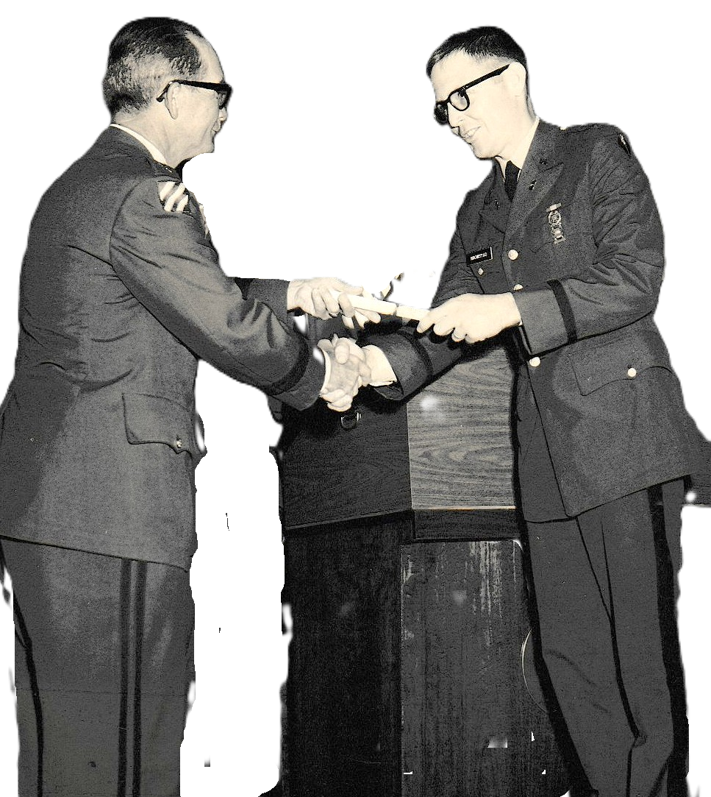

Mother, Clara Myrtle (GRAY) Bird, [LRF Data] [FS Data] was born 1900-06-14 in Seaboard, VA; she Wed Jeff 1917-08-07 in Norfolk, VA. She died 1988-12-26 in Ft Worth, TX, and is buried at Mount Olivet Cemetery, Ft Worth, TX.
- By Terry Linton--
Gus's parents, Thomas and Drusilla, had fifteen children:
Thomas Jefferson BIRD was born in 1884 in Waco, McLennan County, TX. (13) and died in 1884 in Waco, McLennan County, TX.
Robert BIRD was born on September 6, 1885 in Waco, McLennan County, TX, died on November 6, 1886 in Waco, McLennan County, TX. at age 1, and was buried on November 8, 1886, in the Concord Baptist Church Cemetery, Waco, McLennan County, TX. iii. Gertrude "Gertie" BIRD (14) was born in 1886 in Waco, McLennan County, TX (15) and died in 1912, in Oklahoma City, Ward 3, Oklahoma County, Oklahoma, at age 26. Gertrude married Leonard Newton CLECKLER (16), the son of Joseph Newton CLECKLER, in 1910 in Fort Worth, Tarrant County, TX.(18). Leonard was born on April 14, 1886, in Floyd County, Georgia.(19) and died on September 11, 1964, in Boyd, Wise County, TX, at age 78.
Susie BIRD was born on March 28, 1888, in Waco, McLennan County, TX, and died on May 15, 1889, in Waco, McLennan County, TX, at age 1. She was buried after May 15, 1889 in the Concord Baptist Church Cemetery, Waco, McLennan County, TX.
Albert BIRD was born in 1889 in Waco, McLennan County, TX. He died in 1908 in Waco, McLennan County, TX, at age 19.
Hugh Orlando BIRD (20) was born on March 9, 1890, in Birdville, Fort Worth, Tarrant County, TX.(21) He died on September 15, 1964, in Fort Worth, Tarrant County, TX. (22) at age 74. Hugh was buried on September 17, 1964, in the Garden of the Rosary Section, of Mount Olivet Cemetery, in Fort Worth, TX. Hugh married Katherine Augustine VILLROT, the daughter of Joseph Leon VILLROT and Virginia Emma, on October 1, 1924 in Dallas County, TX. Katherine was born on February 13, 1903 in Dallas County, TX. (23) She died on June 9, 1982, in Fort Worth, Tarrant County, TX,(24) at age 79, and was buried on June 11, 1982 in the Mount Olivet Cemetery, Fort Worth, TX.
Jeff Augustus "Gus" BIRD was born on August 16, 1893, in Birdville, Fort Worth, Tarrant County, TX.(26) He died on June 12, 1954, in Fort Worth, Tarrant County, TX, (27) at the age of 60, and was buried on June 15, 1954 in Blue Bonnet Garden Section, Mount Olivet Cemetery, Fort Worth, Tarrant County, TX. Jeff married Clara Myrtle GRAY-SADLER (28), the daughter of George Charles Godwin GRAY and Lula Virginia "Ginny" WILLIAMS,(29) on August 7, 1917 in Philadelphia, Pennsylvania. Clara was born on June 14, 1900 in Seaboard, Princess Anne County, Virginia.(30) She died on December 27, 1988, in Haltom City, Tarrant County, TX,(31) at age 88. Clara buried on December 31, 1988, in the Mount Olivet Cemetery, Fort Worth, TX., Blue Bonnet Garden Section, Fort Worth, TX.
Harriet "Hattie" Melinda BIRD was born on April 28, 1898, in Birdville, Fort Worth, Tarrant County, TX. Hattie died on November 28, 1990, in Glendora, Los Angeles County, California, at age 92. Harriet married Jack BARTLETT, about 1918 in Glendora, Los Angeles County, California. Jack was born about 1898, in Lordsburg, New Mexico, and died in Glendora, and was buried in Glendora.
Guy Rowland BIRD (20) was born on October 29, 1898 in Birdville, Fort Worth, Tarrant County, TX.(20) Guy died on January 7, 1949 in Dallas County, TX, at age 50, and was buried on January 10, 1949, in the Morningside Section, of Mount Olivet Cemetery, Fort Worth, TX. Guy married Annie Mae HOLLINGSWORTH, the daughter of Mr. HOLLINGSWORTH, in 1922 in Fort Worth, Tarrant County, TX.(32) Annie was born on August 23, 1903 in TX. Annie died on December 17, 1990 in Albuquerque, New Mexico, at age 87, and was buried on December 21, 1990 in the Mount Olivet Cemetery, Fort Worth, TX.
Thomas Jefferson BIRD (20) was born on October 21, 1899 in Birdville, Fort Worth, Tarrant County, TX.(33) Thomas died on October 25, 1969, in Fort Worth, Tarrant County, TX, (34) at age 70. He was buried on October 27, 1969, in the Garden of Angels Section of Mount Olivet Cemetery, Fort Worth, TX. Thomas married Katrinka Catherine Mary SCHUTTE, in 1923, in Fort Worth, Tarrant County, TX. Katrinka was born in 1906 in Amsterdam, Netherlands and died on May 22, 1977, in Fort Worth, Tarrant County, TX, at age 71. She was buried on May 23, 1977, in the Mount Olivet Cemetery, Fort Worth, TX.
Drusilla Gay BIRD (20) was born on March 1, 1905, in Birdville, Fort Worth, Tarrant County, TX.(20) Drusilla died on October 2, 1991 in Chicago, Illinois, at age 86. Drusilla married Harry Barthomew O'CONNELL, the son of John B. O'CONNELL and Margaret CONNELLY, on March 22, 1924, in Fort Worth, Tarrant County, TX. (35) Harry was born on March 22, 1896, in Lodi, Wisconsin. He died on January 15, 1979, at age 82.
John "Johnny" William BIRD (36) was born on September 17, 1907, in Dallas County, TX.(36) Johnny died on February 23, 1959, in Austin, Travis County, TX, (37) at age 51. Johnny married Lillie Inez THORTON (1901–1978) in 1922 in TX. Lillian was born on April 2, 1901 in Terrell, Kaufman County, TX and died on October 28, 1978 in Austin, Travis County, TX.
Annabel BIRD was born in 1909 in Fort Worth, Tarrant County, TX. She died on January 14, 1910, in Fort Worth, Tarrant County, TX, at age 1.
Richard "Dick" Bruno BIRD (38) was born on November 24, 1910, in Seminole County, Oklahoma(39) Dick died on September 21, 1979, in the Old Solders Home, in Washington, District of Columbia, (40) at age 68, and was buried on September 26, 1979, in Arlington National Cemetery, Arlington County, Virginia. Richard married before 1944, in Seminole County, Oklahoma.
Frank Lafayette BIRD Sr., (41) was born on April 1, 1913, in Birdville, Fort Worth, Tarrant County, TX.(42) Frank died on June 20, 1994, in Austin, Travis County, TX,(43) at age 81 He was buried on June 23, 1994, in Austin, at Cook-Walden Capital Park, Travis County, TX. Frank married Ora Gail MARTIN (44), the daughter of Joe Frank MARTIN (45) and Hulda Myrtle YOUNG, (45) on July 12, 1936, in the Ridgetop Baptist Church, in Austin, Travis County, TX. Ora was born on November 18, 1916, in Hillsboro, Hill County, TX.(46) Ora died on May 5, 2010, in Leander, Williamson County, TX (47) at age 93, and was buried in Austin, Travis County, TX.
Clara Myrtle GRAY’s (1900-1988) mother, was Lula Virginia "Ginny" WILLIAMS (1874-?).
Ginny was the second of five children born to John Walker WILLIAMS (1840-1943) & Sarah Ann “Salley” Frances CAPPS (1846-1943) ). John was born, November 26, 1840, on his father’s farm, in Seaboard, Princess Anne County, Virginia. Sarah was born in 1846, on her father’s farm, in Pungo, Princess Anne County, Virginia.
Ginny was born in 1874, on the William’s Farm, in Seaboard, Princess Anne County, Virginia (now Virginia Beach City). Ginny married George Irving GRAY (1874-1905), some time in 1894, in Norfolk, Norfolk County, Virginia. George was born, in 1874, in Cokeville, Westmoreland County, Pennsylvania in Pennsylvania. Clara Myrtle GRAY wrote on the back of her father's picture: "George or Charles Godwin Gray", "I don't know where he is from. He left when I was 4 weeks old to see about a job. "We think he must have gotten a steady job as no one never saw him again." After Ginny’s husband, George, left in July of 1900, Ginny put all of her children up for adoption, in the Saint Mary's Infant Home, located on Chapel Street, except her oldest daughter, Susie. Nothing else is known about Ginny.
George & Ginny had five children:
Susie GRAY (1895-?) was born in 1895, in Princess Anne County, Virginia. Susie was raised by her mother until she "went bad" and ran away from home in her early teens to New York City.
Ivy Lee GRAY (1896-1930) was born in 1896, in Seaboard, Princess Anne County, Virginia and died in 1930 in Norfolk, at age 34. Ivy Lee was raised by her grand- parents, John WILLIAMS (1840-1943) and Sarah A. CAPPS Williams (1846- 1943). Ivy Lee married Raymond B. MURRAY, the son of John T. MURRAY (1837-?) and Alice S. unknown, (1837-?), in 1915, in Virginia. Raymond was born in 1893, in Norfolk County, Virginia and died in 1963, in Norfolk, Virginia, at age 70.
Raymond and Ivy Lee had known nine children: Ivy Lee MURRAY (1916-1991), Ruth MURRAY (1917-1975), Alice MURRAY (1919), Margaret MURRAY (1921), Raymond John MURRAY (1923), Olivia MURRAY (1924), John MURRAY (1926), Catherine MURRAY (1928), and Bruce Jay MURRAY (1929).
Edward Luxford GRAY Sr. (1897-?) was born on September 20, 1897 in Seaboard, Princess Anne County, Virginia. 10 Edward was raised by his grandparents John WILLIAMS (1840-1943) and Sarah A. CAPPS (1846-1943) on their farm in Seaboard. 11 According to his World War I Draft Registration Card, which he signed on September 12, 1918, states that he is of medium height, small built, brown eyes, black hair and age twenty-one. He was living at 739 North Malthy Avenue, City of Norfolk, Virginia. Edward was working as a machinist, employed by the Norfolk Navy Yard, Portsmouth, Virginia. Edward listed his nearest relative as R. G. Williams at the same address. 12 Russell G. Williams (1881-1942) was Edward’s uncle. Also living there were is aunt Edith Oliva SADLER Williams (1886-1979) and their son Clarence Miller WILLIAMS (1912-1987) 13 Edward first married, circa 1919, in Norfolk, Norfolk County, Virginia, to an unknown girl, born in 1897. Edward next married Ethel Meredith Etheridge, daughter of Thomas E. ETHERIDGE (1879-?) and Annie (1880-?) unknown, on April 18, 1927, in Norfolk, Norfolk County, Virginia. Ethel was born in 1903 and died in Norfolk, Norfolk County, Virginia. 14 Edward and Ethel had three known children: Edward Luxford GRAY Jr., (1917), born in Norfolk, Norfolk County, Virginia. Carol GRAY, born in 1919, in Seaboard, Princess Anne Co., VA. Olivia Paige GRAY, born in 1924, in Princess Anne Co., VA. Olivia married Roy CLAY circa 1944.
Bruce Irving GRAY (1899-?) was born in 1899, in Seaboard, Princess Anne County, Virginia. Bruce was raised by his uncle and aunt, Peter DYLK (1877-?) and Mary WILLIAMS (1882-?), of Princess Anne County, Virginia.
Clara Myrtle GRAY was born on June 14, 1900, in Seaboard, Princess Anne County, Virginia., Clara was adopted and raised by her uncle, Annas Nias SADDLER and Margaret Eddie CURLING of Great Bridge, Norfolk County, Virginia. Clara married Jeff Augustus "Gus" BIRD (1893-1954) on August 7, 1917, in Philadelphia, Pennsylvania.
Jeff Augustus "Gus" BIRD died on June 12, 1954, in his home, on Meadow Oaks Drive, in Fort Worth, Tarrant County, TX, at the age of 61. On June 15, 1954, Gus was laid to rest in the Blue Bonnet Garden Section, of Mount Olivet Cemetery, Fort Worth, Tarrant Co., TX.
Clara Myrtle GRAY Bird died on December 27, 1988, in the Haltom City Central Hospital, Haltom City, Tarrant County, TX, at the age of 88. On December 31, 1988, Clara was laid to rest next to her husband, of some thirty-seven years, in the Blue Bonnet Garden Section, of the Mount Olivet Cemetery, Fort Worth, Tarrant County, TX.
- By Walt Bronstad-- I never had the pleasure of meeting Jeff Bird, but Clara and I got to know each other well. Several times, while I dated Pat, Clara had me over for dinner. - If I was to continue dating her daughter, I needed more scrutiny.
Pat reassured me that not all 15 siblings plus wives and children would be there, just a simple Sunday dinner. I'm introvert so Clara, Buster, Mary, David and Betty were formidable enough. I knew David and Betty from Birdville High School, David and I took the same plane geometry class. Buster the Marine, was a bit more intimidating.
Pat and I wed 1961-02-24; of course Clara was there for the ceremony as well as David and Earl. Two and half years later, Pat and I lived in a studio apartment in Ann Arbor. By that time, Earl and Nancy occupied the Meadow Oaks home, Clara came on the train for a visit. The apartment was cramped for two, Clara did not stay many days.
in 1972, Pat gave birth to Philip Matthew. The new Mother needed a little guidance in child rearing, and who better than the Mother who gave life to 16? Clara stayed considerably longer that visit in Michigan; she had more to impart. Almost certainly, Philip, as we knew him then, was the greatest beneficiary.
After the girls, Kate and Kris were born, Clara came too, along with Potsy and Sissy.
- By Terry Linton-- Eddy was born on October 8, 1918 in the Birdville, Justice Precinct 1, Fort Worth, Tarrant County, TX. Eddy was a plumber by trade. Eddie joined the US Navy, in 1942 and was a World War II Veteran.
According to the 1920 United States Federal Census, Guy E. Bird age one year old, lived with his parents, who lived with his grandparents, Thomas Jefferson BIRD (1861-1931) & Drusilla GAY (1868-1948). They lived on a strip of farm land at the edge of Fort Worth where they had opened a general store and had gas pumps. The farm was located in Justice Precinct 1, Tarrant County, TX. Household members: Thomas J Bird age 57; Drusilla Bird age 51; Hugh A. Bird age 29 son; Gus J. Bird age 26 son; Guy R. Bird age24; Clara M. Bird age 20 daughter-law; Thomas J. Bird age 20 son; Johnnie W. Bird age 16 son; Drusilla Bird age 14 daughter; Richard Bird age 9 son; Frank L. Bird age 6 son; Guy E. Bird age 1 grandson; Earl A. Bird age 2/12 grandson.
According to the 1930 Census Eddie’s age eleven, father had found plumbing work in Austin, Travis County, TX. They lived at 1703 San Jucinto Street [As of 2025, the parking lot of TX Juvenile Justice Department, and across the street from Scholtz Garden.] in Dwelling Number 92, Family Number 111. Eddie attended School and was able to Read and Write. Household members: Jeff A. Bird age 36; Clara M. Bird age 29; Edward G. Bird age 11; Earl A. Bird age 10; Myrtle E. Bird age 9; Evelyn V. Bird age 7; Jeff A. Bird age 6; Albert Bird age 5; Donald M, Bird age 2 and Drucella M. Bird age 1.
On November 19, 1937, Eddie married Emmie "Tommye" Marie BROWN (1916-2011) in Weatherford, Parker County, TX. Tommye was the daughter of Walter Otis BROWN (1887-1963) & Sarah Ethel HACKNEY (1893-1985)) of Smithville, Tarrant County, TX. Emmie was born on March 14, 1916 in Smithville, Tarrant County, TX.…
Guy Edward "Eddie" BIRD and Emmie "Tommye" Marie BROWN had two Children; starting a count of Jeff and Clara's grandchildren, they are:
Charles Edward "Ed" BIRD was born on June 30, 1941 in Bedford, Tarrant County, TX.
Joyce Ann BIRD was born on January 4, 1943 in Bedford, Tarrant County. TX.
- By Walt Bronstad-- I never got to know Eddie, Eddie was murdered, maybe by a jealous husband, but the Fort Worth Law establishment seems to have done very little about it.
Eddie's death gave Patricia an abhorrence of guns, even when I was in the Army, she wuld not have a gun in the house.
- By Terry Linton-- In 1936, Earl was signed up by his father in the (CCC) Civilian Conservation Corps. Designed to alleviate the widespread unemployment caused by the Great Depression, the CCC recruited unmarried, unemployed young men between the ages of eighteen and twenty-five to spend six months in camps doing conservation work, primarily in the nation's forests. They were paid $1 a day, most of which was sent to their parents in $25 monthly allotments. The War Department ran most of the camps on a military basis, providing supervision and discipline.
Earl enlisted in the United States Army on July 6, 1940, in Dallas, Dallas County, TX as a Private for the Term of Enlistment for the Philippine Department. Earl had 4 years of high school and his civil occupation was listed as a Plumbers, gas fitters, and steam fitters; Marital Status Single, without dependents and was 65 inches tall and weighted 127 pounds. Later Earl was assigned to the United States Army Air Corps.
After World War II, Earl rejoined his father at Bird Plumbing & Heating with their slogan “Don’t Cuss, Call Gus for all your plumbing needs.” In the 1959, The Fort Worth, TX, City Directory list Bird Plumbing & Heating with Earl A. Bird as president, Clara M. Bird as vice president, Albert I. Bird as sectary & treasure and Carlton N. Bird in heating and Franklin D. Bird and David B. Bird.
Earl married Nancy Louise JESSUP on December 19, 1954, in Fort Worth, Tarrant County, TX. Nancy is the daughter of Kenneth Marshall JESSUP (1908–1991) & Edith Anne Grace RICHARDSON (1911–2006). Nancy was born on April 3, 1932 in Oklahoma City, Oklahoma.
Earl & Nancy had five children; continuing the count of Jeff and Clara's grandchildren, they are:
- By Walt Bronstad-- Pat thought highly of her older brother Earl; she was especially proud of his aspiration to be an architect. She showed me several of the homes he had modified with an architectural flare. In fact when Earl and his family took over the Meadow Oaks home, Earl made the house his own, altering the front, changing the street appearance.
When we married, Pat and I, both her Father, Jeff, and her oldest brother, Eddie, were gone. Thus it was Earl, who gave his sister Patricia away in marriage; Patricia‘s mother Clara, relied on Earl as the eldest male of the family.
Years after our marriage, while Earl lived in the Meadow Oaks home of his Father and Mother. My Mother, Louise Bronstad, taught fourth grade at Browning Heights, Elementary school. Earl and Nancy's daughter, Evelyn Louise Bird was one of her pupils; Mother often noted how smart Evelyn was.
Sister and Bill
1st Sister, Myrtle Elizabeth (BIRD) (Dougall) Holzapel, [LRF Data] [FS Data] was born 1921-03-22; she wed 1st husband, Robert, 1949-12-02. She wed 2nd husband, Bill, 1959-08-31 in Ft Worth, TX. She died 1996-12-05 in Fort Worth, TX, and donated her body to science.
- By Terry Linton--
Myrtle attended Riverside Baptist Church, at 3101 Race Street, Fort Worth, TX, with her parents. Later in her life, she attended a Episcopalian Church and a Disciples of Christ Church.
Myrtle lived in Birdville from 1921 until 1924, when her father's plumbing business took the family to Dallas County, TX. In 1927, the family plumbing business took the family to Brownsville, TX. By 1928, the family and Myrtle were living with her grandparents in their General Store in Harlingen, in Cameron County in the heart of the Rio Grande Valley of south TX.
The family then moved to Austin, TX. Their first house was down town, within view of the Capital. The family then moved to out in the country, on Manor Street and Myrtle attended the John B. Winn Elementary School. According to the April 12, 1930, Austin City, Travis County, TX Censes: The BIRD Family was living in Precinct 3, 1703 San Jacinto Street. They lived between the Learnard ALLEN family and the Benjamin BURNILL family. Their rental house was valuated at $20. The Head of Household, was Jeff G. Bird, age 36, with wife Clara M. Bird age 29, son Edward G. Bird age 11, son Earl A. Bird age 10, daughter Myrtle E. Bird age 9, daughter Evelyn V. Bird age 7, son J. A. Bird age 6, son Albert I. Bird age 5, son Donald M. Bird age 2, and Drusilla M. Bird age 1.
In 1933, the family moved back to Birdville, Fort Worth, TX. In May 1939, Myrtle graduated from Riverside High School, in Birdville, Tarrant County, TX. By 1940, Myrtle was employed as a Management analyst. She received her B. S. from TX Christen University.
Myrtle first married Lieutenant Colonel Robert Earl DOUGALL Jr., the son of Carolyn & Robert Earl DOUGALL Sr., on December 2, 1949, in Buffalo, New York. Robert was born on February 20, 1920 in New York. 10 Robert was a World War II veteran serving in the U. S. Army Air Corps. In 1947 Robert became an American Airlines pilot. Robert was a member of the Episcopalian Church. Myrtle & Robert were divorced on December 2, 1953, in Buffalo, New York. Robert died on July 4, 1976, at age 56.
Myrtle next married Colonel William Jack HOLZAPFEL Jr., son of Lieutenant Colonel William Jack HOLZAPFEL Sr. & Adelina M. HOLZAPFEL, on August 31, 1959 in Fort Worth, Tarrant County, TX. William was born on August 10, 1909, in Chicago, Cook County, Illinois. 13 William graduated in 1934, from the West Point Military Academy, West Point, New York. William was a World War II Veteran serving in the U. S. Army Air Corps. William died on February 26, 1983 in Fort Worth, at age 73, and was buried in February 1983 in West Point Military Academy, West Point, New York.
Myrtle Elizabeth BIRD died of Cancer. on December 5, 1996 in Fort Worth, Tarrant County, TX. at age 75. On December 6, 1996 her body was donated science in Hurst, Tarrant County TX.
Myrtle & Robert had one child, continuing the count of Jeff and Clara's grandchildren, she is:
Shelley Anne DOUGALL, born January 28, 1951 in Fort Worth, TX. Shelly died Sunday, Aug. 28, 2011, following a long battle with breast cancer.
She was the oldest daughter and had accomplished quite a lot on her own. Her wartime jobs must’ve put her close to military officers; both her marriages were to Lieutenant Colonels. Sister had one child, Shelley Anne DOUGALL; Pat sometimes babysat for Shelly and felt close to Shelly.
Polly and Kirk
2nd Sister, Evelyn Virginia "Polly" (BIRD) Linton, [LRF Data][FS Data] was born 1922-05-17 in Fort Worth, TX; she wed Kirk 1944-11-11 in Ft Worth, TX. She died 2012-11-14 in Fort Worth, TX, and is buried at Mount Comfort Cemetery, Fairfax, VA.
Brother-in-law, Kirk Louis LINTON, [LRF Data] [FS Data] was born 1914-01-29 in Fairfax County, VA. He died 1987-07-18 in Fredericksburg, VA and is buried in Mount Comfort Cemetery, Fairfax, VA
- By Terry Linton--
Evelyn was born on May 17, 1922, in her father’s house, located at the corner of Bird and Grace Streets, Riverside, Fort Worth, Tarrant County, TX.
On November 11, 1944, Evelyn married Kirk Louis Linton (1914-1987) the son of Charles Edward Linton (1890-1958) and Annie Lucretia Cronk (1888-1956). They were married in Washington, District of Columbia. Their wedding was witnessed by Edna Crowell (secretary to General in her office), Captain Donald Frye, Bernadette Thelma LINTON Butler "Bernie" (Kirk’s sister and brother-in-law) and Randoulph "Randy" Irvin Butler (1918-2007)
Kirk Louis LINTON
Kirk Louis Linton was the 3rd child of seven born to Charles Edward Linton (1890-1958) and Annie Lucretia Cronk (1888-1956). Kirk was born on January 29, 1914, in his grandfather’s old family farmhouse, attended by a midwife. The farmhouse was located near Hunter’s Station and Fort Hunt, in the Mount Vernon District, of Fairfax County, Virginia. Kirk was christened late in 1914, in the Washington Street Methodist Church, in Alexandria, Virginia.
Kirk married Evelyn Virginia BIRD (1922-2014), the daughter of Jeff Augustus Bird (1893-1954) and Clara Myrtle Gray (1900-1988) , on November 11, 1944, in Washington, District of Columbia. Evelyn was the daughter of to Jeff Augustus "Gus" BIRD (1893-1954) & Clara Myrtle GRAY-SADLER (1900-1988). Evelyn was born on May 17, 1922, in Fort Worth, Tarrant County, TX. Evelyn was, also, known as "Polly" or "Birdie".
Kirk and Evelyn had two children, continuing the count of Jeff and Clara's grandchildren, they are:
- By Walt Bronstad-- Evelyn Bird was Polly. Most of the birds, especially the older ones had nicknames. These were the first names I learned of the family.
Polly helped us many times in our lives; six months of my life we spent in Aberdeen Proving Ground Maryland. Pat and her mother Clara drove in the bat-wing,'59 Chevrolet from Fort Worth to Alexandria, Virginia or where Polly, Kirk, Kinney, and Terry Linton lived. Pat stayed with the Linton family for the six months of my OCS training. During that six months, Pat worked in an army depot; this was quite helpful. The army enlisted men allotment of four sets of fatigues was woefully inadequate for the demands of OCS. Little by little Pat increased my wardrobe to 16 sets and sewed on the emblems.
16 years later, our family of five, Pat, Matt, Kate and Kris and I, stayed with the Linton’s for one night. To go to New Zealand, we had to interview at the New Zealand Embassy in Washington, D. C.; presumably they wanted to ensure that we didn’t have an extra head.
- By Terry Linton--
J. A. was born on December 2, 1923, in Riverside District of Fort Worth, TX. J.A. was born in a wood framed house at the corner of "Jeff" and "Grace" Streets that his grandfather, Thomas Jefferson BIRD (1861–1931). His father, actually named him J. A. at birth and his birth certificate states “baby boy”. His family nickname was "Snookum."
In 1924 the family moved to Dallas, were his father had found work. In 1930, the family moved to Austin, Travis County, TX. when his father, a plumber by trade found work there. By April 1, 1940, the family was living back up in Birdville, Fort Worth, Tarrant County, TX.
In the 1940 census as a plumber, like his father. He was working for his father at Bird Plumbing and Heating.
In 1942 He join the U.S. Navy as a gunners mate. When the Navy Seabees were formed he transferred to them.
On June 27, 1944 J.A. married Marjorie Blanchard LAFOREST the daughter of Joseph Aureal LAFOREST & Sarah Myrtle BLANCHARD, in Hawthorne, Los Angeles County, California. Marjorie was born on June 12, 1927 in Hawthorne, Los Angeles County, California.
Marjorie died in 2010 in Hawthorne, Los Angeles County, California, at age 83.
J. A. "Jeff Augustus" died in 2015 in Hawthorne, Los Angeles County, California, at age 92.
J.A. & Marjorie had one child, continuing the count of Jeff and Clara's grandchildren, he is:
Jaime Rolland BIRD who married Ruth Kathryn RUSSELL.
- By Walt Bronstad-- Snookum Bird was the most remote of the Birds, living most of his adult life in Orange County, California. Pat gave me to understand that he picked up the politics of Orange County too.
We saw Snookum and Marjorie at the 1975 Bird reunion; he's in the group photographs.
12 years later, our family of five, Pat, Matt, Kate and Kris and I, visited with J. A. and Marjorie bird in their Southern California home. It was midwinter and we had come from New Zealand to the US, first, for the children to go to Disneyland. Jeff lived not far away.
Albert and Vera
4th Brother, Albert Irvin BIRD, [LRF Data] , [FS Data] was born 1925-03-31 in Dallas, TX. He died 2008-10-10 in Burleson, TX and is buried in Dallas-Fort Worth National Cemetery, Dallas, TX
Sister-in-law Vera Lee (MARTIN) Bird [LRF Data] [FS Data] was born 1931-04-25; she wed Albert 1951-06-21 in Cleburne, TX. She died 2024-07-02 in Cleburne, Johnson County, TX; and is buried in Dallas-Fort Worth National Cemetery, Dallas, TX.
- By Terry Linton--
ALBERT IRVIN BIRD (1925-2008) was born on March 31, 1925, in Dallas, Dallas County, TX.
Albert’s father was a plumber by trade, his job had taken the BIRD Family from Fort Worth to Dallas in 1924. While living in Dallas, TX, Albert was born on March 31, 1925. Albert’s brother Donald Milton BIRD (1926-1999) was born December 9, 1926.
In 1927, Albert and the Bird family moved to Brownsville. Albert’s grandfather Thomas Jefferson BIRD (1861-1931) and grandmother Drusilla GAY Bird (1868-1948) had just opened up and were the owners and operators a grocery store in Edinburg, Hidalgo County, in the Rio Grande Valley of south TX. After staying with his mother and father, for a while, Gus’ family found a place to live in just across the county line, in Harlingen, Cameron County, TX. On April 17, 1928, Albert’s sister Margaret Drusilla BIRD Norwood was born. In 1928, Albert’s father was working in Galveston, TX.
The Bird family then moved to Austin in 1929. According to the April 12, 1930 Austin City, Travis County, TX Censes: The Bird Family was living in Precinct 3, 1703 San Jacinto Street. Their rental house was valuated at $20. The Head of Household, was Jeff G. Bird, age 36, with wife Clara M Bird age 29, Edward G. Bird age 11, Earl A. Bird age 10, Myrtle E. Bird age 9, Evelyn V. Bird age 7, Jeff A. Bird age 6, Albert I. Bird age 5, Donald M. Bird age 2, and Drucella M. Bird age 1. Two more members were added to the BIRD family, while in Austin. On May 20, 1930, Iva Lee BIRD Bryant was born and Carlton Norris BIRD was born on November 21, 1931.
The Bird family next moved to Fort Worth, TX. Albert attended Riverside High School, in Fort Worth, Tarrant County, TX. When Albert was seventeen, still in school and working for BIRD Plumbing and Heating, Albert joined the Merchant Marines.
In 1945, while on leave from the Merchant Marines and visiting his Bird family, who had move to Arkansas, Albert was drafted into the US Army. According to his Military Draft Records, Albert was designated for the Hawaiian Department: Branch, Infantry; Branch Code, Infantry; Grade, Private; Grade Code, Private; Term of enlistment, for Hawaiian Department; Component, Regular Army; Education, 2 years of high school; Civil Occupation, Farmer; Marital Status, Single, without dependents. Albert was listed as a farmer, because his father had moved to Arkansas and perched a 360 acre farm. Albert reported on November 29, 1945, to US Army Camp Wolters, TX Albert spent the next four years in Germany during the occupation.
In 1950, Albert met Vera Lee MARTIN. Albert’s sister, Iva Lee BIRD Bryant (1930-1993) who was working at Southwest Bell Telephone Company, introduced him to her co-worked Vera. "It was love at first sight." just two months later they became engaged. Albert was called back into the Army and sent to Korea, so they put their wedding plans on hold.
While in the Army Reserves, the Korean War (1950-1953) broke out and Albert was called back into active duty and was sent to Korea. On February 15, 1951, Albert was seriously wounded when his squad, from 1st Calvary, where moving forward while riding on a tank. All were killed except Albert, who was blown into an ice cold stream and was found much later. Albert returned to the States and spent several months at Walter Reed U S Army Hospital in Washington D C. (named after Albert’s 4th cousin twice removed). Then Albert was sent to Brooke U S Army Hospital in San Antonio, TX, for recovery. After having many surgeries, he received a medical retirement discharge and was awarded the Purple Heart.
On June 26, 1951, while he was still stationed at Brooke US Army Hospital, Albert Irvin BIRD married Vera Lee MARTIN, in Fort Worth, Tarrant County, TX. Vera Lee MARTIN is the daughter of JAMES Oscar MARTIN (1877-1976) and FANNIE Mable ANDERSON (1888-1976).
Vera Lee MARTIN was born on April 25, 1931, in Cleburne, Johnson County, TX. Vera Lee MARTIN was the youngest of twelve children born to James and Fannie Martin: Edna Mable MARTIN (1903-1908), Edna Mable MARTIN (1905-1992), William Edgar MARTIN (1908-1993), James Harvard MARTIN (1910-1982), Evelyn Rosella MARTIN Watson (1912-2006), Atha Mae MARTIN Massengale (1914), Holland Ambros MARTIN (1917-1918), Clemmie Arlyne MARTIN (1919-2008), John Regan MARTIN (1921), Elza Dwayne MARTIN (1924), Martha Jewel MARTIN (1927-1933), Vera Lee MARTIN Bird (1931).
The MARTIN family lived on a ranch outside Cleburne until Vera Lee was nine years old. She attended elementary school in Brazos Valley, Burton, and Bono. In 1940, the family moved into Cleburne where she attended J. N. Long Elementary School. Vera Lee graduated from Cleburne High School in 1948. Then moved to Fort Worth, where she attended Brantley Draughan Business College. In 1950, she went to work at Southwest Bell Telephone Company.
After his discharge, Albert returned to Fort Worth and went to work for his father at Bird Plumbing and Heating company, where he worked with his father and brothers. In the years that followed Albert worked for many other contractors, traveling to many jobs in other states including the Alaska Pipeline. In 1980 he started his own plumbing company and retired in 1985. Albert and Vera Lee first made their home in Fort Worth, TX. In 1960, they moved to Bedford, Tarrant County, TX, where they lived for twenty-three years. While living in Bedford, Vera worked as a bookkeeper for Boyles Galvanizing Company. Then she was the office manager for Morrow Investments in Hurst. In 1985, Albert and Vera Lee retired and moved to Granbury, Hood County, TX. They became active in Comanche Peak Good Sams Club and also do volunteer work for People Helping People.
Albert & Vera Lee had two children, continuing the count of Jeff and Clara's grandchildren, they are:
Jan Elizabeth BIRD (1952-2023) was born on February 14, 1952, in Fort Worth, Tarrant County, TX. Jan died on August 24, 2023 in Burleson, TX, at age 71.
- By Walt Bronstad-- Albert Bird made the greatest personal military sacrifice of the Birds, having served in the Merchant Marines, the Army, then being called up for the Korean War where he was severely wounded. He had very limited use of his right arm when I knew him.
We saw Albert and Vera often when we visited Iva Lee and Dick Bryant in the 60's. In the 80's and 90's, Albert and Vera hosted Bird reunions at their lakeside home on Lake Granbury.
Donald and Faye
5th Brother, Donald Milton BIRD,[LRF Data] [FS Data] was born 1926-12-09 in Dallas, TX; he died 1999-11-17 in Indianapolis, IN, and is buried in Garland Brook Cemetery, Columbus, IN.
Sister-in-law, Cletha Faye SMITH, [LRF Data] [FS Data] was born 1934-01-12 in North Vernon, IN; she wed Donald 1961-07-15 in Columbus, IN. She died 2010-06-01 in Indianapolis, IN, and is buried in Garland Brook Cemetery, Columbus, IN.
- By Terry Linton--
Donald was born on December 9, 1926 in Dallas, Dallas County, TX.
Donald’s father “Gus” was a plumber by trade, his job had taken the Bird Family from Fort Worth to Dallas in 1924. While living in Dallas, TX, Albert Irvin BIRD (1925-2008) was born on March 31, 1925 and Donald Milton BIRD (1926-1999) was born December 9, 1926.
In 1927, the Bird family moved to Brownsville. Donald’s grandfather Thomas Jefferson BIRD (1861-1931) and grandmother Drusilla GAY Bird (1868-1948) had just opened up and were the owners and operators a grocery store in Edinburg, Hidalgo County, in the Rio Grande Valley of south TX. After staying with his mother and father, for a while, Gus’ family found a place to live in just across the county line, in Harlingan, Cameron County, TX. On April 17, 1928, Donald’s sister Margaret Drusilla BIRD Norwood was born. In 1928, Donald’s father was working in Galveston, TX.
The Bird family then moved to Austin in 1929. According to the April 12, 1930 Austin City, Travis County, TX Censes: The Bird Family was living in Precinct 3, 1703 San Jacinto Street. They lived between the Learnard ALLEN family and the Benjamin BURNILL family. Their rental house was valuated at $20. The Head of Household, was Jeff G. Bird, age 36, with wife Clara M Bird age 29, Edward G. Bird age 11, Earl A. Bird age 10, Myrtle E. Bird age 9, Evelyn V. Bird age 7, Jeff A. Bird age 6, Albert I. Bird age 5, Donald M. Bird age 2, and Drucilla M. Bird age 1. Two more members were added to the Bird family, while in Austin. On May 20, 1930, Iva Lee BIRD Bryant was born and Carlton Norris BIRD was born on November 21, 1931.
The Bird family next moved back to Fort Worth, TX. Donald attended Riverside High School, in Fort Worth, Tarrant County, TX. While in school he worked for his father at BIRD Plumbing and Heating. He had a residence from 1936 to 1944 in Fort Worth, Tarrant County, TX.
According to his U.S., World War II Draft Card, dated February 19, 1944, Donald was 18 years old, born February 13, 1926 in Dallas, TX, resided with his father, Mr. J. A. Bird at 506 Blandin Street, Fort Worth, Tarrant County, TX. He worked part-time for Riverside Transfer Company, East Fort Worth. Donald was five foot three inches tall, weighted 130 pounds, complexion light, hair color brown, eye color brown. Next of Kin was J. A. Bird.
Donald enlisted in the U.S. Army on April 19, 1944 and served in World War II. He was wounded and received the Purple Heart in 1945. Donald was release from the Army on December 9, 1946. Donald went back to work for his father at Bird Plumbing & Heating in Fort Worth for two years then reenlisted in the Army on March 8, 1948. He was stationed in Germany. He graduated with his GED while serving in the U.S. Army. He served in the Korean War from 1950-1953 and revived his second Purple Heart. Donald retired from the military as a Master Sargent Cook at the U.S. Army Base Fort Knox, Hardin County, Kentucky after over thirty years of service. After retiring from the Army, Donald went to work for the Cummins Engine Company and retired from them in 1987.
On July 15, 1961, Donald married Cletha Faye SMITH (1934-2010) in Hope, Bartholomew County, Indiana. Faye was the daughter of Cecil Alman SMITH (1903-1971-) & Crystal Lucille PIERCE (1910-1980). Cletha ( went by her middle name) was born on January 12, 1934, on her father’s farm in North Vernon, Columbus, Jennings County, Indiana. Faye was the granddaughter of Brook SMITH (1877–1961) & Laura Etta DAVIS (1887–?) of Sand Creek Township, Jennings County, Indiana. Also the granddaughter of Jacob H. PIERCE (1867–1929) & Laura Edna JACKSON (1875–1969) of Kirkland, Adams County, Indiana and Jennings County, Indiana. According to the April 1, 1940 census, Faye had a residence in 1935 in Sand Creek, Jennings County, Indiana. she was single and was the daughter of Cecil, a farmer and the Head of House who own the land. Faye graduated in 1952 from North Vernon high school, in Indianapolis, Marion County, Indiana. She resided in 1962, in Hope, Columbus, Bartholomew County, Indiana. She had a residence from 1977 to 2020 in Columbus, Indiana,
In 1999 they were living in Greenwood, Johnson County, Indiana. Donald & Faye were Church members of the New Bethel United Methodist Church, in Columbus, Bartholomew County, Indiana. They lived on Faye’s father’s farm. Donald died on November 17, 1999, in the Vencor Hospital Indianapolis South, Columbus, Bartholomew County, Indiana at age 72. Donald was buried on November 20, 1999 in the Garland Brook Cemetery, Columbus, Indiana.
Faye died eleven years later on June 1, 2010 in Hope, Bartholomew County, Indiana at age 76. She was buried next to Donald at Garland Brook Cemetery.
Donald & Faye had one child, continuing the count of Jeff and Clara's grandchildren, he is:
- By Walt Bronstad-- Donald Bird had the longest military service of the Birds, having served in World war II, the Korean War and the Post Korean War period. He earned a purple heart in both WW II and the Korean War and retired from the Army.
Pat and Clara, traveling Jan. 28, 1967 from Fort Worth to Polly's in Alexandria, stopped for two nights with Donald and Faye who lived just off the base (Fort Bragg).
Donald's came to the 1975 reunion, Pat and I saw relatively little of Donald; much of his civilian life was in Indiana where his wife came from.
[FG Data]:: Find a Grave data: https://www.findagrave.com/
[FS Data]: Family Search data: https://www.familysearch.org
[LRF Data]:: Linton Research Fund data: http://linton-research-fund-inc.com/
This symbol means the link will take you to an external website, one outside of this website.
- By Terry Linton--
Margaret married Otha L. "Sammie" NORWOOD (1911-1992), the son of Emmit Clarence NORWOOD (1881-?) & Ada Martha UNKNOWN (1891-?). They were married on October 3, 1946, in Tarrant County, TX. Sammy was born on July 29, 1911, in Queen City, TX. Sammie played AAA Baseball in the 1930's on the Fort Worth CATS. Sammie was the founder and owner of Sammie’s Bar-B-Que in Arlington, TX. Sammy died on February 27, 1992, in Fort Worth, Tarrant County, TX, at age 80, and was buried on February 29, 1992 in the Mount Olivet Cemetery, Fort Worth, TX.
Margaret Drusilla BIRD and Otha L. "Sammie" NORWOOD had three Children, continuing the count of Jeff and Clara's grandchildren, they are:
Sherry Lee NORWOOD was born on May 21, 1948 in Fort Worth, Tarrant County, TX. Sherry graduated in 1966, from Keller High School, in Keller, Tarrant County, TX. Sherry is employed by HUD. She resided in 1976, in Fort Worth, Tarrant County, TX. Sherry married William "Billy" Ronald ARMSTRONG, son of Garland Ansel ARMSTRONG and Dorothey SAUL, on October 22, 1968 in Fort Worth, Tarrant County, TX. Billy was born on January 24, 1947, in TX. He was employed in the drywall construction trade. They were divorced on December 12, 1975, in TX.
Sherry Lee NORWOOD & William "Billy" Ronald ARMSTRONG had two Children:
Garth Ansel ARMSTRONG who married Sonya G. WIGGINS.
Gretchen Lorene ARMSTRONG, who married Robert Andrew CEARLEY II; they had two children:
Robert Andrew CEARLEY 3rd
Megan Ann CEARLEY
Carmen Victoria NORWOOD 1st married Larry Wallace KEY; they had one child:
Vicky Leann KEY.
Carmen next married Jerry Neal WATERS, Carmen & Jerry had two children
Samantha WATERS
Vanessa Rhea WATERS
David Ray NORWOOD. David 1st married Lisa WESTBROOK.
David next married Carla Leigh ZAGGLE. David & Carla Leigh had two children:
- By Walt Bronstad-- Margaret Drusilla "Piggie" was very dear to our hearts. Throughout the years she welcomed us many times to her home at 2245 Grace in Fort Worth. Frequently she fed us Sammie's Bar-B-Q. Often she sent us home with more Bar-B-Q and a half-gallon of Sammie's sauce. So important to them was Bar-B-Q that she and Sammie had a pit built close by their home.
During our last month in Austin, when Patricia was well into marked symptoms of her dementia, Margaret, accompanied by her daughter Sherry Anderson and her niece Rebecca Utley visited us at 1406 Briarcliff. The next day, in Fort Worth, Margaret died. Margaret's funeral at Mount Olivet was the last time Pat walked among her birth family and members of her extended family.
Margaret D. Norwood (1928 - 2019)
Margaret D. Norwood FORT WORTH -- Margaret D. Norwood passed away Monday, Jan. 7, 2019, at age 90, in Fort Worth. GRAVESIDE: 2 p.m., Saturday in Mount Olivet Cemetery. Margaret was born April 17, 1928. She was a homemaker who loved her children and all other children as well. She returned to work in 1963 in the family BBQ business until her retirement. She was preceded in death by her parents; husband, Sammie Norwood; eight brothers; four sisters; and one grandchild. SURVIVORS: Children, Sherry Armstrong of Fort Worth, Carmen Waters of Corpus Christi, and David Norwood of Eaton, Colo.; three sisters, Mary Gill of College Station, Pat Bronstad of Austin, and Betty Jensen of Kerrville; six grandchildren; and numerous great-grandchildren and great-great-grandchildren.
Richard Frank BRYANT, [LRF Data] , [FS Data] was born 1928-07-03 in Birmingham, AL; he died 1999-04-30 in Bedford, TX and is buried at Mount Olivet Cemetery, Ft Worth TX.
- By Terry Linton--
Iva Lee BIRD (1930-1993) was born on May 20, 1930, in Austin, Travis County, TX. Iva Lee was the 9th child of Jeff Augustus "Gus" BIRD (1893-1954) & Clara Myrtle GRAY-Sadler Bird (1900-1988). Iva Lee married Richard Frank BRYANT (1928-1999) on October 6, 1955, in Fort Worth, Tarrant County, TX. Iva Lee and Dick had one child, continuing the count of Jeff and Clara's grandchildren, she is:
- By Walt Bronstad-- We had many visit with Dick and Patsy and many times Albert and Vera were there too at 921 Wade Drive, Bedford, TX.
While I was a student Pat was very lonely I think and I didn’t have a way of realizing it. While a co-op student. I was either working at Chance Vought by day and going to night school at Arlington State College in the evenings and working homework or, Saturday night, working at the Star Telegram. While full-time student, I was attending ASC classes and burying my head in the books or working again at the Star Telegram Saturday night. So weekend visit to Potsey and Dick's house kept Pat in touch with Family. Albert and Vera lived at 860 Patti Drive, almost behind Dick and Potsey, it was convenient for them to visit too.
By this time, Earl may have acquired the Meadow Oaks home. Clara may have begun her peregrinations amongst her more established daughters, not really sure of Clara's chronology, but Pat's Mother may have been enjoying the hospitality of her older daughters.
Buster and Bettye
6th Brother, Carlton Norris "Buster" Bird, [LRF Data] [FS Data] was born 1931-11-21 Austin TX. He died 2002-10-01 and is buried at Greenacres Memorial Park Cleburne, TX
Sister-in-law, Bettye June GAYLER, [LRF Data] [FS Data] was born 1935-06-19 in Mineral Wells; she wed Buster 1963-05-17 in TX; she died 2017-04-07 in Crescent City, CA.
- By Terry Linton--
Carlton was born on November 21, 1931, in Austin, Travis County, TX, Carlton married Bettye June GAYLER on May 17, 1963, in Weatherford, Parker County, TX. Carlton died on October 1, 2002.
See more at Terry Linton's, Linton Chronicles
Carlton N Bird and Bettye J Bird divorced 19 Jun 2002 in Tarrant County, TX. They had no children.
- By Walt Bronstad-- Carlton and David along with their wives Betty and Glenda, tried to help me and Pat out of the depths of my funk, early 1975. They took us out bowling and playing bingo. David even suggested he could get me on with a sheet metal apprenticeship.
Much as I appreciated their warm, familial intent, I had to work out of my depression in my own way.
Carlton (Buster) was ever a Marine. Early in the new millennium, he was collecting subscription money for The Marine Times in a dodgy Dallas neighborhood. Two men backed up their demand for his collection by flashing pistols. Buster's, "I don't think so.", earned him two near fatal bullets and days in a Dallas hospital.
Sister-in-law, Rita Aline PULLIAM, [LRF Data] , [FS Data] was born 1940-07-02 in Keller, Tarrant County, TX; she wed Buddy 1958-03-28. She died 2014-01-30 in Haltom City, TX and is buried at Bourland Cemetery, Keller, Tarrant County, TX.
- By Terry Linton--
Franklin Delano "Buddy" BIRD (Jeff Augustus "Gus" 1st, Thomas Jefferson 2nd, George Jr. 3rd, George Sr., 4th, Mark (Colonel) 5th, William (Ironmaster) 6th)
Franklin Delano "Buddy" BIRD was a twin, born on January 8, 1934 in Fort Worth, Tarrant County, TX. Buddy joined the U.S. Air Force in 1952. He was a plumber's helper by trade. Buddy has resided in Keller, Buffalo, and Burleson, TX.
Franklin married Rita Aline PULLIAM, daughter of Nicholas James PULLIAM (1882-1968) and Ella Fay RUSSELL (1912-1995). They were married on March 28, 1958, in Fort Worth, Tarrant County, TX. Rita was born on July 2, 1940, in Keller, Tarrant County, TX.
Franklin Delano "Buddy" BIRD and Rita Aline PULLIAM had five Children, continuing the count of Jeff and Clara's grandchildren, they are:
- By Walt Bronstad-- "Buddy" Bird, born 1934-01-08 and named Franklin Delano, must have carried his Fathers hopes for the new, depression era President who was less than a year into restoring American confidence, and restoring the American economy. Ironically, Buddy seemed not overly concerned with material prosperity. He seemed more in tune with his Father who wanted a lot of kids.
Rita, who grew up in Keller, TX, fondly remembered my Mother, Louise who taught at Keller 1952 - 1955?
Obituary of Rita Aline Bird.
Rita Aline Bird, 73, passed away January 30, 2014 at her home.
Graveside service: 2:00pm Monday, February 3, 2014 at Bourland Cemetery. Rita was born July 2, 1940 to Nicholas James and Ella Fay Russell Pulliam in Keller, Texas. Rita enjoyed her family and being around them as much as she could. She had many hobbies, but she loved to read, play computer games, card games and surf the internet and travel most of all. Even if traveling was just getting into the truck with daddy and going for a drives. You never knew where they would end up.
Survived by her husband of 57 years, Franklin "Buddy" Bird; brothers James and Henry Pulliam; sons, Danny Bird and his wife, Rebekah, Guy "Eddy" Bird and his wife, Debbie, and Tim Bird and his wife, Cathy; daughters, Margaret Motley and her husband, Rick, and Penny Lindsay; grandchildren: David , Kristina, Tyler , Tim, Jamie, Jennifer, Chris, Dustin, Deanna, Spencer, Gladella, Misty, Andy, Leslie, Karin, Jon, Cassidy, Scott, Tamara, Edwin, Caitlyn, Cameron, Joshua, Ashley, Nickolas; great- grandchildren: Trevor, Chyanne, Joel, Blaze, Zane, Chloe, Nathan, Payton, Sophia, Amelia, Elloise, Daniel, Luis, Corey, Jackson, Brandon, MIchael, Madelyn; and numerous nieces and nephews, friends.
Loved ones who have gone before, her father, NJ Pulliam, mother Ella Fay Pulliam, Brother "Bill" Pulliam, sister Gladella Ward.
Obituary of Franklin Delano Bird.
Franklin Delano Bird, 73, passed away January 19, 2016 at her home.
Graveside service: 1:00pm Friday January 22, 2016 at Bourland Cemetery. Franklin was born Jan. 8, 1934, to Jeff A. "Gus" Bird and Clara M. Gray in Fort Worth. He was preceded in death by his wife, Rita A. Bird, in 2014.
Survived by his sons, Danny Bird and his wife, Rebekah, Guy "Eddy" Bird and his wife, Debbie, and Tim Bird and his wife, Cathy; daughters, Margaret Motley and her husband, Rick, and Penny Lindsay; grandchildren: David , Kristina, Tyler , Tim, Jamie, Jennifer, Chris, Dustin, Deanna, Spencer, Gladella, Misty, Andy, Leslie, Karin, Jon, Cassidy, Scott, Tamara, Edwin, Caitlyn, Cameron, Joshua, Ashley, Nickolas; great- grandchildren: Trevor, Chyanne, Joel, Blaze, Zane, Chloe, Nathan, Payton, Sophia, Amelia, Elloise, Daniel, Luis, Corey, Jackson, Brandon, MIchael, Madelyn; and numerous nieces and nephews, friends.
Funeral oration by Misty Chappell.
In the book of John it reads: "in heaven my fathers house there are many mansions. I go to prepare a place for you. and if I prepare a place for you I will come again and receive you unto myself, so that where I am you will be also and where ever I go you will know the way...." Looks like granny was ready for papa to join her in heaven's mansions...
Well, I suppose its time for us to stop being selfish and for papa [Franklin Delano Bird] to stop being stubborn and go home to his bride Meano [Rita Aline Bird]. Granny finally got her way and called him home to heaven's mansions, because she clearly missed him like we all will forever, but she also needed her garage sale driver back at the wheel. Now that they're together once again it wouldn't surprise one bit if papa's already found a scrap yard or a Home Depot because we can guarantee he'll be building his own house, like before.
I don't see papa as the mansion type. I can almost bet by now he's got the walls and foundation done for him and granny's new home. That's just how he was. a busy busy man of many talents.
Like I said when granny passed, growing up we always as kids thought we had drawn the short end of the stick: always wanting to live in a normal subdivision with nice homes but little did we know we had it made. I can almost guarantee most of my cousins and myself spent some time helping to lay shingles, or pour concrete. He was always up to somethin', usually about 10 things at a time driving granny nuts. Starting one project then another and another before a year later going back to finish the original project. But due to his construction capabilities, and all the things he taught us and due to his semi hoarding it always gave us grandkids something to do. There would always be just enough wood, nails, paint and junk laying around [so] we could make our own awesome forts. Windows and shingles and all.
Papa was one of the hardest working men I've ever known. He'd be out from sun up till sun down just fidgeting with whatever he could. Shirtless usually, so as a kid it always cracked my up when he'd get out of the shower and look like an Indian from the waist up but white as an Eskimo down his leg. Another thing that makes me laugh is his always telling me to bring him his orange handled pliers or whichever tool. I'd look forever and be like papa, you don't have any orange handle pliers.
He'd get frustrated come to the tool box and grab them immediately (they'd be green or something random) because he was color blind. And also I want to apologized for all the time I mocked him while sweeping. He'd be sweeping and ask me to find a crash bag, I'd say "papa, you want a trash bag or a crash bag, because we all know he would never wear his teeth. So me being a smart aleck would and come back say I couldn't find a crash bag & which always resulted in him chasing me down the hall with the broom.
Papa was the funniest man I've ever known. If you stood next to him you better bet hes gonna' start a conversation with you. Whether it be about Obama being the antichrist, UFOs, the Bible, Hitler and the Iraqis being aliens. It was never a dull moment with papa. I remember one time I had to go to the courthouse with him downtown and of course he set off the metal detectors. They asked him to empty his pockets. He pulled out handful after handful of, washers, nuts, bolts, drill bits and probably about 10$ in spare change. All I could do was laugh.
Oh and the shortcuts lol. Papa always took the scenic route which I admire now. Life's too short to be in a rush. His shortcuts usually added 20 min to an hour to your destination but it was always about the scenery not the time. We should all take more shortcuts lol.
Oh and there was the invention of birball lol. What I wouldn't give for one more healthy game of papa kicking it across the road like soccer or Rick splitting his pants lol. Good times.
And I also want to say thank you again papa for acting like superman and waking me up by throwing me over you shoulders and running me way out into the pasture to ensure I was safe when the house caught on fire and we were all sleeping. I love you. You truly were and always will be one of my real life superheroes I read somewhere that if you make your children or in your case even grandchildren happy, you will continue to make them happy 20 years later by the memory of it.
We love you papa thank you for everything you've always done for us for all your great memories. Give granny hugs and kisses and tell her thank you for the cardinals continually watching over us. I'll keep trying to win that lotto for you, but until it's our time to join you two in heaven in your homemade mansion, for now I'll just see ya in the funny papers.
Brother-in-law, Jeroll Dean SHIVERS, [LRF Data] , [FS Data] was born 1929-03-09 at Shivers Ranch in South Lake, Tarrant County TX; he died 2008-08-30 in South Lake, Tarrant County, TX and is buried at Bluebonnet Hills Memorial Park, Colleyville, TX.
- By Terry Linton--
Frances was born a twin and the 12th child of Jeff Augustus "Gus" Bird & Clara Myrtle GRAY-SADLER.
Frances married Jeroll Dean SHIVERS (1929-2008), the son of Claude Lee SHIVERS (1907-2001) & Vera Alno BAILEY (1909-2005) on September 4, 1953 in Fort Worth, Tarrant County, TX. Jeroll was born on March 9, 1929 on the Shivers Ranch in South Lake, Tarrant County, TX. Jeroll's family was one of the founding settler families to Tarrant County. Jeroll died on August 30, 2008 in South Lake, Tarrant County, TX, at age 79.
Frances & Jeroll had two children, continuing the count of Jeff and Clara's grandchildren, they are:
- By Walt Bronstad-- "Sissy" Bird, born 1934-01-08 and named Frances Dell, must have, like her brother, carried her Mothers hopes for the new, depression era President who was less than a year into restoring American confidence, and restoring the American economy.
Many times, after our marriage, Pat and I visited with Sissy and Jerrol Shivers at their 5817 Dana Drive home. They were very supportive, Sissy gave us a large round coffee table and a durable drum table that toured the world with us to the antipodes, to Portland, OR and to our several homes in Austin.
Jerrol who was allergic to inertia helped me construct a front step handrail for my Father's home, this became evidently important after my Uncle Hudson took a painful tumble exiting my father's home.
Obituary of Frances Bird Shivers.
Frances Bird Shivers passed away Monday, June 2, 2014, in Southlake. Celebration of life: 12:30 p.m. Friday in Bluebonnet Hills Memorial Chapel. Robert "Pepper" Puryear, his son-in-law, will officiate. Visitation: 6 to 8 p.m. Thursday at Bluebonnet Hills Funeral Home.
Frances was born Jan. 8, 1934, in Fort Worth to Jeff and Clara Bird. She was one of 16 children. Frances graduated from Haltom High School in Haltom City. She was a devoted wife, mother and grandmother. Frances was preceded in death by her loving husband, Jeroll Shivers; parents; six brothers; and three sisters. Survivors: Daughters, Rebecca Utley of Southlake and Debra Puryear of Mount Vernon; six grandchildren; eight great-grandchildren; six siblings; and numerous other loving family members and friends. - See more at: Legacy Obituary
- By Terry Linton--
Mary graduated from Birdville High School in 1954.
Mary married Doctor Jimmie Eugene GILL on September 10, 1960, in Fort Worth, Tarrant County, TX. Jimmy ws born to H.C. Gill and Loraine (Whitt) Gill. They have two children, continuing the count of Jeff and Clara's grandchildren, they are:
- By Walt Bronstad-- Mary Louise Bird, was the youngest of Patricia's older sisters. She with her husband, Dr Jimmie Gill, did sustained work keeping the family together. Whether by fortuity or by intent, Mary and Jimmie bought their home, 3425 Meadow Oaks, in the same block as the last home of Jeff and Clara, 3312 Meadow Oaks.
On their urban acre, they raised a family, helped sustain their church, and frequently hosted family gathering Christmas and July 4th.
In the 1980's, when Clara became ill and needed specialized care, Mary and Jimmie organized and managed the family response. I cannot begin to do their accomplishments justice. As I try to speak of their work, I'm haunted realizing that the weight of my ignorant omissions mocks my attempt at praise.
David and Glenda
8th Brother, David Brewer Bird, [LRF Data] , [FS Data] was born 1938-02-26 in Fort Worth, TX. He died 1997-07-04 in Dallas, TX, and is buried at Greenwood Memorial Park, Ft Worth, TX.
Sister-in-law, Glenda Beatrice WOODS, [LRF Data] , [FS Data] was born 1943-11-29 in Wyandotte, MI 1936-11-29 to Roy and Ruby Woods in Atlanta, GA; she wed David in Fort Worth, TX 1965-11-21. Glenda died 2022-09-20 from cancer in Fort Worth, she was buried at Greenwood Memorial Park, Ft Worth, TX.Greenwood Obit
- By Terry Linton--
David's parents named him after William Brewer Hall, a long time family friend and pluming business colleague. David graduated in 1958, from Birdville High School, in Fort Worth, Tarrant County, TX. He worked was a life guard, construction worker and a union sheet metal worker.
David married Glenda Beatrice WOODS, daughter of Roy Wesley WOODS and Ruby Mildred ALLAN, on November 21, 1965 in Fort Worth, Tarrant County, TX. Glenda was born on November 29, 1943 in Wyandotte, Michigan.
David & Glenda had two Children, continuing the count of Jeff and Clara's grandchildren, they are:
- By Walt Bronstad-- David Bird, was the big man on campus at, (where else) Birdville High School. By nature, I'm a timid soul. My sophomore year could not be in the district I attended as a freshman, so the 10th grade was all new, and David was evidently near, if not actually, king of the hill. We took the same Plane Geometry class, and he proved to be a most modest, supportive human being.
Pat and Walt
SELFPatricia "Pat" Margie (BIRD) Bronstad, [Walt Data] [LRF Data] [FS Data] was born 1941-01-30; she wed Walt 1961-02-24 in Fort Worth, TX. She died 2023-11-06 from FTD in Knoxville, TN. Part of her cremains will be buried at St Olaf Cemetery near Cranfills Gap, TX.
- By Terry Linton--
Pat was born on January 30, 1941, in Fort Worth, Tarrant County, TX. Pat graduated in 1959 from Birdville High School, Birdville, Fort Worth, Tarrant County, TX.
Patricia married Gilbert Walton BRONSTAD, the son of Clyde Pernell BRONSTAD & Louise Myrtle WALTON, on February 24, 1961 in Fort Worth, Tarrant County, TX. Gilbert was born on September 24, 1940 in Cranfills Gap, Bosque County, TX. Walt received his B. A. from Arlington State College, Fort Worth, TX. He received his Masters Degree from the University of Michigan, Ann Arbor, Michigan. Walt served in the U.S. Army stating in 1967.
Pat & Walt had three children, continuing the count of Jeff and Clara's grandchildren, they are:
- By Terry Linton--
Beatrice Betty Jean BIRD Jensen was born on August 28, 1942, in Fort Worth, Tarrant County, TX. Betty was the 16th child of Jeff Augustus "Gus" BIRD (1893-1954) & Clara Myrtle GRAY-SADLER Bird (1900-1988). Betty married John Harold JENSEN on September 1, 1962, in Dallas, TX.
Betty & John had two children, continuing the count of Jeff and Clara's grandchildren, they are:
- By Walt Bronstad-- Betty Bird, was the youngest and a year behind Patricia. Betty went to Arlington State College, and so did John whom we met there. One of my faculty advisers, Dr Anne Whaling, also hired Betty as a student assistant. Years later the Jenson family visited us in Ann Arbor, 1969.
When we lived in Austin, the Jenson family moved to Kerrville, TX, a two hour drive from Austin, so we visited often. In the 90's we even took a trip together to Copper Canyon in Mexico.
[FG Data]: Find a Grave data: https://www.findagrave.com/
[FS Data] Family Search data: https://www.familysearch.org
[LRF Data]: Linton Research Fund data: http://linton-research-fund-inc.com/
[Walt Data]: This site, Walt's memories: https://gwbronstad.github.io/Walt-Kin/
This symbol means the link will take you to an external website, one outside of this website.
In 1933, the Bird family moved from Austin back to Birdville, Fort Worth, TX. In May 1939, Myrtle graduated from Riverside High School, in Birdville, Tarrant County, TX. Earl enlisted in the United States Army on July 6, 1940, in Dallas, Dallas County, TX as a Private for the Term of Enlistment for the Philippine Department. By 1940, Myrtle was employed as a Management analyst. She received her B. S. from TX Christen University. Albert attended Riverside High School, in Fort Worth, Tarrant County, TX. When Albert was seventeen (March 1942), still in school and working for BIRD Plumbing and Heating, Albert joined the Merchant Marines.
In 1943, Gus Bird moved his family to a farm near Hope, Arkansas.
In 1945, while on leave from the Merchant Marines and visiting his Bird family, who had move to Arkansas, Albert was drafted into the US Army. According to his Military Draft Records.
E Loraine, Haltom City, TX (~1954-06 — 1961-02)
I started dating Marilyn Turner, one date; I brought Marilyn back past her father's curfew, and some Church of Christ folks guard their daughters close. When I called Marilyn for a second date, she explained I was on her father's "never' list, but her friend, Pat Bird, might welcome my call. Patricia Bird and I began dating the last semester of high school. I no longer had Brother Bob for guidance on dating, he was living in Salt Lake City, UT, but he did very kindly leave me his '55 Studebaker Coupè. I relied on Mike Fox for experienced help; he recommended The House of Molè in the TCU area. The food made a strong impression on both Patricia and my wallet. Closer was the Italian Inn on Lancaster Avenue, Mike's mother had managed the lease.
Pat learned to drive, using Bob's '54 Lincoln from Bob's slowly declining used car lot. It was the only car with automatic transmission. She thought that best rather than the added complication of a manual transmission. Later she mastered the stick shift and clutch control in the Studebaker.
z322 ✓
1960
1961-02-25
{Fort Worth Star telegram}
Miss Patricia Bird Married To Walton Bronstad in Church
Miss Patricai M. Bird and Gilbert Walton Bronstad were married at 8 p. m. Friday at Asbury Methodist Church by the pastor: Rev S. A. Baker.
Parents of the couple are Mrs. Jeff A. Bird of 3312 Meadow Oaks Dr. and Mr. and Mrs. Clyde P. Bronstad of 4710 E. Loraine.
Miss Marian Kay Clark was the bride's only attendant and Michael Fox was best man. Jeroll Shivers and David Bird ushered.
The bride's street–length gown was of white silk organza over taffeta. The molded bodice had a jewel neckline and long–sleeves. She carried a bouquet of split carnations and camellias. The bride was given in marriage by her brother, Earl A. Bird.
At the church reception, Miss Betty Bird, and Mmes. Dick Bryant and Jeroll Shivers, all sisters of the bride, and Miss Bette Bronstad, the bridegroom's sister, were in the house party.
When the couple left on a trip to Arkansas, the bride wore a blue wool knit suit with black accessories. They will reside at 1554 N. Sylvania.
The couple are graduates of Birdville High School. The bridegroom is presently a student at Arlington State College.
1554 N Sylvania Ave, Fort Worth, TX (~1961-02 — 1961-10)
After high school, Pat had begun working at Edison Jewelers in downtown Fort Worth. Later she got a much better job with Bell Telephone Company, 900 block of Throckmorton St. We had agreed she would help me through college, then I would work and help her through college.
Pat and I wed February 24, 1961. We had been dating Friday nights for two years. I had wanted a simple, civil ceremony, but Mother would not hear of it, she organized a bigger event at the Asbury Methodist church she, Bette and Clyde attended. Aunt Marie came from Cranfills Gap, Homer and Travis from Denton, Ina Jo and family from Odessa. Annie Joy from Wichita Falls. Many from Pats family came too, her Mother many sisters and brothers. All the elements of families merging. Before the wedding, Clyde, who had never discussed sex with me, presented me with a large box of lambskin condoms, said "always use these", and walked away in embarrassment. Silently saying, "finish school before starting a family."
We were married on a Friday, had an abbreviated honeymoon on the weekend. I was unable to complete husbandly duties, unable to inflict pain. My family doctor, Dr Josephson dealt with the problem of pain; I've always preferred to think it was a minor surgical procedure; Pat never contradicted that. We lived in a garage apartment on Sylvania Ave, Fort Worth. It was just blocks from Pat's sister Margaret Norwood and my co-op carpooler, Gerald M.
Spring work semester '61, the Fort Worth Co-op 6 were dispersed. I went to the LTV electronics division. I worked weeks with June Mangrum learning on the job flow charting. which he applied to work flow, aiming toward better time use. The process must not have been too extensive for I spent the next few weeks in service to a massive Xerox machine cutting, collating and maintaining the flow of copied engineering drawings. Next I went to a vibration test lab where electronic and electric equipment had the bejesus shook out of it to insure it could endure the stresses of fighter aircraft maneuver. Some senior engineers spent a lot of time chasing their secretaries. One secretary vividly chased James J Ling on the rare time he showed up.
Summer, this time, co-op students took both summer semesters. all math and physics or engineering. No electives.
Where we lived, East Fort Worth, both of us commuted to work. We decided to rent an apartment near ASC campus to eliminate (for me, not her) the time consuming cost of commuting to school.
z310 ✓
E 2nd St., Arlington, TX (~1961-10 — 1963-09)
This was an upstairs garage apartment. The owners home was on the same lot so we shared the 2 car garage below.
The fall work semester of 1961, I spent at a drafting table drawing what, I no longer recall. It was a small, bored group. One man with an EE degree from LSU spent hours, using all the colored pencil colors Vought could procure, to validate a spaghetti wiring diagram for a missile launch sight. Work an assiduous 8th grader could perform.
That began to gnaw on me, The co-op program administrator, an alumnus of Purdue University , publicly anointed a Purdue co-op student with a choice assignment at Vought. Certainly Purdue had better standing than ASC, a two year college just stepping up to a full four years. Engineering Schools had a pecking order, a hierarchy, a class system, and I'd started out with limited academic lineage. ASC science, mathematics and engineering courses were tough, I didn't like the idea of getting my degree, and spending a working life validating others work with a box full of colored pencils.
This would be a future theme, "paying to get on the Merry-Go-Round, only to realize the brass ring was little more than a lure for a fish." A MacGuffin to keep my life story contained by the organization.
Anne Whaling kept in touch, asking me to visit her during her office hours where we might discuss ideas at length; she often gave me books she thought germane to our talks: David Riesmann's The Lonely Crowd, Albert Camus' The Rebel, William H. Whyte's The Organization Man. All tough but engaging reads. I had no resources for T. S. Elliot's The Waste Land., nor do I wish to work on it, having found John Carey's illustration of Elliot's character repellent.
Spring school semester '62 I doggedly pursued engineering with 20 credit hours of demanding engineering at 2.9 /3 gpa. But my motivation was spent, the 'brass ring' began to look like a trigger in a cage trap.
Anne encouraged me to pursue what interested me, while I found the work of Sociologists interesting, ASC had no Sociology department. Psychology was the closest and I had been distantly intrigued by Bob's discussions of Psychology with Mother. So I simply phoned Till Philips, saying I wasn't returning; I did not show up at Vought for the summer work semester, I bolted for a race to complete a Psychology major ( 33 hours plus 22 of other requirements) by the end of the next summer semester.
As I write this I'm struck by the recklessness of burning my bridges behind me. How ever did I persuade Patricia of what I was doing? I was shifting most of the burden of income on her; I did resume slipping papers nights at the Star Telegram, but that was a small stream. At writing time I have the disadvantage of knowing I was just trading one carousel for another, lured by a different brass ring after deprecating the first. But I lack now the youthful risk-taking, the illusion of promise and the promises of Anne that I would be well received in the academic world, for that is where I had to go on this new carousel. For Anne, it was understandable, much of her adult life she had feared, if not actually felt rejection for her face disfigured by a large port wine stain birth mark running across her forehead, eye and cheek. Yale did receive her well, and new make-up made her employable in a very public setting, the college classroom.
Anne connected me with Garvin McCain, chairman of the Psych department. I started as a lab assistant, running McCain's white lab rats. Besides Psych courses, there were more elective courses, the subtext of the effort was to find an area within the umbrella of Psychology that grabbed me, a compelling interest that lit my fire. By summer '63 there was no ignition, not even smoke, just creeping depression.
During the course of this run, with considerable guidance from Anne, I had applied to the universities of Minnesota, Wisconsin and Michigan, as well as apply for a National Science Foundation fellowship. All accepted me, but the NSF grant was for Michigan, so Michigan it was. The NSF Fellowship was a great prize, but it could not fix the great problem. I was going unlit, hoping for ignition in the hotter academic flames of Ann Arbor. I had no plan B, I was on the path I'd given my family to understand, and Anne had extended herself so very far given her rather timid nature. Besides, I'd never lived in the Midwest and I might be able to visit Bob who lived in upper Wisconsin.
z226 ✓
University Tce., Apt 837 Ann Arbor, MI. (~1963-09 — 1964-06)
Michigan was exhilarating and intimidating; the state was flush after almost two post war decades of supplying America's endless appetite for cars. Our University of Michigan, married housing studio apartment was cramped and pricey. We paid appreciably more for considerably less.
wrote Sep., 1963 of cramped quarters, pleasant trip. +Context
1963 September
1439 University Tce., Apt 837
Ann Arbor, MI 48104
Arrived here [Ann Arbor, MI] today. We are crowded into a one room apartment. Had a very nice trip and will write later.
Pat & Wally
Letter's Context
2026-10-9
Pat and I ventured to Ann Arbor where I intended to continue an academic career. I had just graduated UT Arlington; aided with an NSF Fellowship the University of Michigan.
Mike had been drafted into the U. S. Army. He was nearing the end of his enlistment; he and Eve were living in Tacoma, Washington, and soon to have their first child, Julie.
The flat we lived in was part of married student housing. It was disappointingly small, cramped, almost industrial, and pricey, compared to what we had known in Fort Worth and Arlington. For a brief time, early winter, Pat's Mother Clara came to visit. I don't remember how we coped on the minimal furniture we had - the sofa became our bed. I must have spent a lot of time away studying at the library then sleeping in a chair.
Our neighbors included New York City Jews, Japanese incommunicables, and Michigan undergraduates. We got to know Roz and Richard Zelman, Ann and Ken Mazlen, Paul and Mary Ellen LaBotz, Elijah and Avanell Brown and Moises and Miriam Bicas. The Zelmans were next door so we got to know them better face to face and through the cinderblock wall.
Pat and Walt Bronstad at Michigan married housing.
My Psych graduate student cohorts were formidable: graduates of Harvard, Yale, Princeton, Dartmouth, Penn State, Cal Tech, Berkeley, … All seemed to have come lit with a passion for their chosen field within the Psychology umbrella. I was a nominal experimentalist and assigned to the editor of the Journal of Experimental Psychology, Arthur W Melton . Many Sophomores satisfied their psych class requirement being subjects in a nonsense syllable learning experiment I ran for Melton. It was my class too, learning to apply the strictures of experimental design. It was the basis of my Master's degree.
Pat got a job at the Veterans Administration Hospital transcribing medical notes. In student gatherings in our apartment or others, Pat began to feel more and more left out, her lacking undergraduate credentials left her feeling inadequate. I was no bastion of adequacy in my Quixotic quest for ignition. This was the first time Pat had been away from her family and friends, 1200 miles away. When I was not in classes, my face was buried in a book. Clara, Pat's Mother did come for a stay in November, but the apartment was small for two and Clara soon returned by rail to Texas where it was warmer. Pat wanted a companionate cat and a college degree.
No pets in University Housing and out-of-state tuition was prohibitive. Pat would not be a Michigan resident until September, but we could have a cat on the local housing market which opened up in summer. So we relocated to the upstairs of 1400 Packard St., Ann Arbor, MI and got Toby, a tiger moggy.
Toby became an indoor-outdoor cat, with the kitchen window open, he could hop to the porch roof and use the tree to gain the ground. This worked for a while until the land lady discovered she could no longer live with her daughter and returned to live in the upstairs room that had initially housed just her furnishings. We found we didn't want to live with her, helpful, though she was, helping us with our arguments from the privacy of her room, or telling us where Walt's sock was. Toby moggy went missing so we had no reason to stay in private housing and returned to University Housing, Apt 420 this time.
My grades declined, my imposter syndrome verged nearer validity and became intolerable; I resigned my NSF fellowship. No longer a U M student, Pat and I had to move once again out of student housing, this time to 112 W Jefferson, Ann Arbor, MI. A series of part time jobs kept us housed, fed and paying tuition for Pat at EMU. Ulrich's Books, (where I met Bill Moran) Substitute teaching in Ann Arbor and Ypsilanti public schools. It was unthinkable to return to Arlington and finish my engineering degree, it would have felt too much like a personal disgrace, and it would have been a public rebuke to Anne Whaling.
The job search was mostly in the government sector, I applied to the C.I.A., Department of state and Social Security Administration in Chicago. The CIA was interested enough to give me my first plane flight to Alexandria, VA, but I didn't do well enough in the interview and lie detector test. They just flew me back home. Social Security in Chicago pay sounded appealing, Pat could go to U Illinois, Navy Pier and we'd never lived in a large city, so we accepted. The State Department later accepted me, but I'd already accepted SSA located within the Loop
z310 ✓
6966 N Ashland, Chicago, IL 60626. (~1965-06 — 1966-09)
For a boy who'd gotten his bearings in Cranfills Gap, TX, Chicago was overwhelming. Ostensibly orderly in it's street pattern, it was culturally rich, a bizarre bazaar, ethnic quilt. Pat found us an apartment in a largely Jewish neighborhood. The extended family beneath us insisted we buy carper for our 3 room apartment; the elderly in the family had survived the Holocaust but were agitated with footsteps overhead. We could barely afford Pat's tuition after rent and expenses ate most of what had seemed a handsome salary. It wasn't handsome, one needed it for Chicago's prices.
The job was titled "Claims Authorizer Trainee". There were about a dozen of us, mostly from the Midwest. SSA gave us months of training in the legal aspects of the job. Many entitlements had to do with family relationship to the insured, and legal standing varied from state to state. A common law wife could be OK in Ohio, but not in Nevada. We were reviewing the work of the field offices and we, at our level of Claims Authorizer trainees, were in turn reviewed by a higher level. Enough of my reviews were kicked back that I began to think I had no mind for Law. Still after 60 years, one 1966 case sticks in my mind. An Army Captain died in Viet Nam when his shower exploded. At the time, I was astonished that the United States could not provide safe shower equipment for our men in the field. Chicago was too far from Viet Nam for me to have heard the word fragging or indeed know of it's long and very human heritage.
Anti-war protests had parading within the Loop, protesting the growing U S involvement in Nam, but that was half a world away. It was of little concern to me. —— until my Tarrant County Texas Draft Board reassured me that I was not forgotten. In fairness the law required me send them forget-me-not notices for every move. For years I had skated well away from the draft, relying first on student deferments, then on marital status deferments, but I'd left student deferment behind, and the value of marital deferment was plucked away as the Viet Cong proved tough and resilient.
I was a little doubtful of the need to fight in Vietnam, but what did we have a government for? Did we not select the best and the brightest, to borrow JFK's (maybe Ted Sorenson's) term.
Would not the best and the brightest navigate the ship of state surely and truly through the moral, political, and economic shoals? Had I not enjoyed the blessings of my country, was it not my obligation to serve when my country needed, even if that need was, paradoxically, in a trans Pacific, 3rd world country I knew no more of than it's location on a map? Had not my Father, my uncle, my cousin served when called?
There was no way out, Stan Piasecki, my supervisor told me there was no exemption for Federal employees. I began jogging in the mornings around our North Chicago block, hoping to build up the respiratory capacity that had long been my physical shortcoming, little realizing that asthma could be my way out.
There was no way to put Pat through college on the $91 /Month pay of an E-1 enlisted man. The best alternative available was Army OCS; the Army required but 9 more months of active duty; the Air Force, Navy and Coast Guard wanted more years of active duty service. So, I "volunteered", becoming "RA" (regular Army) rather than US (inducted).
The draft notice freed us from rental lease obligations. Bob, who lived about 200 miles north in Appleton WI, brought a trailer down to hold our furniture at his house while I did my Army duty. I still feel guilt about his taking the heavy end of the sofa down 3 levels of fire escape to get it to the trailer.
Pat and Walt at Bob and Charlotte's Fort Worth home.
Pat had to drop out of Chicago Circle. We flew to Fort Worth so that Pat could live with my parents and go to University of North Texas . Clyde provided Pat with his (Bob's ?) Oldsmobile for the 60 mile round-trip commute. I flew back to Chicago to interview a Board of Officers to see if I could enter OCS. By no means was it enough to say, I want to become an officer, many times the Army reviewed it's candidates asking, "Do we want you?" Asked to chose 3 Army branches, one of which had to be a combat branch, I chose Artillery, Ordnance and Quartermaster. My eye glasses probably excluded Artillery, the board plugged me into the Ordnance path. Combat branches were most in harm's way.
z318 ✓
Co. O, 3d BCT Bde Ft Dix, NJ 08640 (~1966-09 — 1966-11)
Richard "Froggy" W. Bland II , Garth R. Boyd, Lawrence J. Cianciola, James T. Endean , Donald L. Fast, Michael R. Perme , and Thomas J. Stenhouse went together with me the nine months through Basic, AIT and OCS . It's hard to forget our drill sergeant, Sgt Pesta, he was with us 6, some times 7 days per week, the most immediate part of the Army machinery of turning independent civilians into obedient soldiers. Some of this was "Drill and Ceremony" practice, repeating in concert choreographed movements like "Right Shoulder Arms" until habituation, — mindless obedience.
wrote Sun. Oct. 16, 1966 of mailed goodies, signature card, car search, Dr. Zhivago, Bette and Bob.+Context
4710 E Loraine Fort Worth, TX
Dear Wally,
I feel much better after having talked to you. Cookies and cakes will begin arriving shortly – I have to go to the grocery store first. I’m sending this card from the bank for you to sign, sign both sides. We don’t have any check charges there since I am a student – also I’ll send you a few checks. Right now, the balance is $306.00, but if we get a car tomorrow, it will be zero – then after your check is deposited you can feel relatively free to write small checks.
We have several cars to look at – a ‘56 Chevy and a ‘59 lark; both have stick shift.
I am enclosing a letter I wrote Friday.
We all seem to be getting along fine here. Bette and I argue sometimes, but it’s just in fun, I think.
We saw Dr. Zhivago (spelled. Wrong, I realize) last night. Bette cried for about 30 minutes after it was over. I would have hated to be with her the first time she saw it.
Bob called said he won’t be in New Jersey. I gave him your address so maybe you’ll hear from him soon. If you don’t mind my long, overly detailed letters, I’ll write a lot. I do miss you a lot. (Bette is doing her nightly Lock up. She tried to teach me how, but it’s so involve, I can’t learn it.) She always checks this room in the morning to make sure I haven’t been murdered. I’m getting scared.
Please write. (I hate to sound like a beggar, but I feel lousy when I don’t hear from you.) (Calling’s nice too. )
I love you,
Pat.
Letter's Context
2026-10-9
The calories the Army fed us never kept up with my felt demand for more. I was far more active than I had been before.
Our '55 Studebaker proved to be a liability when we lived in Chicago. In my Rogers Park neighborhood, I could park on the street, but I could not stay in one parking spot more than 24 hours. City police marked the tires to keep track. Every day, I had to move the car. The '55 model didn't charge the battery as well as later models, so I had to waste time and gasoline to be sure the car would start tomorrow. The problem became much worse in the extreme cold of Chicago's winter. We walked to shops for groceries and other purchases. It was a costly burden, So I sold it. Thus when Pat relocated to Fort Worth, she had no car.
wrote Mon. Oct 17, 1966 of sickness, UI check, Carolyn and Dick Bryant, Hudson, Annie, Joy, Sharon and Al, cleaning, picture and Eve.
4710 E Loraine Fort Worth, TX
Dear Wally,
I have an awful cold ear, teeth, head, and nose aches. I may go to the doctor today – in fact, I just made an appointment.
I told you I got the check from University of Illinois, didn’t I? I’ll put it in the bank today. Do you need money? When you do, just tell me. I got my hair cut off very short – hairline in back and long on the sides. It looks cute.
Carolyn spent the night with me Saturday and since Dick is going to work all night Friday, I’ll spend the night out of there.
Mary made a suit that was too big for her – just fits me so we are working out some kind of trade.
Hudson, Annie, Joy, Sharon and Al were here yesterday – we all went to lunch. I do do some things around the house, but not so much as I expected to though. I planned on cleaning up the whole place. Well, I didn’t get that far. Nobody wants to part with even an old Magazine. We are going to clean up the sewing room soon.
Your pictures were horrible but I’m glad you sent them. How did they manage to make such awful ones – at first, I thought they must be one of your buddies.
Eve sent a letter – said she told Mike to write. I just wrote a letter to Bob – finally.
I hope you miss me terribly.
I love you,
Pat.
wrote Mon. Oct. 17, 1966 of medicine, bad windshield wipers, French & economics, Bette, Nick, Bob and Toby.
4710 E Loraine Fort Worth, TX
Dear Wally,
I went to the doctor – he said I had a sinus infection, gave me a shot in the rear (it still hurts) and a prescription. I feel lots better now. I didn’t get the check to the bank. It was raining when I left the doctors office and the windshield wipers on the car don’t work properly. They work, then stop, then work again, and stop. (They are off more often than only)
Your dad checked them, but couldn’t find the trouble, so he’ll take it to the garage.
For that suit of Mary’s, I traded the material I bought for a jumper.
I have to do French and economics tonight. Bette seems to enjoy Russian. There is a Russian boy in her class who helps the whole class with the work. They meet at different houses twice a week. I think Bette enjoys the boy, Nick, more than the lessons though. He’s all I’ve heard about these past couple of weeks. She wants to major in Russian, but since Arlington only offers it as a Minor, she will have to finish somewhere else.
I really do plan to come up there. I can work a couple of days a week to pay my way. It’s really lonely here. Also, I’m going to send for catalogues from U of Maryland for the spring semester. I’ll be a camp follower. But I would like to come up before then so please say I can – for a weekend – Thanksgiving or Christmas – a Christmas present. (That is if you can’t come Christmas) – January is too far away.
How do you like the guys you’ve met so far? How much longer is basic training?
I don’t know if you heard from Bob or not, but your folks talked to him last night. He said his job is still hanging on – he still doesn’t know for how long though.
Do you really read all these letters? I could write one really cute, clever letter a week, but I seem to have to write every night or I can’t sleep for fear you’ll be disappointed. I love to get yours.
Old Toby‘s fine – he’s got one side of his face shaved – no whiskers or fur; Bette calls him scab face.
I hope your cold doesn’t bother you any longer and I’m sorry you’re sore for all the training – by the way, what do you study in the classroom? Are you still an assistant platoon leader? And, how is KP?
Guess I’d better study now.
I miss you a lot – more each day rather than growing used to your absence.
Love, Pat.
wrote Sat. Oct. 22, 1966 of mailed food, Potsy, Mary, Hudson discounts 59 Chevy, Clara. +Context
4710 E Loraine Fort Worth, TX
Dear Wally,
I’m so glad you miss my daily letters – loving as they are.
You still haven’t gotten the fruitcake! There are also apricots and dates on the way. When will you be through with basic?
I spent the night with Potsy. Just watched TV went to bed, got up and left - after breakfast of course. Tonight I am babysitting over at Mary’s. I hope you will call then. I called Kelly Girl about working three days a week – she said it would be terribly hard to find work for those separated days.
You got a bond today.
The car cost $275.00 (it was $375.00, but Hudson gave me $100.00 ) and I have $184.52 in the bank. So don’t worry about me not having money – I could send you some. (I will have to pay insurance for car out of that, but it will be only $56.00)
I miss, miss you. I got out some of your old baby pictures and put them on the bulletin board. You’re cute. I checked at NTSU for a New York directory, but they didn’t have one. I’ll go downtown library today.
I’m sorry you have to put up with all that in the army – but maybe, after all that, it will be easier to put up with me. I wouldn’t mind your griping at me if you were just here.
Everyone here is fine – my cold is gone. Mama is in Florida. You never said if I could send you magazines or not or books. I’m hurrying so I can get to post office. I love your letters – I love you.
Pat.
Letter's Context
2026-10-9
The '59 Chevy belonged to my cousin and her husband, Diane and Will Blankenship. My wealthy Uncle Hudson Walton didn't like seeing his daughter driving around in a 7 year old car, so he got his daughter and son-in-law a new car, and subsidized the sale of the '59 Chevy to Patricia.
The Chevy seems to have had some age problems so Father will go on to find and resolve many mechanical issues.
Past American armies have been beset by one of the Abrahamic religions (Judaism, or Christianity). The Ten Commandments proscription against killing is strong and direct. Few young men are schooled in the theological work-arounds that have let nation shed blood as freely as they did before adopting the religions. It's been such a difficult problem though. Too many young men failed to fire their weapons at the enemy in past wars. The Basic Training Brigade was not prepared to school recruits in theological exceptions permitting a flood of enemy blood, their forte was mind-erasing-repetition: we were made to scream "KILL" as we thrust our rifle bayonets into the straw dummies. Again and again unto hoarseness.
wrote Thu. Oct. 27, 1966 of busy days, NTSU transcript, wanting closer, Bette in Russian. +Context
4710 E Loraine Fort Worth, TX
Dear Wally
Tuesdays and Thursdays are certainly full days. I’m always glad when they’re over – at least glad when 5:20 comes. French is a big joke – he tells things about France, fashion, etc. all in English of course – it frightens me when I think that our final will be a departmental test. There are at least two other instructors and I’m sure they accomplish lots more than we do.
I handed in a report on Gailbrathe book in Econ, remember? I wrote it the hour before class – sounds familiar. Well, I got an “A” on it.
Today I received my official transcript from NTSU. They accepted everything except that math course at Eastern and the Econ course I flunked. So, I have 66 semester hours – 60 hours makes a junior.
Also, I got back the check from Allstate. For some reason, they won’t ensure me. I’m calling tomorrow to find out why. The man who sold me the policy told me I would almost certainly be accepted – but your mom thinks it’s because I live here and your dad, who has a bad driving record might drive the car – I don’t know what to do. If that’s the real reason then I’d better give a different address.
Wally, I won’t stay here to finish school! We talked about this before, remember, and decided that if you went into OCS, it wouldn’t be necessary for me to. I can get a government loan, we could manage somehow. If you have valid reasons, OK, but it’s going to be tough convincing me. (I’m half joking, but really I don’t want to stay here – the only reason it’s not so bad now is that I know it’s just for a few months.) Please, please let’s try to work out something so we can be together. Can’t we live on the base? If not, I can again – schedule my classes for only two days and work the others. If you’re busy, that would work out fine – I’d love seeing you on Sundays. Don’t be mad with me – but let’s do talk it over ( I thought it was settled before) and work something out.
Bette’s in here rattling about Russian or something she said hello to you.
Can I send you something anything really I got figs for you today.
I miss you a lot – I’d love to be with you right now – to fill your tough beard on my cheek.
I can’t think of anything else right now. Write a lot. Je t’aime beaucoup.
Mon cher mari
Je va bien. Et tu? J’espere que tu as tres bien. Mon chat Toby, justement - never mind, I can’t find an appropriate verb. Would you like letters in French? Keep well
Love, Pat.
Letter's Context
2026-10-10
North Texas is Pat's 3rd university in her quest for an education. Each school evaluates prior school transcripts to decide which past courses satisfy their standards.
Clyde's driving declined as he aged. He's 70 at this date, his vision has not improved with age, nor his reflexes, nor his impulsiveness. The insurance company is right; Clyde will drive Pat's car, he is a riskier driver.
Pat finds it hard to stay midst an unfamiliar family, no matter how hospitable they may be; that will be true, maybe to a lesser degree, when she stays with her sister Polly Linton.
wrote Thu.Oct. 28, 1966 of Bette's fortune, Homer, painting cat, bottle hunting, Hudson missing, and reading.
4710 E Loraine Fort Worth, TX 76117
Dear Wally,
Another day at school – didn’t find out my history grade, but did learn that I will have a French test Thursday.
Bette went to a fortune teller tonight – came home, disappointed that she wasn’t told anything stupendous. The lady told her things like – she likes music, art, foreign languages, and is very good in all three – that December, January, March, June, July and September were her good months. She (Bette) asked the lady if fortune could be told on the front porch. The lady had about 1 million scroungy cats and all evidently function proper biologically – the house stank.
Homer was by here for a while.
I have begun painting those old chairs of your folks – kind of a yellow - gold - Green. Naturally, as soon as I finished painting, one chair, Toby jumped in it – then onto the floor, the rug – fortunately no prints on rug. Saturday, your mother, Bette, Nan and I are going bottle hunting in the dump at Cranfill’s Gap. By the way, I threw away one of those no deposit – no return Dr Pepper bottles and your mother had a fit. George Hamilton, Linda Bird’s boyfriend, has to report for a physical. It made my day when I heard about it.
I was really disappointed today when I arrived home to find no mail from you.
No news from anyone. I don’t know if Hudson reappeared or not. He left home Saturday night and wasn’t back Monday.
I hope you are well and reasonably lonely.
Would you like some paperback books to read? Serious? Light? Sexy?
I’ll end, as always, with a plea for letters.
Love,
Pat
PS did you get money?
Dried fruit and cookies on the way.
Have three more fruitcakes to send.
Miss you very much.
wrote Sun Oct. 30, 1966 of Bronstad house view, bottle hunting, tasting bee, Bette preps house for Nick.
4710 E Loraine Fort Worth, TX 76117
Dearest Wally,
Your phone call was delightful. I love to hear your voice, to hear you say you love me. I feel almost drunk with pleasure. I even kissed old Toby. I was so happy.
I’m glad you feel better.
If you want me to send clothes, I’ll be glad to. If you want me to send me, I wouldn’t hesitate one second. I found out the plane ticket round-trip would be $121.00 – and if there is one chance that I might be able to come up there, I’ll find some sort of job in order to pay for the trip. But if you think it best that I don’t come I’ll wait to see you at Christmas. Our, if you happen to go to Fort Hood, then, sooner. Don’t turn down Fort Hood if they ask you – it wouldn’t be that bad, especially in the winter. It’s not that far from here – I could drive up (or down) some weekend.
I thought perhaps you would like to have that old gun of yours. That’s Bronstad house is full of treasures – old trunks from Norway with some kind of silver on the front, picture frames, rocking chairs, etc. and those pictures of your dad – he must have been about 15 – with hair – looks nothing like you. The bottles we found – two shopping bags full – are not very old, but we had fun. We climbed to the top of the mountain and went to several of the dumps, but haven’t been to the oldest one yet. The weather will have to be cooler than it was yesterday – so we can dig underneath the ground a little. We all enjoyed the trip and are looking forward to going back soon. We got some gammelost– would you like some of it?
The tasting bee I went to Friday was quite an experience. We paid a dollar at the door, were provided with plates, then we visited each booth, each one representing a different country. By the time we had gone through the line, our plates were filled with goodies – and eating them was an adventure – peanut butter stew from Africa was my favorite – really couldn’t taste the peanut butter. But the chicken in it had a wonderful taste.
Today, Sunday has been a lazy one Bette invited Nick the Russian, over for lasagna next Friday night. I’ve never seen her so concerned with how the house looks. She’s been straightening the shelves in the living room, taking out papers, and even throwing things away. I told her (after she begged me) that I would paint the doors in the hall. She keeps wondering what would happen if Nick, who is always straightening up things, should happen to go into the junk room.
I have to read now – on socialism for economics – so had better stop. I love love love you. Write.
Love.
Pat.
wrote Sun. Nov. 7, 1966 of dinner for Nick, Bette, Rex Anne, bottle hunting, job with Dick Bryant, Tom's letter.
4710 E Loraine Fort Worth, TX
Dear Wally,
It’s really Sunday morning – about 12:15 AM. Yesterday and today were exhausting.
The dinner for Nick turned out well. I like Nick – from the way Bette described him. I expected a loathsome, hairy, nostril less, squatty, foul mouth person, however, he wasn’t any of those, and the evening with him Bette and Rex Anne was fun. Bette and Rex Anne are both crazy about him – as you must know by now. Today we went bottle hunting again – someone had been there before us, so the best finds were gone.
Tonight I chatted with Bette and Rex Anne or did when I could get a word in. I really enjoyed Rex Anne – she and Bette are so different. I don’t know how they stand each other – but they are always together – and usually like the same boy at the same time.
Dick Bryant told me his company needed a part-time bookkeeper – so Monday I’m going down to talk to Earl Johnson, his partner, to see if they won’t hire me. I’ve never had bookkeeping before, but Dick said if it were OK with Earl, it was OK with him, – they would train me there. It would be three days a week at $1.50 an hour – I really can’t ask for more since I’ve had no training. Is it OK with you? If I get the job, can I come to see you?
I’m glad to hear you are shooting well. I’ve got the $20.00 and will put it aside for you. I still miss you.
I’m sleepy – so will close.
Love, Pat
Tom’s letter arrived today – have you written him – letter was addressed to Chicago address.
wrote Pat Sat Nov. 12, 1966 of weekend pass, magazines, finances, end of Basic, AIT and dreams.
Co. O, 3d BCT Bde Ft Dix, NJ 08640
Co. O, 3d BCT Bde Ft Dix, NJ 08640
Dearest Kitten,
About now, I really wish you had John Jensen‘s address. It’s rather boring staying on post for three days. If the spirit moves me, I may go to New York, but this desire is countered by the need to save money. Since I am able to get to the post office today, I will send you some money, ($30 by registered mail in this letter) if I can. Please save it.
I’ve read through all of the magazines you sent (except the Literary Times.) It was a joy to be able to read something.
How are you getting along financially? With in a month or two you should receive a check for about $100-$150 which would be the payment for my unused annual leave. I have no reason to believe that we will have to pay additional income tax, but the possibility always exists. Moreover, if no income tax is taken out at your job, the possibilities, however slight, that we will have to pay income tax waxes.
Please excuse what may seem to be an inordinate concern about money, but I have no idea of how you are sitting financially. Does it look like the $90 or so per month from the army can carry you through?
I have only two more weeks of basic training. The next eight weeks will be what is called “advanced infantry training.” As I understand the situation, this kind of training is given to everyone who is planning to go to OCS. It is, in effect training designed for those who are going to be combat soldiers. Since I will have this training, it will be an area I would be shoved into should I drop out of OCS. An unpleasant threat to goad me on.
As I’ve already told you numerous times over the phone, there is always the possibility that this coming eight weeks of AIT will be spent near Texas if not in Texas. Moreover, I am told that one gets a pass every weekend during AIT. With good luck, we might be able to see each other every weekend.
If I am close enough, e.g. Fort Hood, you might be able to drive down to pick me up in the car. The thought of being alone at night with you in a car is one I like to dwell upon. At night, I recall with great delight, you’re sitting on my lap, my hand, eager to touch the delightful flesh of your thighs. You sitting back, your head in the crook of my arm, your whole body vulnerable to the eager caresses of my left hand. You used to moan softly when I kissed you and caressed you, you would inhale sharply and shiver when I touched your back beneath the level of your breast. And I recall with special delight that sometimes you would involuntarily and suggestively, heave your pelvis slightly forward when I caress you at a certain spot very low on your back.
I had a catalogue of delights, spots to caress you and kiss you to get a sigh from you, a moan or a shiver. Alas, the catalogue ceased to be entirely applicable when we advanced to the prone position. But the erotic agenda acquired through the years are an adequate compensation. There is the aggressive pleasure I take an entirely covering your body with my own; feeling your desire to submit, still more, if you could. Especially, I like to arouse you until you become frustrated with your role of submission, and first suggest through movement or through words, later overcoming modesty, openly ask for and sometimes even reach for what you desire.
But it’s fruitless for me to linger on such thought. Two soon wanting just so much knowing I cannot have you givess me a physical feeling of malaise because of the frustration. It’s especially bad when I have free time, because then I can think and my thoughts hurry naturally to you.
I’m anxious to hold you.
I love you.
Walton.
P S have you completed procedure to get ID card?
wrote Sun. Nov 13, 1966 of Anne and Ken in New York, meeting, and reading.
4710 E Loraine Fort Worth, TX
Dear Wally,
I’m glad you saw Anne and Ken [Mazlen] – and New York City.
About next weekend (which is what I’m writing about), if you get a pass, I want to come up there – very badly – or have you come here. So be sure to call when you find out whether or not you will get one.
I’m reading Bernard Shaw’s An Intelligent Woman’s Guide to Socialism – for a book report due Tuesday, so I had better cut this short. Just wanted you to know that I want to know if you get a pass. Wouldn’t you like to see me just a little? Or has the peace and quiet of army life been found superior to the chaos of marriage?
I love and miss you?
Hope you love me.
Love.
Pat.
wrote Thu. Nov. 16, 1966 of end of Basic Training, History, job, roof repair, Bette and Clyde.
4710 E Loraine Fort Worth, TX
Dear Wally
I’m sorry about the way. I acted over the phone – you know how silly I am – I had waited all week long for a letter – and then to get mad well
I’m glad you’ll be through with basic training in two weeks – probably not as glad as you though since I haven’t had to go through myself. It just couldn’t happen though that you’ll be stationed in Texas – do they have () army bases in Alaska?
“Morgan“ was funny – but after seeing it all, it dawned on me that it wasn’t funny at all, but sad – maybe describing it as funny superficially would be better. Did you know that the position of adjectives is very important in French – like mauvais liver would be a badly written book, but livre mauvais means a dirty book
Thursday, in history, the professor talked about the charge of the light brigade – I’ve always heard of the words, but had never known the story. If you don’t know (and are interested) I’ll be glad to tell you. I really enjoy history– the history of Europe is a lot more interesting than that of the US.
Please don’t mind if I work – I was really getting lazy - sleeping late, going to bed early, taking naps – now that I’m under some pressure, I’m far more motivated– and the work isn’t tiring at all – just list numbers all day long – tiresome, but not tiring.
The folks are having the house shingled – so far the only noticeable effect (the man has done very little) is to make the trim around the top of the house and windows look ghastly.
This weekend, in addition to studying (economics), I plan to write letters. I’ve written no one – would you like some more cookies fruits?
Sometimes you are father and Bette get along really well – and when they do, it’s very funny. They seem to compliment each other so well. Their personalities are as complementing at those times as they are conflicting at the other times (but Bette tells me I haven’t really seen them fight yet.)
I hope you find something interesting to do during your leave – and I don’t think whoring around sounds interesting at all! The New York Times should be interesting this weekend.
It’s after 12 so I think I’ll go to bed – wish you were here – if they offer Fort Hood – grab at the chance – I love you – Pat.l
wrote Thu. Nov. 17, 1966 of Basic Training finals, Ina Jo's goodies, KP
Co. O, 3d BCT Bde Ft Dix, NJ 08640
Dear Pat
Basic training is beginning to take the appearance of drawing to a close. The army’s final examinations are coming up. If one does not pass, one has to go through basic again. This week we have begun going through review for the various finals. The worst of them is the physical training test, which I may have trouble passing.
Ina Joe’s cookies arrived yesterday. She sent them air mail at a cost of about $6.56 for $6.50. I could have bought twice as much. I do appreciate her kindness of course it was, however a tremendous embarrassment of riches. I have this 5 to 10 pounds of cookies, candy, and nuts and an inspection Saturday, moreover, I don’t feel inclined to gorge myself untill after the PT test Friday. I’m still searching for a place to hide it, I may have to throw quite a bit away.
Friday
I got stuck with KP today, but fortunately I have a fairly clean job: wiping off tables. Later on, I may go to take the PT test. Thanksgiving day the mess Hall will prepare a special meal. One can invite guest, although why one would want to invite someone to the Spartan surroundings of the mess hall is beyond me. I’ve had too many insipid meals here to believe that the mess hall personnel are really capable of preparing a tasty dinner.
Sorry this will be such a skimpy letter, but as so many times before, it will have to be cut short if I hope to get it off.
The people here are really messy eaters, possibly because we have so little time. Some of them dip their heads all the way down to their plates.
One fellow in our platoon a short, full faced fellow named Bland goes into delighted fits of laughter whenever he sees one of these eager eaters. It’s not too hard to pick out an especially crude one.
Missed a letter from Pat for three days in a row??
Love, Walton.
wrote Sat. Nov. 19, 1966 of group discipline, Ord future, Epler's address,money.
Co. O, 3d BCT Bde Ft Dix, NJ 08640
Dear Pat,
This will have to be another hurried letter. We’ve peeved our platoon sergeant might not having the barracks clean enough, so we will work all day Saturday instead of the usual 1/2 day.
I’ve learned that I will be going to Fort Ord California. Sorry, Fort Hood is out. As I understand it, Fort Ord is in the Big Sur country so I will at least have interesting scenery.
Please find Steve and Sherrill Epler’s address and look on a map to see how far Ord is from the Epler’s last address. Enclosed should be the endorsed check.
Sorry to cut Short.
Love.
Walton.
wrote Sun. Nov. 20, 1966 of Ord in future, Xmas leave, U MD, stay with Polly, Howard U, PT test bruises.
Co. O, 3d BCT Bde Ft Dix, NJ 08640
Dear Kitten,
It looks pretty final that I will go straight to Fort Ord, California. Saturday the 27th. I will probably get two weeks leave sometime around December 18 19th. Would you inquire for me to see how much it will cost me to fly from Fort Worth or Dallas to Fort Ord (or the nearest civilian airport) round – trip military standby. I am afraid it will be at least $100. I may lose about one day, but I will try to take a military hop. There should be quite a few planes flying to Carswell AFB.
I’ll let you know my new address as soon as I can. There will be no point vmail address to Fort Dick‘s would probably get hopelessly snaraled up and take a week or two to reach me.
It doesn’t look like I’ll get to go to New York again for a while. I would like to go again to look around, visit Ken and Anne. Perhaps when we’re together in Maryland, we can both go and visit.
This eight weeks separation has been a long time. Unfortunately, it will have to be almost one month more.
You have never told me if you learned anything from your physical, which you took prior to entering NTSC. Neither have I heard much more about your economics class in which you must make an A. Please be considering your possibilities for the next term. See how far the university of Maryland is from Aberdeen, Maryland. Please locate other schools in the area and writer for catalogs if any look interesting. How far is Aberdeen from Washington DC. Have you considered the possibility of staying with Polly until you could find an apartment in the Washington DC area. You might want to go to school at Howard. It may well be the case that during my entire OCS training. I would be able to see you only during weekends – or less. A drive of 100 miles or more would not be intolerable under these circumstances. You might think hard about going to NTSC for another semester. From current indications I won’t be able to see you very often especially during the first 13 weeks
And it’s almost a certainty that after OCS I would have to move again to some other base. Don’t start off with an irrational "I won’t do it," please give all the possibilities some thought.
We didn’t have the inspection Saturday after all. Therefore, I’ve kept the sweets from Ina Jo and have probably eaten far too much. Will have to give much of it away for my own health. I don’t think I’ve lost a pound and I certainly don’t want to gain any.
What is for me the worst part of the final exam the physical test is over. I’m fairly sore from it. The insides of my knees are massively bruised from the low crawl. It was quite a relief to get it over with. The whole company was ebullient after the test was over. Most of us invaded the beer hall to get moderately stoned Saturday night.
As I understand it quite a bit of our time during the next eight weeks will be spent learning how to use other kinds of weapons, mortars, pistol, automatic rifle…
Still haven’t looked into your partial allotment for the month of September. Perhaps when the last testing is over, time will permit.
One of the fellows here is a more or less devout Catholic, college educated, but rather close minded about some things. I get a kick out of ribbing him because apparently he has led a “religiously“ sheltered life. He winces at even minor blasphemies. Apparently he hasn’t examined his thinking very much since he winds up contradicting himself frequently. I am a little cruel, I suppose, but he gets his revenge by beating me in chess.
I’ve got to write mother tonight so I will cut this rambling letter short
Love Walton.
wrote Sun. Nov 20, 1966 of Pat and Bette getting Ethel Walton, Mary and Jimmy.
4710 E Loraine Fort Worth, TX
Dear Wally
This weekend has been more eventful than others – but I still missed getting a letter from you (just one this week – Monday). Bette and I picked up mama Walton and she’s staying here for a few days. She’s good company. I went shopping with Mary (bought four liquor sticks) and to the show with her and Jimmy last night – saw the Liquidators.
I should be reading The Red Badge of Courage, but mama Walton is in one bed and Betty, and the other – Toby takes turns between the beds.
The tape recorder is fixed and works very well. All that was wrong was a 50 Cent transistor burned out – plus it was very dirty.
I’m so excited about next week when you’ll be transferred and the thought of necking in the car with you, I can think of little else.
Mama Walton loved getting your letter. Sorry I don’t have more to say, but I’ll write tonight – after you call
I love you.
Pat.
wrote Mon. Nov.21, 1966 of leaving bad weather, moderate optimism.
Co. O, 3d BCT Bde Ft Dix, NJ 08640
Dear Pat
There’s little new here and little to say. Won’t know my address in California until I get there Sunday.
Much to my surprise. It appears that I took basic training as a good time of the year for this area. Some days have been with cold, but none unbearable. We’ve not had as much rain as those who began in the summer. Before the worst days of winter begin (I hope) I will be on my way to California.
In any event, although going to someplace near Texas would be vastly preferable, going to California is in many ways preferable to staying here for winter. Quite a bit of training in the next eight weeks involves being outdoors overnight. It is almost a certainty that there will be snow on the ground within eight weeks.
Thanksgiving day will be mostly free time. We are given promises of an excellent meal.
On bivouac, we ate K-rations , whether you smoked or not, you got a 4 cigarettes packet in your K-rations. If you didn't smoke, implicitly you were encouraged to when the NCO in charge called for a smoke break.
No one escaped KP duty , the mess Corporal was especially oppressive until I tried to reach a zone of commonality.
We shared a Texas background
—(glaring hostility abated slightly)
then Arlington, Texas
—(it was not out of question we could be buddies)
then at my mention of Cranfills Gap,
"Did I know any Mickelsons?", asked the Corporal.
Went to elementary school with Larry Mickelson" said I.
"No, his sister, Sandra Jean", demanded the Corporal. …
The Mickelson family had moved to Arlington and Sandra Jean Mickelson apparently become the sweet heart of Arlington High.
—(well the grease traps didn't need cleaning after all.)
I'm an obsessive, bearing the weight of obsession with many beautiful women, I'm grateful not to have added Sandra Jean Mickelson to that load, and grateful to Sandra Jean for saving me from the 3rd Brigade mess hall grease trap.
With a goal of becoming a Lieutenant in order to pay for Pat's tuition, there was no option but to go along. With some self-congratulatory pleasure, I qualified expert with the M-14 and got an advancement to Private E-2. It meant a few more bucks per month, most of which went to Pat.
z318 ✓
wrote Sun. Nov. 27, 1966 of transport to California, Xmas transport, clothes and rain.
Co C, 3rd BN, 2nd BDE, 1st Platoon Fort Ord, CA 93941
Dear Pat,
Sorry I missed you Saturday. That’s about the third time I’ve called and you weren’t there. The plane trip to California was slow and uneventful in the Army’s own grueling way. I was awakened at 3 AM Saturday morning. Too late by their schedule to go to breakfast. So, having missed breakfast, we waited from 4 AM until 6 AM for a truck which took us about 3 miles. The trucks are appropriately called cattle trucks. We and our baggage were herded in like cattle.
Herding us in took about 30 minutes because some fool was determined that all of us would be put in. I was standing at about a 15° angle supported by 1 foot and the person behind me. Finally, it was apparent that the last seven people would not fit in, so we drove the 3 miles, got out and waited for the bus to the airport in Philadelphia. We took off from Philadelphia at 9 o’clock six hours after I got up. We flew in an old piston engine plane; the vibrations lulled virtually all of us to sleep for most of the flight.
After six hours of flying, we landed in Ardmore Oklahoma. We waited there two hours for a 30 minute stop over. Long enough that there would be little or no light when we flew over the mountains.
All considered, however? the plane trip was fairly pleasant. We were fed twice, albeit inadequately.
Apparently, in this part of California, November is a rainy month. It’s been raining and threatening rain from 6 AM till 10 AM. We were allowed to wear ponchos, however, the army has only one size and my legs are usually soaked from ankle down because the ponchos are so short.
I don’t know how I’m going to be able to go from California to Texas. Rumors have it that airline reservations are almost nonexistent. There is a transportation office here. I will make whatever arrangements I can. I will be able to leave early 16 December and must return by January 2 according to what our company Commander said. That will be about 18 days if necessary, I can go by train. I’ll lose a couple of days on the train, but that will be tolerable. However, I may want you to send me that little canvas bag so that I may put some clothes in it. In fact, go ahead and send the bag with a pair of brown shoes, brown slacks, brown, or tan or white shirt and a brown cardigan. I won’t want to be wearing my military uniform all of the time on the train should I go by train. You’d better send the clothes as soon as possible to ensure that I get the bag before I leave. Also how much money do you have in the checking account? I may be able to get to a bank here on post if I need any additional money for a ticket. Right now I have about $50. I’ll have to call to see how I can go and how much it will cost. There may be a charter flight I can get on. Will have to look around. I also will consider the possibility of taking a drive away rental to California.
In desperation, I may come by bus. It’s up in the air now.
Lights out stops me.
Love.
Walton.
Co. C, 3d Bn, 2d Bde. Ft Ord, California 93941 (~1966-12 — 1967-02)
The rapid military build-up taxed transportation systems, we flew from New Jersey in an old Lockheed Constellation pulled out of mothballs. So leaky were the hydraulics, we had to make an impromptu stop in Oklahoma to refill hydraulic fluid.
Fort Ord greeted us warmly with California oranges and West Coast music. We were unburdened of the Army status of untouchables, or so it seemed at first. In reality Christmas leave was coming up and the Brigade Commander didn't want so many recruits using the temporary return back home as an invitation to AWOL and all its attendant problems for both the recruit and the Army. The location was quite lovely, our WW I style barracks were just a stone's throw from the beach. Some nights we could be lulled to sleep by Pacific rollers.
Showing it's 50 year age, the barracks were two story, of wood. Wood and smoking tobacco meant a history of fire, one man had to remain awake for four hours to respond to a fire in the building. The latrine was a seven holer, all proper porcelain plumbing. Had the men been more comfortable eliminating in public, it could have fostered philosophic discussions, but most men hurried their business as if ashamed of being an animal. Ironic because it is the young male's essential animality that their government most wanted.
wrote Sat. Dec 3, 1966 of Epler address, Martha Mayo, Clara, John Jensen, Betty, Clyde & Louise Bronstad, Rex Anne Grove.
4710 E Loraine Fort Worth, TX
Dear Wally,
Before I forget, –
Steve and Sherrill Epler
70430 Vista grande
Kentfield, California.
The reason I haven’t sent it sooner was that I wanted to be able to tell you what part of California Kentfield is in. It is after 12:00 so I dare not go into the folks bedroom to get the atlas.
Martha Mayo called last night, but I was gone with Bette to the fabric shop – and Martha wasn’t home tonight when I tried to call
I had a letter from mama. She said she would be here. Xmas – Betty and John are pretty well settled in Alexandria – John was surprised that it cost so much more to live in D. C. than in Florida.
Your dad mom and I decided to go out tonight and have a banana split – it was after you called. We got dressed, went out, but everything was closed. I think they enjoyed the drive though.
I’m really excited about your coming.
I have two tests next week another one in history and one in French.
Bette is at a party tonight – says she’s going to stay out till 4:00 AM. Except for all the worry, she causes your mother, I’ve really come to like Bette a lot. One reason I go with her and Rex Anne so much is that your mother seems to worry less or not at all – when I’m with them. I don’t know why – guess she really doesn’t know me. Another reason, it’s kind of fun to act silly and argue with them – especially Bette. Rex Anne and I usually take sides against Bette, but she seems to hold her own – somewhat selfish – opinion no matter what we say.
I’m still reading Grapes of Wrath. It’s one of the two books which I will have to have read after Christmas the other I finished. I wish all schoolwork were so enjoyable.
I will wire the money in the morning. See you in 15 days! But you write in the meantime, I want to be selfish and pick you up at the airport, train or bus station all by myself. Do you mind?
Love.
Pat.
wrote Mon. Dec. 5, 1966 of giving blood, transportation, house repair needed, land mines, eros.
Co C, 3rd BN, 2nd BDE, 1st Platoon Fort Ord, CA 93941
Dear Pat,
Guard was a little longer than I had anticipated. I had to go out again from midnight until 2 AM. Fortunately, it was in a vehicle most of the time. And didn’t get too wet.
Monday is set up for blood donations. I gave blood despite my cold. Supposedly any blood need by my immediate family will be taken care of through the Red Cross for a period of a year. Because we gave blood we are to be given very light duty today. In fact, I’ve not done a thing today except shine my boots and get my laundry ready.
I checked at an airline ticket office today. No chance for a military standby. Therefore, the least it would cost is $90 one way. So I bought a round-trip bus ticket for $70.25. It will take only 40 hours to get there “only?”But that is somewhat less than by train, and the problem of getting off post is solved.
Please make an effort to get most of your over the holiday work out-of-the-way. I will feel more uncomfortable than you if it’s not out of the way.
You might make mental note of things that need to be done for the house. Has that window in the northwest room been repaired? I feel somewhat responsible for it since I designed and made it and it has turned out to be a failure. Is there any work in the back bedroom which needs to be done?
I’ve checked out Barbara Wards Rich Nations and the Poor Nations to read. The atmosphere here doesn’t lend itself to reading. Someone always has a radio on, and people are always talking. It’s raining outside and has been for the greater part of the time since Thursday. We’re supposedly in the middle of the rainy season and can expect more rain than sunshine.
Tomorrow we will be in the field all day, probably will not have time to write tomorrow. The whole day, according to the schedule is to be devoted to land mines. That sounds like a rather boring subject. Undoubtedly we have classes in bleachers and be rained upon most of the day. Current weather forecast calls for rain tomorrow. I can’t understand why the army didn’t build a base in a more arid region.
With all of today’s free time I can give thought to sex. I have decided that I definitely will enjoy a relief from my enforced celibacy. I want to take you to the first reasonably good movie just so we can park somewhere. I suspect it will be a little like starting from scratch when my touch was not quite so familiar and perhaps a little more exciting.
I shall have to approach you slowly for fear of offending or shocking you. Undoubtedly, the first night is far too early. With persistence and necessary urgency, perhaps within a week.
I very much long to be with you again
Love Walton
wrote Wed. Dec. 7, 1966 of no letter, pistol fire, Larry & Martha Mayo, 8 sets of fatigues, boots & socks.
Co C, 3rd BN, 2nd BDE, 1st Platoon Fort Ord, CA 93941
Dear Pat,
I didn’t write you yesterday and it proved to be entirely equitable since I didn’t get a letter from you today. Since you’ve written so regularly, it proves to be a considerable disappointment when I don’t get a letter. Neither, of course, have I yet received the bag with civilian clothes.
Tomorrow we will fire pistols, I think. It should prove relatively interesting, but the army method will drag out the process of firing three rounds to encompass a whole days “work“. We also will fire our rifles to get the proper site setting.
Enough of Shop. What do you have in mind to do during the holidays? We should see Larry and Martha at least once, despite the fact that Martha has called you only once.
Who else we (I) should want to see, I don’t know. Your family, of course, but I don’t really want to spend many nights with them.
It appears that I will have to buy eight sets of fatigues at $5.30 per set, one pair of boots at nine dollars, another field jacket at $15 and five pairs of socks.
I’ve found an article about McLuhan in an old Esquire. I’m going to cut this letter off so that I can get the gist of the article before lights out. After all if you can cut me off for study.
Love
Walton.
wrote Thu. Dec. 8, 1966 of Special Forces recruiting, beer, Fort Dix comparison, comics and California.
Co C, 3rd BN, 2nd BDE, 1st Platoon Fort Ord, CA 93941
Dear Pat,
Home is building number 2144 to which I returned tonight after a little bit of beer. As much as I would like to spend all of my free time in more profitable pursuits, the days frustrations of time, compelled me to take a more pleasurable route. today or rather this evening at 6 PM all of those personnel in our training company who had enlisted in the regular army, had to attend a lecture on the Special Forces. It was in fact, a recruiting lecture and out of about 300 men no one was interested in joining. That was enough, the frustration of attending a boring lecture which others did not have to attend, added to a cold day, very profitlessly pursued made me susceptible to an invitation to go out for a beer.
Beer flows much more freely here than at Fort Dix. At Dix, it was about a mile away, here a block. At Dix one had to be in the dress uniform, here work uniform suffices. At Dix only on Fridays and Saturdays did one have enough free time, here virtually every night. Additionally, beer cost about 1/2 as much as on the outside.
This company is much more lax about several things. We can let our hair grow much longer. (which I am doing) we are not restricted about eating sweets. I buy a large Hershey every other day.
There is no consistent pattern of greater freedoms, but the greater freedoms are appreciated. Free time in the evening, etc.
One new phenomenon is the presence of comic books. All of the people here are at least high school graduates, but some of them buy comic books in considerable number. I suppose it’s part of the West Coast.
One of the people here that I knew at Dix, Dick Bland is a transplanted Californian. Nothing can be wrong with California despite all the cold and rain. Even the teenage culture which prevails California is acceptable to him.
Time for bed
Love.
Walton.
wrote Fri. Dec. 9, 1966 of getting clothes, Christmas leave, Norsk record, firing bazooka, makeup lesson.
Co C, 3rd BN, 2nd BDE, 1st Platoon Fort Ord, CA 93941
Dear Pat,
I got the brown bag and clothes today. Thank you. I wish you had sent another pair of pants, but the pair will do.
It’s still up in the air as to when I can leave. It appears that it will be either the 16th or 17th and I will get there either the 18th or 19th. It’s perfectly all right if you wish to pick me up by yourself; I would like to neck with you on the way back – except – after 40 hours of traveling, I would be a bit grubby.
Today, I finally went to the library to listen to a Norwegian language record. The language is a lot like English in many respects. Some words, of course, or exactly the same. I’d like to try some of the instructional records for mother and father in and only if a) they were to show some interest in the idea and b) if the records weren’t too expensive.
Today we went about 10 miles inland into an area of many steep hills most covered with the curious, gray green stunted oak trees. We spent the whole day here instructed in and firing bazookas. It was, excepting the noise and the rigid army procedures, fun. However, after all of the rockets were fired, we had to go down range to pick up the fragments which were strewn all the way up the side of the narrow valley into which we fired.
Since we missed training Monday because of the rain, we are going to have to make up for it by working Sunday afternoon.
I will try to let you know when to expect me.
Love.
Walton.
At Christmas leave I flew to Fort Worth, Pat was living there with my parents and sister; the leave was too brief. On returning to Fort Ord, the California welcome went cold, military discipline snapped into place.
1966 <———> 1967
wrote Sun. Jan. 1, 1967 of my departure, Al Sharon and family, want of heart-to-heart talk.
4710 E Loraine Fort Worth, TX
Dear Wally
Can it be that I miss you already? I wish that I had not left before the bus did. It’s been less than 24 hours since you left, but I feel an emptiness, a dull, ache, that coincides always – with your absence. It makes itself felt even over the misery of a cold that has grown worse in a day. I would have been bad company last night and today. I am in bed – as I have been since last night – trying to read, to sleep; but my nose prevents all this.
Al and Sharon left the kids here last night. They said they were sorry to have missed seeing you.
I have made some progress in The Fixer.
This letter, bearing no news, is meant to give you something to read during mail call (is there such a thing?) And also to remind you (1) that I miss you and (2) to get a new application for my ID card from the personnel officer. Finally, if it is meant to tell you how much I enjoyed seeing you, kissing you and making love with you during your visit. I look forward as a child looks forward to Christmas to seeing you February. And to the many many letters, I will receive from you in the next few weeks.
One thing about your visit – the absence of conversation, of any meaningful talk or discussion of questions about feelings – disturbs me. Could we try and practice for the next time to get there – to discuss things bothering us in letters. I’m always so inarticulate that I’m probably of little use to you in this respect, but give me a chance. After all, we are sharing each other’s lives.
Since the envelope I have is small and this paper rather bulky, I had better stop for now. I hope you had a reasonably comfortable trip– marked only by pains of loneliness.
My New Year’s resolution is to get all A’s.
Love,
Pat.
wrote Thu. Jan. 5, 1967 about Pat being better, Louise's future ear surgery, car problems, Ernest, Annie Joy, Ethel, Toby, pictures, Bob, Charlotte, Mark and cat show.
4710 E Loraine Fort Worth, TX
Co. C, 3d Bn, 2d Bde. Ft Ord, CA
Dear Walton,
I’m watching Summer and Smoke . I don’t know how it will come out. We are OK. Pat is much better. She shows she’s been ill though. I’m taking off next week for my ear repair. Hope it’s successful. I’ll be out of school a week. School isn’t too bad. My pupils are sweet.
We’ve all been having car trouble (except Pat) (our Olds respond to Clyde‘s personal touch but not mine) Embrey took off the filter as Clyde suggested and his car runs OK now. Aubrey‘s battery weak
Ernest is to have operation January 19 – did Dick meet bus?
We are missing you very much –
Grandma is still at Annie Joy’s
Toby was missing when I got home from school but soon came after Pat got in.
(written first several days ago.)
Saturday p.m. January 7, 1967
Dear Walton,
Thanks for your letter, it cheered us no end. Pat got the slides back last p.m. despite the blade rattling projector. We saw them. Most of them briefly. Clyde kept rushing us to the next slide in hopes of seeing a picture of you. Eventually, we did – one over exposed. The other fixed that Pat took just before you left.)
I really could have lingered over the bears, dolphins, your friends from Grand Rapids longer – we’ll see them again soon I hope –
Pat, Bette, Rex Anne went to a cat show this a.m. Toby should have been entered. They agreed. Rex Anne‘s mother is a cat fancier you remember.
I’m sending this old letter to prove I thought of you. I was disappointed too. We didn’t find time to go to Hamilton, that I hadn’t cooked anything home made rolls, etc. Please let us know if there’s anything you’d like. It would do as good to get to send it.
Daddy is watching the North South TV football game. That really puts him on good humor usually.
The backyard looks brown dry, filled with hungry, hopping birds. The pampas grass is still green, but the seed tops wind flayed. Sorry I didn’t get to take up all my pot plants before the freeze.
Bobby and Charlotte called just now – they were OK. Said Mark went around the outside of the house on the snow lying down crawling.
Love
Mother.
wrote January 7, 1967 of loneliness, cat show, photographs and future.
4710 E Loraine Fort Worth, TX
Dear Wally,
It is a week today since you left and I’m still not used to your absence – and the thought of not seeing you for 16 weeks. (a longer time than before) is no comfort. I think being only 50 miles away will make not seeing you worse than it is now. Of course, I have no intention of staying here. Let’s do try to work out something, so that if the rumor you heard is true, we can see each other when you arrive in Maryland. I don’t know what though – meeting your plane perhaps
My cold lingers on in the form of an ugly cough. I slept most of the afternoon today, last night. Bette, Rex Anne and Jeanette Aturio went with me to the Italian Inn. The spaghetti was disappointing after having eaten my own. I should have cooked you some while you were here.
Today I went to a cat show at the Western Hills Inn, then came home to ugly old Toby. Really, though, Toby is a lot prettier than the cats entered in the domestic shorthair section. The Persians were elegant, and the Balinese (long-haired siamese) were most interesting. The owners of the cats were really the most interesting – from the woman I would have expected the adoration poured out their pets – but the number of men – combing cats, trying to assure them of comfort, was surprising.
I finally took the carton of cigarettes to Kay. Have you had a chance to get a new application for my ID card?
The pictures, those I had been carrying around for months, turned out rather well – especially surprising, were the good pictures of the animals at Brookfield zoo – bears standing, catching marshmallows, the porpoises, jumping the high bar, and the old reindeer with a mass of horns on its head. The pictures I took of you with Betty’s camera weren’t so successful. One is half blank, and the other is a little blurred, but I like it – you smiled after all of your determination not to do so.
I’m sending you a (not quite full) book of air mail stamps. I know I’ve told you many times how much I enjoy your letters, but I’ll tell you again – they really revive me. I usually dance around for hours after getting one – and I’m a lot easier to get along with.
I still haven’t heard from either Polly or Bettye – what should I do?
I’m glad you are no longer too depressed about the Army – it would seem futile – since you can’t get out of it for at least three years. At least, it should give you time to think about what you want to do when you get out. I refuse to let you go back to that job in Chicago – you would only be bored and wasting your time there. I hope I can convince you that going back to school would be best. You seem to fit in perfectly on a campus – and I’d love to have you for a professor. I should be out of school then so money – enough to get by – should be no problem – besides it’s fun – to have a movie a week a big splurge, having people over for coffee or going to their house for the same, because we’re too broke to take them out. And having you satisfied – not satisfied, but rather interested in what you’re doing would be the best thing. I really can’t wait – I do miss living with you very much. I love you
Love,
Pat.
writes January 09, 1967 of Louise's hospitalization, candy, work, Chicago friends and school.
4710 E Loraine Fort Worth, TX
Dear Wally,
I worked only a half day today – had to study – and have been – except for an hour - since 2 o’clock. I hope I can finish all the things I need to be done by tomorrow.
Your mother went to the hospital today for her ear operation (tomorrow). Instead of a semi private room, she is in a ward with five other women. She’ll be home Wednesday. The Olds wouldn’t start so your dad used our car today – left it with a full tank of gas.
I had to buy a pair of gloves today. My hands nearly freeze while I clean the windows in the car each morning.
The candy from Sissy will be mailed tomorrow – I don’t think they are Anaclaire’s, but it’s all dark chocolate.
I told them at work. I would only be there two more weeks Mr. Johnson, after I told him I wouldn’t be in able to see you for 13 weeks after you got there – kept mumbling all morning about how silly it is for me to go up there – only kidding I think. He doesn’t have very much to say – ever – and when he finds something, he repeats it over and over – he’s asks me about six times a day what I learned the day before – and when I tell him nothing, he repeats that all day he’s really nice – just had a loss for words – or likes to tease.
It is 72 miles from DC to Aberdeen proving grounds – 32 from Baltimore to APG 72 miles is a little over an hour drive so it won’t be bad – if only I can get to see you.
Ben and Jean wrote a note – which if I’m not too lazy I will enclose.
I still miss you a lot. I don’t know why you failed to get a letter Thursday – I’ve been writing them regularly.
Better study now if you don’t want me to get all B's.
Love,
Pat.
wrote January 09, 1967 about phone calls, Mary, Clara and Clara's rolls, Sissy, studies, going to chapel and giving notice at work.
4710 E Loraine Fort Worth, TX
Dear Wally,
It’s always so nice to hear your voice – I wait all day Sunday for your call even though I know you won’t call until evening. I’m glad you don’t – if you called early in the morning, I wouldn’t have to look forward to all day
I did run over to Mary’s to see Mama for a minute – long enough to stuff myself on her homemade rolls and applesauce. She is looking forward to the trip. I hope my driving won’t scare her too much.
Sissy, who does not want your address so she’ll have an excuse for not writing, is bringing the Candy over for me to mail tomorrow . Really, that’s not the reason though she’s working at at the drugstore all day all of next week.
I’ve been studying history nearly all day – I have a test Tuesday for one final in their the material will cover events from 1848 through WW II – he won’t be able to lecture over material after 1930 so we have about 300 pages to read in addition to all of our notes and material relating to the notes.
I will if it’s the only time I can see you start going to church – the one at your base – although a rendezvous in a church doesn’t sound very romantic. New. Have you had a chance to read or listen to the language records since you return? What did you do this weekend during your leave?
Everyone here is OK. I’ve hardly been out out of this room (when I’m here) – I sit reading, or lie sleeping, each night, and keep wishing you were here.(I’m glad you like having my pen there – I like it being with you.) If I jump in bed very quickly, and curl up tightly, closing my eyes, I can feel your warmth against me – your feet warming mine however, this illusion doesn’t last longer the coldness of the sheets, overtake your warmth, and I’m in there – freezing – alone.
Tomorrow is the day I tell them I will work only two more weeks if I find the courage.
I guess I must return to my studies. Your frequent letters are enjoyed and read and reread. I miss you,
Love,
Pat
Mon cher Walt,
Tu as tres cher a mois.
Never mind – my French is really deteriorating. What of these days are write entirely in French – it will probably end up as the one above.
Make suggestions as to what I can do after work while in Washington – Read? Learn something new?
wrote January 11, 1967 of school, her family, Louise and Aberdeen.
4710 E Loraine Fort Worth, TX
Co. C, 3d Bn, 2d Bde. Ft Ord, CA
Dear Wally,
School wasn’t so bad today. Remember in Illinois how I used to complain because I was called on every day to recite in French. Well, now I’m complaining because I’m never called on – everyone else, but me reads every day in class?
Polly wrote – it’s only 30 something miles to Aberdeen from Alexandria – because of a new road which passes through neither Baltimore nor Washington. Still, I can hardly believe it would cut off half the distance. She does want me to stay with her – she said since she’s been there longer than Betty “and has squatters rights, I suppose I should stay at her house. However, Kirk can’t stand cats – so what happens to Toby? Betty, Polly said in her letter wants me to stay at the Jensen‘s too because John travels sometimes. Also, they (the Jensen‘s) can’t have pets in the apartment building.
I guess you’ve heard that Lester Maddox was named governor of Mississippi. (Or whatever state it is).
Your mother had her operation today. The doctor said it turned out as planned. However, since she’s been rather groggy and sleeps a lot, I haven’t been to see her. The old clunker (Olds) is so unreliable that your dad refuses to drive it. He will take me to work tomorrow, then go to the hospital.
I missed having a letter from you today – not mad or anything are you? See– you’ve led me to expect one each day – I’m glad.
I ate at Mary’s tonight – waffles. I was a rather unexpected guest so I can’t complain. I bought a pair of gloves last night after putting it off for weeks. So what did mama give me today – gloves – same color.
Since it’s only 30 miles to Aberdeen, will you invite me to church – at least once a week?
A test today in history proved fairly easy – after studying for it all night last night, all day, Sunday, and much of the day Monday. I have hopes for at least one a (in English); little possibility of getting one in French; a good chance in history – if he grades on curve. However, since it’s been kind of a bad semester (without you), don’t be too mad.
We discussed in The Great Gatsby in English – a remark the professor made awakened me (not really) (I mean I wasn’t asleep) – “it’s the only book with a Damned Plot“
I have formed a good habit – of using my free time at school sensibly – studying in library each time – wasting no time – I guess it’s because there is nothing else to do.
We received some forms (income tax) from government today – not W–2’s but the forms.
Is there an expression that goes something like – another Munich? Or another Munich, which is meant to imply something underhanded? I just wondered after reading the Munich agreement in which part of Czechoslovakia was given to Germany without checks even being represented.
I love you. Write often.
Pat.
wrote Wed. Jan. 11, 1967 of Finals, hospitalized Louise, marital communication, children, Econ class and Epplers
4710 E Loraine Fort Worth, TX
Dear Wally,
Since I have yet to see a schedule for finals, I still only know that I will definitely be through with all tests on the 25th – a Wednesday. If I can leave no earlier, I will leave on Thursday morning – getting into Alexandria no later than next Sunday – the 29th. Will you leave earlier than that? Area code 703 # 768–20 129 is Polly’s phone number. John’s is 703–7 68–4386. Let me know if you think we might miss seeing each other – maybe something else could be worked out.
We visited your mother at the hospital today. She is doing fine – still a bit dizzy, but will be home tomorrow – where I hope she will stay for at least a week before going
back to school.
I still haven’t gotten any slippers – it does get rather cold out here–
The letter you wrote Saturday arrived today. It’s hard to return the ball you passed to me. Sometimes I do feel insecure because of your apparent aloofness – but these times are rare – and usually this feeling is present only when I am depressed – depressed because of a bad grade, feeling ill, or some imagined insult from someone – anyone. Perhaps – also – I feel insecure when I realize what you mentioned that we hardly ever communicate. But even though concerned about it, I don’t know if insecure would be the best way to describe how I feel. Disappointed might be a better word. And, also a little angry, that you never really try to discuss things – I don’t think you are unable to do so. And, I think the same applies with friendships – you are capable I’m sure – you would really make a marvelous friend. Do you think I’m being a little trite – I’ve said all of it before – or perhaps to pseudo Joyce Brotherish? (Would you mind telling me what do you think of what I write above?)
About children – I would rather give them up, then give you up for them. But, and I know this sounds ridiculous, I’ve felt at times that the reason you didn’t want children was that you didn’t want your children mothered by me (me – insecure?) I don’t know why – and I don’t really believe I really believe it myself. I guess it’s that I can find no other reason – unless (1) you hate children or (2) you are afraid of the responsibility or (3) you just don’t want to be tied down. But what could tie you down more than a wife? But, as I said before, if you do want me, and don’t want children, then I had rather forgo having them.
Wally, I know all of this sounds silly, but I don’t know how - haven’t actually had practice to express what I feel. If it helped you a little to know what I think about this in my own selfish, incoherent mind – and you want to continue hearing – or reading – for now I’ll try again.
I do love and miss you very much.
Pat.
I have mentioned the economics class in my letters. I remember definitely saying (1) it brought me to tears, (2) I had to bite my fingers until it was numb– to stay awake (3) that the professor was very rude and would be better suited to carpentry and (4) that I got absolutely nothing out of the course.
I sent the Eppler’s a card at Xmas ‘65. I don’t remember where he is teaching. Could it be Pasadena? Looking forward to seeing you – I hope
Love, Pat.
wrote Fri. Jan. 13, 1967 of Potsy, Carolyn, "Esquire", Clyde needing letter, Ina Joe and Ernest.
4710 E Loraine Fort Worth, TX
Dear Wally
Are you feeling better? Was it really an asthma attack? Do take care of yourself.
I started out tonight with intentions of studying, got bored, went to Potsey‘s to take Carolyn to a Walt Disney movie (and indication of just how board I was); she wasn’t there; so I came back here and have been reading “Esquire“ ever since. It really is an interesting magazine – a one act play by Tennessee Williams, a short article on heavy way, a story of a lawyer, who became ahead of the dump yard, and lots of other things I haven’t gotten to yet.
I miss you.
The article I am enclosing is the strangest thing I’ve seen in a long time. It was in the religious section of the Fort Worth press.
Little has happened since I wrote last night. Your mother was very pleased that you called – and your dad disappointed that you haven’t written him. He has been taking very good care of your mother seeing that she follows the doctors orders to the letter.
Ina Joe and Ernest were here for a while this afternoon. I think they’ve finally bought a Cadillac though it wasn’t mentioned – but one was in the driveway. Your dad told a funny joke about a man who was drafted and wasn’t happy about it at all. He went around, the entire time, picking up pieces of paper – any scrap he could find – looking at it, shaking his head, and saying “no, this isn’t it“. This went on for months, so finally the medics decided he was nuts, and he was giving discharge papers. He picked them up then said “this is it“.
I do hope that we will get to see each other before you go into OCS – I’ll be terribly disappointed if not. I wish you were here even if you do pinch sometimes.
Love, Pat.
wrote Mon. Jan. 16, 1967 of limitations, candy, rumors, Toby, and ID card.
Co. C, 3rd BN, 2nd BDE, 1st Platoon Fort Ord, CA 93941
Dear Pat,
I’m going to make this a quick letter since I won’t, not won’t, must write. I owe other people. You told me that father was disappointed that I had not written, for example.
I missed you or rather wanted to be with you terribly this morning – more seriously than usual. Perhaps because it was a blue Monday. Monday is especially Blue because the weekend of freedom is over.
Glad to hear you like Esquire – wish I had time to read it. I’ve got six magazines here and no time to read any of them. I take your letters to the field to reread them when I have time to savour them as it were. I enjoy reading even what you may consider trivia.
The Candy came today. 1/2 is already gone.
Note of interest: a dial a sermon in Los Angeles can be obtained by dialing GOD DAMN.
Latest among the furious flow of rumors about OCS. We will draw E6 rather than E5 pay (about 35–40 per month Moore) and the period of training will be only 17 or 19 weeks. The ladder of the two is the most improbable.
I don’t think the folks will mind taking care of Toby. They’re taking care of Bob’s dog.
Je t’adore beaucoup. Il me plait beaucoup recevoir ton lettres. See how little I know! CARE to correct my grammar and spelling if you can understand what I meant to say?
Love
Walton
P. S. Did you receive the ID card paperwork?
wrote Mon. Jan. 16, 1967 of McCormick Place fire, eating at Mary's, arguing with Louise's Principal, Clyde prepping Pat's car, and books
4710 E Loraine Fort Worth, TX
Dear Wally,
McCormick Place burned down! I guess I really shouldn’t feel happy about it – the fire destroyed $35 million worth of property – but after [Chicago Mayor] Dailey’s and his men finagled so to get it built (and to get it enlarged), I can’t really be sad.
I would put $10 in the envelope, but I don’t have it right now. I’ll send it tomorrow. Didn’t you have over $60 when you left?
I ate at Mary’s tonight. Came home and Mr. Smith, your mother‘s principal, was here. I’m afraid politics came up and he and I spent the rest of the evening arguing. When he got up to leave, he said I should leave tomorrow instead of next week. He was joking, but I’m really sorry that I didn’t leave the room when Humphrey(an ultra un rational, dangerous, stupid leftist) popped into the conversation. We argued about: 1 several rights 2 Democrats 3 Republicans 4 state rights 5 IQ of Negroes 6 is it ever right to break a law 7 should we want to establish equal rights?
Your dad had seatbelts installed in our car today – cost $7.88. He also knew what Lefsa is. Said his mother made it – he called it a kind of flatbread.
I know why sometimes you get no letters and sometimes get two. On the days I work, I hardly ever get up in time to go by the post office on the way to work, so I mailed a letter to you at noon, but I always mail one in the mornings when I go to Denton.
Tomorrow night, I will write a letter to the credit union.
I used one of those book dividends to order a book for your mother. It’s title has slipped my mind, but it’s on usage of English language,. The brochure with it was intriguing so I saved it so your mom could read it – she did – and wanted the book. By the way, those dividends from Mid Century expire at the end of July.
I’m getting more and more excited about going to Maryland and seeing you. It seems that Xmas was years ago. I miss you
Love,
Pat.
writes January 16, 1967 of finances, work, movie with Carolyn Bryant and Groves, Clyde's work on Pat's '59 Chevy, loneliness and future.
4710 E Loraine Fort Worth, TX
Dear Wally,
After talking to you, I feel ready to work – I’ve been procrastinating all weekend. Your voice has cured many bad moods and much loneliness these past months. Do you realize you’ve been in the army only four months! It really has seemed endless.
The checkbook registers only $152.00 after having written a check for insurance, gasoline, and for a refill of my pills. Incidentally, after I use these next three months supply, I’ll have to go to the doctor again.
What did you do the weekend? I forgot to ask over the phone if you had a pass or not. I hope at least, that it was better than mine was. I took Carolyn to that awful Walt Disney movie yesterday – “follow me boys.“ Even Carolyn, who liked it (of course) thought it a little too long. Rex Anne and her little brother Rexton (fifth grade also) went with us – then we all had hamburgers at Potsey‘s. Then, today, I ate at Sissy’s.
Your dad put a new radiator hose on the car (hours, that is) and new windshield wipers. All that’s left before the trip, is the safety belts.
I miss you. It is very hard to be without you. It seems that time just drags, and the only things that I look forward to are your letters and calls. If those don’t come, I actually become ill. I’m very glad to know that your time being away from me not pleasant, and those 5 1/2 years we spent together remain in your thoughts. I like to look back on the things we did together the walks the time we hemmed the rugs and painted the walls, when we had friends in Ann Arbor and for coffee. I hope you miss those things too. Also, I miss being your wife – cooking for you, even ironing going to bed with you, riding the L with you, and just being with you.
I dreamed last night that you were here on a three day pass, and all my efforts to get you in bed were futile.
Have you heard anyone mention when it will be possible for you to live with me – or meet with you? The recruiting office said it would be seven weeks after you started OCS – even earlier, possibly. Is there anything to this? A drive to Washington from Aberdeen would be no further than from Dallas to Fort Worth. So if I’m lucky enough to find a job and I am able to live with you later, it wouldn’t necessitate a job change.
I love you.
Veux-tu à coucher avec moi? Je le veux pas et Je tu veux pas.
Love
Pat
wrote January 17, 1967 of Walt's correspondence, end of work at Dick's moving company, Jimmy preping Toby and her fears for future.
4710 E Loraine Fort Worth, TX
Dear Wally,
I really have no excuse to write – I just finished a letter to you not more than an hour ago – but I want to be with you right now. To talk with you to touch you, and this seems to be the only way to satisfy my wish. The letter will be chatter, I’ll warn you.
First, I want to remind you to write Mike, Paul, Thomas, and whoever else is on your list – not at the expense of a letter to me, though.
I received two letters from you today. One had the application for the ID card – which I will take to Carswell Friday. Wednesday is my last day at work since it is the end of a pay period, and also since I have a dentist appointment at 9:30 Friday, I’m trying to talk Bette into taking over my job – she’s interested and Mr. Johnson said he would try her out. She doesn’t know her spring schedule yet though.
And Jimmy said he would get Toby ready; provide him with shots, tags, papers, and a cage, if I wanted to take him.
In a way, I’m sort of glad that I’m not going to school next semester – I have a list of books that I want to read – and my weekends will be free in case you get a leave or pass. i’m counting on seeing you when I get to Washington. If it’s too late for us to spend time together, can’t I just have a little peek at you?
Wally, I’m frightened that you might be sent to Vietnam. The government is drafting more men, and sending more over to the fight zone. I really don’t think it would be possible for me to live any kind of life at all with you there. How can the other wives stand it? Please, please don’t get sent there. Any place at all would be better than that. How about Norway or Sweden, Austria or Belgium? Those sound much more pleasant. England would be nice too. Our many sent to England? I am out of space so I’ll stop. Remember, I love you very much
Pat.
wrote Wed. Jan. 18, 1967 of school, friends' spat, pocket money.
4710 E Loraine Fort Worth, TX
Dear Wally,
I didn’t get a letter from you today I got two yesterday) and so I’m in a bad mood. I have gotten one every day for so long that I feel lost further away from you than ever.
School was the same. We discussed Grapes of Wrath in English. I didn’t when reading it know that there was so much religious symbolism in it. And one doesn’t have to search for it it is so apparent (except to me at first, or until explained.) Mr. Giles mentioned a book by James Agee. I want to read it’s Let Us Know Praise Famous Men. Have you read it?
Did you know that in French grapes de reasons means a bunch of grapes is that where we got the word grape?
Rex Anne surprise us all tonight. She got so mad at Bette called her a bitch and left slamming the door so that the whole house Shook.
I’ll fait tres froid aujord’hue. J’espere qu’il fait beau jeudi prochaine. J’ai lit une translations dans la classe française aujourd’hui. J’ai fait bien. Est-ce que Steve tu a ecrit?
Have you heard anymore about when you’ll get to leave?
My day was rather boring so there is really very little to say now – except I wish you were here, I miss you, and love you.
I think it would be a good idea to buy the suitcase you mentioned as much as we move. Darn it I promise to send you $10.00, but I haven’t gotten my check cashed yet. Don’t be mad. I’ll make a note to send it to you at lunch tomorrow when I can go to the bank.
With much love,
Pat.
wrote Wed Jan. 18, 1967 of finances, Betty's invite, jobs, intimate talk, marital communication.
4710 E Loraine Fort Worth, TX
Dear Wally
I’ve finally done some of the things that I have been promising you I would do. The $10.00 is in the mail to you; I wrote the credit union in Chicago to close out the account $180.00. By the way, there was no information about interest when it is paid, etc. in the booklet. I also wrote Martin Oteng and Betty Jensen letters
Betty finally wrote asking me to stay with her – and, again, Toby is unwelcome due to the strict enforcement of “no pets“ in their apartment building. She also said that I would have no trouble finding a job; that there appeared to be many waiting to be taken. The telephone company pays Service representatives $100.00 a week, although unless I can find nothing else, I would hate to be one of those again. Today was my last day of work – I left with no remorse. I think Susie, instead of Bette, will apply for the job.
This is about the 10th letter I’ve started to you. I simply cannot explain myself -ourselves- to you in any way except very incoherently – a word I seem to have used quite frequently lately. Besides, it’s hard to write down – to see it written down – things I’ve never really even said.
[ three crossed out lines]
I’m off to a good start. You’re right. I am too dependent on you – two wrapped up in your concerns, your problems. I can’t remember a day in years when I haven’t given a good part of it to worrying about you – blaming myself for what has happened to you. Many times, when I wanted to tell you how I felt, how anxious I was about you, how depressed I was, I couldn’t for fear. It would somehow lead you over the abyss. I have felt ever since Dr. Walling – that I have failed you, that I have destroyed you, made you reject friends and School because of my selfishness – which was only a desire to establish some sort of concrete relationship between us. Granted I went about it all wrong, but why couldn’t you tell me instead of believing that I wouldn’t understand how wrong I was – I am capable of that. After I found that others believe me to be misguided, ignorant, and destructive, I found myself unable to believe otherwise – and still haven’t had the ability to overcome it. And Short, I believe myself to be – in spite of sounding middle, dramatic or selfish – the root of all evil – or at least the root of your boredom, inactivity, and your failure, up to now to achieve what you want. For once believe me when I say I want you to achieve peace of mind, to succeed, and I’m sorry if you have felt otherwise. Why in the world, wouldn’t I? It would certainly be to my benefit also.
This all sounds too familiar to me – I hash and rehash it at frequent intervals. I often thought of leaving you – always I said for your benefit. But, really it would mean for me a relief – release from all these guilt feelings. I could say I left him because I was restricting him, I loved him enough to let him be free. But, Wally, I don’t want to leave you. I’ve gotten too, used to you, too familiar, to intimate to go. Can’t we say, OK you cause this, I, this, but we’ll forget, and just build from here. But I simply cannot stand your inaction, my complex, and no communication about either. I think we all are making a start – your letter was a start. Tell me if mine contributed.
Love next.
Pat.
Continued.
As I reread the letter I have just written, it seems I have said it all to you before, though perhaps not in one gulp.
As for me having no thinking, independent of yours, I don’t believe that to be entirely true. At least, I feel no necessity to think as you do – I don’t fear your reaction. If you were to take opposing sides, that is. I’ll admit, I do to some extent - I realize it – and sometimes I want to shed them all because of it, but I guess they have become to Incorporated into me. Also, you are sort of my mentor you know.
I still don’t know what happened at Michigan –
What do I think about us? I think we ought to get to know each other.
Damn it, here goes my complex again, but if I haven’t made myself clear to you (it can’t be very clear because I’m not very easy to understand.) give me another chance – you’ll have to ask – maybe I improve with practice
Love
Pat
wrote January 19, 1967 of visiting high school friend, arguing with Louise's Principal, future new address, and route to Virginia.
4710 E Loraine Fort Worth, TX
Mon Cher Wally,
Finally, with much reluctance, I visited Linda Scott Svoboda. She had been calling, asking me to come over. So, a week before my departure, I went. And I had a good time! Her husband, David, is really nice – he is from Minnesota – and totally different than Linda, but they get along beautifully. – I finally left because I couldn’t stand it any longer – they’re being together. I missed you very much and was jealous.
He has been in the service – was sent to Japan, and said it would be wonderful if you were sent there – is a great place to be stationed. Also, he said that OCS (which he wasn’t in) was vastly preferable to the regular service.
Remember my telling you about the argument with Mr. Smith. Today in the mail was a brochure he sent to me – proving his point about Negroes – one proving it to his satisfaction. The brochure said that the riots were (1) agitation for agitation sake, and (2) that they were communist inspired. Also, on the cover, Mr. Smith wrote “happy thinking.“
I’m in a much better mood today or rather tonight even though I didn’t receive a letter from you. I really needed one for my spirits or at a low tide, but the visit with the Svobodas helped. I haven’t really seen anyone outside the family since Xmas.
Tomorrow I go to the dentist – and to Carswell.
Do I split infinitives? I still don’t know what a split infinitive is really. Is that one?)
Classes were over today.. French professor said that during World War II, the Germans gave sulfuric acid enemas to the Jewish people. Does that make you hurt? It does me – I could hardly remain seated.
I splurged today and bought a box of stationary.
I figured it all out. You can continue to write me at this address until Sunday. After that, with no breaking correspondence, you can send them to Polly’s
% K. L. Linton,
8739 Linton, Lane
Alexandria, Virginia 22308
The dispatcher (of trucks) at work said that the route Texaco plan for the trip was the best way to go.
I love you, Pat.
wrote Thu. Jan 19, 1967 of past hurts, reconciliation, concern, elevated personal desires
4710 E Loraine Fort Worth, TX
Dear Wally
The letter I wrote last night still bothers me – I didn’t say what I wanted to – at least, not all of what I wanted to write, nor did I write it the way I wanted to. What I meant to say was that I worry about you– afraid you will get too disgusted with yourself. Also, you have hurt me terribly in the past. I think you know what I refer to. I’ve find it difficult to make, or to want to make close friends with anyone again (female variety) for fear it will lead to the same thing. You see, I really trusted you, trusted Roz, so when you told me – – well, anyway, it still hurts. I guess it shouldn’t, but I still nash my teeth, see fire, whenever I think of the time the two of you together. Especially when you were holding hands in the theater – and I was there! Also, when Roz invited me over to learn all about our sex life – although I was led to believe I was helping her, making her feel better. I could have – and still can scream when I think about it.
Now that I’ve told you all this, maybe needlessly, perhaps it will clear the air. Another thing, it wasn’t so much the affair itself; it was the people involved – a husband (mind) and (I thought) a very close friend.
And, those two things, the great concern for you and the “affair“, that seem to have bothered me have taken up much too much, time these past years. Though you may find my remorse over your love life or whatever – ridiculous, and I do too. (but I seem to be very irrational when that’s concerned). I do find my concern for you justified. In the restroom, where I’m sitting, it’s hard thing; but I do think that’s all (!) That bothers me in addition to what I wrote last night. If we could work something out – if you could help me – I would feel much better.
– – On a much different level – –
You seem to have instilled in me a dream for school, a desire to learn, to do something with my life, rather than just let it pass– and finally end. I really look forward. to a time – soon. I hope – when we can do something that would cause others to admire and respect us. Not something together I think that wouldn’t work – but be together while each of us does something.
Back to children again. I really love them – want some. And I hope that a time will come when you do also.
This all looks like something from True Confessions – I had hoped to write it better.
I wish you were here. These letters make me miss you more. I need you to be here while I tell you these things – to see your reaction, to see if I’m really telling you things that are important – they’ve been in my mind so long and have grown until they may be all out of proportion.
I’ve been trying to think of a way to excuse myself because I seem to latch onto your ideas in politics and religion. I can’t. Your opinion matters to me, and, to my ear, your judgment always seems good– which it is. But I do to some extent think things over, perhaps superficially, before accepting them. Also, I haven’t yet acquired an argumentative skill, or a way to get my ideas over to anyone. One of these days, with practice, you’ll see me bloom (I hope). I’ve only begun. (At least, that’s what I tell myself in my Walter Mitty fashion.)
I have changed in many ways – thanks to you. It seems that I have taken from you learn from you; and never have been able to give anything in return. Except, I do love you, like you, and want you.
I’ll write tonight I think.
Love, Pat.
wrote January 20, 1967 of dental work, getting ID card, shopping with Bette, eating with Potsy and Dick, food for Toby and compliment from Clara.
4710 E Loraine Fort Worth, TX
Dear Wally,
Lots of activity today. I went to the dentist, to Carswell, shopping, and to Potsy’s – and I got a letter from you.
The dentist found two cavities – darn it. He said I needed a water pick (I hate that name) to prevent any further decay. Since there is no time in the next week that he can fill my teeth, he was giving me the x-rays plus a note to the dentist. I might get to telling him what needs to be done. He said that that way I shouldn’t have to pay for them and an examination again. The whole thing cost one $10.00 compared to $15 in Michigan.
I finally got the ID card (Kay went with me.) The picture on it, amazingly enough, is pretty darn good. I bought some hose, shampoo, and I hesitate to tell you – a sweater (only $6.00). It looks very nice with the red pants you gave me – navy blue and white striped.
Also, only shopping trip with Bette, I bought three towels which Mary will make into a robe for me. (The one mama gave me is too big to keep me warm). The towels cost five dollars in all – and it may be high for towels, it sounds cheap for a robe.
Potsy needed a way home from work so I took her there and had supper. Dick came shortly afterwards we got there (we stopped by Mary’s). I had gone down town to the office to pick up my check – which I didn’t spend – and Dick was there. Well, I think I mentioned to you that Smitty and Dick don’t get along – anyway Smitty was friendly to me when I was there – so tonight Dick didn’t say much to me – except “you and Smitty sure seem to get along well“. Now, why in the world in[I] went through all that description (above) is beyond me I was just a little bit surprised at Dick‘s attitude.
I was so glad to get a letter from you today. (so was your Dad ) but there seems to be a lag or something – it was one you wrote Monday. I mailed a change of address card to P.Office in Chicago and gave one to the P.Office here. Can you think of anything else I need to change?
Oh: I bought Toby 24 cans of dog food today (4 dollars and seven!) That should keep him supplied for a while.
Bette said today – “you know Toby is kind of nice. I’m going to miss him.“ Her opinion of him quickly changed when I told her she wouldn’t have a chance to miss him.
Guess what! I had the nicest compliment from Mama today. She said my face was getting fatter – she couldn’t get over it. I can’t either: I’ve been staring in the mirror trying to see if I noticed a difference.
Keep well for me.
Ton Francaise est tris correctiment.
Je clois etudier le français maintenant.
Je fait 90 sur la teste que je prende dermier semaine. Je t’aime beaucoup.
I miss you
Love. Pat
But it was California, one weekend a golfing General wanted more soldiers to appreciate a tournament at Pebble Beach Golf Links , just up the coast on the way to Monterey. Jim Endean was enthused, belonging to a golfing family, so I went along. Not being a golfer, I could as well appreciate a well manicured cemetery on the site, perhaps more so.
wrote January 21, 1967 of Clyde preparing her car, eating with sister Mary, defending herself, from her nephew and then me.
4710 E Loraine Fort Worth, TX
Dear Wally,
Your Dad has been working on our car all day. He put in a longer exhaust pipe (or something), new spark, plugs, and check the brakes. I can’t think of anything else that needs to be done to it can you? I washed it – it was about 70° here.
I’m glad you’re able to go to see the golf demonstration, and wish, also, that I had been with you.
I ate at Mary’s tonight, and Kenny was there. He said that since I didn’t like that Walt Disney movie (which he thought was great), that nobody in Virginia would like me; that I had better go to Maryland. Maryland then, sounds like a pretty interesting place.
What do you mean, telling me that I am resisting the opportunity (duty) to develop myself? What do you think you’re doing – nothing that justifies what you said I’m doing, but how about talking that way [to] yourself.
I found a good description of me in the Saturday Review – in tradewinds –
“the most omnivorous reader of novels I’ve ever known is my mother. She devoured everything, and had practically no recollection of anything. If it was printed, it was meant to be read, not remembered, or understood – just read. Most characters she referred to has what’s his name.“
Not that I read that profusely, but I do forget as much. Just hope I don’t forget – until after Wednesday. At least what history I am about to read now. I’ll be very disappointed if I don’t see you before OCS I love you.
Love, Pat.
wrote January 22, 1967 about finances, reading, studying and socializing.
4710 E Loraine Fort Worth, TX
Dear Wally,
After two phone calls, I’m more than doubly delighted. I’m afraid I gave you the wrong impression about the state of the checking account. The total is $102.20 at the beginning of the week. It was $220.36, but after paying for the insurance ($28.90), Texaco ($12), buddies ($20 -10 to you, to your folks), Morseview pharmacy ($6 – my pills) the dentist ($10), flowers ($5) and $20 for cash – before I got my check, it reached that low balance. I have $20 right now – and that’s all. I will need more for the trip (about $20) and some after I get to Washington, so assume there is $50 in the account. If you need more than that, I’ll cash a bond and send it to you. Sorry this was so detailed, but I wanted you to know where all the money went.
I finished Malamud’s A New Life. It was depressing – the new life turned out to be a continuation of the old; frustration; gaining instead of satisfactory of goals and achievements, a life burdened by a selfish wife and her two children – to further enslave the protagonist.
Little studying has been accomplished – though I have shut myself up in this room the past four nights, and much of yesterday – all of today. So I’ll be rushing the first of the week with studies, having to pack Wednesday after all finals are over.
Bette, Rex Anne, and I went out for breakfast at classy motel this morning – but it seems everywhere I go, I think how much more enjoyable it would be if you were there. Well, I must see you or I’ll go crazy longing for you. But I guess I’ll wait however impatiently
Love
Pat.
wrote January 23, 1967 of upcoming final exams, Clyde doing more work on '59 Chevy, Bette cooking, LaBotz's address.
4710 E Loraine Fort Worth, TX
Dear Wally,
I’m frantically preparing for finals. Please, no punishment for not making all A’s. I know I didn’t try too hard. Was bored and lonely; I hope to do better this summer.
I received your letter, but the picture to which you alluded were not enclosed. I hope you didn’t lose them. I’ve been studying all day – will probably continue most of the night. My luck – Bette finished hers today – with three probable A’s and two B’s (which will turn into A’s with her luck) or more likely intelligence my history test covers (as I’ve told you from 1848 to present and he covered only through World War I in his lectures. Betty’s history final included the last six lectures that’s all – she chose one question out of six I have 75 questions +2 essays.
Your Dad did more to car today – oil change – grease job – tried to fix steering – put in antifreeze.
Bette cooked supper for me; your mother made me a malt – I am being well cared for. Your Dad said something about he guessed it would be three years before we need our boxes and books – I cried must make this short.
I love you. Can’t remember how I use “pas“ with a before verb and “pas” after it does form nation – – “que” means only – “pas” can also mean step. The team means I love you (you know that I know – just wanted to sneak it in again.
Love, Pat
LaBotz‘s new address in letter.
Please call Sunday – if I’m not at Polly‘s, I’ll be at Betty’s.
With love
Pat
wrote Tue. Jan. 26, 1967 of letters, studying, English final, and interpersonal relations.
4710 E Loraine Fort Worth, TX
Dear Wally,
I’m afraid I couldn’t resist – for more than 15 minutes – I read all three letters. I’m very glad you responded to mine letters not tonight though can I answer your questions – must finish studying for a history final. But who is Eve Schwab and how did I cause you to reject her? – I’m curious.
I haven’t heard of this – perhaps a slip? I’m trying to be funny, but I am so very tired that that is all the humor that will be forced out – but, really who is she?
Today’s test were bad – I really don’t know how I did. I just know that the English final drained me completely. I wrote madly for two hours – and I would imagine the results are maddeningly over 16 pages I wrote.
I do have a minute to go into the destruction of you. I don’t feel personally that I butchered you – I seem to feel that others do so I should take the responsibility. More later.
– Am I doing a complete reversal? I don’t know – I think in a fast fury sometimes. But one thing I know – I love you and you have been the most helpful instructive influence in my life. I think the “burden“ you speak me carrying will vanish when it is rationalized. Also, I wish you felt the same responsibility to develop yourself as you think I should feel – and I do feel much love – Pat.
Am going to sell a few books tomorrow!!!
wrote January 27, 1967 about a very taxing drive, need for repair, and coming to much needed rest.
Jackson, MS
Dear Wally,
Somehow, we made it this far tonight (Jackson Mississippi). It wasn’t a very pleasant trip. First, as I almost knew I would. I got lost in Dallas. Drove around for an hour, asking directions, which when followed never ended in success. Mama nearly got out of the car twice – and I don’t think I would have objected. But after that, all went well until Shreveport, Louisiana. Mama‘s eyes are better than mine so she is a good sign, watcher for. But after leaving this Shreveport city, rain followed us the rest of the day – tornado warnings, hail warnings, warnings to stay inside all of which added attention up on tension. And in all that rain, I had those bloody windshield wipers that worked OK at first, then, as we progressed, worked less and less often. I pulled off the road twice – then got well in Louisiana where there was no shoulder at all. So I started stopping at garages – and finally in one city found a mechanic who wasn’t busy – said I needed a new motor for the wiper – which he didn’t have. I had to drive 18 more miles, still pouring down rain, to a Chevrolet house and Tallulah, Louisiana. It cost me $37! But at least I feel safe about getting on the road. Of course it had quit raining by the time the motor was installed – we waited an hour and 1/2.
But taking all into consideration, we did make pretty good time. We left Fort Worth at 5:30 and stopped here at 6 PM – and I think it’s about 450 miles.
Now, after taking a nice hot bath, I feel much better. I hope you won’t be worried about us – everything is fine – now.
I hope so much that I have a letter from you when I get to Polly’s. I miss you very much – you should be here with me – we have two double beds, which would be fun to romp with you in. I love you.
Pat.
wrote Sat, Jan. 28, 1967 of pausing at Donald's house, Faye's polydactyl cat Willie.
Fort Bragg, VA 22308
Dear Wally,
We made it to Donald’s about 10:30 last night – had no trouble at all. We decided to stay here until Sunday morning because it’s only a 4 Hour Dr. to Alex.[andrea] from here.
Donald and Faye live just off the base (Fort Bragg) – they don’t care too much for Fayetteville. He gets out August, 1969, and he hopes to get a civil service job. He is a staff sergeant – runs one of the mess halls at the base. He said that anyone who is over an E-5 (or E-5) gets to live on base – and to get travel paid for dependence – Faye didn’t have to pay to go to Germany
The atmosphere here (TV on, everyone talking) inhibits my writing. I miss you terribly – it feels funny to be in a strange state without you. I have a funny feeling that I won’t see you again.
I do have a cat here to play with. It’s a strange little cat – blind in one eye with six toes on his front paws. Faye calls him Willie, Donald calls him stupid – he pays attention to neither name.
I am counting on you calling tomorrow night.
Je t’aime.
Haven’t heard about grades – sold my two history books and French book – got $10.00. They wouldn’t even touch my Econ book – too old. (pub listed in 1955)
I love you, Pat.
wrote Mon. Jan. 30, 1967 of Virginia license, job test, Betty, John, Tracey and Aaron
8739 Linton Lane Alexandria, VA 22308
Dear Wally,
Polly and I are getting ready to go get my drivers license – hope I pass. (I’m bored)
I found that I don’t have to take another civil service test – I have until May. I’ll check about jobs tomorrow – may get one in Alex instead of D. C. – Although I wouldn’t make as much, it wouldn’t cost so much to go back and forth.
I love you and miss you very much.
Betty and John’s kids are cute, but John is mean to them – they start crying and run to Betty when he tells them to do something. John doesn’t like Washington, thinks the people, stink, etc. He’s the same as always. I haven’t been to their apartment yet, may go tonight.
Please, please, let me know if I will be able to see you– even a glimpse at the airport. Right now, you seem terribly far away.
Again, I love you.
Pat
Everyone said hello to you.
wrote Mon., Jan., 30, 1967 of birthday, letters, privacy, job, Betty's family, Polly's cooking.
8739 Linton Lane Alexandria, VA 22308
Dear Wally,
Happy birthday to me.
I received two letters from you today, and nothing could have been more welcome – except you. I skipped a couple of days, but you should receive my letters more regularly now.
I don’t have half as much privacy here – especially since mama’s still here – I didn’t realize how good I had it at your folks. I miss all of them. I took a walk down to the Potomac today just to be by myself a while. Also, today I got my drivers license with no trouble. I called this morning and found that I would have to take the written and driving test; but, when I went there, took and passed the written one, the policeman said he saw no need for me to take the driving test. That was lucky. Soon, I suppose, I will have to get tags for the car.
I have an interview for a job in Maryland Wednesday. It’s only about 20–25 minutes away. The position is for a dicta phone typist with experience in a hospital. It pays $ 2.50 an hour– and I can set my own hours – I just may – if they want to hire me – take it without looking further. Wish I could talk to you about it first.
We went over to Betty‘s tonight. John wasn’t there. His job includes (or is) teaching machine programming so he teaches in different places. Tonight, he was in Baltimore. Their apartment is nice with some furniture in it. I feel sorry for the kids – maybe I have no reason, but John never shows any affection toward them, and Betty works because she doesn’t want to be home with them all day. I may keep Tracy tomorrow – she’s sick and Betty might not be able to take her to the nursery school.
I’m sorry I haven’t answered any of your questions – the atmosphere here just isn’t conducive to thinking. I will try tomorrow (I don’t have a room to myself when mama‘s here–)
I really am gaining weight – and if I stay around here you won’t be able to recognize me. Polly cooks a feast every day. I guess I had better quit telling you about my weight – to me 5–6 pounds is a lot. You probably won’t even notice.
I’ll write in the morning.
Love.
You very much.
Pat.
One day of rifle fire, our bus was disabled; we had to double-time up the hills inland, carrying our rifles at the ready. It stretched me close to my limits, respiration grew very labored, my friend, the late James Endean, grew concerned and alerted the corporal in charge of our formation. We slowed to a march, I still struggled with labored breathing. The next day I went on sick leave and saw an Army doctor who gave me some pills. In retrospect, I think this was asthma, but the doctor was constrained from further evaluation.
Don Fast and I competed in shooting, we both placed expert with the M-15 automatic rifle and the M60 machine gun , but he got a better score. This was foolish, if I dropped out or washed out of OCS, I was an enlisted man, trained as an Infantryman, the Infantry needed machine gunners (a high mortality job).
Recrossing the continent in another Lockheed aircraft, this time the ill-starred Lockheed Electra (which showed amazing acceleration at takeoff), we were dressed for a California coastal winter. Our first meal in Maryland had us waiting til last, outside, in line, while snow collected on our ears. Our ears were hardly heated by the harsh harangue our 3 TAC officers heaped on us. The cauliflower texture of healed frost bite on my ears is a souvenir of the welcome from Lieutenants Griffin, Lord and Mercifully Forgotten. Establishing the pecking order is one of the first orders of business when a new member attempts to enter a new social order.
Inferentially: "So you think you're officer material? Well all officers take a lot of shit. The lower the rank, the more shit. Guess where you stand in the officer hierarchy! Learn to tread shit or drown." Inferentially only, because officers never used common curse words; officers were "gentlemen" in that 18th century, class-conscious British meaning. Probably a lot like the understanding of that famous British Colonial Officer, George Washington .
wrote Wed. Feb. 8, 1967 of peanut brittle, new mil address, airport encounter, visit in chapel.
8739 Linton Lane Alexandria, VA 22308
Dear Wally,
The peanut brittle is in the mail – tomorrow some figs and dates will be mailed. Your folks called; I gave them your address. They sound lonesome – too bad they can’t enjoy each other as they do their children. Bette, the stinker, made four A’s and two B’s (two of those A’s are 1 hour courses.) I still have had no word about mine. The post office isn’t forwarding the mail like they should – it’s all going to your folks house. I received the allotment checks – so now I have that plus the check for $180.00 (which I haven’t sent to California yet because I have no deposit envelope) and about $30.00 in cash (the Texaco bill hasn’t come). I didn’t get out of the house today because of the snow – the schools were closed again. They (the city) doesn’t clear the streets around here (except main highways, like the one to Aberdeen – which I’ll take Sunday) I miss you very much.
I must admit that I was, at first, reluctant to make friends with Deane for the reason given earlier – are all women so jealous or am I a special case? I can sit, reason to myself that there is no rational basis to my jealousy that it is useless – but I always seem to get jealous anyway. And it isn’t you who has caused me to feel insecure – guess I always have been.
Again, I miss you, love you, and feel far far away from you. The short time at the airport stands out much like a very vivid dream – and oasis. I plan to enjoy sitting next to you in church – while you hold my hand? I know necking isn’t allowed so don’t look at me very long at a time.
It’s midnight.
Good night, sweet husband,
Love, Pat.
wrote Thursday, Feb. 9, 1967 of gift, slides, snow, Monopoly, Army harassment, and a pass.
8739 Linton Lane Alexandria, VA 22308
Dear Wally,
Thank you for the sweater – it’s very lovely and just the color I like. It came today and so did your clothes and picture, etc. I can’t wait to visit Betty and John’s – they have an elaborate machine for showing slides.
It’s snowing again – may accumulate up to eight more inches. I hope that it will be off the highways by Sunday. The streets around here were all clean today. We drove downtown about four. I would have gone earlier, but the car was stuck in the snow in front of the house.
Tonight I beat Polly and Terry at Monopoly. That was the great event of today – except for receiving your package.
I’m sorry there is so little news. I still haven’t received the card you sent you mailed from Aberdeen. Just today a letter you mailed air mail from Fort Ord came.
Please don’t tell me not to come Sunday. I must.
I miss you very much.
Are you having to put up with much harassment there? What’s it like?
Have you heard anything about a pass?
I love you very much.
Pat.
wrote Fri. Feb. 10, 1967 of snow melting, use of laundromat, playing monopoly, family adjustments.
8739 Linton Lane Alexandria, VA 22308
Dear Wally,
The snow is melting very fast! Today, I baked lasagna for lunch and made fudge after supper. I may bring you some Sunday.
Polly’s washing machine is broken so I take her to laundromat each week. We didn’t think we would get to go today, but there was no ice by about 5 o’clock.
Terri, Polly and I played Monopoly again tonight. I won again.
Mama may leave tomorrow – or early Sunday.
The folks sent a letter to me that was meant to be forwarded to you – it’s enclosed. It’s 2:30. I may finish this in the morning, but since Kirk works from 4 PM until 12 AM we usually get up early. We usually eat breakfast about 10:00. When I go to work, I may stay at John’s and Betty’s. If I stay here, Polly would have to (I know she wouldn’t let me) prepare two extra meals(she prepares five a day now to accommodate Terry and Kirk) Polly certainly is nice. (albeit a bit nosy) always ready to help or something.
I love you and miss you even though these letters may not convey those messages.
Love, Pat.
wrote Monday, Feb., 13, 1967 of banking, new job, tailoring Army wear, self-improvement, tax, and mail for Jim Endean
8739 Linton Lane Alexandria, VA 22308
Dear Wally,
I opened a checking account today. I will bring the cards for you to sign Sunday. It will cost us $1.50 a month unless the balance is over $200.00. The checks are free – and will have our names printed on them. I put in $125.00. We won’t get any checks – or rather checks with our name on them until after I give them the card with your signature. I’ll bring you some checks Sunday that we are to use until we get the others. The name of the bank is Mount Vernon and it’s right down the street (about 10 blocks).
Tomorrow, I have to see about that job. You know, I think I would be content to lie around here six months – I’m getting very lazy.
I still miss you, but knowing that I will be able to see you every Sunday makes a lot of difference.
Oh, I took your jacket to the tailors. They have to send it someplace else – they will call in a week to tell me how much it will cost – then it will take another week to do the job. Sorry, it’s taking so long. I was a little hesitant about giving it to them for so long – I didn’t know what you would do without a jacket, but after remembering that you can’t wear it at all now, I left it.
I must write letters tonight. Looked all through the papers, but could find nothing about flute lessons. How about French lessons, or a speed – reading course? The trouble is all of these things are in Washington and I would hate to drive over there. It isn’t far, but I’m not sure about traffic and parking. Am I entitled to take courses through the army as you did?
I wrote to Social Security in Chicago asking them to send your w-2 from there.
The hat, book and film of Jim’s are in the mail. Fudge also in mail.
I love you, Pat.
wrote Tue. Feb. 14, 1967 of day room visit, job choices, sharing room with Mama, mutual care.
8739 Linton Lane Alexandria, VA 22308
Dear Wally
I was very happy to see you Sunday – even for those few minutes. Kissing you was delightful – why did I pause long enough for you to sign that check! I’m enclosing lots of paper for you to write me – and I can’t wait for Sunday.
I haven’t been doing anything around here – except eating, reading, and sleeping. I am reading At Play in the Fields of the Lord – concerning missionaries in a jungle bringing religion to the ignorant. The person who is a failure in the eyes of the others is one who hates to see the culture of these people destroyed – the others want speedy retribution and damn the consequences.
The job situation is good. At Cameron Station (where I have a job if I want it) there are always clerk – typist positions available.
Wally, I don’t feel right taking a job and then leaving it in a few months and I won’t let a job hold me here if I could live in Aberdeen (I hope you wouldn’t want me to live here if living with you is possible) – you don’t know where you are going after this training – we may not be able to be as close as we are now). So, what I’m going to do is work for Kelly Girl service – there are plenty of temporary jobs – paying just as much as the government pays. Please don’t be mad. I just cannot take any other kind.
Mama is still here – she was going to leave tomorrow, but the snow will prevent that. I’m still sharing a room and a bed with her (I hate it) and have very little, if any, privacy. I would stay at John and Betty‘s, but they all leave every morning (which I wouldn’t mind, but they (Polly and mama) seem to think I would I can’t convince them otherwise without screaming that I’m tired of being around them (when I’m on the phone with you, Polly stands almost on top of me listening – that’s why I never say I love you.) I love you.
I can’t really reread what I wrote you that time I discussed my problems. (and I really don’t want to) but from what you write. I must have sounded desperate. I really don’t feel that bad; it had all (a lot anyway) had been in my mind a long time – so I guess the rush of words spilled out in a violent tumult. I do worry, though – about you and the other things, but I don’t think I’m in quite the psychotic destroyed person that I led you to believe I was. Ask me the questions you wanted answered one more time. Or, you can wait till I have a room of my own – instead of here in the living room with Polly and TV and can go over your letters.
I love you. I love you. I love you.
Miss you too.
I’m not trying to hide my grades – haven’t received them yet.
Stamps included, write very often. See you Sunday.
Love, Pat.
wrote Wed., Feb., 15, 1967 of Cameron Station job, shopping, Kinney's graduation, slides at Betty & John's and taxes.
8739 Linton Lane Alexandria, VA 22308
Dear Wally,
I didn’t write yesterday. (fell asleep in bed reading) and I’ve felt miserable all day today. Not exactly miserable, but strange and empty. I must remember how much more I miss you when I don’t write.
Yesterday, I went to see about that job at Cameron station. I have it; must go Friday for a physical, then we’ll start to work in 10 days. (at the most). From there, I went downtown (the first time I ventured out on my own). I spent money very freely, but felt good for having done it. Since it was valentines day, I bought Polly a charm for her charm bracelet(a tiny sewing machine at $5.00 ) and Tracy and Aaron stuffed animals (at $3.00 apiece). That’s all I bought.
Today, Polly and I (and a friend of Pollys – one of her (bitchy) neighbors went shopping somewhere 70 miles away – went through (or two) Appalachian mountains. None of us bought anything.
Polly and Kirk are planning on going to Texas for Kenny‘s graduation in May – so she needs a dress.
Tonight, we went to Betty and John’s – had cake and ice cream and looked at the slides you sent and the ones we took in Chicago. While there, the nursery school called explaining that they would be closed tomorrow – so my day is filled for then. I have to be there by 7:00 – a terribly early hour for me after getting used to getting up at 9:00.
I didn’t have a w-2 for the army from you so I can’t figure an estimate. Is my allotment included in the w-2 you received?
Still no grades.
I’m very happy you miss me – and I am delighted to receive the letters you send. Reading them (always in privacy) makes me feel wonderfully close to you. I love you.
Pat.
(cookies in box ready to be mailed. How was fudge?)
wrote Thu. Feb. 16, 1967 snow, babysitting Tracey and Aaron, shopping, Kinney's engagement.
8739 Linton Lane Alexandria, VA 22308
Dear Wally,
Snow is predicted for tomorrow and Saturday. Unless it’s about 3 feet deep, you can expect me Sunday. The highway I come on (interstate 95) will be cleared and ready for travel if it doesn’t snow Saturday night. The snow is expected to hit this area at rush-hour in the morning – that’s when I go for my physical.
I babysit all day with Tracy and Aaron. They are good most of the time, but it’s impossible to discipline when they are bad they became completely unhinged - ready with vile tempers to assault and insult then aggression. Then stay mad four hours, threatening never to speak again. I guess it’s normal, but I wonder if John’s manner of discipline (to scare the hell out of them.) does that much good. Tracy told me. That she loved me, Aaron, and Betty, but not John. She wanted to “throw him in the garbage.“
Then, after Betty and John came home, Polly and I went shopping again – I spent nothing.
That’s about all around here.
Kenny Linton is engaged as of yesterday.
No letter from you today I mailed some cookies to you and will probably mail the rest of that dried fruit tomorrow.
I love you and I’m looking forward to seeing you Sunday. I will be greatly disappointed if I can’t come. I feel more strongly about coming this Sunday than last – maybe because I know it’s very possible to see you each weekend and seeing you is wonderful. Love, Pat.
wrote Fri. Feb. 17, 1967 about no letter, being snowed-in, tailoring costs, playing Monopoly with Terri and Polly.
8739 Linton Lane Alexandria, VA 22308
Dear Wally,
I haven’t had a letter from you in two days – I find it very disappointing not to receive something in the mail from you.
We were snowed in today – 6 inches of snow. I didn’t report for the physical scheduled for this morning. It now will take place Monday. I still don’t know when I’ll go to work.
The cleaners called about your jacket. It will cost eight dollars and will be somewhat visible. I will tell them Monday what to do about it.
I beat Terri and Polly in Monopoly again – I feel like a cruel landlord or something. The first time I played with Polly, the game lasted about 12 hours because she kept borrowing money. When she couldn’t pay one of us, she made a list of her debts. I have tried to tell her that it’s nothing personal when I demand money, but she enjoys playing her way so much. It’s hard to do otherwise. I usually wait till very. Late in the evening to demand prompt payment.
Sorry if this bore you. I haven’t been out of the house (except to mail you a letter) and it’s been a rather boring day.
I made an appointment for Polly at the Neurologist’s she goes a week from Tuesday. Again, I’m looking forward to seeing you Sunday. I miss you a lot.
Love Pat.
wrote Sun, Feb. 18, 1967 of her own room, mail Jim's things, today's visit.
8739 Linton Lane Alexandria, VA 22308
Dear Wally
It’s nice at last to have a room of my own in which I can lie in bed to write you – a most delicious place to have the thoughts of you. (I wore your jacket for about five minutes, hoping to catch some of you in it.) I love you.
The trip back here was uneventful – didn’t even get lost. Polly developed one of her headaches this afternoon and has been in bed since we got back.
My feet must have really been frozen. I tried to nap this afternoon, but was hampered by a strange sensation on the bottom of my feet. The strangeness ended – was followed by an itching. But knowing me, I’ll probably wear the same shoes next week – with the desire to look as attractive as possible for you.
I’ll be sure to mail Jim‘s hat, film, and book tomorrow – and take your jacket to be mended. Also, I’ll check about a checking account here in Alex and call about that civil service job.
I loved being with you today – even though privacy was only a thing to be wished for. Every Sunday, if at all possible, you can expect me. Did I take up too much of your time? Sorry I’m so clumsy with a needle. I did want to see those things on for you. Though I would have been content just connecting with you. Would it be possible for me to bring lunch to you and Jim next Sunday? (I noticed he waited for you for lunch.) I’d love it and we could see each other a little longer (I’m selfish and you’ll have to push me out if you have other things to do which I know you will.
Je t’aime. Je t’ecriria demain.
Love Pat.
wrote Sun. Feb. 19, 1967 of vandalism at Polly's house, physical for job, and behavior of OCS wives
8739 Linton Lane Alexandria, VA 22308
Dear Wally,
Did I tell you I love you today? I love you, love being with you, love you’re holding my hand, squeezing my arm. I am so very glad I can see you again once a week (except next week)[Week training relocation at Fort Meade, Md] . I’m sorry I was teary today – just sad that I can’t see you more often – and a little frustrated that we are restrained.
Just being with you is really enough to satisfy me. But sometimes I wish you could carry me off to some dark corner.
I made it back here with no trouble and in time for dinner. The trip exhausted me today – I slept for several hours.
Someone broke into Polly‘s house last night – the unfinished and vacant house. All the windows were broken out – even the wooden frames. They (Kirk found the tracks of three people – probably boys) did quite a bit of damage. The police department is sending someone out to investigate.
Tomorrow, I take the physical, and will do some of the things you asked – like, take the jacket to another tailor, try to find waterproof markers, etc.
I noticed, on the way home, that Fort Mead is about 20–30 miles from here – darn it. Fort Belvoir is about 3 miles – right on other side of Mount Vernon.
I read through that thing for OCS wives – I’m stooptified Really! I hope I can be sociable enough. It’s not that I’m a hermit, but all of the things in there – and I’m sure there’s more – are just different from the things I’m accustomed to. At least, it should be good training for a diplomat’s wife.
Again, I love you. Please write as often as possible without totally neglecting your parents. They need your letters. Love, Pat.
wrote Mon. Feb. 20, 1967 about doing chores for me, medical physical, vandalism at the Linton's home, feeling of security.
8739 Linton Lane Alexandria, VA 22308
Dear Wally,
I saw no mistake in your French; of course, that doesn’t mean there aren’t any. It’s very romantic to receive letters written in that language. I understood all of it. I should try the same, but I give up too easily. Your other two letters came too. I was happy and relieved to get them – you write wonderful letters.
I did some of the things you wanted me to – picked up some laundry markers, turned in cards at the bank, tried to find some rings at the dime store, but couldn’t. The other things will have to wait for a less busy day.
I reported for my physical at 8 o’clock wasn’t finished until after 11 o’clock. We had to go from Cameron station to Fort Mead for a chest x-ray. We (other people needing x-rays) were taken there (about 30 miles away.) in a station wagon. After that, I tried to pick up your blouse (jacket) to take to another tailors, but it was still at the main branch(of the first tailors).
Kirk had the police over about the vandalism to the house. After the police left, Kurt got stuck in the mud over there (about three country blocks) so Polly had to drive the tractor over to pull him out. It was a funny sight to see her driving the big tractor down the road. (she hated it). Then we went to laundromat, grocery store and pet shop (Terri has a large aquarium) by the time all that was finished. It was 830.
I realize my letter letters are skimpy and I apologize – I’ll try to do better.
It frighten me when you tell me I’m your only contact with the world. I know you exaggerate, but still, I do wish you didn’t feel isolated – although I guess army life doesn’t help to alleviate that feeling.
I at the moment, feel very secure about us. It’s funny – many times during our marriage, I have felt most insecure, but now that we are separated, I feel confident of your love. I don’t know if this is good or not – I mean about this feeling being concurrent with your absence. Perhaps, though, we needed to get away, to do without before we (me) could appreciate the “with“. Anyway, I love you and I’m glad to have married you – to have you near me – to have you squeeze my hand and arm in Church (did I catch you napping during the service yesterday?)
Please more about you - your feelings. Am I on the right track (above)?
(Do you know when I get your letters or letter, I shut myself up in a room by myself. I can’t stand to share thought of yours, one funny incident or anything you might mention, until I have thoroughly digested it all. Sometimes, when greedy rush though very fast. Other times, I read a paragraph, wait 5 to 10 minutes, then read another, stretching one letter over a 30 to 40 minute span. It’s like being touched by you. Slow and caressing.
I’ll be very sad Sunday knowing I can’t see you realizing you will be closer than usual.
I love you,
Pat.
Je t’aime beaucoup
Tuesday
Dear Wally,
Just finished writing to your folks and to A & A for the w–2.
I’m all excited about getting to see you tomorrow. I have a lot of of the things you ask for ready to take with me.
I am afraid I went shopping today. (The wording of that sentence should forewarn you that I spent money). Because of the huge savings of the G Washington birthday sales, I was forced to purchase a suit. It’s lovely – cranberry. You will see it a week from Sunday. I really needed it – you know outgrew the blue one. (I spent $49 – that includes two blouses)
By the time you get this letter , you’ll have heard all once before, but I wanted to write you tonight not wanted to. (although I did), but had to. Letter writing to you has become narcotic – like. If I miss one night, I really feel the effects the next day – and I miss you twice as much. J’ecriria en française.
Ta lettre d’aujourd hui a été trés chere. J’aime pour vous d’informer de ta aimer pour moi. Je desire tu coucher et je t’aime. Cette langue est trop difficile. J’oublier tres vite.
Happy anniversary, my husband of six years. I believe I love you more than when we were married.
Your wife Pat.
wrote Wed. Feb. 22, 1967 of return from Aberdeen, can't write Eydie, taxes,
8739 Linton Lane Alexandria, VA 22308
Dear Wally,
The worst part of the trip – driving home – is over on my way to Aberdeen, I always feel jubilant, excited, and try to get there as quickly as possible. However, the return trip is sad and lonely – can pass in streams and I’m hardly aware of them. I always worry about you – how my visit affected you, if I told you how much I enjoy being with you. Until I’m in the car all alone, I don’t realize how cozy the sitting room really is. I’ll miss coming Sundays very much.
I’ve tried about five times tonight to write Jim‘s wife to tell her how much she’s missed – but I can’t get a letter started. I might give up tonight, but I promised myself to write her by midnight tomorrow.
Also, tonight I tried to figure the income tax. I’m sure I did it wrong though. I added up all that you and I made, took 10% of that, and subtracted it from the amount of tax paid in. I came up with the refund figure of $197.00. Another way, I figured it which is too difficult to explain, the amount we paid in exceeds the amount needed by $107.00. It looks too good. I’ve asked John’s help – which he will avail me of (Shirley that grammar isn’t right) tomorrow night.
If I’m not being too redundant, I’ll say again that I love you very much.. I like for you to tell me how much I mean to you – it makes my head spin a little. And would I appear too much of a nymphomaniac if I said, I wanted to go to bed with you very much – after all, it will be our anniversary Friday. Doesn’t the way we plan to spend part of your first pass? Seem a funny way to celebrate Easter?
Incidentally, I made it home before any rain or snow began and it still hasn’t begun. Again, I love you,
Pat.
You have very sensual soft lips which I would love to kiss right now.
wrote Thu. Feb. 23, 1967 of letters, rumors, Ethel and undies, Bette, Eydie and Mary Ellen & Paul, and urine test.
8739 Linton Lane Alexandria, VA 22308
Dear Wally,
Your’e sweet to write me so often – there’s nothing I like better – when I’m separated from you – then to receive one of your letters. Also, thank you for sending the card – I didn’t send you one, but I do wish you a happy though celibate – anniversary.
Your letter today frightened me a little also made me realize how much I hope you complete the OCS program. What kind of rumor did you hear? Did you mean you may not complete it because of something personal, something within the Army itself, are just what? I’m terribly curious.
Eydie sent a nice note to me today – thanking me for sending Jim’s hat. She sounds very nice – and lonely. (as does Jim).
Your granny wrote a postcard in which she voiced much concern about your “undies“. Evidently she is staying with your folks.
I bought you those loose leaf rings today.
Also I wrote to Bette, Eydie and Mary Ellen & Paul.
John was unable to help me with taxes tonight.
I have to go back to Cameron station tomorrow. (where I work someday) for a urinalysis– wish me luck!
Again, I love you very much and happy anniversary. Sorry this is short and unsubstantial. By the way, please keep nagging me about reading, using my free time better.
Love, Pat.
wrote Sat, Feb. 25, 1967 of doubts, reassurance, starting work, dancing, taxes, John Jensen and Clara Bird
8739 Linton Lane Alexandria, VA 22308
Dear Wally,
I can understand – after receiving your letter of Wednesday – why some (most) of my letters fail to satisfy you. I’ve read yours over and over; still, I feel empty – almost as if I hadn’t gotten a letter at all. Of course, I’m glad I did. What’s this you keep alluding to about not being able to continue – “if all fails here“. Is this your natural pessimism, or do you have a reason to fear you will not make it through OCS? If you don’t, it won’t be considered a major failure(as far as I am concerned), but I do hope you put out some effort. I really don’t know exactly what I want to say; however, I’m aware of how you manage just to let things happen without taking a real part.
Do you know that I love and admire you very much? I can’t think of – or rather picture myself – without you. I love you because of your honesty, your intellect, and for being you, and also for putting up with me. There’s nothing I like more [except of course, being able to live with you.), than seeing you on Sundays and holidays – when possible. I would drive twice the distance if I knew you would be waiting - to see the apparent welcome in your face when you first see me. It’s delightful and so inflating.
On a more concrete level – I have to start work Monday. I know it won’t be too bad – I’ll still have the weekends free.
Also, I checked at the Yahout dancing – the cost is $15.00 for 10 lessons beginning 22 March. The only thing that will keep me from taking advantage of this is the need for a partner. I’m trying to bribe Terry into going with me – so far, I haven’t had a definite yes, but then no “no“ at all.
John figured the income tax last night. We get only $8.00 back – quite a come down for my figure of $197.00
I stayed at John and Betty‘s for a couple of hours. I feel bad when I say something derogatory about John; when I’m there or he’s here. He is pleasant. (in his rough way). And, I’m determined to like him if only because Mama can’t say a good thing about him.
On the trip here with Mama, I realized how childish she is in many ways – getting hurt over things that a child would, inventing insults out of simple remarks. Anyway, I was disappointed in her.
I fear I must close this now. Polly’s at the beauty shop so I’m getting dinner ready.
I love you very very much.
Your wife
Pat.
wrote Wed. Feb., 28, 1967 of outside day, Tac officer displeasure, food restrictions
My dearest wife,
I don’t mean that you are the dearest of my wives, but that you, my wife, are the dearest of all things to me.
For most of today, we have been outside. It has been rather cool today, but as usual, we are overdressed. The Tac officers appeared to be rather annoyed with us; they double timed us considerably today. (any distance requires considerable effort since we are carrying cargo packs, rifles, two coats, rubber, boots, etc.) and last night, threatened most severe actions if anyone were caught with food at any place, other than the chow hall. The severity of retaliatory actions we’ve been given to understand, will be lessened as soon as they’re satisfied with our behavior – need a Scripto refill.[pen running dry]
wrote Wed. Mar 1, 1967 of my autobiography, Bette's 7 postcards, Ft Meade, work description, rootlessness, nylons.
8739 Linton Lane Alexandria, VA 22308
Dear Wally
I’m at work this morning – I have 15 minutes before beginning work.
Yesterday I received your autobiography; I enjoyed reading it. You have a clever manner of writing. I’m glad you sent it. Also, in the mail, came a letter from your folks and one from Bette +7 postcards from her. What a nut. One post card was addressed to Toby‘s mother Bronstad; another to D. A. Bronstad. Then others like Patty poo. The letter was full of Toby hair.
The job here may not be so bad. The work is pretty simple minded– just what I need. I have been shuttering myself in my room more often to read. Last night, however, was laundromat night. I stayed at Betty‘s while Polly washed the clothes.
Are you enjoying being at Fort Meade? You’d better be back to Aberdeen Sunday morning. I plan to be there. Remember, I’ll be at Betty‘s this weekend so call there – collect will be OK. Will continue later.
I have been fiddling our piddling – all morning. My duties took about an hour – so I’ve been looking for work without much success.
I am on the reweigh program – I keep track of all the reweighs – which are performed so that the government can keep check on the agents which move the military and civilian personnel. It must be done on at least 50% of all shipments. If the difference is more than 100 pounds on shipments weighing up to 5000 pounds, then the government doesn’t have to pay for the reweigh (the two different weights, compared are origin and destination). On a shipment of 5000 pounds or more. The tolerance level is 2% of the lower weight. I send out letters authorizing Reweighimg then after re-weigh has been done, I note in the files. That is the extent of my duties. Having my name appear as the authorizing agent on the letters I sent out makes me feel no better about this menial job.
I love you. I miss you. You referred to me as being “a poor woman“ for having to put up with your many moves (this was in autobio) don’t feel badly about that: there’s something of a tramp in me. I like to go to different places to live – although right now, I feel at a loss since I don’t have any home ground. To give you an idea of my rootlessness – my residence is in Illinois, the car registered in Texas, my drivers license from Virginia. I can vote in Chicago, but must pay taxes in Fairfax County, Virginia. My husband is in Maryland
Not gripinging really just thoughts that have come to me as I sit feeling sorry for myself because I’m separated from you. When you are around, things aren’t so bad.
I have about 1 million nylons to bring you – a runner every day for the last week.
Need cookies?
I love you.
Je m’ecris s’il tu plais
Je n’ai pas faire nothing
About lecons français.
Love Pat
wrote Thu. Mar. 2, 1967 of helping her O. C., finances, residence choice, co-worker behavior.
8739 Linton Lane Alexandria, VA 22308
Dear Wally
Thank you for calling last night. It was a pleasant surprise. Your voice is always delightful.
Another thing I meant to bring up earlier – and perhaps I have – I love to bring things to you so never feel bad about asking me. Since we are really only able to court, having to do things for you is a reminder that I am your wife– and it’s something nice. I do like to remember.
8:15 have to work will write more in break. By the way, your French is very good. I’m amazed – not really amazed – that you remember so much when I forget so easily.
I finished the book The Unicorn last night whetting my appetite for more.
Later, at home in bed, I received the allotment check today. I’ll put it in the bank tomorrow. I told Polly that I intended to pay her, but she insist that I won’t. She said she didn’t need the money – that if I insisted on paying, maybe I should stay at Betty‘s – who might need the money more. Whether this was a hint for me to leave, I haven’t decided. I think Polly likes having me if only because of the car. I wish I could find out if she wants me to leave or not. What should I do about paying her? Try again?
There is a girl with whom I work whose husband is in Vietnam. The girl is 19+ has a two year-old child! Anyway, she feels quite entitled to date, etc. goes to parties – is going to Norfolk for the weekend to see a girlfriend who has arranged a weekend date for her. Would you like that if you were over there getting shot at (or not)? But she says, over and over that she loves him, can’t wait to see him, would like to go to SVN, etc. I can’t bear to hear of her other plans for her fun and enjoyment. I wouldn’t do it even if you didn’t mind. I think I would hate myself if I did, I think I would also be disappointed if you didn’t mind.
I love you, miss you (I don’t even date now) and we’ll be very happy to see you Sunday
Love
Pat.
How can I tell you how much I love you?
wrote Fri. Mar. 3, 1967 of guest house reservations, personal confusion, personal care.
8739 Linton Lane Alexandria, VA 22308
Good morning Wally,
It’s beautiful outside and I’m in a good mood for some reason – perhaps because I’ll see you Sunday. I’ve been in Alexandria over a month now. It seems more like a year. It’s 8:
15 again so must go to work (I haven’t done any work since I’ve been here.)
Sunday
Mon cher mari,
I stopped at the guest house. The first thing I was told was that they are filled for next Saturday. Then, after I tried for the following week, the lady at the desk informed me that you would have to make the reservation for me. Funny, that’s not what I inferred from the letter. Anyway, I’ll write as the letter.(Or rather, the person who wrote the letter) suggested asking that Saturday night be reserved – or the first available Saturday. Then, if this comes to no avail, you can make arrangements Sunday afternoon when I visit you – which I’m already anxiously awaiting.
I really enjoyed being with you – yes, even in the laundromat. I love standing by you in church – hearing your deep voice when you sing. It’s simply this way: I love being with you anytime, any place.
By the way, if I were you, I wouldn’t count on me. (Pat) to keep me (Wally) informed on happenings.. It seems I get everything a little messed up. For instance De Gaulle was not being elected today. It was a poll for the new parliament – only supporters of De Gaulle had a majority at the last report. One thing I don’t get confused about is knowing I love you. Sometimes I love you more than others. (lately, I love you more than even)
If you ever feel like correcting my pearly written letters, please do so. I write like I talk – without thinking.
I’m sorry if I give the impression that I unbearably bored here, I’m not understandably, that is because I’m able to see you often and close by makes the week worthwhile (how can I do that when I do nothing really worthwhile) – (Kay is telling me to get interested in something to learn something goad me into action.
Please take care of yourself for me – cover your ears, watch for ice, etc. – I do love you very much and want you to stay healthy. (better in bed that way –)
Much love.
ta femme,
Pat
wrote Mon. Mar 6, 1967 of awkward day at work, office politics, highway mis-use, and Hal Holbrook.
8739 Linton Lane Alexandria, VA 22308
Dear Wally,
Shall I tell you about my day – or shall I assume you had a bad one too and don’t want to hear about mine. Well – just a word or two. I think I’m going to be moved to another job. I was visited by the Colonel, the Commander, and the commander’s secretary several times today. Then I was called to the commanders office. I don’t know what afoot but they ask questions about my qualifications (for a 3? A 4?) And about my status (temporary? Or permanent?) I told them several times today (not counting other days) that I didn’t feel right about taking a permanent position. The commander finally told me not to be so “damned patriotical“ (sic) and said he would assume that I would not be a ninny and turn a permanent position down. So – as long as they know I didn’t try to deceive – –
What I think is happening is that they will make the job where I am a permanent position – which will force (by complications too complicated to explain) Patty out of the office – back to the branch from which she was borrowed. If this happens, I have an idea that my supervisor – relationship will worsen since Patty is the supervisors pet (I hate to use that word, makes me sound jealous – which I’m not – but I have no desire to be in the middle of this.)
Incidentally, the supervisor wasn’t there today – I think they (the higher ups) don’t care to tangle with Connie either, so it will all be a nice surprise. I’m sorry if I’ve run all – I’m just curious really and today after learning of another girl’s job– she’ll be gone six weeks – I really enjoyed myself – like the branch I’m in – but, when Patty goes, well –
Then– I decided to take the beltway home. I got on it going the wrong way – got off drove for 15 minutes before I could get on again – finally made it back on the beltway – then got off going in the wrong direction. Hell of a day.
Tonight, Hal Holbrook was on TV as Mark Twain – for 1 1/2 hours. It was really delightful. He read some selections from Mark Twain‘s later writings – the bitter disgruntled, Twain. One was from (I think) What is a Man in which he feels man is motivated purely by selfish desires – something and it went like “man is the only animal that kills its own kind.“ Rather frightening, isn’t it to think man is also the only reasoning animal.
Another part was about religion – that we’ve only heard God’s side, not the devils. And to have only the prosecution side “is unenglish. It is unamerican. It is French “ I wish you could have seen the program.
I love you.
Got my grades.
Miss you.
Love.
Pat.
wrote Fri. Mar. 10, 1967 of guest house, boots, fatigues, bookkeeper pay, Polly, Betty Terry, Tracy, and Aaron, and car.
8739 Linton Lane Alexandria, VA 22308
Dear Wally,
Still no word from the guest house, but I’ve found out several other things for you. I would have to get your boots and fatigues at Fort Myer. It’s not far at all, so if you would like me to, send money our sizes.
Mr. Johnson, at a & A moving & storage, [Moving Company Partner with Dick Bryant] wrote to say that I was never put on the payroll, that I was on a special account, and I could report the income or not. Of course, he didn’t tell me how much I made – so I guess I won’t.
Last night, Polly, Betty, Terri, Tracy, Arin, and I went out to eat(John was in New Jersey for two days). The kids, though talkative, were well behaved. (Tracy told everyone who passed within earshot that she wanted a hotdog – told the waiter about 20 times). But by the time we finished eating, got the kids in the car, we decided it wasn’t worth it. Betty even declined an offer to go shopping with us tonight – said it was just too much of an effort.
Tomorrow, I am getting the car checked. I think the clutch is bad. It (the car) jumps back and forth when I let my foot off the Gas in traffic (clutch not in, but I’m not going slow enough to have to use the clutch).
Still no word about this job here – I’m doing all the reweigh – and will continue, but whether my doing it will knock Patty out of here, I don’t know. (She’s no longer speaking to me).
Je t’aime beaucoup et je tu veux avec moi.
I love you
Pat
wrote Tue. Mar. 14, 1967 of taxes, leave check, Polly, Betty, John and children.
8739 Linton Lane Alexandria, VA 22308
DEAR WALLY,
I'M BEING VERY EFFICIENT THIS MORNING. I JUST COMPLETED THE INCOME
TAX RETURN. THE SLIP ENCLOSED TELLS HOW MUCH WE WILL GET BACK. MY
LITTLE DAB DIDN'T ADD MUCH, BUT I NOTICE THAT KELLY GIRL TOOK OUT
MORE TAX FOR $95.ØØ THAN DID THE U.S. ARMY FOR ALL OF YOUR FOUR
MONTHS .
ALSO, I AM IN THE MIDDLE OF CHECKING ABOUT YOUR ANNUAL LEAVE. INSTEAD
OF WRITING TO THE PAYROLL OFFICE IN WASHINGTON, I TELEPHONED THEM.
MR. FRANK, THE MAN WHO SIGNED THE FORM FROM THEM, IS CHECKING ON
THE MATTER FOR ME, AND WILL CALL BACK WHEN HE FINDS OUT WHERE THE
CHECK WAS SENT, WHEN IT WAS MAILED, ETC.
MR. FRANK JUST THIS MOMENT CALLED BACK.HE SAID THAT THE CHECK WAS
MAILED TO THE PAYMENT CENTERX IN CHICAGO BETWEEN THE 13TH AND 17TH
OF FEBRUARY. HE TOLD ME TO WRITE THEM, ATTENTION MISS DANFORTH,
AND ASK THEM WHAT THEY DID WITH IT.
REMEMBER I TOLD YOU THAT I HAD A BOOK STORE CHECKING ABOUT THAT BOOK
BY BERNARD FALL. THEY CALLED LAST NIGHT TO SAY THAT STREET WITHOUT
JOY IS DEFINITELY NOT IN PAPERBACK. NOR ARE ANY OF HIS BOOKS. SHE
DID SAY THAT THEY HAD HIS NEW BOOK IN AT THE COST OF $8.95. IT IS
HELL IS A VERY SMALL PLACE ABOUT THE SEIGE OF DAN PUE [Dien Bien Phu ](I ASKED ONE
OF THE SARGEANTS UP HERE HOW TO SPELL THAT} I'M ALMOST SURE IT IS
WRONG, BUT IT WAS THE LAST SEEGE OF THE FRENCH BEFORE THEY LEFT)
WOULD YOU LIKE FOR ME TO BUY THAT FOR YOU? THEY HAVE IT IN STOCK
AND I COULD BRING IT SUNDAY.
I HAVE HEARD NOTHING FROM THE GUEST HOUSE. THEIR ADDRESS IS
VIVIAN C. BROWN, MANAGER
GUEST HOUSE
ABERDEEN PROVING GROUND, MD. 21ØØ5
I REALLY DON'T UNDERSTAND WHY I HAVEN'T HAD A REPLY. I ASKED THEM TO
MAKE RESERVATIONS FOR THE FIRST SATURDAY NIGHT AVAILABLE.
I WISH I HAD KNOWN YOUR ULTERIOR MOTIVE IN SEEKING THE EMPTY. CLASSROOM.
I THOUGHT YOU WERE RELUCTANT TO PRACTICE IN FRONLT OF YOUR CLASSMATES (AS
I WOULD HAVE BEEN). IF YOU HAD SAID YOU WANTED TO NECK I WOULD HAVE
HELPED YOU FIND ONE.
LAST NIGHT, WHILE POLLY WAS AT THE LAUNDREMAT, BETTY, JOHN, THE KIDS, AND
I WENT TO PORT SIDE, A CONGLOMERATION OF SHOPS WITH IMPORTED ITEMS. I
ALMOST BOUGHT SOME BERLITZ LANGUAGE BOOKS FOR CHILDREN. THEY
WERE SELLING THEM $1.00 OFF. I THINK THAT I WILL TAKE POLLY AND TERRY
OUT TO EAT FRIDAY NIGHT AT THE SEA PORT INN, , WHICH IS ALSO IN THE
CONGLOMERATION . IT WILL COST AT LEAST $1Ø.00 FOR ALL THREE OF US, BUT
THEY FEED ME ALL THE TIME, AND POLLY, WITHOUT MY ASKING HER TO (OR EVEN
HINTING) HAS BEGUN MAKING ME A LUNCH. SHE SAID AS LONG AS SHE HAS THINGS
THAT WOULD MAKE GOOD SANDWICHES, SHE WANTED TO DO IT. SO I'VE BEEN
HAVING HAM ON RYE, GRAPES, GERMAN CHOCOLATE CUPCAKES, ETC. ALL THIS WEEK
IT CERTAINLY BEATS THOSE TASTELESS HAMBURGERS AT THE SNACK BAR.
SHE WENT TO THE DOCTOR YESTERDAY ONLY TO FIND THAT ALL THOSE TESTS THEY
PERFORMED (EEG, X-RAYS, ETC.) SHOWED NOTHING. THE DOCTOR GAVE HER SOME
KIND OF NEW DRUG WHICH SHE WILL TAKE FOUR TIMES A DAY FOR THE NEXT I10
DAYS, THEN REPORT BACK TO THE DOCTOR. SHE ALSO MUST HAVE DENTAL XXRAYS.
1 STILL HAVE NOTHING TO DO ON THIS DARN JOB. I FINISH MY FEW DUTIES
IF A MATTER OF MINUTES. I ASKED, AND ASK, AND ASK FOR THINGS TO DO,
BUT TO LITTLE AVAIL. I FEEL A LITTLE GUILTY ABOUT TYPING LETTERS TO
YOU, BUT, MAYBE IF SOMEONE FINDS OUT THAT I 'M DOING IT, HE (OR SHE)
WILL PUT A STOP TO IT BY GIVING ME SOMETHING TO DO.
I LOVE GETTING YOUR LETTERS. YOU DIDN'T MENTION THE OUTCOME OF YOUR
CONFERENCE . I HOPE IT WENT WELL FOR YOU.
FLASH?? MR FRANK, FROM THE PAYROLL OFFICE IN WASHINGTON, JUST CALLED
BACK AGAIN. HE SAID THAT THERE HAD BEEN SOME MlX UP AND THE CHECK
WAS NEVER SENT OUT. HE SAID HE WOULD GET IT OUT AS SOON AS POSSIBLE.
I GAVE HIM YOUR ADDRESS, AND HE WILL CHECK TO SEE IF HE CAN SEND IT
DIRECTLY TO YOU. I AM SUPPOSED TO CHECK BACK WITH HIM LATE THIS
AFTERNOON TO FIND OUT WHERE HE WILL (OR CAN) SHIP THE CHECK.
THE ABOVE JABBER MEANS NOTHING. MY RIBBON RAN OUT AND I HAD TROUBLE
PUTTING IT BACK IN.
IT IS TIME FOR LUNCH, SO I'LL STOP FOR NOW, WILL WRITE TO YOU AFTER
I TALK TO MR. FRANK.
Love, Pat
wrote Thu. Mar 16, 1967 of pay, HEW leave pay, fatigues, guest house.
8739 Linton Lane Alexandria, VA 22308
Dear Wally,
ANOTHER ONE OF THOSE DAYS WHEN I HAVE LITTLE TO DO, AND THE THINGS
I DO, I DO WRONG. NOT REALLY WRONG, BUT IT SEEMS THÄT NOT EVERY ONE
IN THIS OFFICE IS IN ACCORD ON HOW TO DO THINGS. SO I DO THEM THE
WAY ONE PERSON TELLS ME, ONLY TO FIND OUT THAT IT IS NOT THE WAY IT
SHOULD BE DONE. I'M MAKING AFFINE IMPRESSION AROUND HERE. MOST OF
THE TIME I DO NOTHING, THEN WHEN I AM GIVEN SOMETHING TO DO, I BUMBLE
IT.
I GOT PAID TODAY. $73.49. THAT IS FOR ONE WEEK--WITH NO BONDS TAKEN
OUT . I WILL DROP IT IN THE BANK ON THE WAY HOME. ONE OF THE REASONS
I PICKED THE BANK I DID, WAS THAT IT IS OPEN UNTIL 7:ØØ EVERY NIGHT,
THEN ON SATURDAYS UNTIL l:00. WITH THE CHECK IN THE BANK, WE WILL
HAVE A GRAND TOTAL OF $181.43. THAT INCLUDES THE CHECK YOU WROTE
MONDAY---WHICH I DID SUBTRACT.
MR. FRANK, THE MAN AT THE PAYROLL CENTER FORNEW, - CALLED LATE YESTERDAY
AFTERNOON TO SAY THAT THE CHECK WOULD BE MAILED TO YOU AT ABERDEEN IN
THE NEXT FEW DAYS. THE MAN SOUNDED A LITTLE CONFUSED (HE CALLED ME
FOUR TIMES, EACH TIME SAYING SOMETH!ING A LITTLE DIFFERENT) SO I HOPE
YOU GET YOUR CHECK.
WHAT'S HARDER THAN GETTING A PREGNANT ELEPHANT INTO THE BACK SEAT OF
A VOLKSWAGON? GETTING AN ELEPHANT PREGNANT IN THE BACK SEAT OF A
VOLKSWAGON .
MAMA WROTE SAYING THAT SHE WOULD BE AT POLLY'S FOR EASTER. I GUESS
SHE WILL STAY ABOUT A WEEK.
I WILL GET YOUR FATIGUES SATURDAY AT FORT MYER. I ALSO HAVE TO SEND
YOUR FOLKS SOME MONEY FOR THE AUTO TAGS. SHALL I WAIT A WHILE? I
FORGOT TO PUT A CHECK IN WHEN I SENT THE TITLE TO THEM.
I DIDN'T WRITE YOU LAST NIGHT--I KNEW I WOULD HAVE PLENTY OF TIME TO
TYPE YOU A LETTER TODAY. I READ FOR ABOUT THREE CHILDREN
AND OTHERS. JAMES GOULD COSSINS IS NOT AN EDITOR OF SATURDAY REVIEW.
THE EDITOR IS NORMAN COUSINS.
HENRY CABOT LODGE IS BEING REPLACED AS AMBASSADOR TO VIET NAM. THE
PERSON TAKING HIS PLACE IS THE PERSON WHOSE NAME ESCAPES ME. (THAT
SENTENCE IS AWKWARD, BUT I HAD ALREADY TYPE THE FIRST PART WHEN I
REMEMXXBERED THAT I DIDN'T KNOW THE MAN'S NAME).
SORRY THIS IS BORING.
STILL HAVEN'T HEARD FROM THE GUEST HOUSE. I MAILED ANOTHER LETTER TO
THEM THIS MORNING.
STILL LOVE YOU VERY MUCH. AND I'M LOOKING FORWARD TO SEEING YOU ON
SUNDAY.
Love, Pat
Sorry I bough that suit - I received your letter yesterday telling me to avoid large expenditures.
wrote Sun. Mar. 19, 1967 about motel reservations for four
8739 Linton Lane Alexandria, VA 22308
Dear Wally,
Because I saw you for a longer time – and in a much more intimate way than usual – the drive back wasn’t too bad. Your delight ments were too fresh in my mind for me to be sad. I love you- loved being with you in bed with you, eating with you. I hope more weekends can be like that. (Though I am still a little sore!)
I made reservations for the four of us at a motel just on the other side of Aberdeen. There is a very nice restaurant – and cocktail lounge in the same building. Check out time is 12 o’clock Sunday (I told him (manager) we would be there about 3–4 Saturday) the man said that if we stayed later then 12 o’clock on Sunday, he thought it wouldn’t be necessary to charge for an extra day – if we leave by three or four, then it would only be a couple of dollars more – if the maids weren’t too busy (or something. Anyway, tell Jim the plans are all made – now all Eydie and I need are you two. It will be great being alone with you again (with a bathroom in the same room). I must cut this short.
Much love for you, husband Wally. I’ll write tomorrow.
Love Pat.
Certainly we got better winter gear, we got fed, we got time to sleep, we got E-5 pay to keep up with the cost of laundry. The physical pace slowed for classes, but always the demands seemed unattainable. I almost returned to religion; some times before sleep I would pray:, "now I lay me down to sleep, if I should wake before I die,– Oh damn!" I did join Jim Endean for Sunday chappal, but only for the hours free from a TAC officer.
Every morning our uniforms had to be heavily starched, crisp, and wrinkle free. Footgear immaculately polished. Our company moved in formation, always at double time. Table manners were reworked, We ate at attention, our seated butts were permitted only the last two inches of the chair. Looking strait ahead, forked food had to move at right angles: vertical from the plate, horizontally to our mouths. In class we entered in single file filling seats systematically; we were seated at attention.
We retained one change of civilian wear, "in case we got shipped home". Else every article, save wedding band, wrist watch, and eye glasses came from out Lord and Master, Uncle Sam. Being Sam's property, it was always on display. Headgear displayed the same way in closet, fresh, clean, crisp uniforms hanging below. All footgear brightly polished. Everyone's foot locker display was identical except for the name stenciled on the t-shirt, and those uniformly rolled tight and oriented alike. The only other remnant of individual identity was the name stenciled on fatigue shirts and the name tags pinned on dressier class of uniforms. Every evening the walls and windows had to be wiped down, floor had to be freshly mopped and buffed to a high shine. We sacrificed one of Sam's socks to fit over our combat boots so as to minimize boot marks inside.
Come Saturday inspection TAC officers entered wearing white cotton gloves held menacingly high, fingers wiggling in anticipatory delight. The least smudge on any glove meant grief for at least one of the three platoons.
Pat had left Clyde and Louis's house in Fort Worth. She drove the '59 "batwing" Chevrolet Clyde bought her from Hudson Walton. The car had been Diane and Will Blankenship's, Hudson's daughter and son-in-law. Hudson didn't like to see his daughter in an humble 6-cylinder car. Pat was accompanied by her Mother Clara on a somewhat frightening drive. During intense rain coming through Louisiana, the windshield wipers failed. She managed to get them fixed and drove on to her Sister Polly's home in Alexandria. Pat stayed with Kirk, Polly Kinney and Terry until I graduated OCS.
wrote Sun, Mar. 20, 1967 of weekends, boots, name tags, doctor, child bearing, party dress and reservations.
8739 Linton Lane Alexandria, VA 22308
Dear Wally,
Je t’aime. On Mondays, I’m usually torn between remembering the past Sunday and looking forward to the next one. This Monday with two days spent with you, and two more to look forward to, I’m more than delighted. It’s amazing how my being with you on the weekends makes the rest of the week. You are wonderful.
Now, I’m afraid, I have to turn to other mundane things – like your boots, name, tags, doctor, etc.
Your boots are ready – I had to wait all of five minutes. I only had heels put on. That cost one dollar. To have heels and soles put on would have cost $5.50 and the man said you didn’t need soleýs. The name tags – I forgot to check on.
My appointment with the doctor was today. Everything is normal and the doctor gave me another prescription for Zeno if E. He said, when I ask him about waiting several years to have children, but he didn’t see why I should have any problem– that some women gave birth for the first time in their 40s better than girls who are in their early 20s. He said to have a normal period at least once a year – because in some cases, women who have taken pills over a prolonged period – without cease – have become sterile. (first I’ve heard of that!). He said that there is a team of doctors from U of M and GW U, that is looking into this to see why. Anyway, from his viewpoint, it’s perfectly OK to wait (I said 4 to 5 years to him) I’m glad
Wally I hate to mention this, but you know you told me to start looking for a dress for the party. Well, I found one. It’s on layaway. I couldn’t pass it up. Also, I can’t tell you what it looks like because while it’s not indescribable when I try to describe it, the dress sounds perfectly horrid.. But it’s me. I will tell you that it’s yellow silk with purple in it. See what I mean.
Did you get the letter about the reservations I made for us? I do so hope that we can take advantage of them.
I love you very much. How did you do on your test today? You better have made me a perfect score.
Love
Pat.
Anything else you need?
wrote March 21, 1967 about picture of Walt, Fatigues from Ft Belvoir, candy, dancing lessons, Mama, Betty, Tracey, Aaron, and Terry.
8739 Linton Lane Alexandria, VA 22308
Dear Wally,
I'VE WRITTEN KAY AND LINDA SCOTT SVOBODA TODAY, AND STILL HAVE
NOTHING TO nxxx DO. THIS WILL MAKE THE SECOND LETTER I'VE WRITTEN
TO YOU TODAY. HOPE YOU DON'T MIND. IN FACT, YOU MAY NOT EVEN
WANT TO TAKE THE TIME TO READ THIS SINCE I REALLY HAVE NOTHING
IMPORTANT TO SAY. BUT, I LIKE TO THINK THAT YOU GET A LETTER
FROM ME EVERY DAY--EMPTY OR NOT. I NEGLECTED TO TELL YOU IN
THE EARLIER LETTER THAT I BOUGHT A SUIT LAST NIGHT. YOU TOLD
ME TO WAIT UNTIL AFTER PAYDAY, BUT TERRY WANTED TO GO TO THE
SHOPPING CENTER C TO GET, OF ALL THINGS, WEIGHTS) AND I THOUGHT
I WOULD SAVE SOME GA' BY GETTING THE SUIT. THE BALANCE IN THE
BANK IS $12Ø.ØØ (THAT'S X 12O.ØØ). THE ZERO ON THIS TYPEWRITER
HAS A LINE THROUGH IT TO DISTINGUISH IT FROM THE LETTER O. I
GOT A STATEMENT FROM HALTOM CITY BANK, SO TONIGHT I WILL WRITE
THEM A LETTER ASKING THEM TO CLOSE OUT THE ACCOUNT. I THINK
THERE IS ABOUT $6Ø.ØØ IN IT. ALSO, IT GET PAID THURSDAY AND
WILL PUT THAT IN THE BANK. AM I MAKING IT HARD HR FOR YOU TO
FEEL FREE ABOUT WRITING CHECKS? I WON" T WRITE ANY MORE THIS
WEEK, SO AS LONG AS THE CHECK IS FOR LESS THAN $1ØØ.øø, YOU
HAVE NO YR WORRY ABOUT IT BOUNCING. WELL, BACK TO THE SUIT.
IT IS FOR SPRING, BLACK AND WHITE CHECKED. I'LL WEAR FOR YOU
EASTER. SHOULD I GET A HAT? I TRIED ON A BUNCH OF BIG, FLOPPY
HATS LAST NIGHT AND WAS GLAD TO FIND OUT THAT THEY LOOK BETTER
ON ME THAN THE LITTLE ONES. MAYBE BECAUSE THEY HIDZMY FACE.
HOW ABOUT A BIG, FLOPPY YELLOW ONE--IN GOOD TASTE THOUGH.
I HAVE MADE SEVERAL ATTEMPTS TO WRITE EYDIE ABOUT PICKING HER
UP AT THE AIRPORT. I ALWAYS FIND IT HARD TO WRITE PEOPLE I
DON'T KNOW, SO I'M STILL ATTEMPTING. I AM LOOKING FORWARD TO
MEETING HER EVEN THOUGH I PROCRASTINATE BADLY ABOUT WRITING TO
HER.
THERE IS A LADY WHO WORKS IN ONE OF THE OFFICES HERE WHO KNOWS
JOHN JENSEN. JOHN_TOLDRHER I WORKED HERE, SO SHE LOOKED ME UP.
BEFORE CÖMINGTO WORK HERE, SHE HAS A WAITRESS (OR SOMETHIN
IN A RESTAURANT THAT UOHN FREQUENTED OFTEN BEFORE BETTY CAME.
SHE SAID THAT SHE LIKED JOHN--THAT HE WAS ALWAYS THE PERFECT
GENTLEMAN--- NEWS TO BETTY, I'M SURE.
TONIGHT, THE LAUNDREMAT. TOMORROW, THE COMMISSARY. SEEMS THAT
THERE IS ALWAYS SOMEPLACE TO GO. UNFORTUNATELY, THEY AREN'T THE
PLACES THAT I WOULD PREFER TO GO TO.
DID YOU CHECK ABOUT THAT FRENCH COURSE?
YOU KNOW WHAT I DID? , REMEMBER THAT PICTURE SOMEONE TOOK OF YOU
WHILE YOU WERE IN CALIFORNIA--- YOU HAD A GREAT BIG SMILE ON YOUR
FACE. WELL, YOU KNOW IT WAS ONLY A SLIDE, SO I TOOK IT OVER TO
TH PX AND AM HAVING TWO ENGLARGEMENTS MADE. I WOULD LIKE TO HAVE
A PICUTRE OF YOU ON MY DRESSER, AND I'M SURE YOUR FOLKS WOULD
ENJOY THE OTHER ONE. SPEAKING OF YOUR FOLKS, I HAVEN'T HEARÖ
FROM THEM IN A FEW DAYS. DO YOU WRITE THEM? I GUESS THEY WILL
BE GLAD TO SEE BOB AND CHARLOTTE AT EASTER--THEY ARE STILL GOING
DOWN THERE, AREN'T THEY?
BUT, NO ONE WILL BE AS GLAD WHEN EASTER COMES AS I WILL. JUST
THINK, I'LL BE ABLE TOHAVE YOU ALONE. I REALLY FORGOTTEN
HOW THAT IS.KXK WE WEREN'T REALLY EVER ALONE ON YOUR LEAVE AT
CHRISTMAS. EXCEPT THAT TIME KAY ARRANGED FOR THAT APARTMENT.
I WAS A LITTLE DISAPPOINTED THAT YOU FELT IT WAS SO "CONTRIVED}
ALL THAT TIME AWAY FROM YOU, AND WHEN I DID HAVE A CHANCE TO
BE ALONE WITH YOU, YOU DIDN'T TAKE FULL ADVANTAGE OF IT.
SOMETIMES, MY DEAR, YOU ARE VERY TRYING. BUT, I LOVE YOU JUST
THE SAME.
IT STILL WORRIES ME THAT YOU TALK OF QUITTING OCS. PLEASE, FOR
YOUR OWN SAKE, DON'T. MAYBE AFTER GETTING OFF BASE FOR A WHILE
- ----OR EVEN HAVING -POST PRIVILEGES--THINGS WON'T BE SO BAD.
YOU GIVE ME SUCH GOOD ADVICE REGARDING MY OWN BETTERMENT, WHY
NOT TAKE A LITTLE OF IT YOURSELF. YOU HAVE COMPLETELY CONVINCED
ME THAT I SHOULD FINISH SCHOOL, AND I KNOW THAT I WILL. WELL,
IT IS EVEN MORE IMPORTANT FOR YOU TO FINISH THE THINGS YOU START.
IF YOU NEED ENCOURAGEMENT, JUST CALL ON ME.
I AM STILL READING CHILDREN AND OTHERS BY JAMES GOULD COUSSINS.
I REMEMBER WHEN I FINISHED A BOOK IN A DAY, BUT IT SEEMS THOSE
DAYS ARE GONE. BY THE TIME XX I GET HOME, EAT DINNER, TALK TO
POLLY (OR REALLY, HAVE HER TALK TO ME), HAVE A BATH, WRITE YOU A
LETTER, THERE IS LITTLE TIME FOR READING. MY EYES START CLOSING
ABOUT 11:øø.
THERE IS STILL VERY LITTLE WORK FOR ME TO DO HERE. MAYBE IT IS
JUST THE SLOW SEASON, BUT I STILL THINK CONNIE IS ZZZZ RELUCTANT
TO GIVE ME WORK. EVERYTHING SHE DOES GIVE ME TO DO, GOES THROUGH
PATTI FIRST. AND, WHAT IT GET, IS PRETTY SIMPLE-MINDED STUFF.
(THAT HORRIBLE OLD MÄSTER SARGEANT JUST CAME BY. HE THINKS HE
SO DARNED SEXY. UGH.) VENDITTI, THE ITALIAN MARINE, HAS BEEN
TELLING ME HIS MARITAL PROBLEMS. HE IS NOT THE HORRIBLE OLD
MASTER SARGEANT. VENDITTIE IS NICE IS HIS OWN WAY, AND HE IS
NICE TO TALK TO.
THERE IS ONE MAN IN OFFICE WHO I NEVER HEAR A PEEP OUT OF.
HIS NAME IS MR. BAKER AND HE SITS AT HIS DESK AND WORKS HARD
ALL DAY LONG. BARBARA TO!? D ME HE HAS A WIFE, FIVE GIRLS, AND A
FEMALE DOG, SO I GUESS HIS SILENCE IS FROM FORCE OF HABIT.
JE DOIS FERMER. JE T' AIME TRES BEACOUP. MEXXMXX XX IL FAIT
TRES CHAUD DANS CET TE BUREAU. IL A PI-EUT CET MAT IN, MA IS
MAINTEMENT, IL FAIT SOLIEL. JE MIACHETE UNE XX PEPSI POUR
TO FROID MOI. IL N' EST PAS TRAVAIL. ÄAAÄÆAßAAßRÆRA TU
SE COUCHER AVEC MOI? UE VOUDRAIS SE COUCHER AVEC TOI.
I LOVE YOU, >Pat
wrote March 21, 1967 about picture of Walt, Fatigues from Ft Belvoir, candy, dancing lessons, Mama, Betty, Tracey, Aaron, and Terry.
8739 Linton Lane Alexandria, VA 22308
Dear Wally,
I have been looking at the picture I had made of that slide you sent
from California. I got it at lunch. I think it's the best one I've
seen of you. I love having it. I had one made for your folks which
I will send tonight for their Easter present. You are handsome, my
dear. I love you and love the fact that you are handsome. I'm
pretty lucky.
I called Fort Belvoir and found out that they will be opened tomorrow
night. The man I talked to said that they had no shortage of fatigues
and that I should be able to get your size. I neglected to ask m him
how many I could buy.
Today was the spring---and it snowed. Row it is raining.
How well did you do on your test Nonday? Was anything said about the
PT test which you took Saturday.
I bought a two pound box of candy at the PX and will mail it to you
tonight——in hopes that you get it Friday. It is meant to be passed
around, so don't eat it all yourself.
I haven't had much work to do today. One thing I did was write a
letter to your folks.
It seems that every night this week is filled. Tonight, to the darn
laundremat again. Tomorrow, shop at the commissary and to Fort Belvoir.
Thursday, I have to pick up Mama and then go to dancing lessons ( the
first--I feel foolish already) .
Since Polly has been taking the drug the neurologist prescribed——and
the hot soaks on the neck-—she has had no headaches.
The week I spend with Betty will be the week of 3rd of April. I was
hoping it would be next week since Mama will be here. Betty asked
me to stay next week if wanted to ———but two weeks of Betty, Tracey,
and Aaron seems worse than one week with Mana and Polly (not much, but
some. ) Folly asked me if I would take her, Mama, and Terry to the
show while Mama is here. The only problem is what to see.
This week's Saturday Review has an article on Marshall McLuhen. I
haven't read it yet, but will, and then bring it to you Saturday.
Saturday! I can't wait for Saturday: I think I'11 get a sexy
nightgown, but then, upon reflection (especially upon reflection
of the dress I put in layaway last night) I guess i won't.
if you think of anything else I can bring Saturday, be sure to tell
me. If you call Friday night I will be at Betty's for dinner (corned
beef and cabbage).
Love,
Pat
wrote Wed. Mar. 22, 1967 of headache, fatigues, coworker Barbara, champaigne, camera and Mama's rolls.
8739 Linton Lane Alexandria, VA 22308
Dear Wally,
At work – – and with a terrible headache. I guess from eating hamburger and onion rings and milkshake at 11 PM (my own pogy bait party).
No letter from you yesterday. Excuse the typing, but the girl who sits next to me (Barbara) pushes the carriage button every time she goes by(and she goes by a lot).
No word from Eydie, but I suppose no plans have been changed. I’m still planning on picking her up Saturday at 1:28.
Tonight, I am going to Fort Bellvoir for your fatigue. I will order the name tags, but I don’t know when I can pick them up.
I have little to say today. Barbara is good company through the day. She has invited me to have dinner with her some night – also to go see Ulysses in Washington. She is on rather good terms with her roommate who is also her boyfriend. She was rather surprised when she said that I wasn’t Shocked at her illegal status (which slipped out one day while talking to me) (not her illegal status, but the info about it). After I still had a friendly attitude to order, she started inviting me over and such.
She is very competent in her work. Advanced from a GS 3 to a 5 in less than two years, and is up for a 6 now. She has advanced this for while making it perfectly obvious to the commander (who is the grade raiser in upper) that she can’t stand him. Another thing, Mr. D (Dillopsidell) said that all positions in this office would be raised a grad, hopefully before summer.
Nothing more has been said to me about permit status or about the way. The reweigh program is being handled. I think the forms are still in the process of being approved.
I told you didn’t I, that the doctor said I could continue taking the pill I haven’t heard anything about the Pap smear so I guess it was normal.
Should I bring a bottle of champagne Saturday? I’d like to celebrate with you. Celebrate our being together – alone.
Polly wants a picture of you in your uniform, so I have to bring the camera. She also has gotten all the makings for cinnamon rolls so mama can make some for you.
Wally, I know this letter was a chore to read, but I like to write you when I have nothing to write – as I like to talk when there’s nothing to say.
I love you very much et je n’attend pas à tu voir. Tres mauvais que tu ne lis pas avec mois.
Je t’aime tres beaucoup.
Pat
wrote Wed. Mar. 22, 1967 of money, "illegal" fatigues, Eydie’s letter
8739 Linton Lane Alexandria, VA 22308
Dear Wally,
Green and pink ugh! [green ink on pink stationery] Have you written any checks? I hope not; I just wrote one for $53.00 and there is about that much left. I got eight sets of fatigues! Illegally, but I have them just the same.
I went to the clothing sale store at [Fort] Belvoir and told the guy there I wanted eight sets. He said – pretty loudly – that I could not have eight sets by any means. I guess I must have looked a little disappointed, because he said, “How many did you want, lady?“ There were signs all over that purchases couldn’t not exceed what the issue number would be. Anyway, he got me eight sets, and was putting them in a huge bag when all of a sudden he froze. He mumbled something to me, I asked him to repeat it. He said very slowly and low– that his commanding officer was right behind me. I asked him what I should do; he said something like “Hell, wadda you mean you, waddabout me?“
Anyway, I got the sack from him, walked toward the door. The commanding officer walked behind me – I thought rather furtively, but he simply walked in front of me, then open the door through which I hurriedly vanished. I don’t know if the person who sold me the fatigues got into trouble or not – probably not, but, I’m glad I finally got them for you.
Eydie’s letter came today. Jim and Eydie [Endean] are both exaggerating the fact that I’m picking her up at the airport. I really want to do it. Eydie’s letter was amusing: I know she’s delighted about coming. Her eagerness to see her husband this weekend almost matches mine to see you. Be very good so the Tac officer can’t help but give you privileges. I love you. – And we’ll see you Saturday.
Things I’ll bring:
Fatigues
Boots
Goodies.
Me!
Did you get check? I’m flat broke – had hoped to buy shoes and bag which I need – call if you get a chance – at Betty’s Friday.
Much love
Pat.
wrote March 25, 1967 about being happily engaged at work (Cameron Station), Polly, Mama returning from Aunt Levy, finances, dance lessons with Terry.
8739 Linton Lane Alexandria, VA 22308
Dear Wally,
Finally, finally, I'm busy. I started doing the re-weigh program
the way it should be done, and 1 have to go back through
all the files and gather information from all those members files
on which reweighs have been performed. It should take weeks--frankly
I'm delighted.
I'm on my lunch hour right now, and the nerve of Polly! I had to make
my own lunch this morning (Terry is out of school today and she didn't
get up)
Mama came in last night. She seems happy. I think she is glad to have
Aunt levy to wait-on. They sit around -crocheting, sewing, talking, etc.
Mama cooks and does the clothes. She says that while she enjoys being
down there, it is nice to come here for a week or so just for a change.
I have to cash a bond tomorrow--I still haven't received that check
from Haltom City Bank for $50.00.
I'm really excited about tomorrow. I'm more nervous than usual.
I probably will forget your fatigues or something.
I know your letters are short——and I wish they were longer--bit I'm
glad you take a minute or two to write. Things go better with a letter
from you. ( sounds like a coke advertisement) .
Terry and I went to our dancing lesson last night only to find out that
they won't begin for three more weeks (a week before the party) . The
class that is in session now was snowed out three nights hence the delay.
I think it will be kind of fun. I feel a little more at ease about it
since the people there for the lessons were older than I. And they
cant t dance either.
There is the funniest man up here. He is a sergeant in the Air Force
and he acts like Bill Cosby all the time.
Lunch hour is up. I love you
I love you
Pat
wrote Sun. Mar. 26, 1967 about wonderful weekend, reservations for next weekend and regard for Eydie Endean.
8739 Linton Lane Alexandria, VA 22308
Dear Wally,
What a wonderful weekend you provided me with. I enjoyed spending your well-deserved freedom with you. You satisfied every yearning.
(I’ll readily admit I’m pooped!) We I hope you feel that the weekend was well spent. I know you have 1 million things to do; one of these days maybe I’ll realize the numerous things you have to do in one of my selfish fits enough to avoid the almost inevitable scene I make – if not weekly then biweekly or is it semiweekly. I have no desire to make things even worse for you; I like to think of giving you relief and pleasure – and happiness. Some day, before I try you too much, perhaps I’ll achieve this.
Much love you.
Have reservations for Saturday and Sunday next week at guest house I had to pay only for Friday and Saturday in addition to next week (a total of $8.00)
Tell Jim I think Edie is just great. I can understand his anticipation to see her.(Almost equal mind to see you) about pooped out – sorry I made off with this card will write tomorrow.
your pooped wife.
wrote Mon. Mar. 27, 1967 about weekend, my fatigues, Sissy, Jerrol, Polly, Mama, Eydie.
8739 Linton Lane Alexandria, VA 22308
Dear Wally,
I still haven’t recovered. Since everyone here at work knows that you were going to get a pass – for the first time, I am a little embarrassed at being so draggy this morning. But then, it’s Monday and no one looks exactly chipper.
I’m going to check to see where the name tags go on the fatigue jackets then we’ll sell them
on myself. Is that OK?
Must stop till lunch – love you.
lunchtime. This morning has gone faster than any here yet. I worked, worked, worked. Well, anyway, I kept busy. I asked about your name tags – – which tag goes in which side, and I promptly forgot what the guy said. About the only comment about my weekend was from Venditti, who said something about I must have drank a lot of orange juice.
Sissy and Jerrl called last night to talk to Mama. They also told Polly that she and her family were welcome to stay at their house the whole time. Polly was happy to hear that, since she had no wish to go from one house to another during their week there. (I’m talking about when Polly and Kirk go to Fort Worth. This May)
Eydie and I got to the airport about fifteen minutes after five. I waited to make sure she got on the plane. I had decided to go back to Alexandria before this, but then I realize that, if for some reason, Eddie’s flight didn’t leave, she would be stuck at the airport until morning with no way to contact me. So, I stayed. We saw Ellis’s wife waiting for her plane.
Just found out that the army tag goes on the left and the name tag on the right. Right?
I told you in a letter written last night that I made reservations for the guest house Saturday and Sunday, and that I only had to pay for two nights for this past weekend.
I think the guys in the day room, and all the ones I have met (with one exception) are really nice. I’m glad that you have a lot of companions who are going through the same thing – – some consolation, at least.
I found this past weekend delightful, only a little too short. The dinner was lovely; so with the services on the Bay. I also found the service in the motel room excellent and very satisfactory. Next week, if you get a pass, could we to go for a drive together? I would like to pack a lunch for a picnic Sunday; however, I don’t think the food would be too fresh having been prepared the day before. Maybe we could get sandwiches at the Service club.
Maybe, out in the open country, you could forget for a moment at least all the pressures you felt. How about a bottle of May wine with your sandwiches?
No list of things for me to do! You must have forgotten. All I remember is to get fatigues laundered try to find you a satchel, write bushels of letters and to come next Sunday– rather Saturday. When will you know if you get a pass our post privileges? Also, please let me know if you are. too busy. I’m serious – not being angry or anything.
I love you and won’t very much for you to be happy – and pleased that I am your wife.
Much love,
Pat.
wrote Mon. Mar. 27, 1967 of loneliness, need to talk, goodies forthcoming.
8739 Linton Lane Alexandria, VA 22308
Dear Wally,
I’m so lonely for you. I could cry. While I wouldn’t miss seeing you on the weekends, it makes the rest of the week horribly slow and depressing. Only toward the end of the week does my excitement begin to build. I hope I don’t frighten you with my frantic desire to be with you; but my great dependence on you for love and attention has been exaggerated by this life forced upon us.
I want very much – as I’ve said before – without much success only part of each other – to talk with you – to have you talk with me. The attempt Saturday was a start – did – do – you really find it that hard to talk with me? Are you afraid of my misunderstanding you – not unlikely since I do tend that way. But – it won’t get better by just ignoring it, placating me.
Dear Wally, dear husband, you are too far away.
Don’t be so tense – everything will get done. Aren’t I obnoxious. But I figure you give me advice – so I guess it can work two ways.
Again, I had a lovely weekend.
Will try to send goodies.
I love you – take care of yourself.
Love Pat.
wrote Tue. Mar. 28, 1967 of reweigh program, sleeping with mama, finances, Polly to movies, chauffeuring Polly and Mama.
8739 Linton Lane Alexandria, VA 22308
Dear Wally,
Have you ever had an egg sandwich with mustard on it? Perfectly atrocious.
I checked over at the PX for a satchel like yours, but evidently it doesn’t stock those. I did find out though that the Polaroid Swinger sells for $16.95 and the film for $1.59.
The supervisor and her supervisor and her supervisor finally got the reweigh program going. I have to set up a suspense file to make sure that the reweight on shipments is performed. If not, I have to make all kinds of telephone calls and threats to see that it does get done. Then after that, I have to send all the information back to the origin, transportation officer. Anyway, it looks as if I will be kept pretty busy from now on – – and business is already picking up. I guess more people are moved in nice weather than in the winter.
I think Mama is mad at me because I awakened her about three times last night because she was snoring. She’s funny – – said she was going back to Aunt Levy‘s, where she has her own bed. I am finally giving in and going to see the Sound of Music Friday night - been changed to Thursday. I didn’t know that Polly wanted to see it so badly – –
For some reason, John Jensen is not going to Florida after all, so I don’t have to spend next week with Betty. But, for three weeks, beginning the last week of April, he will be gone to New Jersey for school. Polly told John that I couldn’t stay over at his house that long.
Did you get the check for Social Security? I get paid on Thursday, but I owe Polly $50 and mama $30. I mean $20. I haven’t had a chance to make goodies for you yet. Tonight for sure, I have to sew on those name tags, then take the fatigues to the laundry in the morning.
Be sure, if you think of anything you need, to tell me.
Tonight; I sewed on name tags – they look darn good. Just hope I got everything on proper side
Lately, this week. In fact, I have been terribly tired. One reason – I can’t sleep around here –
Julia (I am a fraud I don’t know her last name)(she’s the wife of your mailman) (the mother of the four week old), Called tonight. She may ride with me Saturday to Aberdeen.
Barbara asked me over to her apartment tonight, but I had to sew those name tags. Tomorrow, I can’t go because of shopping trip to commissary and I had to pick up Mama and Polly from Downtown.
Guess what! My supervisor actually came over to my desk today to tell me that I was doing a very good job. I was surprised!
I love you, got your letter today – the one you started Saturday. Was pleased to know that you started a letter to me knowing you would see me in a few hours.
Work hard
Love.
Pat
wrote Wed. Mar. 29, 1967 of fatigues, griping, The Sound of Music, finances, commissary groceries for Polly, and Julia
8739 Linton Lane Alexandria, VA 22308
Dear Wally,
I’m at work – about 30 minutes early. (A man just walked by – saw that I was writing a letter, then said, “tell him I love him too“. ) I took your fatigues to the laundry – will get them Friday.
There is the oddest assortment of people in this office – everyone sits around griping about the inefficiency of everyone else. According to each one, no one can do the work except himself and the one listening to him.
Sergeant Walker, alias Bill Cosby, is a nut. Yesterday I was talking to him about the service. He has been in the Air Force nine years and plans on staying for another 11. He said someone asked him if he wanted to go to Vietnam. His answer was “What would I do? Throw typewriter keys at the Cong? I sure ain’t handling no guns!“
Some people are beginning to arrive. They are the ones who like to talk about the ones who haven’t yet come. I think men are worse about criticizing than women.
I think I told you that we are going to see “The Sound of Music“ Thursday.
Polly is the secretary for the Little League in her neighborhood, so she has been busy trying to get all the managers together before the season begins.
I am going to have to write a check for about $25 tonight. Polly needs groceries and I owe her money, so I told her I would get the things for her. (It’s the day before Kirk’s payday – and the only night the commissary is open.)
What did you think about the picnic I suggestion?
By the way, since Julia may be riding with me, she and her husband (is it Joe?) May need transportation – especially to and from the barracks. Do you mind if I ask her to feel free to go with us – if we go any place off base? Do you like him? Maybe it would be nice to include Jim – at least for a dinner.
I love you and can’t wait to see you – Je t’aime – Je t’aime. I miss you and I am also getting habit formed to weekly bed privileges with you.
Love
Pat
Pap smear came back negative
Love
Love.
Love.
wrote Thu. Mar 30, 1967 about folks calling Pat, wrong groceries at commissary,
8739 Linton Lane Alexandria, VA 22308
Dear Wally &npsp;
Your folks called last night. Nothing new, they just wondered why they haven’t heard from me in the last three days. I’ll write them today.
&npsp;
I got paid a day early, but since I didn’t get to the bank, I haven’t cashed it. After taxes (state and federal) and $18.50 for a bond, I cleared $125.47. Of this, I owe Polly $50 and mama $20. I have $17 in cash and $46.59 in the bank.
&npsp;
What a horrible way to start a letter!
&npsp;
Last night, I went shopping at the commissary when I picked up mama and Polly downtown. We Polly asked after looking in one of the bags, why I had bought cornmeal, five boxes of tea, etc. well anyway, they had given me the wrong groceries. I drove back to Cameron station, went to see the manager. About that time his phone rang – some lady had the wrong groceries – so I drive over to her house – she had already put up most of the groceries when she saw a box of cat food – then realized that some of the things she bought she didn’t have – (she bought $75 worth so it was a little hard to separate my stuff from hers. That’s why I didn’t get to the bank in time.
&npsp;
I am looking forward to Saturday. Sorry I won’t have a new dress to wear. You’re probably not.
&npsp;
I haven’t even mentioned to Mama that I’m not going to Norfolk. She hasn’t said anymore about it – and I’m sure not going to mention it.
&npsp;
I love you
&npsp;
Love
&npsp;
Pat
&npsp;
Dear Wally,
&npsp;
This will be Short – and I hope get to you quickly. I’m cashing a bond and running away –
&npsp;
Not really, so that you won’t be afraid to cash a check – I’m cashing a bond – putting it and 55 of my paycheck in bank, which will make a balance of $134
&npsp;
Will check for laundry sorry I’m inefficient.
&npsp;
Much love P
wrote Mon. Apr. 3, 1967 of work, bank, brownies, Jim's present, Eydie's billfold, nylons, and Terry using car.
8739 Linton Lane Alexandria, VA 22308
Dear Wally,
I’ve done several worthwhile things today – worked eight hours, called the bank, baked you some brownies, and pack those and Jim’s mother‘s present for mailing tomorrow. The bank had not received your deposit, but all the mail wasn’t opened. They said that a duplicate deposit slip is sent automatically to me when you deposit money.
Eydie not only sent me a thank you note, but a very nice billfold as well – one of those long kind. I was delighted to get it (mine was falling apart), but it wasn’t necessary. It was very thoughtful of both Eydie and Jim.
I had to buy more hose today. By the way, I packed rags in with the brownies.
John – all set to go to Florida – found out today that he might not go at all. I will find out tomorrow if I will spend the rest of the week with Betty. Tracy, Bettys girl, has the chickenpox.
Terry wants to use the car Friday night – and since the first dancing lesson is next week, I decided I’d better let him if I wanted a partner next week. I think Terry is a little disappointed that I’m not taking off an hour early from work to see him play basketball tomorrow.
We have a new colonel at work who is replacing the commanding officer. The colonel leaving was only a LTC, but the new one is a full colonel.
The movie “Ulysses“ got a good review in Saturday review. I’ll bring this issue since it has“first of the month” in it – also I’ll try to keep it dry!
I love you,
Pat.
wrote Tue. Apr. 04, 1967 of laundry, Eydie's billfold, Jim's package, Betty, John, worker behavior, tiredness.
8739 Linton Lane Alexandria, VA 22308
Dear Wally,
I got your list of do’s. I’ve done some – not many of them. Tonight was laundromat night.
For some reason I missed you more than usual today. I wanted to see you very badly.
I mailed Jim’s package and must write Eydie a note of thanks for the billfold.
I have to go to Betty’s tomorrow (Wednesday). That’s when John leaves for Florida. He has his ticket so he is going for sure this time.
I have plenty of work to do at the office (or warehouse, more appropriate.) I can’t believe I used to just sit with nothing to do – but, I don’t long for those days – days are slow enough.
Those people up there fight and carry on all the time. My supervisor is bad about cursing at someone from across the room. She has yet to do that to me, but if she’s ever does, I hope I have the courage to ignore her.
An other guy up there has been transferred to Vietnam – his fourth time there. He didn’t seem upset about it – or at least, didn’t scream, cry and shout.
I neglected to write down the names of the apartments in Aberdeen – do you remember any? I still think it’s a good idea to write regarding waiting list.
I’m about to fall asleep. I love you a very great deal.
Pat.
wrote Thu Apr. 6, 1967 of John and Betty, summer clothes, coworker Viet Nahm bound, trip to Baltimore, available lessons.
8739 Linton Lane Alexandria, VA 22308
Dear Wally,
No letter yesterday! Did you get brownies?
John went to Miami so I’m staying at Betty’s and I am at work 30 minutes early.
If I don’t ask your folks to send my summer clothing soon, I may die.
Another man up here is being sent to Vietnam.
Did you see the note on the envelope that Mayor Daly won again. I wish I had known there would be an election there – I would have voted for the other candidate whoever he was. There were some old scummy worms out on the sidewalk this morning, and the great fisherman, Sergeant Pelcher was out there with a can collecting them.
I’m finding out something horrible – I’m older than most of the guys around here – the military ones. Not that it means anything, but my gosh, I just assumed they were all two or three years older. Walker is 24, and the marine who carries around an ugly stick all the time is 23. It’s sort of a shock.
What do you mean I don’t have a Texas accent? There’s this new guy in the files who won’t get any folders for me until I say, “please y’all“
Are we going to a movie in Baltimore this weekend? I hope so. John told me about a great place to eat. It’s right next to the Playboy Club and it’s called “Berks bar“ – a tall, cold glass of beer for $.40 and delicious sandwiches for $.60. And he said the club is in the same area we were in the other night.
Belvoir offers no French – only language class is in Vietnamese. They are sending me a brochure on other classes. Did you know that the university of Ohio has been closed for three weeks because of a strike of all maintenance personnel?
See you Saturday
Je t’aime.
Pat.
wrote April 18, 1967 about avoiding the Army's Armor branch, adjusting to work.
8739 Linton Lane Alexandria, VA 22308
Dear Wally,
Don’t go into tanks and armor just because there are no tanks in Vietnam. Because there are tanks in Vietnam! The fourth Cav, the second Cav, and the 2/2 Cav are all there and all mechanized.
This guy at work who just came back from Vietnam said that the armory divisions were getting hit worse because with the heavy equipment they have to stay on the main roads – and they get blown up. He said that he was always seeing bits of tank along the way (I don’t think he used the word “bits“ but you do get the idea, n‘est pas. Also this guy said he lost 30 pounds and got jungle rot all in Vietnam. So, you might check into this thing about the tanks before signing up for anything
I got my summer clothes today – and, as my luck goes, it’s freezing outside.
I decided to change my ride $.33 a day instead of a quarter. Did that thing about your security clearance turned out to be just a matter of fingerprints?
I still miss having you around all week. Work hard so you can get a pass this weekend.
Je t’aime beaucoup
Ta femme
Pat
Est-ce que tu m’aime ?
M’aime tu?
wrote Thu., May, 04, 1967 of teletype school, military callups, Andrew Wyeth's "Kathleen's World" [Christina's World?].
8739 Linton Lane Alexandria, VA 22308
Dear Wally
I didn’t get to write my usual letter to you at work, because I wasn’t at work. I was sent to a teletype school (of all things!) In Washington for the day. Sent over my protest. I don’t want to be stuck sending out TWX’s this summer.. There will only be 1 million – and it’s boring. But learning the stuff was kind of fun and I had a nice lunch hour. Kathy, a girl from the office who was with me, and I toured some little shops and stopped in at a little dump for lunch, which had great sandwiches. At the least (or most, really) it was a change.
Tonight there’s even more. Of a change – I’ve had time to read. Read the Saturday Review, News Week and the newspapers.
Bernard Malamud won the Pulitzer prize for The Fixer. Kosygin ‘s wife died and more troops are being called from West Germany. President Johnson will make no further decisions about sending more men to Vietnam for about six weeks. In the Saturday review, there was a tiny article on Andrew Wyeth (whose paintings I still want especially Kathleen’s world – why this fascinates me I don’t know) he completed – no didn’t even complete the first grade because. Poo his father felt that School stifles ones art (unless one has become a painter of classrooms). Andrew Wyatt‘s son was also taken out of grade school. That takes courage.
I am mailing you another box in the morning. Did you get the other one?
It certainly was a nice evening here at Betty’s. We played the record player (not western) and read.
I can’t wait to see you Saturday. Hope you’ve missed me a little. I love you.
Ta femme
wrote Fri, May, 05, 1967 of no letters, dancing lessons, Tracy and Aaron.
8739 Linton Lane Alexandria, VA 22308
Dear Wally
I’ve had no letter from you all week. I hope it’s just the mail. You won’t get this before the weekend so there’s no use asking if you are going to get a pass.
I miss you very much, Wally. Please get a pass – an overnight pass.
Dancing lessons last night – we learned – our were shown – the swing. We will learn only three basic dances – foxtrot, cha-cha, and swing. Then, we will work on those for the rest of the time.
This morning Tracy and Aaron were really stinkers – woke me up 15 minutes early.
This is Short, but I couldn’t go much longer without writing to tell you I love you.
See you tomorrow I hope.
Much love,
Pat
wrote Sun May 7, 1967 of rain, John's work, tax form, staying i Aberdeen.
8739 Linton Lane Alexandria, VA 22308
Dear Wally,
Why did I leave so early? I almost turned the car around. I had a wonderful weekend. I wished we could have prolonged this morning in the motel room – the rain on the roof. You warm beside me – deliciously excellent. I love you.
The trip back wasn’t too bad no rain until Baltimore, then it poured. However, there were few cars on the road.
John decided to come home last night. Left in A. M. At 10:30 and got here about 1:30 a.m. He went back about 7: PM tonight.
I found your w-2 forms and the sum is hardly worth bothering with – but I’ll send them anyway I wrote a check for $100.00 to deposit in Calif. Bank. Next. You don’t mind staying in Aberdeen next week, do you? If you want to come here, it’s fine with me. I’ll be glad to pick you up. Let me know which you prefer. I had just as soon go there – less hectic, and fewer other people to share you with. Let’s (if you want to stay there) stay in bed all weekend.
Brownies in mail.
You’re much loving wife, Pat.
wrote Wed. May 10, 1967 of making fudge with Betty, Donald, Faye and mama coming, David Bird ill, and finances.
8739 Linton Lane Alexandria, VA 22308
Dear Wally
Here it is 1:30 p.m. and little has been accomplished. Betty and I made fudge, but something went wrong. The first pan wasn’t big enough so as the mixture bubbled and boiled over, we put it into a second pan – then a third. One pan turned ok; one is like caramels; the other like syrup. Which do you prefer? I won’t mail any until Friday so you can get it Monday.
Donald, Faye and mama are coming Saturday. It’s just as well that you’re not coming since we’d almost have to sit around with them and who wants to do that – especially when I have so little time with you.
David Bird is back in the hospital with his back. He fell off a ladder a while back and didn’t go see the doctor for a while Yesterday, he had another operation – most serious to date – and won’t be able to work for six weeks.
The government has a contract with General Dynamics to build a very large number of F111s – over $1 billion worth – some are for Great Britain. The draft call for June is the highest this year – 20,000. Every time a Second Lieutenant comes in at work. I’m tempted to ask all sorts of questions, but as yet, I haven’t had the nerve.
I found out that my check will be smaller than ever. Now retirement is being taken out to the tune of $12.00 plus $1.50 for insurance – when the liberty bonds or freedom shares become effective on my paycheck, I’ll clear only about $98.00 each pay period.
I must go to the doctor about my faulty bladder – soon. It’s getting embarrassing. Maybe after I wet my clothes a few times – and people notice – I’ll finally go.
When is the ceremony for becoming senior candidates? I want to be sure to be there.
I love you and love your letters.
Much Mucho
Love.
Pat.
wrote Thu. May 11, 1967 of playing hooky, camera, letter from Eydie, and dancing lessons.
8739 Linton Lane Alexandria, VA 22308
Dear Wally
I played hooky from work today – called in sick. I know you won’t like it, but it was about the last chance I had while here at Betty’s – to take advantage of an empty and quiet apartment and a day of rest. I must say, I thoroughly enjoyed myself. I slept late and read the rest of the day. I feel most like a criminal. I miss you most on days like this and feel a great desire to say that I love you. Will Saturday ever come?
I’ll bring your camera – with film if I can remember to buy it. Anything else?
I love you.
Yes, I did get a letter from Eydie. She said to be sure to say hello to you. I finally remembered to mail your mother‘s present.
I better go now I have to go to those dancing lessons – after all this, you’d better, at some future date, dance with me (I’ll teach you).
Will mail fudge tonight.
Love.
Pat
wrote May 22, 1967 about boredom, housesitting, and tiredness.
8739 Linton Lane Alexandria, VA 22308
Dear Wally,
A most boring day. I got fed up with everyone at work, everyone here, and myself.
I did a little reading – not much. Kirk is on vacation now. I can hardly wait for everyone to leave. I have to remember to feed the fish, the cat and myself and that about the extent of my duties for a week – sounds nice. How did the test go? (I’ll assume you’ll get this after you’ve taken the test).
I have’nt mailed you any pogey bait yet. I may take you up on the suggestion about sending store-bought things. I’m really energy less.
Those weekends with you really poop me out. Course I couldn’t do without them. It would be awful not to be able to look forward to seeing you on Saturdays.
Have to go now – Mama’s coming to bed.
I love you,
Pat.
wrote Wed., May, 24, 1967 of Polly, Kirk, Mama, Terri leaving for Kinney's wedding, possible promotion.
8739 Linton Lane Alexandria, VA 22308
Dear Wally
Polly and Kirk and Mama and Terri are all getting ready to leave in the morning. At least it’s not the same old routine around here.
I was supposed to work overtime tonight, but I didn’t get the days mail (which will be terrific tomorrow) and I finished almost all that was on my desk – so I didn’t. Probably will tomorrow though.
I’ve read a lytle– mainly news week tonight. Did you know that Tom leaky is a political science professor at MIT?
Tonight, before it got dark, I played a game of badminton with Terri who I beat.
Those wet marks you see, aren’t tears, but water from the tub.
I’ve heard no more about my GS 4, but Barbara is probably getting a 6 – and if she does, I get her job – and should demand a 5 but that’s out I’m afraid. It makes me mad that she’s 21. and a 5 going on 6 while I’m 26 and 3. But then I really don’t mind it in this situation – I’d hate to think that every transportation office are any other TO would be my future career center.
I mailed you candy this morning.
I love you,
Pat
wrote Thu. May 25, 1967 of leisure, empty house, office rearrangement, Barbara marriage.
8739 Linton Lane Alexandria, VA 22308
Dear Wally,
What an enjoyable evening. I had me all to myself. I listened to music, read, watched Bill Cosby, wrote bills, and wrapped a present. And I got home at 7:30 – worked two hours overtime.
I wasn’t at all scared until just now when I heard a noise downstairs. I know very well no one’s there but I’m afraid to go look.
No more noises so I’m safe.
They moved the office all around today. This is the 47th majer move (with telephone
men spending days there) since November 1965 when Mr. Delospodele became boss. He is a screwball – never knows what he wants.
Barbara will be married Saturday and so will be out tomorrow plus all of next week – so I’m doing her job.
How did you do on your test? You haven’t been depressed this week I hope. Cheer up – only seven weeks to go. I can’t wait to live with you again.
I love you.
See you Saturday
Pat.
wrote Walt Mon. May 29, 1967 of Pat's auto mishap, Funeral, Robert, James and Ambrose Embrey, Aubrey, Embrey and Cynthia Dawn Walton.
4710 E Loraine Fort Worth, TX
Co. E, OCS Bde., USAOC&S Aberdeen Proving Ground, MD
Dear Walton,
So glad no one was injured in mishap – I know it was disturbing especially to Pat. We went to funeral yesterday at Hamilton only a few present of course Robert Embrey is a refreshing individual – he is over his self consciousness and very poise – able to express himself confidently. He said James was in the outskirts of Denver – had five children. I forgot what he does for living. Uncle Ambrose is with Robert who works for a title company in San Antonio. He didn’t make a lawyer for some reason James and Wilfred are coming this summer.
Aubrey rode with us yesterday – Embrey is down there plowing cotton. He had a dreadful eye pain two days ago. Hope nothing serious.
Three more days of school after this.
Must close.
Cynthia Dawn – Clayburn‘s daughter will go to Midwestern at Wichita Falls this summer.
Love
Mother
We talked to Bobby last night, all ok. He said you owed him a letter – I can’t imagine his counting turns when you are in the service.
wrote June 1, 1967 about demanding word, feeling ill, results of auto accident, getting my uniform tailored, problems of housesitting and a date for OC Fast.
8739 Linton Lane Alexandria, VA 22308
Dear Wally,
I’m really messed up tonight all day really sorry I didn’t write yesterday. At work, things have been terrible. Forget all I said about us being busy before. Nothing can compare to this week. Yesterday, after working hard all day – I decided to go to Colonel Madison‘s farewell party in the Zebra Room at Cameron. Well, I had one drink and about 10 cigarettes and felt horrible – not tight, just horrible so I come back here and went to bed – about eight and there I stayed until this. Morning at 7:30. Then back to work – and today was even worse. I had to do the monthly report +1,000,000 other things. Things were going from bad to worse when Sergeant Doherty snapped at me. It was so unusual because he is the least likely one to be rude to anyone. So I had to run from the office to keep from crying.
After that crisis passed, the insurance man came to see me at the office. I gave him my account of the accident – he had to prove that it wasn’t my fault so the company can close the case. This is my company, not the other guys. He said I would be contacted by the other insurance company in a few weeks and to have the damage of the car estimated so that I could give them that information when they called. He also said that my insurance isn’t adequate and if I were to get into an accident, that was my fault, the company wouldn’t pay. So I’ll call about more coverage tomorrow.
I took your uniform to that place whatever the name is, I forgot – and it will be ready in two weeks $9.50 for the stripes and $5.50 for the tapering.
Back home on the homefront, one of Terry’s fish died, and I turned the oil burner off by mistake and was afraid to turn it back on. The neighbor, John (Margaret’s husband came to my rescue– turned the burger on and took the dead fish out of the bowl.
God! I think that’s all it happened. I hope so. I miss you lots – I’m not lonely for Polly and Family, but it’s kind of cleared around here. Wish you were here.
I’ll see you Saturday. By the way, Carol a very cute girl at work, is interested in going to the party with Fast. See what he thinks.
Love,
Pat.
wrote June 21, 1967 about car repair, military uniform correction, quitting work, work effort.
8739 Linton Lane Alexandria, VA 22308
Dear Wally,
Brace yourself. The brake job cost $70.61. They put in new shoes, hose, wheel cylinders and master cylinder. If you remember, I had a master cylinder put in not three months ago at Sears. I’m taking down that receipt tomorrow and hope to be reimbursed for $15. I’ll bring today’s receipt Saturday so you can see what all they did. I got your letter in which you mentioned getting engineer buttons on the jacket. I called Lauterstein’s. They said they were sorry but they had so many people from Belvoir. It was just habit to put those buttons on the coats. He said he would put the ordinance buttons in the mail tonight.
Naturally, I’m dying to know what you learned from OPO today. I hope a letter is in the mail. I got paid today. $134 after taxes at all. One good thing, when I quit, I can withdraw the retirement funds.
Work is getting more hectic – everyone getting mad at each other it’s quite embarrassing sometimes to have two people in the office, shouting at each other and have a customer come in.
We’ll see you Saturday
Love Pat
Pat got a job with the Department of Defense, not far from an Army Depot where, as wife of a member of the Army, she could buy Army fatigues. The four sets issued me by Uncle Sam were nowhere near enough. Training in bad weather and mud, we Candidates might have to change midday. She got more for me and some of the guys in my part of the barracks. Eventually I had 16 sets.
Reveille : It was nearly impossible to get out of bed, dash to the toilet, shave, dress in starch stiffened fatigues, jacket, and boots, make the bunk and get outside in formation in 15 minutes. I cut corners, by dressing for bed in long johns and socks, sleeping on top of my bunk, but under the spare blanket, in morning this left just the spare blanked to fold and the bunk to tuck tight. and the 15 minutes was in hand. Lot of shivering the first few nights, but unawares, I was training my body to generate more heat.
Many of the OCS classes had to do with military equipment needing frequent field repair or maintenance: the M48 Patton Tank, the M88 recovery vehicle, the four wheel drive truck, the M151 Jeep, the howitzer, the field gun, the machine gun, the rifle, field kitchen equipment, Barber-Greene Paving Machine, etc. Such were part of the bailiwick of my MOS , 4815: Field Maintenance Platoon Leader. Most times, the training topic was bolstered with an appropriate training film. All uniformly erect in our seats, the film projector started, the lights went out and, had I ever gotten enough sleep, I would have learned how one pulls the diesel engine out of an M48 Tank, but instead I learned to fall asleep instantly, sitting bolt upright, and awaken instantly when the lights were turned back on. And if I were still dozey, Jim Endean would nudge me awake. An illicit cat-nap stolen out of view of TAC officers was a useful skill for my OCS survival, but it was years, post graduation, before I could go to a movie with Pat and see very much of the movie.
Some classes were practica. Although as officers we may never need to turn a wrench we really should have some hands on experience. Thus the Jeep Lab. Having overhauled my '55 Studebaker, I was comfortably ahead of my class. When the staff Sergeant served up automotive basics, sleep took over until I heard, "Candidate Bronstad, how does gasoline get from the fuel tank to the carburetor?" Cadre and class laughed at my half-awake response, "In 5 gallon cans."
Another practicum was to create our own memento of Ordnance. Maintenance companies had a metal lathe to quickly fabricate turned parts. Didn't feel bad my brass cannon was bested by Robert Jackson; He'd worked summers in his father's machine shop.
An Ordnance Corps Major taught the class on Explosive Ordnance Demolition He trembled alarmingly handling demonstration models and removing dummy detonators. Our best wag, Doug Ellis, said, "I wouldn't trust the major to unload a flashlight." Scuttlebutt held that the Major had a daughter with an incurable disease; only in the Army could he afford the medical care his daughter needed. By working in EOD, he got bonus pay for the added danger and could better afford extras for his daughter. The Army helps its own.
In one OCS class, the teachers required a book report, They wanted to insure minimal literacy, among other qualities, before issuing the certificate of rank. On rare leave I found Jean Lacouture's Vietnam: The Lessons of War. (subsequently reprinted as Vietnam: Between two truces) Vietnam and war was probably the next, possibly last punch on my ticket, looked like "must reading". Lacouture convincingly argued the U.S. was there more by bull-blunder than foxlike craft. Fools get into restraining pens with bulls. The luster of gold bars began to tarnish before I could buy them. In the scores of years later, it became more and more clear that the Vietnam war was a colossal, death spattering blunder motivated by domestic American politics with only the pretense of national security.
Pat Bronstad sitting by Chesapeake. wrote July 1, 1967 about coordinating with OC wives, doctor visit, work frustrations and Kinney's marriage.
8739 Linton Lane Alexandria, VA 22308
Dear Wally,
Well, I finally heard from all the wives – and it looks as if I won’t be there very early Saturday. Eydie [Endean] and Judy come in at 10:48 and Mavis at 11:15. So you can expect us about one or so.
I went to the doctor at DeWitt Army Hospital today – have a virus infection in my sinuses and bronchial tubes. They gave me all sorts of pills, cough syrup, and nose drops. I feel much better – even worked a half a day. And that whole half day was spent on the telephone tracing the shipment of one colonel. I called all over the East and Midwest and then South. It was frustrating, but I finally found it.
Kenny is getting married 5 August so Polly is getting ready to fly to Texas again.
Love, Pat
I don’t count that note you sent me as a letter. Shame!
Love, Pat
Three or four times during the six months, we were required to rate each other, rate the potential of each as officers. Apparently test scores, P T scores and TAC officer evaluations were not enough. The Army still didn't really know what makes a good officer. The interpersonal component was needed too. It was a tool to let us chose, "who should be excluded from rank?" Most of us rated each other as demigods, but others not so exalted. Candidate Storey got blackballed, Froggy dinged another with the comment that
"he looked like he slept in his uniform", which likely he did for the same reason I slept in long johns. Some candidates, failing in some measure, were retreaded, sent into classes that began two or more weeks later than ours. That prospect held it's own kind of horror; yet more weeks of OCS, back to more restrictive conditions, among strangers who were likely to select the retreaded candidate as one for blackballing! The Armed Forces operated under the enlightened management of Robert McNamara who knew training could be viewed as just another manufacturing process, and evaluated by throughput. In McNamara metrics, better training units turned out nearly 100% of input.
Over the 6 months course of OCS, the relation of the OCS School to the Officer Candidates slowly shifted from theatrical carceral to thanks-for-affirming-our-effort collegial; we had to return to the world. Early June, on post, we could buy beer, we could buy newspapers. It stunned me to see the name of a fellow University of Michigan student on page one of the New York Times. He was an Air Force pilot, years ahead of me (in my abandoned academic aspirations), the golden haired boy of my academic adviser, Arthur Melton.
Melton had been a general in the Air Force or Army, before retiring and relentlessly driving himself in a purely academic (Experimental Psychology) career at Michigan. Captain Dale Noyd , Ph.d. in hand, went on to a teaching post at the new Air Force Academy.
The NY Times filled in the unknown steps in Noyd's life. Needing pilots more than professors, the Air Force had reassigned Captain Noyd to train pilots heading to Vietnam. Noyd began to regard the U.S. role in the Vietnam War as immoral and illegal. He'd asked to be allowed to resign or to be classed as a conscientious objector. The Air Force would not make an exception. Thus the court martial.
My mental framework could not be restructured overnight. There is a lot of baggage in a 26 year old brain; if assigned to Vietnam, I probably could have killed a woman or child if I felt my life threatened. I admired Noyd, but was not up to his level of pluck. Luckily for me, the Army did not give me that test. I simply mourn for those so tested in Vietnam. Mourn and know the test was not necessary. (As A J P Taylor argues in The Origins of the Second World War, the fault for WW II lies less with Hitler's malignity and more with diplomatic blundering by Britain, France, and the U.S. Our received view of WW II, (like all wars), is distorted. It's largely that it is easier to sell history books that lay the blame on Germans than history books that deeply try to understand, "How can things go so colossally wrong?".)
I showed the newspaper to Froggy Bland, relating how I knew Noyd. Froggy must have thought I was going to follow Noyd; a few days later a TAC officer challenged the group wondering if any in our midst were going conscientious objector. Company commander Gorham wanted no stains on his record.
For more practice resurfacing into the real world, we had a formal party in Baltimore, Pat had Polly's help sewing her a gown. So long had I lived in the presence of healthy, robust men, It was a shock to see poor people who were not whole, people who were as fat as I am now, when Pat and I walked in downtown Baltimore. That perceptual distortion stayed with me for many years. The real world retained an element of the repellant.
Close to graduation, the final P T test. The command was, "Everyone will score at least 400." With continuous physical training in OCS, all were in better shape than they were in Basic Training when one had to score 300 to pass Basic, but there are real individual human limits. The "Honor Code" had been drilled into us, I knew I couldn't reach 400. TAC officers supervised, but they weren't enough to score all, we scored each other. One candidate lied for me to get a 400-adequate score for grenade throw, but I couldn't lie for Endean, I had yet to square the circle with inputs of command and truth. Later in my Army career, I learned that lies lubricate the machinery, permitting contradictories to collude. Indeed, at the Junior end of my Army career,
Lies lifted me,
lies lifted me,
when I feared I'd land in jail,
lies lifted me.
There were long established, institutional ways of dealing with problems like those I'd inherited from predecessor, Cpt Lynch. After much personal distress, the Brigade Commander showed me the Army way.

Finally, graduation 19 July 1967.. I got the gold bars (brass ring). Pat packed up, left Polly, Kirk, Kinney, and Terry and drove the '59 Chevrolet up from Alexandria, Virginia and we took off to visit Bob in Wisconsin (via the UP), then our relatives in Fort Worth, then El Paso and Fort Bliss.
z321<^!-- not --> ✓
6248A Morgan, Fort Bliss, TX (~1967-08 — 1969-06)
Central reason for being in El Paso was Pat’s schooling.
Pat had begun college in 1964 at Eastern Michigan University in Ypsilanti, Michigan. On moving to Chicago in 1965 she resumed schooling at University of Illinois Chicago Circle. Next was North Texas University in Denton Texas, 1966. We hoped she could finish school at the University of Texas in El Paso, beginning 1967.
Pat needed the car for her commute, my requirements might find me miles out in the desert at the firing ranges. Not flush with money, my best recourse was a small motorcycle. At first a Honda 90. Too small for my ego but adequate to get there.
Pat quickly made friends at the University and we were as likely to have parties with university students as parties with officers and wives. Two of her University friends were Mike and Ginger McIntyre. Mike introduced me to cameras. When I tried to stabilize brigade property identities with photos it was with Mike’s Minox B camera that I took property pictures. Then I learned film development and printing from Army photographers.
Jack and Marilyn Butler were two Army friends we maintained contact. The four of us partied together, went to Carlsbad Caverns and dined in Juarez. Jack and I explored the Organ mountains (just north of Franklin Mountain) on dirt bikes.
By summer ‘67, I knew I was not going to Vietnam. I’d called the Pentagon bureau responsible for reassignments, I was not going to Nam unless I chose to volunteer to go. Of course I had no desire to go. Pat would have to relocate. She could not stay in married housing if her husband were overseas.
1968
1968 was especially tumultuous, beginning in 30 January with North Vietnam’s Tet Offensive . Tet put the lie to administration war claims of “seeing light at the end of the tunnel”. Then followed, 3 months later, President Johnson announcing he would not run for another presidential term. The year 1968 was a time of riots, political turbulence, and mass civil unrest. The assassination of Martin Luther King in April of that year, following his opposition to the Vietnam War, further inflamed racial tensions, and protest riots in more than 100 cities followed.
During the 68 presidential primaries, Pat held a fundraiser for Senator Eugene McCarthy at our army quarters. This effort was in part shared with fellow high school graduate Donna Griffin.
The singularly unruly Democratic National Convention also followed the assassination of Robert F. Kennedy, a candidate in the primary, on June 5.Currently second in delegates at the time of his death to the pro-war Humphrey, the loss of Kennedy saw his committed delegates go for Humphrey over candidate Eugene McCarthy, who had been third in delegates.
Whether the Nixon campaign interfered with negotiations between the Johnson administration and the South Vietnamese by engaging Anna Chennault, a fundraiser for the Republican party, remains a controversy. It is not clear whether the government of South Vietnam needed encouragement to opt out of a peace process they considered disadvantageous.
In 1968, former vice president Richard M. Nixon won the presidency after promising that he would not continue to use the federal government to protect Black rights in the South. With that promise, racists made a permanent move from the Democrats to the Republicans, joining forces with businessmen who wanted an end to regulation and to taxes and the social welfare programs they funded. The race to tear apart the postwar government that helped all Americans by appealing to racism was on. I had disliked Richard M. Nixon, but developed a strong antipathy toward him, thinking that his prolongation of the Viet Nam war could only result in more deaths and could result in my period of service being extended possibly even having a tour of duty in Nam. Through the remainder of my life it has been hard to arrive at an even assessment of the man. His being at the top of my Chain of Command made my Army service morally repellant, whereas before, it had only seemed an obligation wrapped in tragedy.
A bonus of the Army’s, sending us to El Paso
Was finding our Fort Worth friends of five years ago in El Paso too. Mike and Eve Fox who then included Julie and Amy.
z830 ✓
S Locust, Apt. 6M, Champaign, Illinois (06/14/69 — 08/69 )
I was an Illinois resident when drafted, so The University of Illinois...
After the pressure cookers of the military and school, we needed time to refind our lives. They had been interrupted by institutions. I could shed the uniform, grow a very non-military, bear-like beard but the underlying habits and tensions could not be shed so easily. Pat enjoyed a summer free of outside obligations.
wrote Jun., 1969 of Champaign, IL, bad weather, cats Blackie, Brownie and Chewey. +Context
1969 June
802 South Locust, Apt. 6M
Champaign, IL, 61820
Dear Mike & Eve,
We are alive at 802 South Locust, apartment 6M, Champaign, Illinois, 61820. I asked Walt if he had anything special to say – he said, ask for money.
After leaving Fort Worth, we went to Wisconsin, then to Champaign, where we’ll be encamped for seven more weeks. The climate here is terrible - it has already rained in the two weeks. We’ve been here – more than El Paso sees in three years. The rain I don’t mind, it’s just the jungle heat – never thought I’d miss the Sun City barf.
Did you know that Mickey Mouse wears a Spiro Agnew wrist watch?
I hope you are all there well.
We left Blacky and Brownie to spend the summer in Fort Worth, and brought only Chewy with us.
Walt’s growing a beard - how did you ever adjust to a beard, Eve? Does it ever get softer?
I hope to hear from you soon. Our telephone number is 356–372 in case you get an urge to call.
Love. Pat.
Letter's Context
2026-10-9
Pat read books while I took preparatory classes at the University of Illinois, prior to one more go at Michigan. I was freshly discharged from the Army; I took an early out from the Army for the purpose of going to graduate school. Cutting my enlistment short by two months may have been more important than graduate school. The Viet Nam war had grown more and more objectionable; that Richard M Nixon had ascended to the top of the Chain of Command was simply intolerable.
Longshore Drive, Ann Arbor, MI(~09/69 — 06/70 )
One set of students I knew from 1963 was Jim and Linda Lee Taylor. We travel with them in their camper Volkswagen mini- bus to DC for the purposes of protesting the war.
Jimmie, Jim, Linda Taylor and Pat.. wrote May, 1970 of Walt, work, El Paso, cats, buying a house. +Context
1970 May
351 B Longshore Dr
Ann Arbor, MI 48104
Dear Mike & Eve,
I hope you’re still at this address – it’s been so long since I’ve written, It’s hard to tell.
Haven’t written cause things stay the same around here. Walt goes to school, I go to work; on the weekends, we drink beer and talk about the studies and the work done during the week. Not very exciting. But we are both glad to be in Ann Arbor – and, good God sometimes we even miss El Paso.
How’s Mike’s progress? Are you in school?
I wish you didn’t have the bad habit of writing only when you’re written to. That’s not fair. How are we supposed to know what’s going on.
We have Chewy and Brownie with us (Blackie’s with the Bronstad‘s). Chewy and Browne get along beautifully together since Browns been “fixed.“ Only thing is that his hair is fallen out in big splotches. Where he has hair, it’s long and shiny, but baldness really doesn’t become him.
We are very, very close to buying a small house of a friend who is leaving. It’s really just a winterized lake cottage on Whitmore Lake (exactly 9.4 miles from campus). It has two bedrooms and looks sort of like this [illustration] Makes your house on Signal Peak [El Paso] look big. Has a dark room in the basement. Has a garage and a nice sized (?) (big compared to house) corner lot with lots of trees – on a lake where swimming, fishing, etc. is allowed.
So if the deal goes through, we cut payments from $150 (rent) to $50 (house payments). Sounds great to us – and no neighbors attacking our eardrums 24 hours a day. {of course though we will have a loan payment of $60 a month, but it’s still cheaper}
Please do write and tell us what’s going on – how the kids are, etc.
Love, Pat
Letter's Context
2026-10-19
Pat got a job at Parke-Davis, a pharmaceutical company. The two of us were living in an apartment (351 B Longshore Dr) in Ann Arbor. Two students I had known in 1963 and 1964, Jim and Linda Lee Taylor lived at 362 Grove, Whitmore Lake, MI. Jim had a post doc in London, so the two wanted to travel light and sell out.
Jim and Linda sold us their house in Whitmore Lake. They also sold us some furnishings. They were traveling light; Jim had a post doc with The London School of Economics.
z607 ✓
Grove, Box 192 Whitmore Lk, MI
(~1970-06 — 1974-11)
We hadn’t anticipated owning a house so soon, but Jim and Linda Taylor needed to sell their home, and home ownership seemed like such a good idea that, why not?
I wasn’t happy about some of the features of semi rural living. 362 Grove required its own water supply, having a shallow well and veteran pump and pressure tank, it required its own septic service and a drain-field; it was surrounded by tall trees, many of which could fall on the house (one did); the house was initially constructed as a summertime, lakeside getaway, later retrofitted with an oil tank, furnace and some insulation for year-round occupation. The water was so mineral laden that the metal shower stall and the plastic curtain were permanently colored a rose-golden tan. Jim had made polyethylene storm windows for the enclosed front porch that one really needed for year-round occupancy of the front porch/office.
There were some unique pluses; Jim had added a photographic dark room to the basement’s water pump, hot water heater, furnace access space. And he would let go of his Czech made, Meopta Opemus II photo enlarger and other dark room equipment cheap. The one car garage, unlike the house, was relatively spacious. It could hold our car, motorcycle, and trailer when the trailer was tipped-up on its end.
Jim and Linda had refinished a round oak dining table and spindle back chairs. Pat and I have had the table and chairs ever since - including two crossings of the equator. There were other student level furnishings, most of which failed to make one of our seven crucial moves since 362 Grove.
Some friendships conveyed with the house: the elderly couple Jim and Louise Townsend, our only property line neighbor. Across the access street lived Jim and Pee-wee Gilliam who were generous in sharing the woodland knowledge Jim had picked up in West Virginia. Other neighbors were friendly to varying degrees but we had less attachment.
Finally, there was Boo the dog who conveyed too; I think Boo may have come with the house when Jim and Linda bought it. Boo was shaggy enough to endure Michigan winters; she had a house with abundant oak leaves banked up against it. While Boo was adequate to the winters we were ignorant of her vulnerability to heartworm which claimed Boo’s life in ‘72 when the Vet’s cure, as warned, prove fatal.
wrote June, 1970 of Boo & Pi, tulips, violets, hyacinths, daffodils, DC protest and politics. +Context
362 Grove, Box 192 Whitmore Lk, MI 48189
8316 Signal Peak El Paso, TX 79904
Dear Mike & Eve,
We didn’t have enough animals before, so we acquired two more. A huge dog and an almost as huge cat came with the house we bought. Boo the dog, is not a very good watchdog, but she really attacks the scraps from the table and any crumbs she finds while she’s running around the house ant-eater style. Pi can’t get used to being the cat around here. She only comes around at meal time and she eats very fast, grumbling the whole time.
We’ve been here almost 2 weeks now – have planted even more flowers. The tulips, violets, hyacinth, and daffodils are in bloom, it is really quiet and peaceful here though we hardly been around much. We just got back from Washington. [D. C., attending a Viet Nam War protest.]
The mood there this time was very subdued, almost apathetic. I guess no one really had any confidence that the protest would do any good, but just couldn’t think of any other method. We came away more depressed than ever.
The primary in Texas was really a shock – though I guess it shouldn’t have been. It sounds as if Michigan will be just as well represented as you – I have a real fear that Mrs. Romney will win over Senator Hart. Add her to Griffin – and Gerald Ford – now I’m really depressed!
Write to tell us how you’re doing, etc.
Love, Pat
Walt says hello.
Address:
P. O. Box 192
Whitmore Lake, MI 48189
1–313–449–4273
Letter's Context
2026-10-19
I had known the home owners, Jim and Linda Lee Taylor, since grad school 1963; Both were outgoing; they had wed and had a child, little Jimmy. I helped Jim wrap up his Industrial Psych study he was conducting in at a GM Nodular Iron Plant in Saginaw, MI. Of that work I remember only being totally useless trying to help a Ukranian immigrant understand one of the written questionaires.
Before the sale, Pat and I had traveled with Jim and Linda in their VW Bus, to D. C. to protest the war. There are a few black & white pictures from that trip.
wrote Jul. 15, 1971 of visit, movie, elections, Paul Grosser, Jim Peterson, and Marilyn Butler. +Context
362 Grove, Box 192 Whitmore Lk, MI 48189
2612 Canton Dr Ft Worth, TX
Dear Mike and Eve,
Thank you for the letter and picture – we enjoyed hearing from and seeing you.
Things are pretty dull around here although we have had an enjoyable summer so far – mostly [illegible ]– went camping and hope to go on a canoe trip soon – up around Canada and Minnesota.
Walt is working on a paper which is due toward the end of August. And I’m busy trying to do as little as possible – as usual.
I enjoyed meeting your motorcyclist friend, we had coffee – but Walt was out of town at the time, so I didn’t ask him to stay. I’m sorry Walt missed meeting him. If you get a chance to see the movie – “The Summer of 42“ – we really enjoyed it. I think you would too.
How did the local election turn out in Fort Worth. We had a similar situation, but surprisingly, the local candidate one – even though he had harsh criticism during his previous term and was considered the underdog incumbent that he was. And how do you feel about politics in general after the recent exposé? we saw Daniel Ellsberg on Dick Cavett and enjoyed that. I kind of feel – what the hell does it matter? Who wins on what platform – does it make any difference. Restore my faith!
Almost forgot – Walt ran into Paul Grosser who is here attending a poli-sci seminar. He’s teaching at LSU now – said Jim Peterson went bankrupt.
Walt just talked to him briefly – and hasn’t seen him since, but Paul is planning on spending the summer here – his wife is to join him shortly. We’ve talked about inviting them out – but I don’t know if we will – even want to. it would be sort of a revival of many things pleasantly or finally forgotten. Sorry I write so seldomly – do let us hear from you
Love Pat
PS Marilyn Butler may visit us with her new Jewish beau.
Letter's Context
2026-10-19
Paul Grosser and Jim Peterson, whom both Pat and Mike knew, taught at UTEP when Pat went to college in El Paso.
Marilyn Butler had been married to 1Lt Jack Butler. Both Jack and Walt served together in the Special Training Company of their Basic Training Brigade and separated from the Army at about the same time.
wrote July. 16, 1971 of unfinished robe, visiting Texas again. +Context
362 Grove, Box 192 Whitmore Lk, MI 48189
2612 Canton Dr Ft Worth, TX
Dear Eve,
I wondered why I felt guilty when I talked to you – a sort of vague uneasiness – then I went in the study and saw that robe – still unfinished – I meant to send months ago. Better hang on rags for a while – one of these days I’ll get around to it. Sorry.
I did enjoy talking to you though and wish even more that you could visit. I really miss you and Mike (yes, even him). I don’t know why I added that– but any person who is captured on film smoking a banana deserves some amount of something. Walt has more pictures to print and I’ll send them along soon. If you want more copies of these or larger or smaller sizes, let us know.
We still don’t know about visiting Texas this summer – and you people keep trying to get here. Hope to hear from you soon,
Love, Pat
Letter's Context
2026-10-19
Pat and I went to Fort Worth as often as we coud afford. The 1200 mile distance from Whitmore Lake to Fort Worth was somehow closer than the 600 from El Paso to Fort Worth had been.
The times were different in the 70's too. Viet Nam war weariness and the relative impotence of the public to effectively reverse course saw displacement behaviors: wild swings in clothing and music styles along with smoking any and everything.
wrote Dec., 1971 of cold, Chewy's 6 kittens, travel, Bette's gifts. +Context
362 Grove, Box 192 Whitmore Lk, MI 48189
2612 Canton Dr Ft Worth, TX
Dear Mike and Eve,
No – it’s not a Christmas card – I don’t get around to those until about the second week in January. Nothing new, just cold and wet, dismal, dreary. Chewy did manage to become alert enough to have 6 kittens - that little thing. They are nice and healthy – now we have a total of ten animals around here. What every family needs.
We won’t make it to Texas for Christmas, but might be there around the end of February. Not sure yet. Walt’s sister is still traveling around Europe – Enjoying every minute of it. She sent us a six person plate ((?)) (Looks like a bowling ball mold) from Morocco and something from Greece, which hasn’t arrived yet, and with Bette’s taste, I’m not looking forward to its arrival. She was met at the train station in a Yugoslavia Bordertown., Taken to a luxury hotel to a flower layden room, then they found out she wasn’t who they expected – an Australian ping-pong player!
How are things at your house? Better I hope. Hope to hear from you soon.
Love
Pat
Letter's Context
2026-10-19
362 Grove had an oil fueled floor furnace. One warm spot in the house. At full blast, the metal grate would burn bare feet. With shoes and bell bottoms, you could warm quickly. After a cold night, we might let Boo in to warm up.
wrote Apr., 1972 of Pat being pregnant, Julie growing up, Cincinnati job, Texas visit. +Context
362 Grove, Box 192 Whitmore Lk, MI 48189
2612 Canton Dr Ft Worth, TX
Dear Mike and Eve,
Thanks for writing – Julie is really growing up since we’ve seen her – and very pretty too. I’ve been intending to write, but never sit down and do it. We do have some news – I’m pregnant. We figured if we were ever going to have kids, we’d have to do it soon, so come September, there will be another Bronstad. We wonder sometimes if we made the right decision; the other times we know we didn’t!
Not much else is new. Walt's still working hard – and getting closer to finishing. He almost accepted a job at the University of Cincinnati, but decided he better stick around here until he finishes.
And that’s fine with me. I like it here in our little house – and it is cheap – guess I should say inexpensive – sounds better.
Spring is here. Finally our tulips are coming up and the last of the leaves are falling off the trees. it was in the 60s today. I hate to go to the office on days like this.
I don’t know when we’ll be in Texas again. Guess one of these days you’ll just have to pack your things and come up here. Hope to hear from you soon.
Love
Letter's Context
2026-10-21
Babies meant diapers and lots of clothes washing. I spent much of that summer extending hot and cold water lines deep underground from the house to the garage. In the garage, I installed hot and cold water, a washing machine, and an insullating enclosere in the garage to keep machine and water lines from freezing. For really cold nights, I turned on a light in the enclosure.
Ron Fisher, who grew up on a Saskatchewan farm explained that wet clothes would dry in coldest weather, hung outdoors. Just took a little longer.
wrote June, 1972 of clothes, virus, Porcupine Mountain trip,. +Context
362 Grove, Box 192 Whitmore Lk, MI 48189
2612 Canton Dr Ft Worth, TX
Eve, thanks so much for sending all those clothes. I can really use them. It was very thoughtful of you. Except for a bout with some kind of virus, I’ve been feeling just great – getting fat and lazy. The weather has been beautiful – and our yard is very green and restful. Walt planted a garden so I hope in a couple of months we’ll have some really fresh vegetables on our table.
We are planning a camping trip for the first week in July up in the Porcupine Mountains. We will stay in a cabin – a 3 mile walk in the middle of the woods -for five days and the rest of the time, will camp in the tent. we made several trips last year and enjoyed it tremendously – so we are really looking forward to this.
Not much else is new. Walt is still studying hard and hope to be finished with a year. I have another month to work then the rest of December off. Unless we were starving – which isn’t too unlikely – I plan to end my working career for quite a while. Everyone is betting I’ll be bored, but I plan to fool them all.
Thanks again for the clothes. Write soon.
Love.
Letter's Context
2026-10-19
In reality, I was wallowing badly; I had no idea of a dissertation topic. My efforts at journal research were mired in my inability to find any avenue interesting.
wrote Aug., 1972 of baby clothes, arrival date, Clyde, Louise, Bette & Clara visit, childbirth course. +Context
362 Grove, Box 192 Whitmore Lk, MI 48189
2612 Canton Dr Ft Worth, TX
Dear Mike and Eve,
Thanks for sending the pretty sweater booties and blanket. Judging by this summer, it will be a cold winter and these warm things will be very nice to have. I was just getting ready to write you last week when I got your card, so you had would have heard from me anyway – even if you didn’t send a gift.
The doctor says the baby won’t arrive until the end of September – I’m tired of waiting! But it’s been very nice taking it easy this summer – we went camping, but besides that have just been lazy. I didn’t know that you had quit work – and what’s this about Mike’s movie script. That really sounds exciting and we’d like to hear more about it.
Walt‘s parents and sister were here a couple of weeks ago and now Bette’s getting ready to go to Africa for a year. My mom will come where – if ever – the baby is born. See why I never write – there is so little that happens around here.
Walt and I just finished an eight week course on natural childbirth – breathing techniques, etc. It was interesting – Walt will be in the labor and delivery rooms – With his camera, I’m afraid! Should be an experience anyway do write and tell us what you’re doing and about the movie.
Love Pat
Letter's Context
2026-10-19
Photography was a pleasant diversion from academics.
The OBGYN forbade flash photography; too much risk of temporatily blinding delivery personnel at a critical time. So I used GAF film pushed to ASA 800, highest film speed easily available at the time.
Years later, the GAF film showed its shortcomings, slides spontaneously sported pepto-Bismol pink spots.
wrote Sep., 1972 of Fox family move to Tierney, Walt's parents Marilyn Butler, camping trip, Boo's death, new semester. +Context
362 Grove, Box 192 Whitmore Lk, MI 48189
2612 Canton Dr Ft Worth, TX
Dear Mike and Eve,
Glad to hear everything is working out – have you moved? We’ve had a quiet summer lazy and pleasant. Walt’s parents were here for a while – then Marilyn Butler stopped by for the weekend. We really enjoyed seeing her – she looks great.
We just got back from a camping trip. Had a very nice time. But when we got back, we found out that our dog had died of pneumonia – she was being treated for heartworm – a parasite that lives in the heart – and I guess the treatment was too much for her. We miss her, but we still have the two cats – Chewy and Brownie are even more independent than ever.
Walt started a new semester today. He hopes to be through here in a year. – Then I hope we can go west – (Washington, Oregon) East or south or north or maybe to New Zealand – but I hope out of the Midwest who knows? Why don’t you come up here on your vacation? We love to see you.
Love,
Pat.
Letter's Context
2026-10-19
The camping trip was memorable. Pat and I, Mike, Vi, and Mikey Jurica, Ib Thompson and Steve Botorff. We backpacked in essentials; sleeping bags, cookware, and food. For Ib, a bottle of Cognac ws an essential.
Philip complaining, "This air tastes medicinal and its cold out here.".
wrote Sep. 27, 1972 of Philip's birth. +Context
362 Grove, Box 192 Whitmore Lk, MI 48189
2612 Canton Dr Ft Worth, TX
Announcing the birth of Philip, Matthew Bronstad, born Tuesday, September 26, 1972 to Patricia M and Gilbert W Bronstad. Mother and child are quite well. Father will survive.
Philip weighed 6 lbs. 14 oz. at birth – sort of small, but big enough to have me completely tired at the moment. Will write and send pictures later
Love, Pat
Letter's Context
2026-10-25
Pat has been very busy. Change of jobs, change of body, and a new, undeniable set of demands. A wee babe has come to dominate Our lives. In a few weeks, Pat will have her Mother in to help. I was not too useful
wrote Oct 27, 1972 to Louise and Clyde of her gratitude to her Mother Clara. +Context
362 Grove, Box 192 Whitmore Lk, MI 48189
4710 E Loraine Ft Worth, TX
Dear Gramps & Granny
My mom & dad told me all about you and I can’t wait to meet you. I met my other granny; she sure knows how to handle a baby – not like two other people I could mention. Now take the daily bath she gave me - Never missed an inch. The day after she left, my mom finally got a chance and she blew it. The first day she forgot to wash my back — the whole back. Next day, she missed my left foot! On Wednesday she was so nervous, she forgot to bathe me at all — so I had to go to the doctor with a dirty bod and even dirtier back and foot. Boy was I embarrassed.
The trip to the doctor was something else. All Mom & Dad had talked about since I got home was the visit — and were always writing things down on a big sheet of paper. You’d think taking care of me was difficult or something. Anyway, all three of us went (I was the only calm one). They let a nurse and two doctors punch & probe me for nearly 2 hours — and found out what I could’ve told them before we even went, that I’m perfectly healthy! For three weeks, they had been trying to decide if I were gaining enough weight — found out I had gained 2 lbs. 6 oz. — and were then worried that I had gained too much! I can’t seem to do anything right around here. For instance, Mom complains about getting up in the middle of the night to feed me so last night I decided to sleep all night (only until seven though can’t let her get too much rest). But it was very hard to sleep. All night long I could hear them tiptoe into my room to make sure I was still breathing. (I’ll admit I did try out my shallow breathing techniques on them a couple of times). But anyway, guess I won’t try that again, it’s too tiring for me.
Mom & Dad were really excited when they saw these baby pictures you sent — said I look just like Dad. Well, maybe, but my cheeks certainly aren’t that fat! They especially like the one where dad is holding the rabbit. I was sort of bored by it, but I sure did like that bunny. Tell Aunt Bette she sure looks like a cutie from that picture I saw of her with dad.
I just heard them settling down so I better get busy and figure out a way to get them in here. I found if I let them get too comfortable, it takes a lot longer to rouse them.
With love your grandson, Philip
Letter's Context
2026-10-25
Pat has quickly found her stride and has time to amuse her in laws and express her gratitude for her Mother, Clara who gave her invaluable help.
wrote Nov. 7, 1972 of gift, Philip, Julie, Amy, winter and maternity clothes. +Context
362 Grove, Box 192 Whitmore Lk, MI 48189
2612 Canton Dr Ft Worth, TX
Dear Eve,
I did receive the gift – and Phillips says to thank you very much – he can’t wait to use them. Babies certainly grow fast. Philip is six weeks old now and has put on so much weight. He looks like a squirrel with cheeks (and chin) full of nuts.
Thanks for the pictures; we do enjoy seeing how Julie and Amy have grown. If I can find one, I’ll send one of Phillip when he was four weeks old.
Winter is coming fast no snow yet, but the promise or threat is in the air.
Is it OK if I wait to bring these maternity clothes to you at Christmas or should I mail them now? I really appreciated having those and hope I didn’t ruin them – although I did get pretty clumsy when hungrily cramming food into my mouth. I’m glad that’s over and I still marvel at my flat (comparatively) tummy.
Do write and thanks again for the bowl and spoon
Love, Pat
Letter's Context
2026-10-25
Clyde and Louise have a new grandbaby. They even subsidized our trip from Detroit to Fort worth and back.
wrote Jan. 2, 1973 of moving to Texas, real estate information.
362 Grove, Box 192 Whitmore Lk, MI 48189
2612 Canton Dr Ft Worth, TX
Dear Eve,
Hope you had a nice Christmas and New Year’s. Ours was sort of quiet and cold. So cold in fact, Texas is sounding better and better. How much do old houses cost around there? If not too personal, how much was yours, your monthly payments, taxes, etc.? We have been seriously thinking of moving there – so send us lots of info – that is, if you’re interested in seeing us around all the time. Don’t mention this to Bronstad‘s – if they thought we were even thinking about moving there, they’d bug us to death. we can wait until we’re there for that. Know of any property? We’d kind of like a big old house, nice sized yard, trees – a house we can get cheap and fix up ourselves. Tell us you’re happy to hear that. Or would you get tired of us – you’re so used to seeing us once a year, more might be too much! Let me hear from you soon Please answer questions.
Love
Pat.
wrote Jan. 23, 1973 of candle present, birthday wish, Mike's film, Anais Nin, Philip. +Context
362 Grove, Box 192 Whitmore Lk, MI 48189
2612 Canton Dr Ft Worth, TX
Dear Mike and Eve,
Thank you very much for the candle – it’s really pretty and smells good too. I probably won’t get to the store for a card for you, Eve, so happy birthday – and don’t buy a new robe. While in Texas, I bought some towels to make you a replacement robe, but didn’t get around to making it. One day, soon – I hope, I’ll get it sewn together and send it to you. Yes, we were serious about your visiting us. In fact, we are counting on it. It was really nice seeing you again; I wish I could have spent more time with you.
We mentioned to Bette, Walt‘s sister, about the film Mike made – and she’s really excited. Wants to send you a résumé – the same one she sent to Marvin Van Peebles; said all her fans would recommend her; etc. Etc. We are going to send her your address because I think you would enjoy her.
Feb 2
The previous is quite old – wrap fish in it or something.
I’ve almost completed the robe – need to get a zipper.
You are probably familiar with The Diary Anaïs Nin but if not, I highly recommend it to you. There are four volumes – I’m only into the first so far and it is really great reading.
Philip‘s doing fine – sitting up now and is continuing his healthy growth. The doctor said he was a very healthy ten month old.
Thanks again for the candle – and continue to write frequently. I enjoy hearing from you.
Love.
Pat.
Walt hasn’t given up, hopes that Mike might answer his letter.
Letter's Context
2026-10-25
One of the cultural twists of the time was "Blacksploitation" films. Mike's lifelong ambition to be a writer found temporary footing writing for a Texas oil scion who wanted to get in on the exploitative windfall. Mike wrote scenes and dialog for "Fox Style", and acted in many scenes, but the opus was born of no artistic impulse or craft. The movie found limited release; I prevailed on Mike Jurica to attend one of the rare showings in Detroit. We constituted about 20% of the audience.
I would be surprised if any cinemaa history remains.
The Fox wrote Feb. 27, 1973 of income from writing, travel camper, old man's weed, future story, therapist, Pat and Philip..
2612 Canton Dr Ft Worth, TX 79904
362 Grove Whitmore Lake, MI
Saturday afternoon, February something
Contrary to opinions I am not dead. The story I was working on when you were here was grinding down, anyway. Then my agent Proqueen called to say she had a backer who wanted to put down $200,000 to produce a story I had just finished the time you came before. So I am pushing out pages to get a rewrite done by next week. I should be working on it, but I am laying up to work like hell next week.
This one is the only serious thing I’ve done so far. Bleak, violent, almost devoid of hope – negative to match my mood, the mood of us both, the first year back in Fort Worth. I talked to my Dallas person this morning, and now United Artist wants in on it. This one is a money crop, enough to last us through writing another good one. With this, if it happens, we get an old van, panel it inside, put in seat, beds, get a tent, stove, lanterns, and other goodies and travel the summer away. The nature of this business is a gamble. It makes it rough and heartbreaking or pure ego freak out. It’s as far as one can get from White Sands Missile Range.
I wrote you another letter, but it was before the ship came in, therefore full of meanness and grouchy sermons. I can’t find much in it worth rewriting.
A theory put forward into the form of a tale.
Grass possesses not one effect, but two – in the new, freshly harvested leaf, there is an enormous effect on the body, and an accompanying mild effect in the head. The older it gets, i.e. mellower, the less effect there is on the bod, the more effect in the head.
My old man bought a lid from his apprentice down at the shop. He gave it to me because he doesn’t like his throat to be dry. He is new to grass so anything Green will stone the shit out of him. I look at it, smell it, crumble it – street shit. I pick out a leaf from a pinon pine. South Texas, Northern New Mexico – good growing country, but definitely not great. Street shit nonetheless, took it; shifted it picked out the detritus, leaves, dog shit, rolled a teeny little number, just to check how bad the old man got ripped off on a $10 lid. 15 minutes pass. Nothing zilch. Street shit. 30 minutes nothing. No effects, nothing.
45 minutes – I am sitting in the rocking chair watching TV. I rock slightly and am engulfed by nausea. I sit still, and my head rolls off on the floor. Getting up to retrieve it, I walk backwards our sideways. The Tom cat starts laughing at me. Auditory hallucinations, color, trips, dizziness, slurred, speech, the whole physical, peyote trip, except no puking until 3:30 in the morning when I finally got my eyes to close. Included with this was a mild, irrational, headstone, new grass, like when we bought in our crop year before last, and found ourselves deified by the Arlington freaks we gave complementary baggies too. I bought a second lid from the old man’s apprentice.
I’m thinking of doing a story on an old Indian con artist out in Arizona, who makes his living from from groceries clothes, money, etc. contributed by ernest somewhat dense graduate students. He is stringing along any number of them, but they think they alone know him. When one is coming in the front yard with a load of groceries, he has another in the back room sticking live grasshoppers in his ears and nose; another is just going out the back to look for magic sky hooks; another is out on a mountain top learning to fart colored bubbles. Another is by a lake hopping on 1 foot, naked, chanting “George Washington fuck a duck“. He keeps em moving and they keep him living well. They think the element of his constant laughter is the key to his philosophy. It is.
Tuesday –
Thomas still has his bold patch under his armpit, but he recovered in no time. Nights he is out on business, days he plops on his furry butt. I don’t know why Thomas is so important to us. But he seems to understand and takes full advantage of it. It would have been catastrophic if we had lost affable Thomas.
I want to know more about this analyst counselor – shrink broad you keep raving about. We’re rotting the mind of ours with National Lampoon, dope, Don Juan, etc. The liberal weltschmertz is starting to get to him, but you sound like yours has the upper hand. Nobody has the shit together that good in this day in time, unless they’re a mental basket case, which of course qualifies them for a cabinet post. Next time you see her, tell her you have an atheist friend in Texas – one who doesn’t believe mental health is healthy. Keep fighting. All you have at stake is the right to be screwed up according to other people’s opinions, but sane in your own. Unamerican you know.
I didn’t get a chance to engage in any heavy rap with Philip or Pat; they seem to be pretty heavy with each other, which is good. Don’t feel deprived and left out in all that. Just wait until weaning time; that’s when the fun begins. The script is lagging and we have to go apply for food stamps, and I’m out of note paper. So I will finally mail this thing. With luck and extortion we’ll see you late spring or summer Michael
PS it ain’t much of a letter; but I haven’t written one in 10 years.
wrote Mar. 1973 of walt's therapist, Mike's letter, careing and Philip. +Context
362 Grove, Box 192 Whitmore Lk, MI 48189
2612 Canton Dr Ft Worth, TX
Dear Eve,
Sorry, I didn’t talk to you longer last night; also, that I was so melodramatic. I’m sure I must misrepresent ( badly.) The role of Walt,s therapist. Perhaps if either of you talk to him, he would convince you what a lot of good and what a terrific thing it is. That’s my mind these days – total confusion. Anyway, I would appreciate you not telling Walt what I said – I’m sure he would feel that I had betrayed many confidences.
I was so happy when I read Mike’s letter and your additional note – happy because you really came through as caring about us – about me. And that’s nice – not many people are willing to be so open (and therefore vulnerable) in their feelings – I love you both and I’m getting maudlin —
Philip is growing every day and is a wonderful little boy – right now he is playing in the toilet so I can finish the letter without interruption. I really felt good after talking to you
Love.
Pat.
Letter's Context
2026-10-25
My academic career was in a death spiral, I'd hoped therapy would provide an avenue of recovery. Largely the problem was one of a bad initial plan, In 1969, the academic path got me out of the Army a month or two earlier. Poor foundation for a career.
wrote June 1, 1973 of Walt's parents, Philip at 8 months, Walt in slump, and marital disharmony. +Context
362 Grove, Box 192 Whitmore Lk, MI 48189
2612 Canton Dr Ft Worth, TX
Dear Eve,
Sorry I haven’t written – first. I was waiting for some pictures to send, then Walt’s parents came, and so on and on.
As you can see, Philip is really growing and getting into everything. He’s eight months now, has four teeth and crawls, stands, and is a lot of fun –. When we visited you at Christmas, Mike wondered who would adapt to who’s schedule – Phillip won by lots more than a nose.
Walt‘s in kind of a slump now – not doing too much work (if any) on his dissertation. His present job ends in June and he’s having trouble lining up another one that’s even halfway acceptable to him.
Do you still plan to visit us? I hope so. we are hoping to go camping in Canada sometime this summer – why not join us? Have you been watching the Watergate hearings?
We think of you too a lot – and hope to see you soon.
Love, Pat
We have not gone to a counselor yet – Walt’s still seeing his shrink. Our situation zooms up, goes down, stays in the middle, moves up, etc. I really don’t know what our problems are – many at times – few at times. But we still keep working – and I hope we continue to work together. From conversations with friends, it seems our situation is certainly not unique – but that doesn’t make it better. It’s hard to verbalize thoughts sometimes - to each other – and you in this letter – that’s why this is rather badly written – but it’s nice to be able to feel free to write about to you. Thanks.
Love, Pat.
Letter's Context
2026-10-25
I'd stayed at ISR for four years; that was the limit. Soon the 1973 oil crisis would put the economy of Michigan in a tail spin, and jobs of any kins would be hard to find.
wrote Dec. 6, 1973 of new Vice-President, Julie, caring for a few children, Philip walking and talking, Walt taking classes. +Context
362 Grove, Box 192 Whitmore Lk, MI 48189
2612 Canton Dr Ft Worth, TX
Day of swearing-in of new V– P and also day Walt baked cookies
Dear Eve,
Thanks for the letter and picture of Julie - she looks more and more like you. Your greenhouse sounds great – I love plants and would love to fill the house with them – doing pretty well with what little light is available. Send pictures.
I’m not opening a daycare center – the regulations are too involved. What I’m doing is just caring for several kids here in the house. The state legislature has just approved new regulations pertaining to childcare centers so maybe around April I can get involved in a center.
Yes, Philip is walking all over – and he just loves his independence. he walks and talks all the time – babbles really. Besides mama and dad, his first word was shit. He really knows when to use it too – just like his old mom. He surely is a good, sweet little boy (I am not prejudiced!) and his appetite never fails him. We really enjoy him. We took him to a party with us the other night and he simply charmed everyone. Heard enough?
Walt is taking courses and working in the evenings as a security guard. The pay is terrible, but he can use almost all the time studying.
I’m sending you a box for Christmas – something for the kids – and I hope – your long promised robe. I’m really having trouble finding a metal zipper that doesn’t open both ends. In the box will also be Mike’s scripts – I really feel bad about keeping them so long. Will he forgive us? Thanks for sending in the recommendation – I think since I don’t know what you said.
We miss you too. It gets so damn cold up here. Fort Worth is even sounding good – especially with fuel shortage. Walt says hello, Phillips says shit.
Write.
Love, Pat
Letter's Context
2026-10-25
The path to the political demolition of Richard M Nixon included exposure of his Vice Presiden,Spiro Agnew, for taking bribes. Spiro was disgraced and removed then Gerald Ford was installed as vice president, December 6, 1973.
wrote Jan. 13, 1974 of warming house, Philip and his behavior —Za5
362 Grove. Whitmore Lk, MI
4710 E Loraine Fort Worth, TX
Dear Folks,
You said you would like to meet Philip, why not come here for a week or two? I know it’s rather cold, but we could turn the heat up for such a short period; you could spend lots of time wrapped up in the chair, our sofa; you could sleep in the living room, That’s the warmest room in the house. There’s no worry about strange food or dangerous water, just close up the house and spend a couple of weeks here.
While I can’t predict how Philip would react; he seems to react best when people let him come to them; That is people who just accept his presence and go on about their business seem to get his attention faster than those who press. He’s walking and running about pretty well now, if there’s no obstruction on the floor in front of him, he’ll run with pretty good control, arms stretched out at about 45° anticipating the almost inevitable fall. Poor little guy, some days he sustained three or four bruises on his much battered head; he just doesn’t seem to understand slowing down. About four days ago, we were at a friend’s house, Philip, Mikey, and me down in the basement. Philip became fascinated with the cat, which was hiding at the top of the stairs. He crawled up about six times, intimidating, the poor, cowering cat, but some of those times, when he was ready to come down, he would just leap down toward me, overconfident that I would be ready to catch him.
Not much speech yet. “No”, “dog barks”, and some very imperfect repetitions are about all I can understand. His passive understanding is pretty good perhaps not as good as we assume; sometimes I launch into long involved, explanations, little of which he is equipped to understand. But he understands “go to your highchair“ when he’s hungry. He understands putting things back when he gets something out although the putting of it back may exceed his ability. –
All in all, Philip is a beautiful little boy; he may be too fond of pulling hair and biting in moments of ecstasy, and indifferent about our noses and eyes when his curiosity is directed toward them, but he can be spontaneously, affectionate, offering us a pat on the head for good behavior, part of a soggy cookie when he has had just about enough.
I haven’t done many prints yet; I’ve enclosed contacts of grandpa Embrey, I’ll make some more and return the negatives later. How many would you like? You can trim the contacts as you like.
Good luck with your mineral hopes. Right and tell us if you intend to come. - Love Walton.
wrote 1974 of uncertain trip, Mauldin cartoon, typewriting for income. +Context
362 Grove, Box 192 Whitmore Lk, MI 48189
2612 Canton Dr Ft Worth, TX
Dear Eve,
Still not sure about date of trip – maybe next week. Hope you will use bumper sticker – or are you no longer caring. Did you see the Mauldin cartoon – an elephant sitting outside the office of an exorcist I loved it!
Will be seeing you soon.
Love, Pat –
[type written beginning of a bibliography.]
Some of my professional work - been doing typing for money since we bought your [IBM Selectric] typewriter – made at least enough to cover the price.
Letter's Context
2026-10-25
The growing smoke over the Watergate breakin threatened the Republican Party. The Mauldin Cartoon reflected the Party's need for a quick resolution to the probleem.
wrote 1974 of new Fox house, Philip.
362 Grove, Box 192 Whitmore Lk, MI 48189
2612 Canton Dr Ft Worth, TX
Dear Eve,
I just have a minute before Walt leaves for the post office, but I wanted to say I haven’t forgotten you, I’m glad about your house. We are fine, Philip‘s growing sweeter every day and I’ll write you very soon.
Love, Pat.
You don’t have to wait for longer letter to write back.
wrote Mar., 1974 of Walt, Philip, planned Memphis-Roanoke-Ft Worth trip, reassurances and self-doubt. +Context
362 Grove, Box 192 Whitmore Lk, MI 48189
2612 Canton Dr Ft Worth, TX
Dear Eve,
What do you mean – “thanks for the short note …“ – that was a letter – a long one. Everyone is asleep around here – Walt works all night, so, of course, he’s sleeping. Philip finally ran out of steam and pooped out on the couch. If I could find a convenient place, I join them.
We will be leaving here Wednesday morning – early I hope. We’ll stop at a friends house in Memphis, then at my sister’s in Roanoke (she and Family just moved there from Washington DC – my little sister, Betty, who I haven’t seen in about four years. Then we’ll head for Fort Worth. We haven’t told the Bronstads the date yet, but I did tell them that we wouldn’t spend all of our time with them – that we’d spend time with other relatives and friends – they weren’t too happy, but said they understood.
Is that house across from you still for sale? We want to look at it even though nothing has been decided as far as moving away from here. But you can never tell! I’d really like to move there, but don’t know if the reasons I give, all the real ones – maybe I’m running away from something here – who knows. My mind these days does double somersaults constantly.
I am really glad I called and talked to you and Mike – made me feel better – for a while – then great doubts and clouds started festering again – maybe I’m the one who should be in therapy. I read a book the other day about this totally in perceptive, completely selfish person who had no idea that she was in perceptive and selfish – she thought she was really understanding and a great judge of people and and and – and. I just got to thinking - not for the first time – that perhaps that’s me – causing chaos wherever I go. Hurting people and not even being aware of it. If that’s me, I would like to change - but how do I go about it – clouds, clouds festering. Oh shit! I never even told Walt I called you - I said too many things that I didn’t want to repeat to him. I do have a tendency to say too much about other peoples confidences.
Anyway – see you soon. is this a short note?
Love, Pat.
Letter's Context
2026-10-28
So far as I recall, the Memphis - Roanoke trip never came off. The price of gas was shooting up alarmingly because of the oil embargo. My income was paultry; economics may have cancelled or aleered the trip.
wrote Apr. 3, 1974 of visit with Foxes, feeling secure, . +Context
362 Grove, Box 192 Whitmore Lk, MI 48189
2114 Tierney Ave. Ft Worth, TX
Dear Eve,
I really had a great time at your house. Wish I were back. Remember that evening after the rat turds – when everything was literally rosy and crazy. It never really did change – and that’s what I remember – being in your house, feeling calm, relaxed, and really happy. i’m really lucky to have friends like you and Mike – just too bad you were so far away. Walt still feels like he should stay here and I guess I’m not ready to abandon him – although if I keep being as bitchy as I have been lately, I may be the one who gets left.
After all that spring in Texas, we were greeted almost on the Michigan border, with an ice storm – got stuck on the freeway for a while, etc. etc. It’s been like that since we’ve been back. One day it was nice to stay outside for over an hour without freezing. We stopped at Mammoth Cave in Kentucky on the way back - not as pretty as Carlsbad and I got a rock for Julie - I’ll mail it soon. Also, let me know which Sunset books you guys want cause we have quite a few on gardening that we could send you. Bought this paper cause it reminded me of the needlepoint you were doing – did you finish it? Do write –
love Pat.
Letter's Context
2026-10-25
The Foxes had moved into their new home. That may have been the night Mike shared some street pharmaceuticals, no idea what.
wrote Apr. 10, 1974 of gardening, therapy, . +Context
362 Grove, Box 192 Whitmore Lk, MI 48189
2114 Tierney Ave. Ft Worth, TX
Dear Eve,
Glad to hear your garden is growing well if it ever gets warm around here, we are going to plant one up the street and around the corner at the home of the parents of the little girl I babysit. They have 3 acres and we’re happy to share the land. It’s close enough that we can just hop on our bikes ( got a seat for Philip.) and be there in a couple of minutes.
Because of complications, I’ve only been to counseling (within clinic) twice so there’s not much to say about that – although the counselor did say that I don’t seem to know what I want out of marriage – how do you tell someone in a 1 – 2–3 formula what do you want. I only know that this is not what I want – at least the way it is – and Walt still says he really doesn’t want to commit himself to a monogamous pairing. Well, fuck them all. I want at least that – is that an unreasonable request? Is that being very possessive? I just can’t trust Walt and without trust there’s not really much to build on. She also says that I’m not as confused as I like to think I am – that I’m just scared to think of divorce. your comments, please
Love. Pat
Letter's Context
2026-10-29
The garden was an exercise in heedless aspiriation. I had about half an acre ploughed. Managed to plant about a tenth of that and took care of almost none of it.
I'd been in therapy about a year and a half. I'd hoped to rescue my academic career, my obsession. That obsession transferred to my therapist. In about 3 more months, she would fire me.
By September there would be no reason for me to remain in Michigan; Michigan had become the tragic scene of repeated failures.
wrote June 4, 1974 of feeling good, peresonal insights, Eve's sadness. +Context
362 Grove, Box 192 Whitmore Lk, MI 48189
2114 Tierney Ave. Ft Worth, TX
Dear Eve,
I thought you would have written by now – I guess I expect you to write too often? I’ve been feeling really good lately – toward Walt and most importantly toward me. I hope I haven’t worried you too much. It was really comforting having you to talk to, to write to when I needed to. I have been unfair to Walt – blaming him for a lot of things – but not really telling him what I expect, what I want, etc. My counselor says nobody can read another person‘s mind – this all may so simple to you – but I’m really learning a lot of things – about me. Anyway, I hope I haven’t altered the way you think of Walt – I really think he’s a great guy – a little screwed up maybe – but we all are. But I think we can make it – both doing what we want (to a certain extent!) but not being forced to do something that really hurts me or him (not too clear but you know what I mean – or do you – let me know - can’t assume what you know) Here’s hoping! You know you mentioned how sad you are – why not sit down and write – I’ll listen and you’ll feel better sound familiar?
Love, Pat.
Letter's Context
2026-10-29
It's consoling to read that Pat had moments of more content; each reading of her discontent with me is painful.
Sad to learn of Eve's discontent, have no access to that now; probably never did.
wrote July 10, 1974 of Eve's robe, selling Grove house, Ft Worth houses, Nurse's Aid Walt, and Detroit zoo. +Context
362 Grove, Box 192 Whitmore Lk, MI 48189
2114 Tierney Ave. Ft Worth, TX
Dear Eve,
I’m glad you liked the robe. You waited long enough for it! I’ve become a hooker since I last wrote. I’m referring to rugs, of course – I’m doing an Alaskan owl which when finished, will hang on a wall, not lay on the floor. It’s fun and easy and I hope to get into making my own designs, dying, and cutting my own wool, etc. Then it will really be exciting.
As this moment, we do plan on selling our house and moving back to Fort Worth. Depends on when whoever buys this place – if anyone does – want to move in. Does Mike’s mother sell real estate? If she does, do you think she could help us find a place – if she is willing, we can call her and give her an idea of what we want, the area, and the price. Would you check that out for us please.
Walt has been working as a nurses aid the last few weeks at a convalescent home – he likes it.
We went to the zoo today – it was fun, but really too hot. All the animals were hidden in various cool places so it was impossible to see most of the animals. See you soon – I hope you still have plenty of time to write.
Love Pat.
Letter's Context
2026-10-25
Work at the Whitmore Lake Convalescent Center had it's consolations; some of the patients like "Shipyard Jack" were interesting, geriatric care was interesting, and one felt needed. I had anticipated that care of Father or Mother might be up to me in future, so gaining experience seemed prudent.
But we needed to be fed, Wackenhut Security paid marginally better for less stress, so eventually I abandoned the convalescent home. I think they were sad to see me go.
Detroit Metropolitan Zoo was fun; we went with Mike, Vi and Mikey
wrote Aug. 27, 1974 of house sale, going with Juricas to Taos, Philip and Walt. +Context
362 Grove, Box 192 Whitmore Lk, MI 48189
2114 Tierney Ave. Ft Worth, TX
Dear Eve,
Just had a very discouraging talk with our realtor – she just can’t seem to sell this house – it’s been advertised in the papers – no calls – people look at it and like it but not the neighborhood – the bank wants 25% down With 11% interest. So it looks like we will be here for a while. We did so want to get out of here before winter – but I guess we’ll make the best of it.
Friday, we are leaving for a week – going to Taos, N. M. Some friends are moving there and they want to go down first to buy some land – they asked us to go and make it a camping trip – so it won’t cost very much. We’ll go through Denver, Colorado – I’ve always wanted to go there. These friends are Mike and Vi – Mike is the one who disappeared for a week. Seems he took off – got to Taos, decided that’s where he wanted to live – with his wife and child. So he headed back, drove straight through without stopping because he was so afraid Vi would be gone – hoping she’d still be there. She was, so all is fine. I feel really good about those two now and also glad that I was able to help during their “crisis “. I know I’m bragging, but I feel so good that I was able to keep Vi from really making a lot of drastic decisions while Mike was gone. Pat, Pat, Pat. [patting self on back] Oh well, we all need to feel extra good inside sometimes.
Philip is really getting to be a person talks all the time, is getting potty trained (sometimes)
Walt is getting tired of his job and wants to head for Texas more than he has for a while, I think the trip to Taos will be good for us all. Love to all
Pat Write!
Letter's Context
2026-10-29
Unfortunately the joint trip to Taos never came off. No longer remember why.
wrote Sep. 17, 1974 of Philip clothes and toys, aborted Taos trip, house market, Philip peeing on mama. +Context
362 Grove, Box 192 Whitmore Lk, MI 48189
2114 Tierney Ave. Ft Worth, TX
Dear Eve,
Thank you for the shirt and the cute Raggedy Andy; Philip really liked it. He laughed and he hugged it. I put it on the shelf in his room.
We didn’t go to Taos – all four of us decided that there were too many things to be done here – like selling houses and cars (theirs). The Juricas hope to get rid of a lot of “earthly“ possessions and head to Taos to live – they plan on building an Adobe house there – almost wish we were joining them.
We’ve still had no luck with the house – mortgage money just isn’t very available right now. I really never thought that we could get stuck with this house – it’s a lovely little place with about a half acre filled with trees over 50 feet tall – oak, walnut, chokecherries, maples, etc. But the right people with the right money just haven’t come along. It’s very depressing at times.
And now I have a horrible head cold – my nose hurts, my eyes hurt, am I cheering you. I liked Eric Severide’s comments last night – after Jerry Ford‘s press conference – that the Ford administration had gotten off to a running stop.
Philip talks all the time – making sentences and demands like a machine gun. the other morning, I asked him if he wanted to potty; he said, “no, I want to pee on mama. “Very funny kid – except that at the time he was saying it, he was doing just that.
How‘s Mike these days? I wish we were there – I think I could help him in his land – scaping ventures – or it must be just wishful thinking, but I do have lots of ideas.
Love to you all, please write.
Pat
Happy birthday to Amy – sorry I never remember their birthdays write them down for me. I know yours, so give me Amy’s,
Julie‘s and Mike’s.
Letter's Context
2026-10-29
The oil emabargo cast a pall across all economic activity. I imagine it squeezed Mike Jurica too, adding impetus to his wish to move to Taos.
wrote Oct., 1974 of Walt's parents, rug hooking, family connections, Ft Worth house market. +Context
362 Grove, Box 192 Whitmore Lk, MI 48189
2114 Tierney Ave. Ft Worth, TX
Dear Eve,
Walt’s parents were here for a visit – just left yesterday. We enjoyed having them here; I turned his mom onto rug hooking. I am washing and cutting the wool for her pattern now. It’s fun. By the way, save all the old flannel wool, like 50 cent of skirt, church sales, garage sales cheap you can get. It’s much cheaper to prepare the wool yourself than buying it already prepared. Then not only do you save money, you can dye the colors you want. And it’s really exciting to do the whole thing. Louise and I are going to buy a cutting machine (cut wool strips for hooking) so we all should be set to have a relatively cheap hobby. I thought I would get you a needle and a hook – unless you have a large one with the screw adjustment let me know.
We have our house for sale – so far only one family has looked – and we haven’t heard again from them. Whenever we can unload it, we will be down. No, you and Mike did not unduly influence us. Of course, we will be delighted to be living close to you again, but it’s just that there is really no reason to stay here any longer and we would like Philip to know his relatives. I think kids miss a lot if they grow up not being part of an extended family. I have really fond memories of my grandmother – and assorted aunts and uncles – Walt too – and we would like for Philip to have the same kind of relationships that were important to us.
Walt too worries about his folks – they are getting old – anyway, you are a reason we are moving back but not the. Feel better? Or worse?
Also, when I get there, I want to get a kiln and make pottery.
We would like a house on the east side, a big one with a fireplace – an older house on a large lot with lots of trees – big rooms, a house, not unlike yours. the price can vary from 15,000 to 25,000 – cause we’ll have the money from this house to invest – maybe even as high as 30,000 if it’s a wonderful old thing we just can’t pass up. You might look around but I have no idea when we’ll come – depends on when we sell this. if you see something you know we’d love – call us right away. Big kitchen lots of windows lots of light.
Do write – hope you enjoy the pictures. Let me know about hoop.
Remember about wool – flannel
Love
Pat, Walt and Phillips send their love too.
Letter's Context
2026-10-29
The prospect of moving away certainly have boosted Pat's spirits. She's bursting with energy to vest in crafts.
wrote Oct. 14, 1974 of Champaign morning open house, Walt's woodwork, Philip announcing "coffee ready". . +Context
362 Grove, Box 192 Whitmore Lk, MI 48189
2114 Tierney Ave. Ft Worth, TX
Dear Eve,
I was just sitting here watching Maud and decided that you and I want to start some morning out with champagne and just have a smashed giggly day. Maybe on January 29 or sometime when we feel like we need it I would really enjoy it. What do you think?
The picture [presumably real estate sales picture of 362 Grove, our house] was in this weekend’s paper – there were about four couples who came (we were not here just the real estate people) and one couple from California – was really interested. Haven’t heard anything yet – but it’s just Monday. I’m really itching to leave. As you may have guessed by now.
It was really nice talking to you and Mike the other night. Walt has been doing a lot of work lately with wood – made a “gun“ stock for his camera, used oak and sand it till the grain is just beautiful. he also made a bedframe which is also very nice. He really enjoys the work.
I let my bangs grow out so now I have a new look from [drawing medium hair length] to [drawing longer hair length]– sexy huh?
I can’t decide if I like it or not – can’t stand all that glamour! –
Philip is still a stinker – and is funny – the things he says. Did I tell you one morning he got up earlier than we did, came into the bedroom and started saying – “mommy, daddy”. He repeated that about five times, but our only responses were sleepy grunts and groans. Finally he said, “coffee ready, mama“. He saw a picture of a little girl the other day and called it Amy.
Anyway, we’re still here – still looking forward to coming – and will see you then. Please do write and call – I love that! Walt too – he never seems to be here when you and we talk.
Love,
Pat
Letter's Context
2026-10-29
One Wackenhut Security job had me at an Ann Arbor Elementary School refurbishing site; guarding it at night.I salvaged some pieces of wonderful old growth oak that had been used for railings . One piece became the camera stock. Another job found me at O & S bearing in Whitmore Lake, where in the near silence of the night, I used a band saw to cut out the camera stock blank. Alas, the camara stock fit the troublesome Miranda Sensorex which I should have replaced by 1982.
wrote Nov., 1974 of Amy's robe, Julie's robe, getting ready to move. +Context
362 Grove, Box 192 Whitmore Lk, MI 48189
2114 Tierney Ave. Ft Worth, TX
Dear Eve,
I made the cutest little robe for Amy from face towels – now I’m in the process of making one for Julie – but the hand towels are too small and the bath towels too large - will you measure her from her neck to her toes and around her chest – and send them quickly? I’d like to finish it and get them both in the mail.
We are slowly getting things ready to move – very slowly as Phillips says “muy slow slow“. It doesn’t seem real to us either – but if we stay here longer than December 1, we will have to stay in our tent and – and that’s pretty real. Send me the measurements soon.
Love.
Pat
PS did you get the greenhouse plans?
Letter's Context
2026-10-29
In El Paso, after Pat graduated UTEP, she wasnted a sewing machine. In past, she had spent time sewing this or that emblem on my Army fatigues. All of her family sewed, so I expect she thought a sewing machine one of the electric tools for women as assuredly as a man might want a skill saw. But Pat's portable Singer sewing machine saw little use; Pat was a woman who would much rather read a book than make a dress.
Many things were useless. The tiny sailboat inherited from Jim and Linda. I took it out not more than twice. My motorcycle died months ago; I sold it for salvage parts. The trailer used to carry motorcycle and goods from El Paso to Ann Arbor had too little capacity for our grown household.
I planned to rent a U-Haul truck and tow the Plymouth Valiant behind it. The car cabin could become a greenhouse for our houseplants. On the trip from Michigan to Texas, passers-by gave us big smiles and thumbs up, probably mistaking the False Aralia in the trailing Valiant for Marijuana.
Nine months passed between the 1974 November and the 1975 August letters. In that interval Pat, Walt and Matt lived in different places.
Beginning November, 1974 to March 1975 we lived at 4710 E Loraine St, Fort Worth, TX. Pat, Matt and I crammed into the back bedroom of my Father's house. I was so disaffected by my academic crash that I sought out manual labor. I tried an apprenticeship with a rock mechanic. I still have the Estwing rock hammer I bought. The 80 mile round trip to the last job site on Lake Granbury ate into apprentice pay. I didn't fit in; I was replaced by a man who had done work study rock work in one of Texas' Penitentiaries. Fair enough, I had more options than he did. Next, I built barbed wire fence on My Uncle Embrey's land in Hamilton County. I took Bette's friend Rael as a helper; this was harder work, poorer pay and a longer commute. Like Army Basic, it was good experience, one did not want to repeat. I still have the fencing pliers I bought. I did a one-off gig to move my Aunt Aubrey from the Hamilton address to her Hico address. Friction between me and my sister Bette caused Pat, Matt, and me to move on to the Tierney house.
In April 1975 to June 1975 we three lived in the granny flat behind Mike and Eve's home at 2114 Tierney Ave, Fort Worth, TX. These were slightly larger accommodations
Mike had a go at landscaping. He had a crew of his nephew, Matthew, Rusty Boyd and now me. Mike got the gigs by advertising in the Fort Worth Star Telegram classifieds, and then we'd go rake, mow, trim, whatever. And when Mike got no gigs, we'd smoke pot in his breakfast room.
Leslie Kish had urged me to have a fallback; he pointed me toward a U M course in programming. It was demanding; I'd be at the North Campus until one or two A. M., working on class assignments.
Programming was a skill I could put to use. Having had my fill of manual labor, I got a job with the Veterans Administration in Austin. My Father, Clyde, who had trained at Camp Mabry [Austin] during the Great War wanted to see Austin; he accompanied me to my job interview.
From July 1975 to October 1975 we rented 100 B Florence, Austin, TX. These were larger accommodations and a walk away from Pat's Uncle Frank and Aunt Gail Bird at 1014 E 53rd St.
wrote Aug. 8, 1975 of house hunting, Karen and Bud, Rusty and Philip. +Context
100 B Florence Austin, TX. 78753
2114 Tierney Ave. Ft Worth, TX
Dear Eve,
We finally got some stamps. I got the letter from Julie – it sounded as if she enjoyed camp; did she?
We’ve been sort of busy looking for a house – things cost more here it seems – especially rent and houses. we haven’t found anything yet – a couple of things we like – one really old that we can’t get financed and one fairly old one 1/2 acre that’s too expensive. So we’ll keep looking.
Karen and Bud were here [100 B Florence, Austin, TX. 78753] this weekend – we really enjoyed seeing them. We keep expecting to see some of your guys – and tell Rusty he owes me about $120.00 now and he better get started saving very soon. Our phone number is 1–512–837–0566
It’s very hot and humid here – the air conditioners don’t work. Phillips seems to like it here – there’s a little boy next-door to play with – also one very big white dog and two little black puppies. Plus our cats which he harasses continuously
It’s starting to rain – the third day in a row it’s OK though it’s the only time it’s cool
Love.
Pat
Letter's Context
2026-10-29
This was initiating a familial pattern; I worked and Pat found the house.
Then and as was to come in future, I thought the commitment too great, but Patricia would have her nest. Usually it worked well for us, as a home and as an investment.
wrote Sep. 29, 1975 of birthdays, Clyde and Louise, LBJ library, house loan, Waters family. +Context
100 B Florence Austin, TX. 78753
2114 Tierney Ave. Ft Worth, TX
Dear Eve,
Thanks for the birthday cards – we’ve had ice cream, cake, presents, guest, etc. All birthday week – this week will be rather quiet. The Bronstad’s were here for a few days to help celebrate. We went to the park and to the LBJ library – to my surprise it was really a pleasure to visit. They had wonderful gifts given to Johnson by the really rich or important) on display. I’ve never seen such a beautiful things.
We still haven’t heard about the loan – should hear this week. How is everyone there? Did you have a plant sale? The lady across the street had one – I went – she gave me two tiny trees – seedlings from one someone had brought from Africa. It grows into a huge, beautiful tree – hope my little ones survive. Be sure to tell the Waters hello for us. And do write. I miss hearing from and about you.
Love, Pat
Letter's Context
2026-10-25
It's surprising how long the family connection to the LBJ Library. Each of Matt, Kate and Kris had worked there as undergraduates.
The Waters were next door neighbors to Mike and Eve; they were of especial consequence to Pat, beyond their friendliness, bedause they were grandparents to Jerry Waters, the husband of Pat's niece Carmen. In later years, we were to give Jerry and Carmen and family temporary shelter from a coastal hurricane. The family's 2 pit bull dog gave marked distress to our cat, Scotty, urging the normally languid cat to Olympic levels of tree climbing. Later, I was to learn that the male pit bull had the great misfortune to catch the delivery truck he loved to chase. Vise like jaws and huge teeth are not an uanlloyed advantage.
wrote Dec. 20, 1975 of Christmas plans, presents for Julie and Amy, Rusty and Carol, Philip becoming Matthew. +Context
1721 Norris Austin, TX 78704
2114 Tierney Ave. Ft Worth, TX
I can’t find any other paper [Pat used ISR (Institute for Social Research) paper stock]
Dear Eve,
Sorry I didn’t talk to you last night – I was caught by surprise by the phone and wasn’t thinking straight. I wanted to talk to you about plans for Christmas. We are leaving here after Walt gets off work Wednesday – about 3:30 – I don’t know what time we’ll arrive – hope the traffic isn’t too bad. Are you having an open house like last year? My family thing is Christmas Eve so I don’t know if we’ll be able to see you that day, but will try. I have some presents – some my mother has - the necklaces for Julie and Amy – she says they’re really cute. We are spending little this year, but I always splurge on a few kids – yours included. I hope you don’t mind – I love doing it. Don’t tell her, but I got Amy the cutest ragdoll – if she doesn’t like it, I’ll keep it.
We’ll come over Christmas Day – will you be there? I’d love to call you now, but our phone bill – with the transfer calls – will be astronomical. That’s about all – we are looking forward to seeing you. Tell Rusty and Carol congratulations – hope we get to see them. I promised Philip I’d take him to see Santa Claus today so I better get busy.
Love, Pat
{ PS } something funny – Philip’s little friend was here the other day – his name is Matthew. Philip’s decided he wanted to be called Matthew too. I said “if you’re both Matthew, how can I tell you apart?“ Wise old Philip said, “well, I don’t come apart! “
Letter's Context
2026-10-25
That other Matthew may have been Matthew Krabbenhoft. Matthew's father, Marvin Krabbenhoft, and I had met during the 11 or so weeks of programmer training at the Veterans Administration.
For a while the Krabbenhofts and Bronstads visited in each others homes.
wrote Jan 12, 1976 of Mike & Vi in New Mexico adobe house, Philip and Walt. +Context
1721 Norris Austin, TX 78704
2114 Tierney Ave. Ft Worth, TX
Dear Eve,
We really did have a great time in New Mexico – snow and mountains were beautiful. It was, of course, nice to see Mike and Vi again. They really love it there – and work hard. They are redoing a really old adobe house – mud walls, stone floors, added, two rooms, etc. – as they say – they’ve worked their asses off. But the view they have – wow!
Thank you for Oscar - Philip really enjoys putting it together – he doesn’t faster than I.
Walt has been insulating the ceiling – hope it saves on our heating bill.
I don’t know when we will come to Fort Worth – It’s so nice to be here after the busy Christmas trips. Why don’t you come here for our birthdays? I think that’s an excellent suggestion. You could just relax – after all, you will be 34!
Love
Pat
Letter's Context
2026-10-29
Mike and Vi Jurica's adobe house was probably older than the United States. The Juricas continue to adapt it to their tastes, respecting the wisdom embedded in the structure, yet unafraid to express themselves.
Five years in Michigan made me acutely aware of the need for insulation. To poke paper backed spun glass insullation into the cramped wedge of the low sloped roof, I made a tool of a clipboard, stick and release string to angle insulation deep where I could not crawl.
wrote Jan 27, 1976 of Eve's birthday card in imagination. +Context
1721 Norris Austin, TX 78704
2114 Tierney Ave. Ft Worth, TX
Happy birthday, Eve.
I spent several hours looking for a card appropriate of the occasion and was not satisfied with any – so I’ll write my own clever, combining the sticky sweetness of some, the light humor of the others, the biting sarcasm of still others – keeping in mind, of course, the special – ness of the day, The age of the person involved, the year it happened, never forgetting the trust you placing me, and of course, the family members involved, the age of Aquarius and the former president. Guess since I’ve run out of room, you’ll have to wait till next year for a card.
Letter's Context
2026-10-25
Wish I could find more examples of Pat's creativity and wit
wrote June, 1976 of sending negatives and visiting Bob & family in Appleton, WI.. +Context
1721 Norris Austin, TX 78704
2114 Tierney Ave. Ft Worth, TX
Dear Eve.
Hope you don’t mind, but I am sending you the negatives – that way you can get the ones you like. Walt does ask that you return the negatives. Everything is OK here – for the moment at least. We had a good time in Wisconsin – the first night we were there it was 43° , it felt wonderful. It was hard coming back to this heat. We will be there sometime in August.
See you
Letter's Context
2026-10-25
Jim Taylor sold me his dark room equipment; he couldn't take it to England. I'd been introduced to film developing and printing in the Army. The 362 Grove basement held the darkroom (along with the household water pump, storage tank and water heater.) I'd carried the equipment from Michigan to Texas, to New Zeland, to Oregon back to Texas. Only before the move to Tennessee did I let go of it, always unused except in Michigan.
At 1721 Norris, I'd intended to build another darkroom; it never materialized.
wrote Aug., 1976 of finding a yellow bowl for Eve.
1721 Norris Austin, TX 78704
2114 Tierney Ave. Ft Worth, TX
Dear Eve,
I went to an estate sale Saturday and found you the yellow bowl you’ve been looking for – for two dollars. I bought it and will give it to you the next time I see you.
We are all fine – been hot and going swimming , see you one of these days.
Love.
Pat
wrote Sep. 29, 1976 of Philip's pictures, Clyde and Louise, rain, gaining too much weight. +Context
1721 Norris Austin, TX 78704
2114 Tierney Ave. Ft Worth, TX
Dear Eve,
Thank you for those pictures you gave Philip – he likes them – calls one Sad Eyes, the other Happy Eyes. Walt’s mother and dad came down for the birthdays – they stayed about five days –
We’ve finally gotten some much-needed rain and the weather is gloriously cool.
I’m doing OK – gained too much weight this month – but have only one to go. I’ll never be so happy to see a month end – I miss my waist and being able to bend there.
Well, let us know how you are doing – we won’t be in Fort Worth for a while, you know.
You are welcome here whenever you can come, but, of course, you know that. Thanks again for the paintings.
Love,
Pat.
Letter's Context
2026-10-25
Pat is pregnant with Kate and Kris.
Preeclampsia will keep her in hospital for about a week until delivery; delivery was the only cure for preeclampsia.
wrote in winter, 1976 of attic fan, Clara, Cranfills Gap flea Market and Lonn. +Context
1721 Norris Austin, TX 78704
2114 Tierney Ave. Ft Worth, TX
Dear Eve,
Sorry we didn’t get back by there Sunday – Walt went to a garage sale that morning, bought an attic fan, and spent the rest of the day taking it apart to get it, us, and my mom in the car. by the time he was ready, the rest of us were impatient to go – by the time we got to Cranfills Gap – the flea market was closed!!
I thought you might be interested in this second article about Lon’s book.
It was nice to meet your friends after hearing About them for so long.
Love, Pat
Letter's Context
2026-10-25
This letter had no date and the clues in the letter make it hard to date. I remember having spent many hours installing an attic fan at 1721 Norris. This happened early in our ownership of the house
wrote May, 1977 of pictures, clothes, Karen, Rusty, Philip, Clara's 2 week visit.. +Context
1721 Norris Austin, TX 78704
2114 Tierney Ave. Ft Worth, TX
Dear Eve, Walt forgot to leave the picture with you – Kate is on the left – it was taken last week.
Thanks for the clothes – we appreciate them.
Walt said you had seen both Karen and Rusty – how are they doing? We are all the same. Philip is going to school this summer – today they go to the park for a day of swimming and play. he doesn’t seem to enjoy it as much as the school he went to last fall and spring but he’s beginning to make several friends there – including his “favorite girlfriend”.
Sure wish you could come for a visit – do you think you could. I know we all could come to Fort Worth but with these little babies, it sounds like cruel and then usual punishment.
My mother was here for a couple of weeks. God – this is a boring letter – tell me if it’s better not to write at all. Write and tell me about what’s going on there.
Love,
Pat.
Letter's Context
2026-10-29
I don't recall Clara being there for Pat, but Pat certainly needed her, and Clara clearly came
wrote May 15, 1977 of Julie, Rusty, Philip, girls, Carolyn, Joshua and Jensen family. +Context
1721 Norris Austin, TX 78704
2114 Tierney Ave. Ft Worth, TX
Dear Eve,
Thanks for sending those clothes and the pictures of Julie - her haircut makes her even prettier.
Has anyone heard from Rusty? We haven’t.
School’s out and Matthew is already lonely – but a few kids from his school will visit over the summer and he’ll visit them. He’s sleeping late this morning – it’s 8:15!
The girls are crawling, standing up, and getting into everything. I thought I’d have more time once they started getting around on their own – but that’s a laugh.
I hope you get to visit soon. My mom is coming sometime this month and I’m sure the Bronstads will make their monthly trip.
We all went out to eat the other day – pizza – and everyone was on their best behavior. It seems the worst time around here is between 5 and 7 – if we could do away with that time of day, it would be great.
What are your plans for the summer?
My niece Carolyn, mother of Jeremy, had another little boy last week – Joshua. Not a very interesting letter, but thought since I had a few minutes – and couldn’t face another dirty diaper – I’d write.
Tell everyone hello and all right?
Love, Pat
Betty, John, Tracy and Aaron are moving to Kerrville in August. My Christmas cactus is blooming.
Letter's Context
2026-10-25
Another undated lettter, Carolyn told me Joshua's date of birth to date the letter.
wrote 1977 of driving to Fort worth Friday night, 2 inches of rain. +Context
1721 Norris Austin, TX 78704
2114 Tierney Ave. Ft Worth, TX
Dear Eve,
Finally, we got some rain – over 2 inches.
Not much else going on – just wanted to tell you that we will probably be in Fort Worth this week – end. We’ll come in late Friday night – leave Sunday. (Walt has started working on Mondays again –) I’ll call you Saturday – do you have plans for the weekend? I don’t know what hours will be but maybe we can come either Saturday p.m. or Sunday – if it’s OK.
Love, Pat.
wrote Feb. 12, 1978 of Woodie Lankford dying, Walt's parents, Bette's B S degree. +Context
1721 Norris Austin, TX 78704
2114 Tierney Ave. Ft Worth, TX
Dear Eve,
Happy Valentine’s Day! The sun is out for the first time in weeks and it’s wonderful.
Sorry I didn’t write – been busy here. The day Mr. Waters was buried, our neighbor and friend Mr. [Woodie] Lankford, had a heart attack. He was in intensive care for almost a week, died, and was buried Saturday. Walt was a pallbearer. It all happened so fast – he’d not been ill, was 63, retired because of a back injury – that it’s hard to adjust to. He was a lot of help to Walt with Walt’s building projects, etc. Matthew liked to go over there to visit the Langford‘s - so it’s sad – we’ve tried to help a little – cooked dinner one night, etc., But wish there was more we could do for Sybil his wife. I’m sure we can help out just by visiting, etc. – she loves the kids.
Walt’s folks were here for a few days – Bette will get her BS in engineering this spring and is looking for a job that might get her a transfer to Egypt. No comment. Nor will I comment on Karen except – well not even an exception. But I hope they are happy.
These kids drive me crazy – does this last forever? Only the first 20 years? Write soon.
Love, Pat.
Letter's Context
2026-10-25
Woodie Lankford and Sybil [Sibyl Adeline] Lankford] Lankford were kindly and supportive neighbors at 1712 Norris Dr. Sybil honord me by asking me to be one of Woodie's pallbearers.
Later when we moved to New Zealand , summer of 1985, Sibyl adopted Scotty, the cat who had adopted us. Then when we returned to Austin in 1990, she returned Scotty to us.
The late Mr Watters, kindly, supportive neighbor of Mike and Eve Fox, was memorable to Pat especially because he was grandfather of Jerry Watters, husband of Pat's niece Carmen (Norwood) Waters.
wrote March, 1978 of finished greenhouse, Mike & Vi moving to Austin. +Context
1721 Norris Austin, TX 78704
2114 Tierney Ave. Ft Worth, TX
Dear Eve,
Walt got the greenhouse finished – and it’s great!
We made it back home with not too much stress. The girls were sure glad to get here – then we all got sick – Walt was out of work for two days. Matthew missed two days of school. I didn’t get that sick so I had to do my work as usual.
Those outfits you gave Kate and Kris look really cute on them, Matthew likes his shirt, and my sweater keeps me nice and warm. Thank you.
Did I tell you that Mike and Vi might move to Austin in June after the baby is born. Hopefully they do! Vi is thinking about delivering her baby at home – the hospitals are far away, and there are a lot of midwives up there. We are still looking forward to seeing you here – why don’t you come and celebrate your birthday (and mine) here. We are getting to where we need all the support(in other ways too) we can get.
Write soon
Love, Pat
Letter's Context
2026-10-25
Susan Jurica was born 5/XX/78. I used this information to help date the letter. Pat did not always date her letters and Eve saved no envelopes, so dating some leters was based on informed guesses.
The Juricas never left New Mexico; never left their centuries old adobe home, just slowly evolved it into a work of art displaying their tastes, respect for local architecture and their artistic sensibilities.
When we bought 1721 Norris, there was a greenhouse built onto the stone wall separating us from George Kegley and Nancy Lynch at 1719 Norris Dr. I (Walt) doubled the footprint using railroad ties uprighted as posts.
wrote August, 1978 of Bronstad and Bird visits, Matt, Kate, Kris, Margaret and Sammy. +Context
1721 Norris Austin, TX 78704
2114 Tierney Ave. Ft Worth, TX
Dear Eve,
We didn’t make it to Fort Worth as you may have noticed – many reasons – too hot – plumbing backed up, too much company last week (Bronstad came Saturday, left Tuesday a.m. – Birds came Tuesday a.m. left Thursday p.m.) We enjoyed all [of] it, but we’re glad to be just 5 again.
We have really enjoyed the waterbed.
Matthew finished his swimming – he enjoyed it and learned a lot – I need to take him swimming so he can practice.
The Christmas cactus, that I grew from a little cutting (it was huge) has begin losing big branches. I was so sad – my baby. Must’ve kept it too wet.
Kate has some kind of cold sores (herpes) in her mouth (a virus) (always something), didn’t eat for a week, and now for the first time weighs less than Kris.
There is something floating loose in my head that I was going to tell you, but I can’t remember what it was. I don’t even remember if it was important or not. Oh well. My sister (Margaret (Piggy) remembered that I was trying to find Victor coffee mugs – she found two and sent them with my mother – along with a great big bundle of barbecue ribs. Sammy is opening up his barbecue place on Sylvania, where Ashburn‘s ice cream used to be.
Can’t think of much else – how’s everyone there? and everyone not there?
I do remember wondering how we could accommodate the Birds. I attempted to make a sofa like platform out of plywood, assuming I could get foam cushiions and cover it. My attempt was a total failure; somehow we worked two nights of sleep all out.
My waterbed construction project was simpler and more successful; just four 2" x 12"'s hinged together with door hinges. (The better to disassemble for moving.)
On amused reflection, it seems like I've made a lot of sleeping accomodations. The headboard for out marriage bed at the Sylvania address. The sleeping platform for 362 Grove (just four added inches of elevation, but that helped a lot in Michigan winters sleeping on a 4" foam pad atop an uninsulated floor). The pine waterbed for Austin, the rimu waterbed for Karori. The failed attempt for the Bird visit, not to mention the storage / bed monstrosity I made for Father and Mother. They dutifully slept on it for years.
wrote August, 1978 of heat, Philip, Kate and Kris teething, Walt insulating walls of house.. +Context
1721 Norris Austin, TX 78704
2114 Tierney Ave. Ft Worth, TX
Dear Eve,
I’ve had this clipping for a long time – we thought you might enjoy it.
Not much new around here – it’s hot! Muggy! And dry!
Philip goes to the park tomorrow – it’s the last day of summer school. We have decided to send him back to the same place for the next year. I think he’ll like it a lot better than the Montessori school where he’s been going.
The girls did not have any teeth yesterday. Kris has two and Kate one – and each has at least four more ready to pop out through any minute. Let me tell you it’s holy hell having two babies cutting 12 teeth all at one time. Help! They also can walk a few steps – or would until they stopped everything except crying – two days ago to work on their teeth.
Walt‘s been busy insulating the house – our fuel bills are out of sight.
Had a strange dream about Karen the other night.
How’s the landscape business? Tell me what it’s like going out every day. You think you could come some weekend soon? We’d like to see you!
We got the card about Sesame Street magazine. Thanks.
Love.
Pat.
Was that any better? Write
Letter's Context
2026-10-29
I had insulated the attic, but there was no insulation in the walls. I removed the uppermost row of asbestos siding, then one board to give access to the wall cavity. I stuffed cellulose in until each cavity was filled.
Quite likely the girls' noisy discomfort of teething helped keep me outside.
Mike had used his Army experience in commuinications to get a job with Raytheon in El Paso. In Fort Worth, he wanted to make a living writing, but used landscaping for his day job.
wrote Sep 30, 1978 of Julie, Amy, Philip, Kate, Kris.
1721 Norris Austin, TX 78704
2114 Tierney Ave. Ft Worth, TX
Dear Eve,
I found one T-shirt that would fit Julie – but none for Amy. I am still looking – but will get ones with decals already on them – cheaper than plain ones! – by two dollars!
We had a nice time at Phillips party , seven little kids at Zilker Park - nine counting Kate and Kris.
Kate is walking now has been for two or three weeks. Kris tries – she can walk four or five steps then gets so excited she falls. They are really at a cute age now – all smiles and goo-goos– a few words only a mother can decipher – plus “Mama“ “Dada”.
We still probably will come 16 October – and see you in the evening, but plans aren’t set yet. The monsters are ready for the juice now so had better close.
Say hello to the Waters [elderly next door family] and Rusty for us.
Love,
Pat
wrote Oct 2, 1978 of Girls, Matthew, Walt, Mike and VI and Mike Fox. +Context
1721 Norris Austin, TX 78704
2114 Tierney Ave. Ft Worth, TX
Dear Eve,
Sorry it is taken so long to write.
We really enjoyed seeing you – may try that again soon.
The girls (and their mama and brother) like the cups and bowls you gave them - the only other bowl I had for them was the Raggedy Ann- Andy bowl you sent to Matthew.
Walt is painting the pink off the house – at last!
Matthew is getting ready for his Halloween party at school – wants to go as a ghost. Think I’ll take the girls in their stroller to enjoy the fun.
We got rid of the dog. it’s so nice to have a backyard again – I’ve been looking at garage sales for some yard furniture, but have had no luck so far.
Sure wish you guys could get down here sometime.
We talked to Mike and Vi Jurica about a week ago - they would like to leave their mountain retreat, but can’t afford to right now – I guess they feel trapped and I’m sorry – they had such great hopes for the ‘back to Nature’ thing but they‘re still young and will manage.
Philip Matthew was upset that Mike [Fox] “ignored“ him said Mike didn’t say one word to him – and he was unhappy about that – but he looked he loved seeing Amy – got to go change two dirties.
Love, Pat
[PS] Will get coat to Julie before cold.
Letter's Context
2026-10-29
I do not remember the dog, it was before Tippy, the dog. Likely a yard with dog poo did not mix well with crawling babies.
Mike and Vi managed very well; they and their children became and remain consequential members of their community.
wrote Nov. 2, 1978 of clothes and toys, Bronstads and Bette, . +Context
1721 Norris Austin, TX 78704
2114 Tierney Ave. Ft Worth, TX
Dear Eve,
Hope you had a nice Thanksgiving – we did – stuffed a turkey and ourselves. thanks for sending the clothes and toys – the toys went over big with all three kids. The Bronstad‘s plus Bette came for the day only – Bette was going to drive back by herself last night, but Clyde and Louise decided she couldn’t find her way home – so they went back too! Bette said that your girls are pretty and that Amy was especially sweet.
When are you going to talk Mrs. Fox out of her car?
Matthew, of late, has spent hours every day drawing. he copies pictures of Santa Claus and reindeer out of the Christmas catalog – and can draw Spider-Man and Batman really well. He had a tiny little plastic skeleton which served as a model for one of his drawings. It’s really fun to see how well he does. Kate and Kris climb in and out and over everything – rearranging everything – and never stop. They are really at a cute age – wish I could keep them like this – you know – BL before language.
Did Jerry and Missy get their little girl?
Walt will be taking some time off at Christmas so if we screw up enough courage, we may come for several days.
Is Karen coming home? Not much else to say.
Hope you and Mike are doing okay – write soon
Love
Pat.
Letter's Context
2026-10-29
Mike's mom, Hazel, divorced Mike's dad, Don, 2 Oct 1978. Hazel remarried and died 4 Apr 1986. Don died 8 Dec 1988.
At some later date the Mike and Eve Fox family visited us in his Mother's Toyota.
wrote February, 1979 of nice weather, Walt enclosing porch. +Context
1721 Norris Austin, TX 78704
2114 Tierney Ave. Ft Worth, TX
Dear Eve,
Not much going on here. We really enjoyed the spots of nice weather – today looks like it will be great. Walt is in the process of
enclosing the front porch with glass patio doors he bought very cheaply. Looks good.
I didn’t hear from any of those people you said might call. Wish you could come down now – when the weather is nice it’s really nice – warm, balmy, etc. How’s Rusty and wife doing? A few coupons enclosed. Write. Hello to Mike Julie Amy.
Love,
Pat.
Letter's Context
2026-10-29
A work colleague, George King, who had begun Austin Veterans Administration work in the same 1975, 13 week training class, had bought a model home in Austin. The model home developer had converted the home's two car garage into sales office space, using four sets of sliding glass doors, two six foot and two eight foot. George had no need of an office, but he did want a garage for his cars. He wanted to be rid of the doors and I had the idea to enclose the front porch with the doors. I removed the Austin stone verneer from the enclosure, using the stone for corner posts at the supporting wrought iron columns. Then I put gypsum bord on the exterior-become-interior, wall papered it and laid tile on the slab floor continuing the illusion that what was once a front porch was now "interior"
wrote July, 1979 of Bette's job with Corps of Engineers, taking clyde, Louise and Embrey to Canada.
1721 Norris Austin, TX 78704
2114 Tierney Ave. Ft Worth, TX
Dear Eve,
I found this unfinished letter in Matthew‘s room. Thought you might like to have it.
We were disappointed that you couldn’t come down – maybe in August you can. Bette got a job at the Corps of Engineers – she starts late, August. I think she wants to go on a trip to Canada first – take Louise, Clyde and Embrey with her.
We had an ice cream party for Alene and Jake – invited all the neighbors – Sunday night. It was a lot of fun – besides that we’re getting along as usual – boring –
Love, Pat.
There is a four year gap in the flow of letters; I can only speculate.
Matthew was seven years of age; Pat was getting heavly invested in PTA. PTA work expanded the orbit of local friends to include Paulette and Richard Gravois, Jan and David Humphriey, Joan and David Hilgers, Jackie Kraal, Colleen Kieke, George and Patsy Eby, Kathy Green, Pat Johnson, and more. At one point, Pat was joint PTA president at Zilker Elementary School with Paulette. Add in the needs of children and husband; there may have been too little time.
wrote Nov 26, 1983 of Kris's illness aborting Thanksgiving meeting.
1721 Norris Austin, TX 78704
2114 Tierney Ave. Ft Worth, TX
Dear Eve,
Thought I’d better let you know why we didn’t stop by on our way out of town. Kris got sick – threw up right before Thanksgiving dinner – didn’t eat of course. She slept for a few hours and then we decided to leave. We are going to at least drop off Mike’s shoe trees, but she threw-up on the way over. So we just left! Good thing Julie decided not to ride back with us. Hope you had a nice Thanksgiving. Thanks for the calendar!
Love, Pat
Kate home sick today!
The next letter gap spans but two years, but also 10,000 miles. The distance expresses our distaste for Ronny Reagan's actions and his flirtation with nuclear annihilation.
It was not the kind of world we wished to raise children.
wrote Nov. 25, 1985 of rain, new house and car, Bryan and Pat Tyler, gossip and school. +Context
123 Campbell Ave. Karori, Wellington 5, New Zealand
2114 Tierney Ave. Ft Worth, TX
Dear Eve,
It’s been raining here all day – and yesterday – I didn’t know there was so much rain! It is spring so I guess it’s usual, but it sure ruins a Sunday .
We are now the proud owners of a house and a car. We’ve had the car about three weeks (a red 81 Toyota Corolla) and I’m still not driving very often. These people drive on the other side of the road and when it comes time to make a right turn, I get totally confused. We move into our house on 5 December and are really looking forward to that. The house is very modern in design - (It’s about 10 years old) and is on a hillside – so while we don’t have a harbor view, we do have a terrific view of Karori [Matt outside on dining room deck with Karori in background]. (one of these days we’ll take some pictures). It’s going to be hard to move though – the people next-door are just great. It’ll be sad to move away from Bryan and Pat. Pat and I run in the park every day – or did until she had a hysterectomy – so now I run with her dog Tina and await Pat’s return to the trail.
We are not moving very far away – the kids will still go to the same school – in fact, we can see the school from our new house.
The real estate lady who has sold us the house – and show us many others – invited me over to her house to meet her women friends, and her mother, (her husband is in the states on business right now). I had such a wonderful time – didn’t realize how much I missed gossip! The ladies talked about the Prime Minister‘s wife who didn’t (doesn’t) take care of him, the new Governor-General who’s part Māori, about well you know just junk, but I had missed that. I had a great time but had to watch the wine since it was the first time I had been out in the car by myself. I think the main reason Gillian invited me over was to see me in something besides jeans.(I don’t part with my past quickly). She seems satisfied that I did indeed have legs.
The kids get out of school (end of school year) on 13 December. They seem to have adjusted very well and have quite a few friends. Matthew goes to the social for kids his age. (in the neighborhood) at the Anglican church every Friday night. Kate and Kris start swimming lessons on Monday as part of their school day. They are all looking forward to the end of the school parties.
Our address after December will be
15 Lynmouth Ave.
Karori;
Wellington 5
New Zealand
I am surprised at the number of succulent plants here – everywhere there are Christmas cactuses, donkey tails – and all kinds of cacti. Somehow, I didn’t expect that. Best wishes for Thanksgiving (not one here – but we may have a turkey dinner – if I can find a turkey)
Love
Pat .
Letter's Context
2026-10-29
We've moved to New Zealand. After years of dissatisfacction with President Ronald Reagan, and years of increased nuclear tensions, Pat and I concurred that we wanted to get as far away as we comfortably could from an area of likely nuclear attack. Austin had Bergstrom Air base near by plus some high tech industry and a major highway artery.
The very first few days were quite jarring. Databank had generously allowed us a two day stay in Hawaii, pleasantly cooler than the July the Austin we'd left. Cold, gale force winds persuaded us that in New Zealand, July means winter. Our bodies would not accept that autumn could last less than a day, traversing the Equater and Tropic of Capicorn by air.
For the first few months, Databank covered our housing cost in a Motel in Lower Hutt at 95-98 Pharazyn St. Databank were getting us on our way to cultural conversion by loading our initial larder with stuff like Marmite. The rail stop was a short walk away where I could commute to Downtown Wellingon on the narrow gauge train. Lower Hutt was sandwiched between Upper Hutt and Petone along the Hutt river.
Pat had to walk across the river to buy groceries and carry them back withut the convenience of a car.
Wellington is New Zealand's capitol, the nation has roughly 1/100 the population of the United States. Consequently central political figures were treated more casually, both by themselves and the populace. For example, I rubbed elbows with a Prime Minister while browsing at the garden store.
1985 <———> 1986
wrote Jan 2, 1986 of new home, new cat, Kate, Kris, Matthew, Walt. +Context
15 Lynmouth Ave.. Karori, Wellington 5, New Zealand
2114 Tierney Ave. Ft Worth, TX
Dear Eve,
Well, another year gone – and I feel no wiser, do you?
It is summer now – early summer – and I’m finally beginning to believe it (my mind says Winter still). When the sun is out, it is just beautiful here – and I feel like a lizard crawling out to its warmth. It’s a little windy today. (it does get windy here – part of Wellington‘s charm which I may understand someday). It seems so unlike January – but then August didn’t seem like August either. One of these days my calendar will be in sync.
We love our house. It’s about 10 years old – and roomy, light, and warm. (It’s the first year we’ve had a fireplace to hang stockings by.) Walt is making a frame for a waterbed out of a native wood called Remu – it is very pretty and even put a headboard on it this time. he’s building the platform now, so hopefully we’ll be sleeping on it tonight. I finally got those oak chairs (the ones we had in the kitchen) sanded and varnished. They look great.
We have a new cat – well not new, secondhand I guess. We met a family who is moving to Malaysia and couldn’t take their nine month old cat Toffee. So after checking us out, they decided Toffee could adopt us. He’s a real sweet cat and has quite a loud purr.
The kids are out of school until February 4. Kate and Kris will be in Standard 3 at Karori Normal and Matthew will be in Form 3 at Wellington College.
Walt rides his bike to work every day – it’s a little harder since we moved up to this hill. Running is harder too, but I’ve gotten back to it – run far enough so that I can walk back up the hill instead of running.
Christmas Day was quiet here, but we did have a nice day. We spent the afternoon at the Tyler‘s (our neighbors on Campbell Street) both our old neighbors (Tyler’s) and our new ones (Crumps) got the kids presents – nothing big, but I thought that was very nice. K & K & M thought it was wonderful, of course. We went to a Databank picnic the week before Christmas. Father Christmas arrived in a jeep with presents for all the kids. Then there was a party at Walt’s office and the kids were given another present! Walt gave me a green stone (native Jade) necklace –
Enclosed (I hope) are a couple of pictures. Thanks for the one of Amy. There is a shelf in our bedroom where I put all the pictures of family and friends. Why don’t you send one of you and Mike?
How are Rusty and his wife Lisa doing?
We are doing fine – we miss everyone though,
Love.
Pat
Letter's Context
2026-10-29
Seasons are flipped in the antipoodes; months December thru March are summer. Winter cold (May thru September) blows forcefully from the southwest.
Rimu is beautiful, a little splintery. In New Zealand it's fine grain is exploited for mouldings and furniture. In the exploitative spirit of English Imperialism, resources like native woods were harvested with little regard to sustainabliity. The astonishingly majestic Kaori forests were reduced to frail remnants to make superb ships for Britain's wooden fleet.
Participating in native wood exploitation, I made my bed of Rimu, and added a heater to combat Wellington's chill.
I had ridden a bike to work in Ann arbor (10 miles one way), and in Austin (a more leisurly 4 miles each way); anticipationg a more difficult ride in New Zealand I had traded in my 10 speed for an 18 speed mountain bike. Good choice.
New Zealand had suffered an economic crisis in 1984 after the government had rationalized their ecomony. They had worked themselves into the ruinous position of subsidizing their main source of trade income. The recesson that followed rationalization meant that many of Databank's 1984 employees left for Australia or elsewhere in the English speaking world. Thus Databank was generous with incentives, making it easier for the family to pick -up and move. Databank were continuously attentive to staff morale; thus the many sponsored activities and parties. Can you believe free Steinlager at Friday staff meetings?
wrote Jan. 9, 1986 of fighting gorse, changed diet, Chinese dishes, Pat, Matthew, Kate and Kris. +Context
15 Lynmouth Ave. Karori, Wellington, New Zealand
Clifton Sunset Home Clifton, TX
Dear father,
I’ve been out in the garden. (what we would call the yard in the states) learning about Gorse. Gorse covers much of the hillsides, reclaiming the land from the grass. Throughout all the winter and spring, it was in flower. It was brought from Great Britain to be used to grow animal retaining hedges. But it quickly spread. It’s covered with leaves shaped like needles. It grows thick and impenetrable. Good sheep fence, but a nuisance in the yard. Trimming it is like giving a porcupine a haircut.
Our diet is a little different here. We eat lamb now and then – almost never ate lamb before coming to New Zealand. Chicken is rather expensive, so we less of it. More fish. More apples when they are in season (in May – October) Pat is learning to cook Chinese dishes – lots of ginger and lots of rice. Matthew Kate and Kris like it. Matthew who dislikes fish voluntarily gets seconds when it’s prepared with ginger.
I enclose a picture of Kate. She’s standing on a rocky shore.
Love.
Walton.
Letter's Context
2026-09-28
We, Pat, Matt, Kate, Kris and I visited Clyde, Louise, Bette and Embrey in West Germany in the autumn of 1984 to say goodbye, we intended to move to New Zealand. Pat and I feared a nuclear war could erupt between the US and the USSR.
Bette had laid out an elaborate itinerary; using The Royal Corps of Transport "Berliner" to traverse Soviet occupied East Germany to reach Berlin. sometime between 8 and 14 September. All nine of us went along. Clyde, I think, depended on his wheel chair.
We crossed thrugh checkpoint Charlie to go to a museum of antiquities in the Soviet sector of Berlin where, quite by chance we happened upon Nancy and her husband, an intelligence Lt Col in the Air Force. Nancy and Pat had worked together in the Zilker PTA. Nancy invited us to dinner.
Their quarters were in a very uppper crust neighborhood in West Berlin. Before Kristalnacht, the house had been owned by wealthy Jews.
By December 1986, 15 months later, Father's declining capacity and increasing need for care overwhelmed Mother's capacity for careing. Her declining health continued to reduce that capacity .Their satisficing way of dealing with the problem was to entrust Clyde's care with the Clifton Sunset Home . In some ways, this choice was optimal because Clyde knew some of the residents from childhood and that satisfied some of his need for social connection.
wrote Feb. 3, 1986 of pronouncing "R's",old typewriter, end of Christmas/summer holiday. +Context
15 Lynmouth Ave. Karori, Wellington, New Zealand
Georg Buchner 4, 6236 Eschborn 2 W Germany
Summer vacation is coming to an end and we are ever so glad; the
children will have to go to school again. They will have something
to focus on besides making themselves and us unhappy.
Several nights ago at dinner was typical.
Matthew was teasing Kris about her "R" sounds. She pronounces R's
like W's. Roger comes out "Wogew", rabbit like "wabbit". I've tried
to assist in the past, pointing out that I didn't know what a wabbit
is, did she mean rabbit? I scolded Matthew for teasing her,
insisting that my efforts -were aimed at trying to help her to
encourager her to work on her R sounds. He insisted with genuine
indignation, "Don't you think that's what I'm trying to do?" That
must have been an almost identical repeat of the pattern of my
teasing Bette about eating. I tried to compose a mini-lecture in my
mind, finding by observation what was the distinction between an
R and a W. All I could observe was that the location of the vibration
for the W is at pursed lips, while the R 's vibration seems to be in
the cavity between tongue and front teeth: I was In the process of
delivering the mini lecture when Pat interrupted (she's always spoiling
things by interrupting) "She just said it". "Said what?" said I.
Say it again, Kris. Once again through tears "The rabbit went to
the restroom in the restaurant". Halting, but quite acceptable R's.
Then Kate, not to be outdone repeated the same. Perfectly good
You may have guessed, we got a typewriter. Its an old IBM, pre golf
ball variety only thing different, besides driving on the left
side of the paper is a £ sign. Another indication of its vintage.
Things seem to last longer here. More likely they are made to last
longer. Yesterday we saw a
Cord on the road. Its not uncommon to
see several pre WW II vehicles on the road. There are also a lot of
strange looking one. Singer, Citroen, Holden, Talbot, Wolsley,
Zephyr. American cars of any vintage are relatively rare. Among
recent cars, Japanese seem to have the edge in numbers.
Wellington has pretty much returned. Just after Christmas the town
seemed to have been decimated. Many shops were closed, the streets
relatively deserted. Only with the store sales of the latter part
of January did the down town streets refill. Now with school upon us
the road to Wellington proper and the suburban shops are full again.
When Christmas and summer vacation coincide, there is too little
reason to stay.
Letter's Context
2026-10-9
Kate and Kris went to Karori Normal School ; we could see the school and yard below from our kitchen nook or the dining room deck. Only in the worst weather did Pat need to take them in the red Toyota Corolla. Usually the girls could go to the far end of Lynmouth and take the stairs and path down to Burrows Avenue, thence to Karori Rd and the school.
Matt went to Wellington College ; it required a bus trip to the Mount Victoria suburb. Matt wore the school uniform.
wrote Mar. 17, 1986 of Matthew, Kate, Kris, activities, Pat Tyler, Peg Gilman, Sandy, David Humphrey.. +Context
15 Lynmouth Ave.. Karori, Wellington 5, New Zealand
2114 Tierney Ave. Ft Worth, TX
Dear Eve,
Thanks for remembering all of our dates (anniversary, etc.) if you will send me a list of yours (Mike’s birthday, your anniversary) I will add them to the calendar and maybe by some miracle I’ll remember to send cards. It is always nice to be remembered, isn’t it?
Life has become pretty routine around here. The kids are back in school – Matthew seems happy at Wellington college and the girls like being back at Karori normal. (I’m sorry if I repeat things – I forget who I’ve told what – I may have even told you that). The street here is full of little girls and K & K love it! They go from house to house to play – sometimes they all eat lunch here – sometimes in their clubhouse (a playhouse behind the Conway‘s house). Anyway, they have a ball – bicycling, skating, trampolining (lots of people have tramps here). I’ve been running – with Pat Tyler (our first neighbor) or by myself. I entered a fun run on Sunday and ran 9.5 km in 47 minutes 30 seconds. Not great, but I was very pleased with me. There is going to be a half marathon in June and I’ve been thinking about training for it. Probably won’t but it’s fun to think that it’s possible.
I’m gradually making a few good friends. This morning I’m going shopping with Sandy – a lady from England. She’s quite nice – has lived all over England, spent nine years in Singapore and a short while in New York. Now she and family are in New Zealand – her husband is Swiss and is the manager of a hotel here in Wellington (the best one). Also, we see the Gilman semi often. They moved here from Boston and have a boy Matthews age – Nathaniel – who also goes to Wellington College. Peg (mom) is OK and since we share a lot in common a lot of common experiences, we talk often – but she probably wouldn’t be one of my favorite people in the US. The Conway’s (across the street) are very nice. Marijka and Roger have three girls and they’re just a bit younger than we are. She’s lots of fun. I’ve been thinking about getting a part-time job or going to school (for what I don’t know.) I’m not in a hurry, but I do feel I’m ready to move on from the kitchen you know. If I stay home all day, I may have to clean the house or something just as boring. We’ll see.
David Humphrey (from Austin) finished his book about the history of Austin. It’s a big, beautiful well written book, which we were pleased to get – an autographed copy from for Christmas. It also got good reviews. Did you see it in the stores – or is it just in Austin – surely not.
We enjoyed the pictures you sent – anytime you have an extra – We’ll be happy to get one. We’ve been busy here at the house – putting trees, shrubs, etc., so I haven’t taken any pictures lately.
It’s been a pleasant summer here – although it’s still hard for me to think “summer“ and that next is Autumn. I guess it takes a few years.
I hope you’re all in good health and happy. Say hello to everyone. Love
wrote Apr. 21, 1986 of Hazel, garden planting, Matthew, Kate and Kris, Walt in Nelson, visit to US around Christmas, '87.. +Context
15 Lynmouth Ave.. Karori, Wellington 5, New Zealand
2114 Tierney Ave. Ft Worth, TX
Dear Eve,
We were sorry to hear about Mike’s mother. I hope things have settled down and you and Mike are feeling better. (Walt intends to write – but he hasn’t yet.”) Thanks for sending the newspaper article about her death. Was I wrong to feel that Mike’s dad should have been mentioned? After all, they spent many years together – it just seemed to me he should have been listed as a survivor or is this what modern living means?
I will change the subject now – but we do share your grief.
Life continues here – Autumn is not much different from summer – we still have beautiful sunny days, but on the days of the Southerlies (your norther) it is quite a bit colder. I’m so glad we have lots of windows facing north – the sun streams in all day And we are protected from the cold South winds by a wall and the garage door. We have planted over 30 (small) trees. The people who lived here before us didn’t plant one tree. We’ve planted apple, pear, fig, a native rimu , a Puka (once a sacred Māori tree) several cabbage trees – (they are of the Lilly family and look a lot like a palm trees, a purple wattle that looks silvery. I got that for Walt for our silver anniversary) several (fern trees) and dozens of pheballium) to line the side of our section and protect us from some of the winds). Walt has been looking for a pecan tree - also a walnut. It seems that every Saturday find us at a nursery, although we did get the cabbage trees and more free (someone was thinning out his grove).
We (rather the kids) are almost at the end of their first trimester. Matthew, who seems to enjoy Wellington college, had a whole series of test last week. He did best in Latin and French and science. Maths wasn’t as easy as he thought and the one in social sciences threw him for a loop – but not next time he’ll know more what to expect. He is on a soccer team, is trying to get on the cross country team, (running) and will start playing in a brass ensemble soon. He says he feels very much a “Yankee nerd“ (as some kids used to call him) but is feeling more part of the group. his best friend here is a boy from Western Samoa.
Walt went to a city (town) called Nelson in the South Island. He said it is very much like Taos, there are a lot of writers, artists, potters, Silversmith, etc. He really enjoyed being there – (databank has an office there – and Walt flew down for a few days, just to get an idea of the operation there). We all hope to go soon. Did I tell you we may get to come to the USA for Christmas in 87. After two years, Walt gets a month off (in addition to his regular vacation time) plus money (extra months salary) in the form of travel vouchers. So it looks like we can come and spend 4 - 6 weeks while the kids are on summer vacation.
Kate and Kris did enjoy the pictures of the cats that Amy sent (they are on the walls in their room). I’m sorry they didn’t say anything – but, they showed everyone in the neighborhood the pictures. They are still taking violin and cello lessons at Wellington High School – paid for by the city –. They are getting better but still have ups and downs about the whole thing.
We went to see (and hear) Carl Sagan at the University last week. Out of room and news. Hope to hear from you soon.
Love Pat.
Letter's Context
2026-10-30
The sun streamed in so much that some exposed fabric was bleached and weakened. Ditto book jackets. Cooler ambient temperatures and commonly windy conditions cancelled our awareness of the sun's intensity. Then too, the protective ozone layer was more damaged in the southern hemisphere than in the northern. Meaning, we probably experienced more damaging UV rays than we would have in the northern hemisphere.
Gardening on level areas (Lower Hutt, 123 Campbell in Karori, had looked so easy. So many homes displayed delicate flowering plants. The steep slope of 15 Lynmouth, higher wind speeds and possibly its architectural, levelling fill material made for less forgiving gardening. I had a pretty high failure rate. I had no appreciation for the dessicating effects of wind.
The Databank travel bonuses were more of Databank's employee retention measures. New Zealand had long been an exporter of talent; many young wanted to free themselves from the insularity and separation of the far southwest Pacific, if only for a few years.
wrote June 3, 1986 of Queens birthday, garden plantings, children's schools, trip to Mt Taranaki and New Plymouth. +Context
15 Lynmouth Ave.. Karori, Wellington 5, New Zealand
2114 Tierney Ave. Ft Worth, TX
Dear Eve,
Yesterday the Queen‘s birthday was celebrated in New Zealand – which meant that the kids and adults were home. I think that’s the last long weekend for Walt until October. We celebration the day by placing more trees. (I think we have put in over 50 now (30 of those are for a privacy fence in 5–8 years ) between our house and the one next-door. Houses here are quite close together and you either you either look into someone else’s lounge or kitchen. We are fortunate that we have quite a lot of privacy except one side – so that’s why we are putting a tree line on that side. Also we planted some feijoa (some exotic fruit) trees that do well in sun and wind. Our section looks quite a bit different than it did when we moved in – better we hope!
The kids are back in school for the second trimester. We go to Matthew's school [Wellington College, Wellington] Thursday night for conference with his teachers. And on Saturday the 14th, we are invited to a party that the parents of one of the students in Matthew’s home room class is giving – just to get to know each other – sounds like a good idea to me since I don’t know any of the kids or parents. Since I work at Kris and Kate ‘s school library and kitchen , I have met, some of those parents.
We did enjoy our trip to Mount Taranaki - did you get the card? We had never seen such beautiful birds as we saw at a park in New Plymouth. I didn’t know anything so intensely colorful existed.
We also took a walk part of the way to the top of Mount Taranaki. Matthew Kate and Kris set the pace of our walk and what the book said would take 2 1/2 to 3 hours, took us 59 minutes 30 seconds. I think the vegetation was lovely but going so fast it was hard to see more than a blur. Kris said at one point in a very surprised voice, “you know I’m actually enjoying this.“ This from someone who usually drags at the rear claiming sore feet, aching head, etc. was pleasant to hear.
Did I tell you that Mary and Jimmy GIll my sister are coming to see us in January. We are looking forward to that. I think we can come there for Christmas 87 – anyway, we hope so after Walt has worked at Data Bank two years, he gets an extra month’s salary and travel vouchers each year. I don’t know what the travel vouchers actually cover, but we (me) are hoping we can swing it - visit Fort Worth, Austin and Wisconsin.
Well, how are you all doing? It seems strange that it’s summer. There are strange that it’s not summer here after all it is June! Did Julie graduate? Did you visit Austin? Did you miss us? We miss having good friends come for the weekend.
I don’t understand what embarrassed you about writing down your birthdays and anniversaries(?) Did you ever see Jerry and Missy? Karen? Rusty? How is he doing with the new wife? With the old wives? I’m working on these needlepoint covers for our dining room chairs – I’m almost finished with the first one – only three to go! Must go – hope to hear from you soon.
Love,
Pat.
Letter's Context
2026-10-30
A nation is a lot of things. When I was an American, some of those things were family and community and county and state and religion and education and identifications. That plane of abstractions rode, uneasily, in a Maxwellian field of terrain and soil and weather and flower and fauna. Those abstractions and field bobbed in a magnetic field of culture and history and tools of comprehension.
It was different being a Kiwi. The family of my Father and Mother lived in Niederhochst, Deutschland; community and county and state and religion differed in ways I'd never experienced in 44 years of being an American. But jarringly different were terrain and soil and weather and flower and fauna.
A Polynesian Noah loaded not an ark, but a trimaran with flower and fauna known nowhere else but Aotearoa. North Island soil simmered with volcanic instability that colored Wellington architecture, both humble and proud. The BNZ tower building in wellington had not only vertical columns, but transverse columns, the better to endure tremblors; our Karori home was wired with both electrical and structural, tensile wiring to better the chances of crawling out of a quake shattered home.
The quick time march up the flanks of Taranaki and the lumpy fields of millenia old massive volcanic bombs on the drive from Palmerston North to New Plymouth park were echt Kiwi.
wrote July 17, 1986 of July winter, job or school, warmer fireplace, Walt & Matt fishing in Cook strait, running injury and driving test. +Context
15 Lynmouth Ave.. Karori, Wellington 5, New Zealand
2114 Tierney Ave. Ft Worth, TX
Dear Eve,
I wonder when we will begin to associate winter with July! It’s not really freezing cold weather – I think there’s only been one morning below 32°F – but when the Southerlies blow and the rain comes down for days at a time, I think a nice quiet snowstorm would be nice. We do have wonderful views of winter though – in the distance are snow covered mountains [ Remutakas] that can be seen on sunny warm days like today. The warmer days of winter are wonderful and probably outnumbered the rainy cold ones.
Did you have a July 4 party? We had some friends (Argentinians and New Zealanders) over for dinner; I did serve apple pie. It was not really a celebration of independence, just sort of happened on that date.
We haven’t been doing anything exciting lately. I’ve been halfheartedly looking for a part-time job. I’ll either get a job – or go back to school. I’m not highly motivated at the present time, but I am trying a special semester at Victoria University in a couple of weeks[-] will rekindle old fires (they may be out by now). Speaking of fires we finally have a house with a fireplace – but it’s more for show than heat (a black freestanding "designer" one) so we have been looking at more efficient wood heaters – that also looked halfway decent. And we ran across a lady originally from Boston (she married a New Zealander 20 years ago) publishes a paper called “Energy Watch“. We went there to look at a stove “ugly as sin“ they were selling and then started talking about solar energy. She “Molly“ and her husband [a nuclear engineer, educated at UCLA) insisted we stay for lunch we -spent the whole afternoon with them – talking of this and that – they had wonderful books. It was very nice – and the children sat around reading books and petting cats.
Walt and Matthew went fishing Sunday – some guys from Walt’s office rented a fishing boat and captain for the day – Matthew caught a shark! We learned later that there are lots of sharks around and that’s the kind of fish in the fish and chips chops. Matthew found out that he’s not wild about fishing – but did enjoy being out in Cook Straight for the day – it was a wonderful sunny and calm day. Kris Kate and I elected not to go. We stayed home and the girls baked and frosted the cake with very little supervision for me.
Tonight we go to "Wellington College – on stage" a production put on by Matt's school - he will usher.
I’ve been having trouble when running with my knees – finally had it x-rayed, which showed no abnormalities. So this A.M. I went to a sports Doctor who said I have stretched a ligament and that my knee – cap is slipping – now I go to the physical therapist for 10 treatments, take anti-inflammatory pills for 10 days, rub a medicated cream on my knee and then will have to have special inserts in my shoes – and it’s all for free – can you believe it? All personal injuries are covered under the Accident Compensation Corporation. I sure have missed running these last three weeks and will be glad to start again soon.
alt and I go to take our written driving test next week – God I hate test! (Guess I'd better not go back to school) and already have sweaty palms just thinking about it.
Thanks for the pictures – one of these days we’ll have more. I did remember Matthew‘s class picture. Matt hates this picture – says he looks fat – he’s not. Kate and Kris won’t have their’s taken until October.
Love
Pat.
Letter's Context
2026-10-30
Surprising how cold 90 %+ humidity air at 32 - 34 degrees can feel. Sucks the warmth out of your bones. The rewards were the snow capped Rimutakas visible from our kitchen window. On adventuresome days, we could walk up to the top of Karori valley and see snow capped Southern Alps on the South Island, across Cook Strait.
New Zealand government actively encouraged vigorous activities. Likely this reflected the Public Health System's recognition that a vigorous public was a healthier (and cheaper to keep healthy) public. Sprains aches and breaks were the flip side of a more vigorous public.
The fishing craft was built during WW II. Wartime shortages meant the hull was mostly cement reinforced by steel. It lookes stout, rust bleeding through the concrete and somewhat ungainly. Fifteen to twenty Databank programmers and analysts crowded the deck. Tryking to cast a line midst the crowd, I succeeded in hitting Chris Studt on the head with a lead sinker. My limited enthusiasm for fishing quickly waned.
wrote July 1986 of cuteness, winter cold, fire-lighting and USA visit schedule. —Za15
15 Lynmouth Ave. Karori, Wellington, New Zealand
Georg Buchner 4, 6236 Eschborn 2 W Germany
For the past six months, everything has been insufferably cute. Kate and Kris have discovered the world is cute and they must be sure we are aware. Toffee the cat is sooooooooooo cute“; the Australian‘ possum perilously scaling our deck to leave his scat is cuuuuuuuuuuute. The hedgehog waddling up the back garden is soooooooooo cuuuuuuuuuute. Matthew quickly had enough of the cute world and demands they shut up whatever he thinks Pat or I are not in hearing distance. Doting parents take longer to catch on.
Last week was one of those when Pat and I had been married too long. The fire was hard to light because I bought green wood. With care and nurturing I could get a fire going, which made enough heat to dry the wood it burned. For face saving I could point to it: “there it’s not so hard to get a fire going just follow my example“.
After several failures on the cold evenings when I was late coming home, Pat‘s patience wore thin, “I can’t light the damn thing, you light it; we’re all freezing“ it was the wrong time to say, “If you just started it like I showed you“.
After several failures by the fire master, we were snapping at each other with all the practice of a quarter century of marriage. (Without a fire it was the next best way to generate a little heat.) Usually the kids get really upset when the parents quarrel, they’re afraid I’ll move all of us to Madagascar out of spite. This time Kate just gushingly observed “Daaaa-daaaaas cuuuuuute little way of making a fire and maaaaaaw-meeereeees cuuuuuuute little way of making a fire“
That stopped the quarrel immediately; we were both rendered nauseous by overdose of saccharin and took to our bed.
We plan to holiday in the states. Current plans are to leave Wellington on 12 December and stop in Los Angeles for a couple of days. The kids want to see Disneyland and so does Pat since I and every third New Zealand have gone, it’s hard to say no. We’ll fly from LA to DFW on the 14th (maybe the 15th) we plan to visit in the Fort Worth area from the 15th till the 26th. The kids insist on seeing their friends in Austin, so we’ll probably visit in Austin the 27th through the 31st December returning to Fort Worth and fly to Milwaukee on 3 January. Then we fly from Milwaukee back to Wellington on the ninth.
wrote Aug. 19, 1986 of Matthew, Kate and Kris schooling, sports activities, Pat's acceptance at Law School, . +Context
15 Lynmouth Ave.. Karori, Wellington 5, New Zealand
2114 Tierney Ave. Ft Worth, TX
Dear Eve,
Well here it is the 19th already and I still haven’t finished (or started) this letter. The kids get out of school for two weeks at the end of this week – term break. It seems when there are school breaks, there are special movies downtown and in the suburbs for the kids; also TV programs during the day for them. Matthew, who just received his five MAD Magazines he ordered a while back, is all set – he gets three weeks and will probably be Alfred Newmaned out by that time. Did I tell you he wants to go into hotel management? Don’t know if he’s serious or not, but has been talking about it for a while now – especially the part about being trained in Switzerland!
I met with Kate & Kris’s teachers for their term reports. They are doing very well now and are just one of the kids (they do have some very nice friends here.) Kate’s teacher thinks that Kate is a real artist – and we were pleased with the way both of them express themselves on paper – lot of emphasis here on writing. Math is not one of their best subject – they grasp ideas quickly, but don’t like to spend any time Learning their tables – etc. – Would rather socialize. They love playing netball (basketball Without the dribbling) and are on the team for their classes.
Walt plays on the volleyball team Databank has. Matthew’s on his schools soccer team – I’m not on any team, but have begun running again – got new shoes – the old ones were worn out and were causing problems with my knees. But now all is well although since the shoes cost a large fortune, I hate to wear them outside. Maybe I’ll just run around inside the house!
I have decided to go back to school and would you believe I’ve been accepted in the law school at Victoria University (which is closer to us than UT was) on a part-time basis. I can take as long as I want to finish – perhaps I work a year or two before I retire Walt is being very supportive. Can’t wait for me to support him! I will start off with one course and then take two second term then see how it goes from there. The people at the university have been very friendly and helpful – And I am beginning to think I can do it. Surely I’m smarter than some of those lawyers. I’d like to go into family law anyway. I’m excited and feel satisfied having made a decision as to what I’m going to do when I grow up.
I looked at anniversary cards for you and Mike, but couldn’t find none [sic] I felt suited the occasion. So we all here in Wellington wish you two a happy anniversary.
We got a letter from Julie – she didn’t include her address. I’ll tell everyone hello - and let us know how you all are doing.
Love
Pat
Kate & Kris talk about writing Amy – but haven’t in a while. They always feel so proud to get a letter from Amy – I’ll try to get them to write next week. They were really good about, writing it first but have gradually gotten worse.
One of these days we will have some pictures to send – just have a few left on the role.
Bought a little donkey tail plant the other day – also a Portulacara Afra (small Jade). Passed our driving test –
Letter's Context
2026-10-30
I had had a heart attack earlier that year (I believe it was that year) so the possibility that Pat could become a single Mom was not lost on us. Preparing to have an adequate income was a responsible preparation for possible future difficulties.
Moving to a different country, to a different job, to a different economy and different social mores meant unanticipated stresses. A few work colleagues were needlessly stressful.
My experience makes me more sympathetic to immigrants. To any country.
For a while after the attack, I stopped commuting to work by bicycle and took the bus. Eventually angina abated and I resumed bicycling
wrote Sep. 24, 1986 of birthdays, official admission from to Law School. +Context
15 Lynmouth Ave.. Karori, Wellington 5, New Zealand
2114 Tierney Ave. Ft Worth, TX
Dear Eve
Here it is birthday time again I just finished baking Walt a chocolate marble poundcake with chocolate glaze. I can’t wait to taste it. It looks wonderful. Matthew wants a cherry pie instead of a cake. I just have to find the cherries. He also wants chicken fried steak for his birthday dinner and a shirt, tie and slacks for his present -what happened to that little boy who wanted Star Wars figures and laser guns! They both get the cards you sent - thank you.
Where in New Zealand are those people you met from and why did they move to US? Just curious
I have received my official admission to Law School. It begins next March and goes through October. That’s the university academic year. I wish I could start now - I’m ready.
Peg and I went to visit the gardens of the American & Swiss ambassador’s house on Sunday. We also visited Vogel house Gardens (that’s the home of the NZ Prime Minister). They (the Gardens) were beautiful - the huge tulip trees like we saw in Michigan were in their glory as well as azalea rhododendron‘s, - and lots of other spring flowers. We stopped for tea and scones at the Anglican church - all in all it was a very pleasant outing
We haven’t done much else, but since it seems spring has arrived - and the days are warm and sunny, we hope to see more of the countryside. During the winter. We found a small ice cream place at a beach - (Days Bay) - Do you ever read Katherine Mansfield? She’s a New Zealand writer - lived here in Karori for a while , and some of her descriptions of Wellington are still very good (accurate) after 50 years). Anyway we hope to get back to the blue penguin ice cream parlor and take a walk and that beautiful beach
(The ice cream here in New Zealand is not very good compared to Bluebell and Swenson’s - but the blue Penguin’s compares quite well. - I love to get the coffee ice cream dipped in chocolate. (I noticed that I’ve written a lot about food. - I think it’s because for three weeks I have not eaten any between meal snacks - doing OK but sure do think about eats a lot.)
My knee is OK so I’ve been running again. It seems that I stretched a ligament because my shoes were worn out. But with my new shoes I just sail along well not quite sail but at least I can run without pain.
We are going to have a party - since we’ve been here a year - and have invited about 20 people. I hope it will be fun at least not a disaster. A lot of people we’ve met through Data Bank are from other countries - so we will have people here from the US (Peg and Hugh Gilman), New Zealand, England, Canada, Argentina, Finland, and Portugal. Sounds so international doesn’t it. And Switzerland Forgot about the Bopps, These people for the most part don’t know each other - just us - I’m not cooking (here. I go with food again) but will have ham, corn beef lots of bread and veggies for sandwiches. Wish you could come!
Mary and Jimmy are still planning on coming at Christmas. (Do I tell you things over and over? I’m sorry if I do)
I’ve got to stop now must go to veggie market and post office and pick up Kris & Kate.
Love
Pat
PS Kate and Kris liked cat story -
Letter's Context
2026-10-31
wrote Sep. 29, 1986 of special return home, remu wall unit, Pat, Kate, Kris, Matthew and Pohutakawa bowl —Za5
15 Lynmouth Ave. Karori, Wellington, New Zealand
Georg Buchner 4, 6236 Eschborn 2 W Germany
Ordinarily, my coming home is relatively quiet. I take a bicycle, keep the gate from slamming, and quietly show myself in. Today, quite unusual, Kate and Kris greeted me at the door. The Christmas box had arrived from Germany and Pat decreed we should all be present when it was opened. I savored their anticipation, prolonging my winding down. Hang up my clothes, bag, back outside to hang up my wet raincoat in the garage, into my dressing area to wipe the rain from my glasses. Kris, eager to hasten the process bent down to remove my fluorescent leg bands. Then we greedily tore into the box.
29 September 1986.
Some letters wait around a bit. This one got postponed for a miscellaneous reasons. One was to put up a wall unit in the snug. Like most undertakings, it took far longer than expected. The TV and amp were on a table, and it was getting quite messy. So the wall unit. I used native remu, which can be quite beautiful; some pieces are highly variable in color, ranging from cream to dark brown areas. It can also be soft and a little splintery. Remu takes 200 years to mature so timber companies would much rather clear out the remu and plant pine, which will crop seven or eight times in that span.
The biggest thing going on now is GST: goods and service tax. It’s rather like sales tax. But it starts at a whopping 10%. Income taxes will be reduced accordingly so supposedly my tax burden should be unchanged. But the country seems to be in the grips of a buying frenzy. Everyone wants to beat GST, that is make ones certain purchases before the added 10% is applied. I didn’t realize how pervasive this idea was until the time I went outside in the rain to try to diagnose a window leak. I was on a ladder, with only my white gum boots visible through the window. Kate, inside looked up with alarm and asked her mother who was outside. Pat said Santa Klaus. Kate caught on and retorted, “oh, he’s trying to beat GST.“
Matthew got a book on paper airplanes for his birthday. Airplanes with a Klein – Fogelman notch wing. We spent a few hours making airplanes and flying them. He also got a shirt, tie, and pants for wearing to dances. Thanks to his grandmother. He looked quite nice in his shirt and ties; he has to remind me; he’s 14. Kris still deposits food in her room. In her school pack, her treasure chest, and probably in place not yet uncovered. She’s not at all dim, but she must think her parents so.
Pat got me a Pohutakawa bowl for my birthday. She saw me admiring it in the gallery. It’s a lovely chocolate brown colored wood not at all practical for utility though, because the wood can be so unstable. It’s really strictly for appearance and must be guarded against water and sunlight. The form is seemingly robust, the surface very smooth, but the artisan deliberately left signs of the woods instability, four deep irregular pits marked the surface, telling a tale of the woods, torturous growth against the smooth even curve formed on the lathe.
Love.
Walton.
wrote Oct 29, 1986 of Kate & Kris's birthday party, Matthew's paper route, Law School in March, Walt's wall unit. +Context
15 Lynmouth Ave.. Karori, Wellington 5, New Zealand
2114 Tierney Ave. Ft Worth, TX
Dear Eve,
Spring is here finally – well actually it’s been around a while in the form of rain – rain and more rain. This past weekend was sunny after at least four that were not. Kate & Kris had their birthday on a rainy Saturday; 14 little girls came and giggled, squealed, and had a good time at the first (and last) birthday party in New Zealand. (It rained on their birthday last year too, but they didn’t have a party.) Parties here are a little different. Everyone comes for a meal – of pizza, hotdogs, sausage, rolls, etc. – anything that can be construed as junk food and then the birthday girl’s (in this case girls’) parents pile everyone in their car to take them home. After three hours, that was the best time for me and Walt. The party was enlivened by a gift of a Whoopie cushion which sent these giggly girls into even greater gales. We thought we had bought tons of food – but it disappeared in minutes ( the only thing green on the table was grapes – so nobody could say, yuck). Fortunately after two games which involved wholesale eating of chocolate, everyone did get their fill. Kate & Kris said they had a wonderful time – and understand that we can’t do that every year – I hope.
Matthew has a paper route (paper round it’s called here). The little girl who delivered our paper left for France. (her mother will study cello in Paris) for five months and wanted someone to take her place while she’s gone. So Matthew has his first job. he delivers 42 papers on our street, and the two below. It only takes him about 30 minutes – and it’s just six days a week – and he will earn $22.50 a fortnight (every two weeks). He’s quite pleased – even though it has rained on him just about every day so far – and is busy, figuring out ways to spend his salary.
Thanks for that lovely picture of Amy. Can’t believe she’s a senior this year. What are her plans for college?
Kate and Kris will have their pictures taken at school tomorrow – I don’t know how long it takes to get them – maybe with Christmas cards you’ll get them. Walt had a roll of film developed, but the results were not too good. We take more soon.
Can’t think of much else going on. I will be going to Law School beginning in March. I know it will take a long time, but I’m going to try anyway. I don’t just want to go out and type for someone; I want someone to type for me! Did I tell you that Victoria University is quite close to us – closer than UT was to us in Austin. I could just hop on the bus or drive, but parking is a problem) and be there in a few minutes. I’m really looking forward to going – and wish I didn’t have to wait until March (the academic year is March – November)
Walt built a beautiful wall unit for the TV, stereo, etc. It’s made out of native remu (or rimu ) and it really makes the room look neat. Also he’s in the process of making bookshelves for my study, which is also the computer room, music, practice room, etc.).
Must close, the bread is ready to come out of the oven – and I have to work in school library this afternoon.
All hello to all
Love Pat
Letter's Context
2026-10-31
Pat was attentive to helping the children aculturate to New Zealand; of course the schools were the most effective instruments, but birthday parties helped push the children along.
The wall unit (7' x 9' x 14") had to e disassembled for transport (New Zealand to Oregon to Austin to Austin to Knoxville) To be more practical, it became 3 bookshelves.
wrote Dec 11, 1986 of Thanksgiving with the Gilmans, Mary and Jimmy‘s visit, Matt, Kate, Kris, zebra finches and Pat's knee.
15 Lynmouth Ave.. Karori, Wellington 5, New Zealand
2114 Tierney Ave. Ft Worth, TX
Dear Eve,
Did there used to be so little time between Thanksgiving and Christmas? Time seems to go faster and faster, doesn’t it? And the old skin sags more and more (at least mine does).
We did celebrate Thanksgiving this year – with the Gilman‘s. They immigrated here from Boston. Hugh works at databank, they have three boys 15, 13 and 10. Peg‘s mother just moved over here too – so we all had Thanksgiving with all the trimmings – even pecan pie. (I did pay a fortune for those nuts.) Margaret, Peg mom bought and cooked the turkey, Peg did all the veggies and the pumpkin pie. I did homemade rolls fruit salad and the pie. It really was just like Thanksgiving – we had a good time.
That was two Sundays ago. This Sunday we go to the annual Christmas picnic where Father Christmas makes an appearance. we are all looking forward to Mary and Jimmy‘s visit. They will spend a week at the condo at Lake Taupo – about 200 km (200 miles) from here. There will be enough room for us to join them for that week (Christmas) and then we’ll all come back here For another week. We hope to take the boat across to the South Island and spend some time in the Marlboro sounds – that depends on the weather.
Today is the last day of school for Matthew. I think he’s had a good year – and enjoyed his classmates – for the most part. he still gets teased a bit about being an American, but if he weren’t, I’m sure he would get teased about being short, having freckles or just breathing. Boys are 13–14 (I don’t know about other ages) are really hard on each other. He has done well at school, but could’ve done better – he says now. (he will forget that until the end of next year).
Kate and Kris have another week to go. They even sound like the kids at school now. They’ve made a lot of friends – and still talk all the time. Kate and Kris and Matt saveed their money and bought two zebra finches - named Austin and Carrot. Maybe with vacation they will take some time to write Amy - they miss hearing from her.
My knee is all better so I have I have been running every morning – I walk the girls to school (18 minutes) run back home through two parks and several side streets (30 minutes), climb back up The hill (72 steps) and walk to the house (10 minutes). So I get an hour of exercise about five days a week. My friend Pat has been finishing up her masters degree and will start running again next week. I look forward to that, it’s hard to make myself go by myself.
We do have some pictures to send, but there was a special on five by sevens, so now I need to get some large envelopes. Of course, there’s not one picture that’s good of all of us – I may send you several.
We hope you have a new nice Christmas – and do write.
Love
Pat.
wrote Jan. 2, 1987 of Xmas $ from Hazel's widower, VCR purchase, copy Monty Python, tool thieft. . +Context
Eve Fox 2114 Tierney Ave Ft Worth, TX
15 Lynmouth Ave Karori, Wellington 5, New Zealand
Dear Pat,
I said I would write after Christmas, but I thought it would be sooner. I may not ever get this finished or mailed today. We received some Christmas money from Hazel‘s husband Hubert – a real shock! Anyway, we used it to buy a V, C. R.– Something we have always wanted. We rarely go anywhere so we have really been using it. We are in the process of taping all of the Monty Python episodes – channel 13 has started running them again. They began a couple of months ago, but hopefully they’ll keep them going for over and over so we can get them all. I have also checked out movies from the library (no charge) and rented once. I guess we should have paid bills, but we are enjoying it so much that I haven’t had time to feel guilty. We really enjoyed our Christmas. Julie was here, of course, and Yoichi came up from for New Year’s.
One unfortunate happening, that is costing us, money and heartache; on the night before New Year’s Eve, Mike had all of his tools stolen out of the back of his truck. In 13 years we’ve never had anything stolen. What kind of creep would steal a poor working man’s tools. They were tools. He’s collected over 25 or 30 years and were of no value except to us. He needs them to work. Now we’ll have to go charge new ones and a toolbox too. If we had the cash, it wouldn’t be too bad. I hate paying on things – it seems like forever.
I haven’t thanked you for the great seeds! We joined the Fort Worth botanical Society so we took them out there and they are going to start them for us in exchange for a sample for their new Arboretum that just opened last fall. I can hardly wait to see them growing. We might have to keep them in the greenhouse year-round – we’ll have to see how your things grow here. My corn plant bloomed. I didn’t know they did. I am going to donate it to one of the new zoo buildings for their offices. It is so tall I won’t be able to winter it another year. I hope to be able to send you some pictures soon, when Amy uses up the rest in her camera.
I know you have enjoyed your sister and brother-in-law‘s visit. I have got some good skin care products for you if I can figure out a way to get them there without breaking only one is in a plastic container. They are all great for “dry, over 40 skin“ like ours.
I am sure there is something else I want to say but just can’t think of it here it is “night“ already and I still haven’t finished writing this and still can’t think of what it was. I wanted to say. I guess it could wait until next time.
Love and write soon
Eve
P. S. We have really missed Hazel the past couple of weeks. I saw something recently that she would think funny and I could almost hear her laugh. As long as our parents “the ones left,“ are alive. I never want to be far away. Sorry, just a touch of the post holiday blues.
Letter's Context
2026-10-30
I've found one of the many letters Eve Fox wrote Pat. Here we see the other side of the friends' dialog.
Hazel was Mike's Mother; she had divorced Mike's father, Donald Ray Fox and wed Mr Hubert Wills. Hazel died April 4, 1985.
Pat's sister Mary and brother-in-law Jimmy Gill vacationed at their international time share in Taupo, New Zealand. We joined them there and they later joined us in Karori.
wrote Jan 4, 1987 of Lake Taupo, Mary & Jimmy, geothermal sites, South Island, Christmas, Matt, Kate Kris and Walt and Law School. +Context
15 Lynmouth Ave.. Karori, Wellington 5, New Zealand
2114 Tierney Ave. Ft Worth, TX
Dear Eve,
We hope you had a nice Christmas. Did Santa Claus come? We had a visit not only from father Xmas, but also Mary & Jimmy . We had a really good time. We met him up at Lake Taupo (about 250 miles from Wellington) on Tuesday before Christmas. They belong to an international timeshare thingy, so we had a lovely five days with great views, indoor pool – spa, etc. – all very unlike New Zealand, but the Americans love it. We saw lots of geysers, bubbling, mud, pits, Volcanic lakes, waterfalls, and lots of native woods (or bush as it’s called here). We walked a lot, swam, ate turkey for dinner (also pecan pie) and talked. When we headed back to Wellington for another week of sightseeing, we took them to our favorite places, saw a New Zealand movie cartoon ate at a wonderful restaurant, made homemade ice cream – and on and on. One thing we did was to take the ferry across the Cook Strait to see the South Island . It was a three and one a half hour trip there and the scenery was wonderful – the Marlborough Sounds are quite spectacular. And it was a beautiful sunny day. Except for a day or two the weather was great the whole time Mary & Jimmy were here (I don’t think they realized how lucky they were – it is very early summer and the weather can be quite cold wet– but it wasn’t too bad at all. One day was very, very windy.)
Now they are gone and we are getting back to normal.
For Christmas. Walt gave me a beautiful wooden bowl. It was made by an Auckland artist out of native Totara. Now I need to find a good place to show it off. (Did you get the seeds we sent? I hope they germinate.) Matthew Kate & Kris at the age were clothes delight them so that’s what they got. Kate & Kris squealed with delight when they saw their much coveted Adidas track pants under the tree, they were still not “into“ dresses, but have definite opinions about what kind of sweatshirts they should have! Walt got a sweater from me a New Zealand wool of course. Mary & Jimmy bought us a suitcase full of things, vanilla, Pace Picante Sauce, Reese‘s Peanut Butter Cups, pencil, sharpeners, and pencils that actually have erasers on the top! It was a real treasure trove.
Did you have Julie home for the holidays?
The kids don’t go back to school until 1 February and I don’t go until 1 March. I’m already ready to go. Pat Tyler the lady I run with, has a friend who just finished her first year at law school, and Pat is going to have us both over for coffee to talk about what I can expect. The lady, Chris, also said she would bring her papers from her classes so that I could read them. I thought that was awfully nice – and since I’ve been out of school for ever will be a big help.
We are all doing well– and hope you are too. Please write soon
Love
Pat
PS I ran over 550 miles last year – but not all at once.
Letter's Context
2026-10-31
Jimmy had asked what we needed from the United States; before the internet, much was unobtainable, like repair parts for Sears devices, Pace brand Pecante Sauce, etc.
At 123 Campbell, our neighbors were the Tylers, Pat and Bryan. Brian had been educated at Harvard and was the Auditor General of New Zealand. Pat and Pat got along very well. New Zealanders were much more active than Americans. Many at my work had dreams of Olympic glory. Others had family trampolines out front, available to any neighborhood children. Fear of lawsuits over injured children didn't exist; National Health Care took care of any injuries. And there were many sports injuries.
wrote Jan. 11, 1987 of Xmas pkg. Prairie Home Companion, Steve Bottorff and girls pictures. +Context
15 Lynmouth Ave.. Karori, Wellington 5, New Zealand
2114 Tierney Ave. Ft Worth, TX
We got the package yesterday. It’s too late for the Xmas decorations – anyway, we didn’t decorate a tree this year (took a small one to Lake Taupo which we decorated with Xmas crackers . (I’ll bring you some right next Xtmas)) but the kids did like them. And what a wonderful book I’m on page 143 – and read Walt the good parts (I love the story of Leon and Roman). We miss hearing “Prairie Home Companion“. We were semi – regulars listeners. We always wish they were on at a different time. (I think I was it was 9 o’clock on Saturday nights. In Fort Worth. It’s around six isn’t it?) Anyway it’s really nice to read the book– ( I love Garrison‘s voice)
It’s been hot and sunny and dry the past few weeks (only 77°F, but somehow it’s hot here.)
Got a letter from an old friend (from Ann Arbor) [Steve Bottorff] who is getting married again January 31 and then he and his wife are moving to Japan. Wonder if they’ll drop in since we share the same ocean. his son who was in fourth grade when we knew them, has now graduated from college and is a reporter in DC. Where does the time go? What are your and Mike’s plans once Amy has left? We have years left. Probably seven or eight at least. I know once it’s gone, it will have seemed to be quick but on days when all three are teasing each other it seems eternities away.
Must go now – Hope you enjoy the pictures.
Love
Pat
At K & K’s school individual pictures are taken every other year – so you’ll have to wait for those.
Letter's Context
2026-10-30
Both Pat and Steve Bottorff had worked at Parke-Davis Laboratory in Ann Arbor, we had exchanged many social visits.
wrote Feb. 19, 1987 of birthdays, Louise, Bob, Garrison Keeler, Kate, Kris, Matt, mail and cyst removal..
15 Lynmouth Ave.. Karori, Wellington 5, New Zealand
2114 Tierney Ave. Ft Worth, TX
Dear Eve,
Finally, it has rained. It was quite dry here – fire bans, on barbecues, rubbish, burning, etc. Sometimes it does get dry toward March and the fire danger is great because of the wind, but this year started out dry. Anyway, we had a lot of hot, dry weather – enough so that I was glad to see it end.
Thank you for the birthday card; hope you got the one we sent you. Did you have a nice birthday. I did. Walt’s mother called (I can remember when that wouldn’t have seems so special) and so did Walt’s brother. Walt gave me a beautiful leather satchel – I think he’s trying to tell me something! – For school. Unfortunately another year came with the day too!
I finished reading Lake Woebegone Days and enjoyed it – it was great fun wasn’t it? I’ve loaned it to a friend mother [Margaret Huntington, mother of Peg Gilman] (American) who misses hearing the program on Saturday nights – she’s even been to the broadcast – says you need to get tickets four months in advance.
The kids are back in school have been since the first of this month. Kris was home today because of an earache. Kate missed eating lunch with Kris, but at least she went on to school without a fuss. I remember in the past, having to promise, the one who is not sick the moon practically before she would go on to school. Music lessons begin this Saturday. Kate still plays the cello; Kris the violin. Matthew is taking French horn lessons at his school – and is supposed to be checking on how to get in the orchestra, but unless someone comes up to him and gives him an engraved invitation, he probably won’t be in it. What a kid!
We liked hearing about the seeds – what a good idea to take them to the botanical gardens. If you need some more, let me know. Walt keeps putting in more trees here. Recently, he added a tulip tree and a Babaco. We’ve played 50 (small) trees and so far more have died – Well one did but the nursery replaced it. Can you believe the owner of the nursery came out to the house to check the tree – wanted to see why it died – it was an Australian wattle tree, which was replaced – but the replacement is not too happy either – must be the location.
I think when it finally expires, we put in a native palm tree. It would look good in front of the white wall. Are you getting excited about the wedding? Wish we could come.
By the way – when you send a package, you can count it taking two months, unless it’s airmail which cost a fortune. The deadline for mailing packages to arrive at Xmas time is something like October 20. I don’t know what “first class“ means just tell him you want to send it “surface” – that is if you mail me again. is Amy getting excited about graduation? What will you do when she leaves? When it seems strange – maybe a few more cats? I love that article you sent. Some days I can’t wait
Hope to hear from you soon
Love
Pat
PS I had a small cyst removed from my face last week – don’t know if you’ll notice it but I’m so glad to have it gone the MD said she wouldn’t even bother to have a biopsy done since it was obviously just a fatty deposit.
wrote Mar 26, 1987 of enjoying classes, high failure rate, Matthew, Kate and Kris baking for school fairs, Julie's wedding.
15 Lynmouth Ave.. Karori, Wellington 5, New Zealand
2114 Tierney Ave. Ft Worth, TX
Dear Eve,
It seems funny that you’re getting spring fever and we are beginning Autumn ( not fall here). It seems even funnier that here I am back in school. It’s been three weeks now and I’m really enjoying my classes – just wish I were smarter. I just me [sic] one class this term, but I have two lectures and one tutorial. The tutorial is a small class – just 12 of us – and I’m old enough to be not only the mother of all the students, but the lecturer as well.) The lectures, Legal Systems are quite large – probably 75–100 students, yet we have a seating chart and we are all called on for answers. I’m enjoying this course more than any I’ve ever had – but it’s lots of work ( Our first assignment is due Monday – we are given a legal problem to solve taking all three sides – the defense, prosecution and judicial ) and 75% of the students taking this course fail. I will try not to be in that group, but sometimes I just know I will be. Oh for some confidence!
Matthew’s school is having a fair on Saturday and strangely enough, it’s Walt who has to work in a booth. Matthew will bake a cake for the bake sale. Kate & Kris will bake cookies. I’m really enjoying the kids (more or maybe not) now that they are getting older and really participating - like doing the dishes and the cooking! I do remind them to write, but I guess as they get more involved here, the less time they spend writing to the states. Good & bad sides to that, isn’t there ?
How are the wedding plans going? Are you going to pull down the old garage completely? What will you use for storage then? Sorry to make this short, but I have to leave now, but I wanted you to know that I’m thinking about you - and enjoy getting your letters.
We do get Time Magazine here (for me and Matt - Walt hates Time, but the Newsweek is included in the business magazine from Australia and is too expensive). And so did see an article that ole Garrison was moving to Sweden (or Denmark). Also, we keep up with the downfall of the Reagans (which we love)
Write soon
Love Pat
wrote May 19, 1987 of wedding, school break, study difficult, cultural stew, sleeping lofts and garden. +Context
15 Lynmouth Ave.. Karori, Wellington 5, New Zealand
2114 Tierney Ave. Ft Worth, TX
Dear Eve,
How was the wedding? Did it rain? Will the newlyweds continue to live on Tierney? We got Amy’s announcement - and her lovely picture. We are in the middle of May break – the kids (and I) are off from school for two weeks. It’s nice here they have two weeks off often – and the most at one time is six weeks – at Xmas. However, I think that will change soon since people feel that six weeks is just too long. Actually, two weeks is great because they don’t have time to get real bored. Kate & Kris and Matthew have been to several movies, had friends over, been over to friends, had lunch with Walt, etc. And I’m ready for them to go back next week. I’m supposed to be studying for a test this next Tuesday – and it’s hard with everyone around all the time.
Walt and I are going to a Cambodian festival Saturday – there are lots of Asians in New Zealand – matter of fact, there are lots of people from everywhere – especially Asian & Great Britain & Europe. Not a lot from US but quite a few from Canada, I’m surprised that New Zealand is so multi - cultural, maybe it’s just Wellington – because it’s the capital – there are areas of Greeks, Indians, Dutch Landers, Finnish, etc., and just about every area of New Zealand. And since Chernobyl there has been an increased interest in immigration from Sweden.
I read in time magazine about the fall of Gary Hart. Did anyone in your house? Feel sad?
Walt built a loft in Kate‘s room. The closet had a flat area above it since the ceiling is one of those A-frame styles. So he enlarged it, put in a railing and quicker than he got it built, Kris moved out of her room and into Kate’s. They really like it – (and Matthew wants one now.) They keep all their stuffed animals up there, sleep there – and curl up with a book up there. The only other exciting thing is that we bought and planted a lovely Japanese maple. There are few deciduous trees here in New Zealand I felt we needed something to remind us that it really is autumn in May. Hope it does well. How are the New Zealand plants doing? Do you need more?
Love, Pat.
Letter's Context
2026-10-31
No longer sure why i thought the sleeping loft useful. Perhaps the girls bed rooms had too little space for their activities. The viewing angle of the Karori valley from the loft was superb.
For the mattress, I bought a futon; heavy, stuffed with cotton. I expected Kate to turn the mattress at least weekly. Was disappointed to find she had never turned it. When I tried to turn the futon in the cramped, confined space of the loft, it was nearly imossible for me. Poor planning on my part.
wrote June 26, 1987 of earrings, law school, 60% attrrition, Walt, fruit, meals on wheels. +Context
15 Lynmouth Ave.. Karori, Wellington 5, New Zealand
2114 Tierney Ave. Ft Worth, TX
Dear Eve,
Am glad Amy liked the earrings? Did you? Would you like a pair? I think they are quite pretty, but since I don’t wear earrings, don’t know if they are too large and clunky, or what. They do look lovely on the lady who sells them.
I am in the middle of a two week study break. The classes which go for just 1/2 the year are having finals now. My classes are full year ones so no finals for me at this stage. I am starting another class though next week. I’m looking forward to it – and wished I had taken more at the first of the year. I will take a full load next year – if I pass. There are 500 of us trying for 200 places in the second year. And the competition is heating up. I’m holding my own - wish I were doing better but. I’ve done well on all my assignments, but the first test I failed! Did quite well on the next test though. But the thing that really scares me is that the final exam is 100% of the grade. I have to make 100 points through the year on assignments and tests out of 200 to be able to set the final exam. So far I’m OK – but just the fact that it all rides on one test is so frightening.
The kids liked seeing that Garfield comic strip and Matthew wondered if you could send the whole comic page sometime.
It has been cold and wintery here – but today the sun is out.
We’ve all been doing OK – Walt has been working quite a bit of overtime lately. We will all be glad when the special project is out of the way.
Matthew finally joined the orchestra at his school. Kate & Kris continue to take her music lessons on Saturday mornings. We are going to a Fourth of July party at our American friends house. She’s making hamburgers and I’m bringing the apple pie. Have we had our fill of apples lately. Walt bought a 36 pound bag (no I guess 40 pound bags -18 kilos each) of granny Smith apples for $14 (and they threw in 5 kg of kiwi fruit – which I have acquired an insatiable taste for). So we’ve had apple pies, apple cakes, apple, jam, apples, etc. Etc. Etc. We’ve gotten through one bag and have started on the second. I have to go now - started driving for meals on wheels on Fridays – and must leave now –
Love
Pat
PS sorry didn’t realize it was so late - hello to all.
Letter's Context
2026-10-30
We tried to save on groceries by shopping the producers' markets. New Zealand is an exporter of food, so export commodities were often over produced. Thus 10 or even 20 kilos of frozen flounder or orange roughy could be a good buy. Ditto Apples, Kiwi fruit and lamb.
wrote Sep 1, 1987 of earrings, school breaks, Evelyn's help, Amy, Julie, U S trip itinerary, dinner guests, red rock seals.
15 Lynmouth Ave.. Karori, Wellington 5, New Zealand
2114 Tierney Ave. Ft Worth, TX
Dear Eve,
Have you got the earrings and like them. The little shop where I buy them – and other neat crafty things – is moving from Karori Mall to the other side of town. I’ll miss it. A few weeks ago I bought a beautiful Indian silk scarf (really a shawl) with long red fringe. Maybe it’s good the shop moved
– now I can afford food for the table.
We are all doing fine. We are on break – and usually it’s cold and rainy at this time – but it’s like summer. In fact, this whole winter has been a lot like summer. We had one light frost – and no southerly gale force winds. Anyway, all four of us are out of school for two weeks. Unfortunately, my two weeks don’t coincide with theirs – had one week without them – and they will have one without me. It works out OK except that they on Tuesdays and Thursdays when I’m gone all day. My neighbor Evelyn has offered to have them all over for lunch on those days. She has no kids and loves cooking lunch for them. Evelyn, from the Philippines, (is married to an American, who is over here for one year) was a TV star in the Philippines, but left when Marcos took over the TV channel. She wrote comedy shows, act in them, hosted game shows, talkshows, etc. She’s only 31 now so she must’ve been a child prodigy but she is cute and fun to be with.
Is Amy already for college? What is Julie up to these days? Where is she staying in Austin or what? Have you been there lately?
Our plans for our visit are coming along. We leave here on 12 December – Spend two days in Disneyland, arrive in FW on the 16th. We’ll stay there until the 12th, then go to Austin for a week (the kids would never forgive us if they couldn’t see their old friends), go back to Fort Worth the second. On 3 January, we will fly up to Wisconsin, fly back to New Zealand on the ninth. We are looking forward to it.
Walt and I went to see “Crimes of the Heart“ last night. I really enjoyed it – did you see it? We don’t go to very many movies – and the ones I usually insist on seeing are what Walt calls my women movies – The Color Purple, Heartburn, Out of Africa. I told him he doesn’t have to come, but he does – and he did enjoy Crimes of the Heart much more than any of the others.
We are having a few friends over for dinner – a guy who is in my law classes and a woman plus her husband. I will feed them red beans and tacos. Hope they like them. Walt and I ate at the Mexican Cantina a couple of weeks ago – and it was surprisingly good – but expensive! However, they make their own tortillas which they sell in packages – those those with the Pace’s picante sauce my sister brought over should make the tacos tasty.
Sunday we went out to see the seals at Red Rock. We had gone out before, but it was so windy, we had to turn around that time. The wind was so strong Kate and Kris couldn’t walk – in fact several times they came close to being literally blown away. What a strange experience that was. This time, however there was or no wind and we had a lovely hours walk to see those animals sunning themselves. The smell was awful!
It was so nice to be out of school for a while – no studying. But I’m beginning to miss it. If I pass this year, I plan to take a full load next year. If I fail, I don’t know what I’ll do! Oh well I don’t have to face that yet. I took my terms test last week and I think I at least passed. Must go – got to take the kids out for a while.
Love
Pat
wrote Sep. 24, 1987 a special birthday card. +Context
15 Lynmouth Ave. Karori, Wellington, New Zealand
PRESENTING THINGS THAT ARE OLDER THAN DADDY YEA!! BECAUSE YOU FEEL BAD ABOUT YOUR AGE, WE NAME THESE OLD THINGS OLDER THAN YOU THE CANDLE IS OLDER THAN YOU!! DIRT IS OLDER THAN YOU! GOLD IS OLDER THAN YOU. THE SUN IS OLDER THAN DAD. DINOSAURS EVEN DIED BEFORE YOU DADDY! THE WHEEL IS OLDER!!! THE MOON – HE’S GREEN WITH ENVY - IS OLDER. BY THE WAY, HAPPY BIRTHDAY LOVE. KATE, KRIS, PAT
Letter's Context
2026-09-28
It’s a rather English/Kiwi case of taking the piss out of Daddy; the family are becoming kiwi acculturated. “Taking the piss” is a Commonwealth idiom for deflating false pride. Hey, it’s more like a futile contest against reality, fighting one’s age.
In my Databank job setting, my age (47) was a liability. Most of my coworkers were 10 to 25 years younger The age difference did not help. Perhaps more accurately, I found few ways to use it to my advantage.
wrote Oct. 20, 1987 of birthdays and law school final exam, lunch with friend, Louise's heart attack Walt, Matt, Kate and Kris. +Context
15 Lynmouth Ave.. Karori, Wellington 5, New Zealand
2114 Tierney Ave. Ft Worth, TX
Dear Eve,
Thanks for remembering birthdays – and I’m sorry that I forgot. But tell Amy and Julie happy birthday from us. Some year I’ll surprise you and remember everyone’s. Birthdays this year were really low-key in this house. Matthew didn’t want to “do“ anything – just to have his palm crossed with silver. He quit his paper round after a year – to take karate two days a week – and misses the money. Walt just wanted a subscription to the Economist. Kate and Kris unfortunately had their birthdays the day before my big important final. Walt cooked lasagna for them and made the cake while I studied, and I studied all day and the whole week before. The exam counts 100% of the course class grade – three hours long – and so much to do that there was little time to think. I came out not knowing if I passed or not, and won’t know until around the first of December. Most of the people sitting the exam also felt the same insecure way I do – we’ve been ringing each other with consolations and self derogatories hoping we scraped past – to go on to do another year. Don’t know if it’s worth it or not. I have one more final next week – also three hours long – and I’m not looking forward to it, but it can’t be as bad as yesterday. How are the things going at UTA. Does Amy like her courses?
I went out to lunch today with a friend. I met when we first moved here. She had just moved here from England – next week she is moving to Auckland, where her husband will be the manager of a yuppie style hotel in the middle of a vineyard – supposedly in the style of informal yet elegant French hotels – where one spends hours eating and drinking. Heinz is a Swiss trained hotel manager, and was sought after for this position. He, Sandy and the two boys will live in a rose covered (literally) cottage in the Vineyard. Sounds idyllic doesn’t it. Anyway, so Sandy and I had lunch at the Mexican Cantina – not the Mexican Inn, but still a tasty place. We had tacos that were quite good except I don’t think they had been near jalapeño. But it was better than the taco I had once that was filled with cottage cheese and pineapple (Polynesian style = pineapple)
Walt’s Mother, sister, and niece were due to arrive here next Tuesday, but Louise had a heart attack about three weeks ago – so I guess instead of being in Germany at Christmas they will still be in Fort Worth.
Matthew got stung by a bee on Saturday and he turned into Bigfoot and has been out of school for two days cause he can’t get his shoe on. The swelling is going down now.
Kate is sitting across from me doing a report on Mexico and it’s getting hard to concentrate on this letter – she is either asking me questions or telling me something, she’s discovered about the country. Kris is up in her room with the binoculars spying on the neighbors. I hope she tells me if she sees something interesting.
I can’t wait till next week – I’m going to read a book that has no redeeming value at all – don’t know what it will be but I’m looking forward to it. But also, we I have to clean this house– it even looks dirty without my glasses.
Can’t think of anything interesting this happened around here lately. Thought Amy might enjoy the article – they still can’t get Humphrey [Elephant seal attracted to cows] (his new name) to leave the farm. They filled him full of tranquilizers, but no effect because of the blubber. They tried to chase (guide) him back to sea, but he wouldn’t have it – so a week later – Humphrey’s still around – flirting with the cows.
Love
Pat
Letter's Context
2026-11-01
Sometime about September 30, 1987, Walt's Mother, Louise had a heart attack. The record shows up in a letter from Pat to Eve in October of 1987. Mother's declining health also shows up in the absence of letters and the first letter breaking that lacuna with her reference to radiation burns - yet more assaults on her well being; this time breast cancer, I believe. Louise would die August 18, 1989.
One motivation for Pat's Law School work was grounded in my heart attack earlier in 1986; should my health fail drastically, Pat might need substantial income to raise 3 children. Pat and I failed to inform the children of the stakes involved in Patricia's schooling.
wrote Aug. 10, 1988 of dropping out of school, set on return to U. S., Walt rejects Texas. +Context
15 Lynmouth Ave.. Karori, Wellington 5, New Zealand
2114 Tierney Ave. Ft Worth, TX
Dear Eve,
Don’t faint! Sorry I haven’t written in a while. Things here have been turbulent since our return from the states. I couldn’t get the classes I wanted to take; took some I didn’t want to take because everything was full! Dropped those - I am just too old to stay up late trying to figure out propositional calculus – somehow my philosophy class was more logic than I was prepared for. Anyway I dropped that and am not in school now. I miss it in a way, but it’s nice not to have all that pressure.
The big news is – – we are all ready to move back to the states – and have our house on the market at this time (in fact, someone is looking at this moment).
We haven’t decided where we will go – only that it probably won’t be Texas. (We had to make some concessions to Walt who is not ready as we are – but ready all the same). I don’t know how long it will take to sell the house (it’s been on the market for two weeks) but we have to sell it before we can go back. There are a lot of houses on the market at the present time - and ours is on the “wrong” end of Karori – which is how we could afford it in the first place. We hope to be out of here around the time school finishes here (mid – December) but who knows.
Otherwise we are all OK. When you recover, write and let me know how you guys are.
Love.
Letter's Context
2026-11-01
Reagan's reign was coming to an end, Gorbachev and Bush looked like more reasonable leaders, but I still feared that Austin was too attractive as a target. Plus, I didn't like Texas' heat.
wrote Sep. 15 , 1988 of South Island road trip, farm stay and housing market. +Context
15 Lynmouth Ave.. Karori, Wellington 5, New Zealand
2114 Tierney Ave. Ft Worth, TX
Dear Eve,
We had a wonderful trip down to the south island. It is really a spectacular place, and I’m glad we got to see it even if it did cost a fortune. We got to the point where we didn’t even bother to look at the snow covered mountains or the beautiful sea views. Because there were just so much to see. The weather was good too – even though there were bad storms in Wellington while we were gone. We stayed for five days on a sheep farm (cheaper than motels) and the last day we got a grand tour of the place. it was lambing season so there were lots of babies around mini twins and triplets so Kate & Kris felt at home (they ooed and aaed so much at the lambs that we finally told them to stuff it). We also went to a neighboring farm where sheep were being shared. We were surprised that the sheep were so docile. Sounds boring, but I thought it was really interesting to see what goes on down on the farm. Those farmers, wife included, really work hard. I thought you just bought the things and then a year later you sheared them, but it seems that there’s always something these animals require anyway it was educational – and free.
We also took boat trips (into Milford sound), the kids skied, ice skated – and we all canoed on Avon river in Christchurch. We went to a little town that was a gold mining town years ago – and panned for gold. Had as much luck as, when we dug for diamonds in Arkansas. I will send some seeds soon – sometimes it’s hard to find them. I’m glad you enjoy your job. Too bad you can’t get paid for it. Maybe soon they’ll have an opening.
Our house is still for sale. No buyers yet, but maybe since spring is here, more people will start looking. I hope so. I get depressed thinking that we’re stuck here for good.
Matthew has been going to Karate for about a year now and he seems to like it and do well at it. He has gone to several karate camps on the weekends.
Tell Amy and Julie happy birthday. How is Amy doing at UTA? Will she finished there or go to Austin? What is her major? What is Julie doing? Did she get a masters? Let us know all this stuff. We are all doing just fine
Love
Pat.
Letter's Context
2026-11-1
At that time, we were determined to leave New Zealand but it would have been a shame to pass up the opportunity to see some of the South Island. The two islands, North and South are remarkably different; North is volcanic in origin and geology, South is more like a micro continent, little marked by vulcanism.
wrote Oct. 14, 1988 of party for Mike and Julie, no seeds, no house buyer.
15 Lynmouth Ave.. Karori, Wellington 5, New Zealand
2114 Tierney Ave. Ft Worth, TX
Dear Eve,
I’m sorry that we can’t come to the party for Mike and Julie – and we were trying to think of something to send – something small enough to send my air. The only thing Walt could think of was jewelry but I told him that Mike didn’t like the last earrings we had sent to him. So we decided to send the money for the cake. That way all of you could share it. Have something funny put on it like – “oh sheep, another birthday” {New Zealand humor, where sheep outnumbered people 2 to 1} Make it a really fancy cake – and enjoy.
Let us know how it all turns out.
Stores are all out of seeds right now – but I’ll keep checking.
House still on market – no buyers yet – but the market will pick up as spring warms up. Right now we are being buffeted by strong Equinox-ical winds just about every day.
Love.
Pat
send picture of cake.
wrote Nov. 20, 1988 of Walt in Ft Worth, Kris injuring arm, 2 Thanksgiving dinners, Matthew's finals.
15 Lynmouth Ave.. Karori, Wellington 5, New Zealand
2114 Tierney Ave. Ft Worth, TX
Dear Eve,
Before I forget – don’t send anything to New Zealand. We hope to be back in the states within the next few months. And besides Walt will be in Fort Worth around the 20th or 21st of December. He will be looking for a job on the west coast but will come there to see his parents. I’m sure he will call to see you at least for a short time. Don’t know when we are coming, but we do have someone very interested in this house – whether they are interested as we want them to be is another story.
Kris and Kate went off to a week long camp on 7 November. After an hour there, Kris accidentally put her hand through a glass door. That necessitated an ambulance trip back to Wellington (about 60 miles). Two hours in surgery, and the plaster cast for her arm. Seems she cut an artery, tendon, and a nerve. The artery was completely severed, but was an unimportant one and was tied off. Fortunately the nerve and tendon were not completely severed so alignment was not a problem. Seems she’s very lucky – the Surgeon can’t see that she has lost any feeling or movement in her hand or fingers. The plaster comes off in three more weeks meanwhile, Kate spent the rest of the week at camp and Kris was in the hospital for three days. Kate was jealous that Kris got flowers, magazines, etc. but Kris didn’t complain too much about missing camp
Glad the birthday party went well – it sounded like fun.
We are going to have two Thanksgiving dinners this year. One I’ll cook for some Argentinian friends who have heard about these dinners but never had one. The other one we will have with the Gilman’s - fellow Americans, whose time it is to buy the turkey – quite an undertaking over here (I’m getting a big chicken only about $15 rather than $60 for the turkey). My sister sent pecans for the events.
Kate’s picture is enclosed, but Kris missed school the day the pictures were taken – so look at Kate‘s twice (Kate does have on Kris‘s sweater).
Matthew is busy studying for his finals which begin this week. He’s had this week and last week off from school to study. I just read Tom Robbins jitterbug perfume – it was funny. Right now I’m reading life and death in Shanghai – a true story written by Mien Cheng about the cultural revolution in China.
Hello to everyone
Love
Pat PS if there’s anything you want from New Zealand you’d better let me know soon.
wrote Nov. 24, 1988 of Pat & Matthew final exams, Rimutaka rafting trip, Louise still weak, and Thanksgiving dinner.
15 Lynmouth Ave.. Karori, Wellington 5, New Zealand
2114 Tierney Ave. Ft Worth, TX
Dear Eve,
We have less than three weeks to go before we head back for the states. We are all getting excited – Kate and Kris talk of little else. Matthew is also excited, but he is sitting exams at his school this week and has been busy studying. These are fourth form exams and every fourth former in New Zealand sits the same test at the same time. Matthew has English, science, French, maths, history and music.
I haven’t heard the results of my two exams yet - probably won’t for another week or so.
Walt and Matthew went on a white water raft trip a week or so ago – they had a good time. K and K and I didn’t go because the age limit is 14 years old – and I’m not 14.
I read those Margaret Truman mysteries a while back – they are good – yesterday I saw a book by Elliot, Roosevelt – detective genre with Mrs. Roosevelt as the lead. Have you heard about those? There are at least two of them – and according to book jacket had good reviews. I’ve been reading lots of fiction the last couple of weeks, but nothing noteworthy. Did read Michener’s Texas a couple of months back.
Today we are up in the clouds. We’ve had really beautiful weather lately, but today I look out the window and see a wall of thick white cloud. This doesn’t happen in Wellington too often – and it’s Eerie.
Walt’s Mother is doing better but still is very weak. She says she has trouble walking. My mother is much the same. How are your parents and Mike’s dad getting along?
In the front of our house we have a small enclosed courtyard, which looks lovely right now - all the roses are in bloom – we’ve had fresh roses in the house for several weeks now. The trees Walt planted are growing – some better than others. We finally did find a pecan tree (pronounced pikin by the garden centre manager) but unfortunately, can’t find any pickins in the store – so we won’t have pecan pie for Thanksgiving. we will have 14 people here on Sunday after Thanksgiving for the traditional dinner - all Americans - did you cook? Did Julie come? We will have pumpkin pie – and of course the turkey – which will cost over $50. And it’s our time to buy the bird this year!
Must go now - enjoy the article.
Love.
Pat
wrote Dec. 8, 1988 of Portland, jobs, NZ departure tax, Northern California, return flight, and film developing.
15 Lynmouth Ave. Karori, Wellington, New Zealand
Dearest Pat, Matthew, Kate and Kris,
I miss you. Missing you got so bad. I took mother‘s present out and put up your pictures. Pat’s doesn’t have a frame.
Portland is beautiful. Trees still show their color, but it doesn’t seem to get too cold here; I saw two monkey puzzle trees – quite large ones. The city strides the convergence of the Willamette and Columbia rivers. The southwest side looks down upon the other 3/4 of the city.
But prospects don’t look very good here. I’ve left a few resumes. I’ll post some applications for Oregon state and some federal jobs, but the opportunities look a little thin.
Leaving Auckland, I was shocked to find that New Zealand charges a $10 departure tax. When you fly out, be sure to have at least $40 in Auckland.
The drive up through northern California was beautiful. Four or five times the highway became very twisted as it slithered its way among huge redwoods. Some almost as wide as Tane Mahuta and most far taller. Northern California is a much different place than the lower 2/3 seemingly remote much of the land undulating like New Zealand around Wellington. More trees here though.
I got my return flight changed to return to San Francisco on the 28th. That way I can spend Christmas with mother and Betty. I’ll call them tonight to see if it works out. I reschedule the return to Auckland on February 25. Don’t expect to use it, but if no job and no sale by then I may as well return.
You can write me at 4710 if you like. And relay messages through Mother & Bette I hope. I’ll call tonight to see if it’s OK. Relatively sure it will be.
Matthew, have you developed the film go ahead, read the instructions
practice loading the developer reel in the dark
use the bar – close the door, do it at night - dining room, snug lights out to load the film in the dark maybe try one at a time
mix the top bath
cover loaded reel then you can work in light in laundry room
use 9 1/2 ounces of chemicals for one roll. Be sure you load the bottom reel in just one roll. Otherwise it takes 16 ounces to cover the top reel.
Measure temperature first record the temperature and consult the time chart.
Poor developer in and time it. Be sure to swirl our twist the reel every 30 seconds.
When time is up poor developer back into its container.
Rinse with water, film and measure
measure and poor in stop bath
Time it
return stop back to container
let film dry in protected area say closet
you’ll need a pair of clothes pins, one at top one at bottom for weight
let it dry
Love
Walt
wrote Dec. 8, 1988 of downtown Portland, Powell's bookstore and fax.
15 Lynmouth Ave. Karori, Wellington, New Zealand
Dearest Pat, Matt, Kate and Kris,
It isn’t often I write two letters in a day to the same person (s). But I wanted to share with you the delight I found today.
There’s a little knot of downtown, West Portland, tightly circumscribed by a loop of interstate freeway. It seems to be the single ‘head’ of Portland. Banks, city, state, Federal, multinational offices are found there, along with posh stores, a university, churches, the city/County library and some industry. Parking is almost impossible in the head; red meters are for 10 minutes, Green 30 and Blue 90. I found a blue meter at the 10 o’clock position and began a walk of about 20 city blocks toward the center, casually glancing at the shops and people along the way. One café was so incongruous that I broke my stride to look more fully, then came to a full stop. A café, full of people sitting at tables, sipping coffee. But they were all, men, women, girls, and boys reading as they noshed. I looked further, saw a modest food, service counter, and lots of book displays. Not a café, but Powell‘s bookstore.
On my return trip I stopped to go in and realized it occupies a whole city block! A little odd, I trapsed through caverns of ancient rickety bookshelves testing the weight of new titles.
I knew I had no business there, I have applications to complete, resumes to send, another city to visit tomorrow, but of course I had to tramp over to the nosh corner to examine their wares. I bought nothing. I just realized this is a good place to live.
Thanks for the fax Pat. It cost $15 on my end; must’ve been $45 on your end. I hope not more. You did great for such short notice.
Federal jobs look tight. How about Vancouver, Washington, Denver or Yuma?
Love.
Walt.
wrote Dec 12, 1988 of Seattle, views, Pike Street Market, Olympic Peninsula, and jobs.
15 Lynmouth Ave. Karori, Wellington, New Zealand
Dearest Pat, Matt, Kate and Kris,
Seattle is big. And prosperous. And wet. Imagine what the Marlborough Sound would look like if all of New Zealand’s population were crushed together within 50 miles of Picton. Islands become suburbs linked by floating bridges and ferries. Saturday I walked around the inner city. O. K. – Nice views of Puget sound ferries toot as they berth. Pike Street Market was special. Three levels of stalls and shops under roof. More stalls spilling out into the street under uncertain skies. Fruit, seafood, crafts, flowers, vegetables, jewelry, leather, wood, honey, clothes, and a crush of colorful, good humored people. One fish vendor, over supplied with crabs, started giving them away. Do you have any idea how long it takes to cook crab in a motel shower?
Sunday I drive around to the Olympic Peninsula, for sightseeing. Not a smart thing when rain threatened Seattle, for there it was a certainty on the Olympic Peninsula. I drove by Boeing. Lots of airliners and other civilian craft. Around Bremerton, there were three small aircraft carriers and a few destroyers and cruisers in dock.
I took a short walk in the rain in an Olympic peninsula Forest. The quantity of mushrooms was amazing. So it’s no surprise. I’ve got a bad case of athletes foot.
There are a few jobs in the paper. They all say “send your résumé“. I’ll send 10 today and hopefully they call mother. – I put her address on the resumes.
Gotta go to the post office. Since it’s near Christmas that may take the rest of the day.
Love.
Walt.
wrote Dec. 28, 1988 of isolation, Mike, Vi, Mikey and Susan, Mary, Jimmy, Clara and Louise.
4710 E Loraine Fort Worth, TX
15 Lynmouth Ave. Karori, Wellington, New Zealand
Dear Matthew, Kate, Kris, and Pat,
I would like to tell you what I see that is New in America. Of course the thing I view most constantly the thing I view as most changed, is me.
After 17 days of meticulous, scientific measurement, and observation I am propelled to the conclusion that the main change is the lack of you, I am without the four of you. This may seem a trivial observation, but you must be aware that this simple unity of this observation was masked by, experiential diversity.
At first, for example, I was contentedly lulled by the deceptive appeal of the peace and quiet. I haven’t heard arguments for weeks. – Well more precisely when I came to the US there were no arguments for weeks. Suddenly, realizing I might expire without engaging in a good argument, I made a mad dash across the continental divide to the nearest friend with whom I can argue, Mike Jurica.
Well, not really, not just to argue more to be with familiar friendly faces. Mike and Vi were familiar, but Mikey was much changed and Susan I really never knew before.
Mikey looked really good. He’s taller than his father and has a ready, charming smile. He is studying finance and philosophy at the university of New Mexico at Las Cruces. Mikey beat me the first game of chess. I pulled the second one out only because I had done a little study of end games. I was happy to let the two Mike’s battle out the next games. Apparently he skis well. All the Jurica‘s do. When one member of the family works at the ski lodge (Mike at Sipapu,) all members get free lift passes. So Mike Junior skis well enough to work as a ski instructor during the Christmas break,
Mike Senior has made many changes to the house. There is a massive spiral stone staircase up to the second level. (They used a ladder to get up before) above the kitchen is Mikey’s room. Mike Senior put in a herringbone patterned wood ceiling. He built a large multi sash window and put in an adobe floor. Susan‘s room is above Mike and Vi’s. I slept there the night of the 18th to the schools aquarium air pump burble all night long.
After Llano de San Juan, I went to Fort Worth. It helps to be with familiar people. The loneliness gets oppressive.
Mary and Jimmy told me Clara is very unwell. Her kidneys are malfunctioning again. Jimmy explained that kidney damage tends to be progressive. That is under some circumstances the rate of damage can accelerate. He did not expect her to survive this episode.
My mother, Louise, is very slow and deliberate in her movements. She rests a lot and uses me as her arms and legs. I’ve been washing dishes and cooking a little in addition to a few repairs around the house.
Please be kind to each other and after that be kind to each other and next importantly, be kind to each other.
Love,
Walton
wrote Dec. 28, 1988 of Louise, Clyde, Bette, Embrey, bus San Francisco to Taos, Mike and Vi Jurica.
4710 E Loraine Fort Worth, TX
15 Lynmouth Ave. Karori, Wellington, New Zealand
My Dear Pat, Matthew, Kate, Kris,
Everyone seems well here; mother is extremely slow, slow, tires quickly; but she wants to go when she feels able. So we went to Clifton yesterday after the stop at the medical lab and the pharmacy, and the house and the pharmacy again.
Clyde seemed to recognize me. At first, I believe, he thought I was his father. “Dad“ He questioned, and a look of gratitude and delight flickered momentarily in his face. Eventually, he seemed to recognize Mother, Embrey and me, but he had great difficulty forming sentences that connected with his feelings. His foot was reputedly better.
Bette looks good! She seems to adhere to her diet. We made ZIMPHSTIMMERN night before last. Quite simple. 6 cups of ground nuts, two egg whites, cup of sugar, tablespoon of cinnamon “the ZIMPH“. Roll 1/4 inch cut into stars “STIMMERN“ cover with icing and bake ten minutes. (this is not a reliable recipe; don’t try it; it’s just to show Bette has not lost interest in rich food.)
Embrey sang last night in a children’s choir; about us 30 children from her private school sang for their dinner at an East Fort Worth country club. (Actually, we did not stay to eat; it would have cost the adults eight dollars each, and there was nothing there that Bette our mother could eat. So we left after the program.) One nervous little girl on the front row, added two visual crescendoes of projectile vomiting to the middle of the program, but everyone kept going on as if nothing had happened.
The bus ride from San Francisco was an ordeal. It was good to see the Jurica’s. Mike and Vi are much unchanged. Mike still has relatively disappointing efforts in sales and and intermittent connection with the ski resort, Sipapu. Vi seems solidly connected to the school in Peñasco. I’ll write more about Mikey and Susie later.
Love, Walton.
1988 <———> 1989
wrote Jan. 1, 1989 of Rocky raccoon, Juricas, Louise, Bette, Embrey, Annie Joy, Sharon Sue, Sussie, Donna and Horst Krause.
4710 E Loraine Fort Worth, TX
15 Lynmouth Ave. Karori, Wellington, New Zealand
My dearest Kris, Kate, Pat, and Matthew,
Rocky very nearly became a Tucumcari, New Mexico mascot. Twice Greyhound lost him for a day or more. Once on the way from San Francisco to Taos, he, along with the rest of my luggage, was lost for the duration of my stay with the Jurica’s. Then, on the trip from Taos to Fort Worth, Greyhound lost him again. I got my luggage the next day, but it’s been a rocky trip for Rocky.
Ill health slows your grandmother. She walks, mostly with the aid of a four footed Walker. A sleepy, infant crawls faster than she walks. She no longer accomplishes much. It taxes her to stand or even sit upright for long. Embrey never straightens up or picks up things about the house. Bette ditto. Consequently, the house was more disorganized than usual, if that be possible. Embrey liked the candy. Bette helped herself to the Apricot Royale and pronounced it the best candy bar she had ever eaten.
Embrey also got, among other things, a chess set. She and I must have played 20 games. Her game is improving quickly.
Bette still likes to eat; we’ve been to Nirvana‘s thrice and the Bangkok once. I made pizza once, using turkey and pineapple for the first time. Turkey no, pineapple, yes.
One of the times we went out to eat, we went with Annie Joy, my aunt, Sharon Sue, Annie’s daughter, and Johnathon, Sharon‘s three year-old son. They all looked well.
On another dinner, one on Bette‘s birthday, my old neighbors Susie and Donna came too. (among many others). I really didn’t recognize Donna, and wasn’t embarrassed to admit it. Earlier in the week, I saw another old neighbor, (and I’m talking 30 years ago) Horst Krause, I didn’t really recognize him either, except for where he was.
I want to hug you all.
Walt.
wrote Jan., 1989 to NZ Family of Stanley & Tamara Dannis, job hunt, Medford, OR, NZ Rx, uncertainty.
4195 S. W. Cedar Hills Beaverton OR 97005
Dear Matthew, Kate Kris, and Pat,
The Beaverton address and phone number are an answering service.
I'll check there daily to see if there are any messages or letters.
I was using Mother's address even when I knew better. Tonight was
reaffirmation of what I already knew. Her house IS too disordered
to reliably control mail. I called and she couldn't find . . .
I've met Mother's cousin's (Dink's) son, Stanley Dannis, his wife
Tamara and two of their children, Mathew and Laura. They didn't
have a Kate. Too bad. Tomorrow, I'm going there for dinner. It
will be early because Stan works nights, and Tamara days. Tamara's
dad will be there; he has worked with people in the computer industry.
I wish I could be as helpful with total strangers as
Stan and family have been.
This type is a little funny. I'm renting a machine in the public
library and I'm not yet familiar with its controls.
There was a U. S. Govt printing office downtown. They had some good
publications; ones you most especially would like, Matthew. There
were sets of Air Force prints and a book of fundamental aeronautical
information for civilian pilots. I came close to getting them
but thought "it will just have to be shipped back." School must
be nearing. I was wondering, "how would it be for Matthew to come
with me if I should get a job before you sell the house in Wellington?"
I know we've looked at the idea before and rejected it.
because?? But I'm getting lonely and need someone with me.
Of curse I don't have a job yet, but Tom Edwards speaks promisingly
of a job in Medford, OR. What would you think of Medford?
It's a little off the beaten path; there is no university there;
the closest one is in Eugene or Corvallis. Might be lovely
setting though. Rather small. Close to mountains, more snow.
Ill see what it looks like, maybe. S B Oregon State college in Ashland.
Well really right on the beaten path. Highway 5. Right in the middle
of the scenic stretch.
Pat could you please get my prescription filled: It will be cheaper to
send them. (Won't need them for months; I still have plenty) than
visit a doctor. You should be able to get 2 Ventolins (prescript
#619523) and 1 becotide (prescript # 619524). The refills may expire soon.
Now that I have an address, will you write me, please.
How are you doing? When does school start? How do sales prospects look?
Is economic confidence in the country up or down? What is the dollar(NZ) doing? What are house sales prospects like for the rest of summer? of autumn. How do you feel about staying? Through summer? Through autumn? Through winter and spring?
Would you prefer me to return to New Zealand? I've post poned my return flight to Wellington for the 25th. May be able to post pone it again.
What can I do for you? Send real estate ads? - But for where?
Possible interview in Temple Texas. What about Temple? (I'm not much in favor of that.)
Love
Walt
wrote Jan. 10, 1989 of family photos at Clara's funeral, Stan Dannis's family, and answering service.
15 Lynmouth Ave. Karori, Wellington, New Zealand
4195 S. W. Cedar Hills Beaverton OR 97005
Dearest Pat,
I know you would want to see your relatives at your mother‘s funeral so I took pictures of everyone at the Gills. That left out most of the people who were at the funeral, but the majority of Family seem to be at Mary and Jimmy‘s.
There are a few from my families’s side; Annie Joy, Sharon and her son visited; we went out to eat.
You may remember my mother talking about Dink her cousin. One of Dick‘s sons, Stan Dannis lives in Portland. I’m going to visit him today. I hope he will be willing to accept messages for me. Assuming he will, his address and phone number are:
Stan Dannis (wife Tamara)
2224 SE 59th St.,
Portland, OR
(503) 236–2054.
I miss my family.
Please be kind to each other, please eat well and stay well
Love
Walton
PS I decided to get an answering service instead should be more reliable than the Dennis family and always available. If you need, you can leave a message at (503) 627–0383, or write to me (please do) at 4195 SW. Cedar Hills Blvd., Beaverton, OR 97005
Enclosed – activity on checking account.
3001–$19
3002–$14
3004–$35
-$ 1000 withdrawal.
+ 450 addition ( from mother ).
wrote January, 1989 of house sale, California, Portland OR ininerary.
15 Lynmouth Ave.. Karori, Wellington 5, New Zealand
2114 Tierney Ave. Ft Worth, TX
The house is sold!
Just a few minutes ago, the deal was completed and we had two not one offers today.
We will be in California then go to Portland, Oregon on the second or third of February. Haven’t had time to make plain reservations yet, but we have to be out of this house 31 January.
I am so excited so are Walt and kids. I don’t know if I’ll have much time in next two weeks to write but I’ll contact you as soon as possible. From a future valley girl
Love Pat.
wrote Jan 15, 1989 of Oregon schools, SAT, public library, and answering service.
4195 S.W. Cedar Hills Blvd. Beaverton, OR 97005
15 Lynmouth Ave. Karori, Wellington, New Zealand
Dear Kris, Pat, Matthew, and Kate,
I am encouraged by what I read of Oregon schools. I wanted to know, “how do Oregon schools compare with schools in the rest of the country, and within the state which schools are best?”
Well, they’re probably are no unarguable answer answers to that question, but what information I can find encourages me for you, Chris, Matt, and Kate.
The closest I could think of an objective measure was comparative SAT scores. Scholastic aptitude test (SAT‘) are taken by most high schoolers headed for college. And Oregon students score higher than any other states students, except for New Hampshire. At least that’s what the Oregonian wrote. But the college board, the institution that administer the test, doesn’t publicize school district score averages. The board just informs each school board. What appears in the 87 September 23 issue of the Oregonian (newspaper) is that Eugene is better than Salem is better than Beaverton is better than the state average better than Portland. There was no information for Medford.
There is, I suppose, some teaching for SAT. So it would be well, Matt, for you to start here soon – or work with a SAT provider. High SAT scores are useful for getting into University.
I really liked the public library. What was best about it was how much it is used. Late Sunday afternoon the library seemed to be at least 1/3 to 1/2 capacity right up to closing time.
Now that I have an answering service address I hope you write me
Love.
Walt,
4195 S.W. Cedar Hills Blvd.,
Beaverton, OR 97005
(503) 627–0383.
I’ll probably stay at this motel till 1/29/89
wrote Jan 16, 1989 of jobs in Portland, Medford, economizing, selling New Zealand goods, fixing New Zealand assets.
15 Lynmouth Ave. Karori, Wellington, New Zealand
My dearest Pat, Mathew, Kate and Kris,
Well Monday wasn't as bad as I though. It's Martin Luther King's
birthday but only federal, state, county employees are observ-
ing it so can get something done today after all. I completed
the application with Standard Insurance, and talked with the name
Jeannifer gave So far it sounds hopeful. Tonight at 7 I
expect: to get a call from the man in Medford. May get a job in
Medford, may only get a trip to Medford, may only get a conver—
sation. l' Il find out.
Got rid of the Oregon Rental car. It cost $132.00 per week and I didn't use it
anywhere near what f 'thought. I'll rely on cabs and public trans—
port for the remainder of the time.- Thought to cut living expenses
by moving to cheaper accommodations, but the next step is a
Long step it seems. The rooms looked so grubby that feared
depression would overwhelm me if tried living is some of the
places I've seen. It really makes me think about all the homeless
people one sees on the street
It's a painful anomaly that there are so many homeless people in
what was the most wealthy country in the world. Ronnie ameliorated
the problem slightly by making America other than the wealthiest
country in the world. Now the anomaly is a little less painful,
but there are more homeless on the streets than ever before.
This is Stanley Dannis's typewriter the typewriter above cost
25ø for 10 minutes in the libraries. They are really very nice;
good print, super correction facility, but not free, and not
available When you want them.
Well 8:30 has come and gone; no call. It11 give him 'til 9:
O. K. Bob Harkness did call; he proposed I go to Medford to
have a look around, which intend to do.
Then you called, Pat, with the good news of the offer. $215 is
disappointing, but I accept that it is not sufficiently likely
that we will a better offer soon enough to hold-out any
longer. Its a disappointment, but we will have to get what we
can and go on from here.
But accept that relatively far removed from Wellington; that
I'm not as IMMERSED in Wellington as was two months ago, and
therefore lese able think effectively in those terms. What
does occur to me is:
Sell those things you don't want to ship
a: The Toyota - take it to several dealers; those who offer
cash for cars and get a price. Take the highest
of those two or three offers and consider that
the lower limit. Quickly publish car for
sale in multiple locations— paper, Databank
Add on about 10 or 20 % to the lowest price so
you can get a little more than the dealer
rock bottom. But you probably can't get fair
market value for it with so little time.
b: New Zealand 220 V appliances. all cases, car and
appliances, you can do with alternatives after
the items are sold. Car rental to replace a sold
car; laundromat to replace the sold washing
devices. Remember we can use 220 V in U.S.
e.g. mower, heater, toaster,.
Can we get our money out at maturity. Call Crown Finance
723 869. Our certificates 57560, 57561 & 57562
won't mature 'til May '90 I think. How can we
get our money out if we are not there? Must we
leave limited power of attorney with Swann?
Bryan? Pat? Is it worth the cost & their trouble?
c: Other accounts.
200 + at Hutt Valley BNZ — close it out
2 United accounts close them out.
? Accounts the children initiated — close them.
d: Awaroa. Call Touche Ross ask for an accountant named
Stutz. Tell him that- I own a partnership;
explain we're moving the U. S. Ask him what
- implications for us, for the partnership.
I don't think it's a good time to attempt to sell, so
I would just as soon leave some money in an
account that we could use to supply the obligation
to the partnership. —But can you find an account
that pays interest and -lets us pay by check (or
by automatic payment in the case of Cherry Corp)
and which allows us to add funds by mail? Ask
8NZ first; if they can't do it, ask Wellington
trust. bank (That's its old name, may be TSB now).
Don't know the accountant to call for that one,
but feel Whatever problem Stutz sees for
Awaroa ( I hope there really isn't any problem)
will. apply to Cherry Corp.
Better grab NZ tax packets plus dollar conversion
charts if you can find them. This is low priority.
We can get what we need through the mail.
from the states.
You're probably behind on payment of insurance on
house. Was paid thru Databank salary deduction.
Cali Ian Reid 735 979. Explain your situation,
see if you can pay through automatic payment from
bank account 'til sale of house.
wrote Jan 20, 1989 of travel from San Francisco to Portlandby air, or train
Portland, OR
Dear Matthew, Kate, and Kris
I Just now had time to look into your travel options. To my mind the best option is Amtrack It would work as follows:
1) Arriva in S. F. at 3:10 PM This is Thursday; rush hour traffic is coming up. You could try to rush into town on the Airporter bus ($3.5O per person, )but with all the luggage you'll have, you may as well wait at the airport until 6:30 or 7:00. Have a leisurely dinner at the Airport, rent a cart to hold your luggage or put it in a locker temporarily. Airports are nicer places to wait than train stations.
2) Between 6:30 and 7:00, or even as late as 7:30, take the airporter bus to Trans Bay Bug Terminal. (Tell the driver you want to go to the San Francisco Amtrack station. You will have manage your luggage. With Matthew there the 4 of you can do it easily. This Is really a bus terminal with an Amtrack ticketing office. You want to get here after 7:00 PM to avoid the rush hour crush sinceyou'll have to wrestle with luggage, I can prepay for the tickets, you should be able to pick them up by confirming name and reservation number (136289). You can check in your luggage at the Amtrack desk. Then a bus will take you on a short ride (should be no more than 30 min) to Oakland. This ie an Amtrack bus, not a city bus so you don't have to worry about getting the right stop. The bus leaves San Francisco for Oaklend at 8:20.
3) In Oakland you get on the train. I've reserved a delux bedroom end 4 paesaqes, The delux bedroom sleeps 3 (maybe four If Kate and Kris can share a bed. Breakfast and lunch come with the bedrooms. I can't get an economy bedroom (sleeps
2),they are all taken. You sleep overnight, breakfast end lunch on the train, watch Oregon scenery (beautiful, I'm told) pass by, end get in Portland at 2:20 pm
4) In Portland you could take a cab, or ?? to ?? place ( I have not yet got an apartment lined up, but I should be able to by the time you get here.)
Cost: $106 X 4 for each train ticket (424 + 199 + misc amts for Airporter bus)
$199 for deluxe bedroom (you could Just sleep in coach seats, most do)
The second best option is go to an airport hotel in San Francisco. I've reserved the Hyatt Burlingame, confirmation code QCFZBX , You get there on a Hyatt courtesy bus, continental breakfast included. Then taka the courtesy bus back to the airport and get on a (9:04 United flight #1194 to Portland. It arrives 5:34 in Portland.
cost: $218 x 4 for airfares = 872
$129 for room 129
The third best option Just to fly from San Francisco to Portland on the day of arrival,
Cost 259 x 4 = 1036
It costs more because the cheapest fares now are with 14 day advance notice. Yesterday I didn't know where you would be going, so I couldn't pay 14 days in advance. if you want option 2 (really not much batter than the last option, you must tall me by 9PM Portland time Jan 20. Because i must pay 14 days in advance for the $218 fares) The 259 fares are round trip pay 7 days in advance. Other fares era higher,
I send you this Information so that you can see It you want to, if you can do better from your end. You can get Coupons for cheaper flights if your origin of flight is outside the US. But it may be too late to do that, If I don't hear from you today
I'll assume you want the Amtretk option. I must pay for it by 28 Jan. Its $400 cheaper (price of a new washing machine) leisurely and should be pleasant.
verbally committed myself to the job, they to me. today I must be off to deal with Job and bank account,
Love
Walton
wrote Feb. 13, 1989 of Portland, Powell;s bookstore, Matthew, Kate and Kris's schools, house purchase and motel living. +Context
8905 S W 30th Ave Portland, OR 97219
2114 Tierney Ave. Ft Worth, TX
Dear Eve,
You sure got that letter here fast. It’s nice to know that you’ll get this the same week. I write it. We are enjoying getting to know Portland. I didn’t realize it was so big. Or so hilly. We spent Saturday driving around looking at the views. Then went to the science museum for a few hours. Then ended up at Powell‘s bookstore, which takes up a whole city block. I love that store. I was there two hours and only to the C’s in the literature section. I think they must have every new book ever printed – not quite, but the selection was tremendous.
Matthew is enrolled in 10th grade at Woodrow Wilson, High School and Kate and Kris are at Robert Gray Middle School. They, K and K, were pleased to find out that they change classes and have lockers just like high school. Walt researched the area pretty well before we came so we know where and what schools we wanted for the kids. We tried very hard to find a house for rent in the area, but there was nothing. So we took the plunge rather quickly and bought a house. It’s in such a nice well- maintained area just three blocks from Matthew’s school and about seven from K & K’s. It’s on the bus line and the hike and bike trail is very close. Walt can bike to work on the trail and not get on a street until he’s practically at the office. The only problem is that we can’t move in until March 15 or so. We put in an offer and it was accepted, but we have to wait for a house inspection (tomorrow) and then the people will start getting ready to leave. They have been there since the house was built (1960) so it will take them a while. Settlement date is March 15. We’ll be glad. We are living in one room (five of us) (six counting cat) with two double beds, rollaway bed, a table, two chairs, a fridge, stove, sink, TV, chest, 10 pairs of shoes, 11 suitcases, etc., etc. So we find a lot of things to do on the weekends so we can get out. We found Kris in the other room – the bathtub that’s OK until someone needs to use the facilities.
We are all glad to be here – it feels good to be back – even if it’s not all the way back.
Love.
Pat
wrote Mar 6, 1989 of new house, Matthew, Kate and Kris at school, getting utilities for home.. +Context
8905 S W 30th Ave Portland, OR 97219
2114 Tierney Ave. Ft Worth, TX
Letter's Context
2026-10-31
Dear Eve,
We get to move into our new house on Saturday – and we can’t wait! This room gets smaller each day. Five people and a cat need more room. The people we bought the house from are really nice. (makes me glad we were nice to the people who bought our house in Wellington ) they are retiring and moving to a smaller house next to a golf course. We bought some of their furniture (ours won’t be here till June) and the pool table for the kids (late Christmas present).
Our new address will be
6907 S. W. 13th Ave.,
Portland, OR 97219.
We won’t have a phone till Saturday – so we’ll give you the number next time.
We’ve done a few things here in spite of the weather – drove to the beach coast (about an hour from here through the coastal mountain range.) also went to the science center – that was fun – a lot of hands-on stuff the kids liked. Saturday night we went out to dinner with Walt’s [second] cousin [Stan Dannis] and his wife [Tanya].
Last week we had a snowstorm that left the city looking like a Christmas card – it was beautiful – but, it didn’t last long.
The kids seem to have fit in at school quicker than they thought. Matthew said it was a lot easier to make friends than he had first feared. He’s invited to a party Friday night and is looking forward to it. But we are all looking forward to Saturday!!!
Now I have to stop and start making phone calls so we can have electricity, phone and garbage bills again.
Tell everyone hello – sorry K & K & M are such poor letter writers – maybe when we get into the house –
Love.
Pat
Thanks for the anniversary card
wrote Mar. 31, 1989 of adapting to no furniture, no food ware, Walt’s mother visiting April 20.
6907 S. W. 13th Ave. Portland, OR 97219
2114 Tierney Ave. Ft Worth, TX
Dear Eve,
We’ve been in our new house a little over two weeks now and find it very comfortable. That’s in spite of the fact that our furniture won’t arrive from New Zealand until June. We bought the kids mattresses which are on the floor in their rooms. We bought a hide-a-bed from the previous owners , and Walt and I dragged the mattress up to our bedroom. Our clothes are either hanging in the closet or folded on the shelf of the closet. We bought den furniture from the Evans also and the kitchen table and chairs. Aside from that, the fridge, washer, dryer, and TV; The house is empty. I think I could get used to this minimalist existence. If only we had a few drawers. We’ve gone to several garage sales to buy silverware and pots and pans. (found a really nice seven piece set of porcelain covered ones – you know the ones painted white with little flowers) for $12. Also, we’ve gotten some nice big hanging pots of plants for a couple of dollars each. I found you a little blue jar – some sort of apothecary one about 4 inches tall with a lid (the same color) that acts as a cup for the medicine(I presume). I’ll bring it when we come – if we come this summer. The kids and I are planning to come, but we don’t know when or how at this point.
Matthew got his learners permit two weeks ago, starts drivers education next week. I don’t know if I’m ready for this stage.
We like the area where we live – It’s really convenient. Our Dictionary has not come yet so I can’t check on my spelling). I started running last week – just around the neighborhood and it’s really a nice neat area. Matthew walks to school (it’s closer to his high school than Zilker was to our old house in Austin) and sometimes comes home for lunch. The shopping area is just a few minutes away and the doctor and dentist are within a five minute walk. K & K’s school is a little further – maybe 10 to 15 minutes by foot – but there’s a busy street between our house and the school. The school bus, however, stops on the next corner.
It is really pretty up here. Have you been to Portland? We took a drive through the Columbia River Gorge on Easter. The waterfalls, snow covered mountains and river valleys are as spectacular as New Zealand.
Our house is 30 years old, but very well-maintained. And the best part – or my favorite part of the house is the built-in desk in the kitchen where I’m sitting now. Of course Matthew loves having a bedroom and bath down in the basement. He comes up to eat when he’s hungry – which is quite often. Will enclose real estate picture of house.
Say hello to all. How are the New Zealand plants coming along? Walt’s mother is coming to visit on April 20 for a few weeks. Kate and Kris go to the sixth grade camping trip on the ninth – will be gone for a week. Kris is a little apprehensive since she only lasted a few hours at camp in New Zealand before she put her hands through that door. Write.
Love Pat.
wrote May 17, 1989 of beautiful spring, Louise's visit, furniture arriving, Pat & Bryan Tyler coming, running with Jackie. +Context
6907 S. W. 13th Ave. Portland, OR 97219
2114 Tierney Ave. Ft Worth, TX
Dear Eve,
It has been really beautiful here the past month everywhere rhododendrons and azaleas have been in bloom. Even our yard has been very colorful, reds, oranges, yellow, whites; the cherry trees were the first to bloom. Walt’s mom was here for a couple of weeks. We took her to see Mount Hood, the Pacific Ocean and the Columbia River Gorge. We also ate fresh Chinnook salmon which was out of this world. Fish is so fresh and inexpensive here so we eat a lot of it. The kids think we eat too much of it. Our furniture came while Louise was here. It was nice to see our old junk again. And the wall unit Walt made out of New Zealand wood looked great here too.
I have been trying to finish the needle pointing of two chair covers (just the seats) before our friends visit from New Zealand in June. Pat and Brian [Tyler] are on their way to West Germany for a conference and are going to spend a few days with us.
Let’s see – what else. We planted two trees in the front yard; a blue spruce and a sweet gum. Will put out a few more – are looking for a horse chestnut or an oak or a pecan.
The kids are doing fine – Matthew started behind the wheel training on Monday, Kate and Kris have a science project due tomorrow. Each I s working with another friend on the projects. I’ve been running with a girl from New Zealand. We planned to run in the Cascades run on June 18 – it’s 15 K. The furthest I’ve ever run is 10k– so I hope we can do it. On Jackie‘s birthday, she and I ran downtown (53 minutes, 53 seconds) to a restaurant where Walt, the kids and his mom met us for breakfast. That was fun. Then last Saturday, we ran for an hour. We figure we have to run 80–90 minutes for the 15 K! Then I’ll sleep for a week. The kids don’t get out of school until June 14. We (kids and I) are flying into Austin (cheaper than flying to Dallas) on July 11. I haven’t figured out when we go to Fort Worth yet. How are your kids.? You? Mike?
Love,
Pat.
Letter's Context
2026-11-02
Returning got very busy. Visits from Mother, the Tylers, later Bob and Charlotte and my Austin friend, Don Nelson. Some Kiwi friends wanted to visit until I told them the distance to Disneyland. Pat connected quickly with a young New Zealander, Jackie who was a child care au pair.
wrote Sep. 27, 1989 of new part-time job, Matthew's 17th birthday, job as a waiter, Scotty and Toffee, running 5k.
6907 S. W. 13th Ave. Portland, OR 97219
2114 Tierney Ave. Ft Worth, TX
Dear Eve,
Well, here, I am at my job. See my type. See me file – – – well I don’t actually have to file and I really don’t have to type very much. Mostly I just sit here while the boss is out – – – – answer the phones, direct people to the right agency, open the mail. None of this is very challenging and it does not pay very well either, but the hours are right and it is just down the road from the house (5 minute drive). I work Monday through Friday from 9 to 1 – – – I’m here by myself every day but Monday. But at least I don’t have to wash any windows or clean any floors and there’s nobody there’s nothing here to eat so I’m not tempted to feed my face. What job is good for is paying for Kris and Kate‘s braces when they get them in December or January. I really didn’t intend to take a job like this – but the opportunity was too good to pass up. And if I want a bigger challenge or a bigger salary, I still have plenty of time left during the day to look.
Yesterday was Matthew 17th birthday so we had a big birthday dinner and a cherry pie for dessert. He has a job now at a rather fancy retirement home. He started bussing, but now he’s a waiter – – – he looks very nice in his formal waiters attire. He works Friday, Saturday and Sunday nights.
By the way, tell Amy happy birthday for us – – – there has been so much going on around here in the days go by without noticing much but the essentials.
Scotty [cat] seems to have adjusted pretty well. Did I tell you that when we got back from our first trip to Texas, Toffee was sick; has feline urological syndrome, and now has to be on a special scientific diet. Surely with all of your cats you have had this happen. How do you keep the other cats from eating the special food – – How do you keep the fus cat from eating the regular food? It’s a good thing Rob, my boss is not paying me to type. It’s been a long time and typewriters are so different now – – better but different.
I know there are other things I had to say, but I can’t think of right now. Walt, Matthew and Kate are all home sick today. Walt and Matthew have bad cold and Kate has a stomachache. It’s funny that they are all sick – – usually nobody is. I ran in the Portland marathon – not the marathon part; but the 5 mile run on Sunday with my kiwi friend Jackie. She’s going to go back to New Zealand soon. I’ll miss her and will also have to find someone else to run with.
Love Pat
the phone rang four times in four hours and once it was Kate. busy office
wrote Dec. 9, 1989 to family in Portland, OR, about Embrey's typewriter, visiting Hamilton home place, visiting Clyde in Clifton and feeding him ice cream, eating breakfast with Bette, Embey and Rex Anne. +Context
4710 E Loraine Fort Worth, TX 76117
Dear Kate, Kris, Matt, Pat,
When I first tried Embrey's typewriter, I thought it was
encoded. I typed "Dear Kate" and 'zSoa¯H01S" came out.
Drat!, [I] thought this silly typewriter has the capacity
to write In code, and I don't know how to turn the feature off.
But thinking on it again, it occurred to me
that the print wheel was mis-installed. Sure enough,
with the print wheel in right, it comes out readable.
The spelling correction ribbon ran—out so that doesn't
work, but I hope you'll overlook my many typos.
Today's path was very familiar; old but familiar.
You would recognize much of it. Out highway 183 past
Cedar Park, Liberty Hill, Lampassas, to Hamilton. I
climbed over the fence and walked past the stock tank
that Mother and Father had built. You may remember
"camping" overnight there once with Granny. It was
gratifying to me to see that the pecan tree Mother
had me plant there appears to be prospering. The home
place was more of a shambles than ever before. Mother
and her sisters used to resent, I think, that Uncle
Embrey got the home place. But it meant little in real
terms. He certainly had a sentimental attachment to it
but it was really a liability, not an asset. He could
put money into it (and I suspect he had a new roof put
over it, but he ever realized much from it. It was
mostly unoccupied after Grandmother Walton left. [There
was an occupancy by grandmother Ethel's sister Jessie
and her husband Sterling.]
I went inside a short distance, a little afraid of
rattle snakes even though it was cold. What really
halted me was a combination of apprehension that the
floor could give way beneath me, that I would be started
by any animal that fled my approach, and a feeling of
pain to recall locations where my parents grandparents,
aunts, uncles, cousins, etc. were still alive in my memory.
Walking on to the Southwest corner of the property
I saw the tank {bull dozed earthen pond] Uncle Embrey had made. It had water too,
Further up the hill jack rabbits startled me twice. The
grass looked relatively healthy: it was not overgrazed.
The troublesome part of the fence on South line, the
part adjacent to the southwest corner looked ready to
fall over. The tiny house on Red Bird hill looked no
worse than before. The windmill however was running
uncontrollably. Very bad. The wire that stops it from
running was broken, so its been running uncontrollably
for who knows how 1ong. Eventuality it will run itself
to destruction. I need to be there some calm day,
when the wind isn't turning the mill, so I can deactivate
it. But I need someone with me in case I fall off.
I got ice cream for Father. That is about the only
effective interaction I have with him; feeding him much
as one would an infant. It's a most curious mixture of
infantile behavior (unable to feed himself, unable to
converse. unable to control his bodily functions and
his identity as Father, the epitome of an adult role.
My adult model, in every way one recognizes person. He
is that person, yet he most obviously is not. Our
categories just don't hold. Adult—child these are distinct
aren't they? No, in him adult and infant are one. Such
is the way of life and death. Yet I still try conversation
I ask him questions, tell him about visiting the home place
and sometimes he responds appropriately with a "yes" or
"sure good" about the ice cream or "Do you know Mom and
Dad" (his Mother and Father. Or "My family's all left me")
So I. don't know what to make of it. Is his experience of
the world like a foggy dream. Is his mind relatively aware
of the present but his tongue difficult to command, much
like one's arm that has "gone to sleep", that feels funny
or doesn't feel at all and doesn't work right when you
try to use it. If we judge solely by his speech, we may
cheat the awareness that he does have, cheat it of the
knowledge he would like to have.
Bette and Embrey are fine. The three of us and Rex Anne
ate breakfast out. I pitched the ball to Embrey then she to
me. I still hit the ball better than she. She to wants to play
chess now.
For less than a year I had a job as a programmer with Standard Insurance Company in Portland Oregon. The company and I were not a good fit; we disappointed each other. My friend, Don, Nelson, who was my Team Leader at Austin VADPC, visited us in Portland around the time of his daughter Victoria's marriage in Seattle. Don helped facilitate my return to the Austin VADPC.
I had picked-up a bit of CICS at Databank in Wellington and at Standard Ins. in Portland. The VA was embarking on a CICS based application and valued my experience, however limited.
My old neighbors, George Kegley and Nancy Lynch, loaned me their 1719 Norris street home when I first relocated from Portland Oregon to Austin in November 1989. I believe Paulette Gravois may have engineered this arrangement. As if that weren't enough generosity, they loaned me George's car to drive to visit my Father in Clifton Sunset Home and Sister at 4710 E Loraine. Pat, staying back in Portland until school semester's end, had the 79 Honda, all I had was my bicycle for transport.
Mother had died August 18 of that year; many stresses of her life, professional and familial took final toll. For decades, I suspect, heart problems had limited her vitality. Clyde had been for many months at Sunset Home, I had last seen him there in the winter of 1987-88 when my family visited the US from New Zealand. Clyde had been much more coherent then, emotive, talkative and connected. Well at home in his surroundings; he knew some of the residence of Sunset Home from childhood.
The path mentioned was familiar because my family had taken it many times, visiting from Austin to Fort Worth where many of both my kin and Pat's kin lived. We took that path, longer than the I-35 path, because it was scenic and because it connected with my childhood, albeit not Pat's.
Father joined Mother in death on the 26th of the same month, December.
wrote March, 1990 of being back in Austin, new job, new rent house and offer on home.
2205 DeVerne Austin, TX 78704
2114 Tierney Ave. Ft Worth, TX
Dear Eve,
Sorry I haven’t written but we’ve been really busy. It is great to be back in Austin in some ways it’s like we never left.
We are cramped up in a small rental house at the moment – Walt rented it because of the tree – a huge live oak – is in the middle of the house , it shades the whole lot. That is the best feature of the house. We have put an offer on the house down the hill – but won’t move in until summer. I also got a job. I work from 9:30 to 2:30 – the job just fell into my lap on election day at the polls. We are all coming up this weekend so we’ll fill you in on all the details.
2205 DeVerne
441-4998
Love.
Pat
The telephone replaced the letter; long distance charges from Austin to Fort Worth were far less expensive than the New Zealand to Texas calls.Unfortunately telephone calls leave no trace; we have no window on their lives.
2004
- By Walt Bronstad-- Recalling them many times I picked up Pat at the university
How to be before her retirement in 2008. Sometimes I parked by the Catholic center overtime. The available spots were fewer and fewer spots for waiting. She walked from work to where I waited.
Awake
"Some things are too close to be seen
But once seen, are so important they must be said.
Life with you has been a poem; may there be ever
More stanzas. But if this moment be the last
This I must say: It would have been such
Dreadful verse with anyone but you.
I wrote this 2003-10-31 {Walt on Patricia}. I don't think I ever showed it to her. The moment never arrived; the poem lay buried in my waning web site. Daughter-in-Law Jess encouraged me to say to the bedridden, aphasic, Patricia all the things I'd never said.
Patricia dealt with her illness with denial. In her last five or so years, it was unclear just what she understood. I feared she might wonder, "why is Walt saying these things, am I about to die?" Instead of solace, I might leave terror.
The chill point is: it was never said.
Two people are wed for almost 63 years "… one of them is taken away and what is taken away is greater than the sum of what was there. This may not be mathematically possible; but it is emotionally possible." — Julian Barnes in his “levels of life“
The thing is – nature is so exact. It hurts exactly as much as it is worth, so in a way one relishes the pain, I think if it didn’t matter, it wouldn’t matter. — Jullian Barns
Patricia Bronstad, a 40-year resident of Austin, drew her last breath on Nov 6, 2023, surrounded by family in the Knoxville, Tennessee home she shared with her husband, Walt of 63 years. She had suffered from frontotemporal dementia since 2016.
We miss her friendship, kindness, and generosity. She had a beautiful smile and a self-deprecating, mischievous sense of humor. She loved books, films, museums, chocolate, Willie Nelson, Lady Longhorn basketball, and cats. She frequently traveled with her husband, her friend Paulette Gravois, and others. She was an adventurous cook of wholesome food and of decadent desserts. A daily jogger, Pat was often running Austin’s Town Lake Trail. She ran the Capital 10k for nearly 30 years.
Born January 30, 1941 in Fort Worth to Jeff and Clara Bird, the second youngest of sixteen children, she attended Birdville (Haltom City) public schools, graduating from Birdville High with honor in 1959. She wed Gilbert (Walt) Bronstad February 24, 1961.
Pat received a BA in Sociology from UT El Paso. Following her peripatetic husband, she also attended Eastern Michigan University, University of Illinois at Chicago, University of North TX, and Victoria University of Wellington, New Zealand.
Pat worked for UT Austin from the 1990s until 1/31/2008. Her last position was Information Analyst in the College of Natural Sciences. After retirement she toured North America, Europe, and Asia.
A longtime poll-worker and volunteer for Meals-on-Wheels in multiple cities, Pat was a caring community member.. She regularly supported Planned Parenthood, Habitat for Humanity, and Doctors Without Borders.
Her children Kate, Kris, and Matt; grandchildren, Millie and Harriet “Birdie” Bronstad-Hay; and daughters-in-law Jessica Brilli and Jessica Hay cherished her and glowed in Pat’s love for them.
If you wish to make a gift in her memory, make a contribution to one of the charities mentioned, or simply buy a good novel for someone you love.
A memorial service will be held near St Olaf’s Cemetery, near Cranfills Gap, TX. February 3, 2024. For details, please email pat.b.memorial@gmail.com
Thomas Jefferson BIRD, Jeff Augustus's Father, was born in Waco, McClennan County, TX.
1893-08-16 Jeff Augustus "Gus" BIRD Was born in Birdville, Fort Worth, Tarrant County, TX.
1900-06-14 Clara Myrtle (GRAY) Bird Was born , in Seaboard, Princess Anne County, Virginia.
1909-08-10 William Jack HOLZAPFEL Jr. Was born.
1910 census "Gus" Bird lived with his parents in precinct 1, Fort Worth on a truck farm.
1911-07-29 Otha L. "Sammie" NORWOOD Was born.
1914-01-29 Kirk Louis LINTON Was born.
1916-03-04 Emmie "Tommye" Marie BROWN Was born.
1917-08-07 Jeff Augustus "Gus" BIRD married Clara Myrtle (GRAY) Bird.
1918-10-08 Guy Edward "Eddie" BIRD Was born.
1919-10-29 Earl Alford BIRD Was born.
1920-02-20 Robert Earl DOUGALL Jr Was born.
1920-06-27 census finds Gus, Clara, Eddie and Earl Bird living with Gus's parents in precinct 1, Fort Worth. Thomas had a 'transfer (trucking?) business.
1921-03-22 Myrtle Elizabeth (BIRD) Was born.
1922-05-17 Evelyn Virginia "Polly" (BIRD) Was born.
1923-12-02 Jeff Augustus "Snookum" BIRD Was born.
1925-03-31 Albert Irvin BIRD Was born.
1926-12-09 Donald Milton BIRD Was born. By now, Gus's family have moved to Dallas, TX
1927-06-12 Marjorie Blanchard LAFOREST Was born.
1928-04-17 Margaret Drusilla "Piggie" (BIRD) Was born.
1928-07-03 Richard Frank BRYANT Was born.
1929-03-09 Jeroll Dean SHIVERS Was born.
1930-04-12 census finds Gus and family living at 1703 San Jacinto Street in Austin. Gus worked as a plumber in private induxtry.
1930-05-20 Iva Lee “Potsy” (BIRD) Was born.
1931-04-25 Vera Lee (MARTIN) Was born.
1931-11-21 Carlton Norris "Buster" Bird Was born.
1932-04-03 Nancy Louise JESSUP Was born.
1934-01-08 Franklin Delano "Buddy" Bird Was born.
1934-01-08 Frances “Sissy” Dell (BIRD) was born. The family have returned to Fort Worth and live at 2915 Chenault St.
1934-01-12 Cletha Faye SMITH Was born.
1934 Jimmie GILL Was born.
1935-06-19 Bettye June GAYLER Was born.
1936 Mary BIRD Was born.
1937-11-19 Guy Edward "Eddie" BIRD married Emmie "Tommye" Marie BROWN.
1938-02-26 David Brewer Bird Was born.
1940 census finds Gus and family living at 506 Blandin Street in Fort Worth. Gus worked as a plumber in private induxtry.
1940-07-02 Rita Aline PULLIAM Was born.
1940 Gilbert Walton Bronstad Was born.
1941-01-30 Patricia "Pat" Margie (BIRD) Was born.
1941-06-30 Charles Edward "Ed" BIRD, son of Eddie and Tommye was born.
1942 Betty BIRD was born.
1943-01-04 Joyce Ann BIRD daughter of Eddie and Tommye was born.
1943-04-05 Albert Bird's Draft registration card still showst 506 Blandin Street in Fort Worth. Albert worked for Nelson Piping Company, Ft Worth..
1943-11-02 Glenda Beatrice WOODS Was born.
1944-06-27 Jeff Augustus "Snookum" BIRD married Marjorie Blanchard LAFOREST.
1944? - 1946? Gus moved to Arkansas and purchased a 360 acre farm.
1944-11-11 Evelyn Virginia "Polly" (BIRD) married Kirk Louis LINTON.
1945 Kenneth LINTON son of Polly and Kirk was born.
1946-10-03 Margaret Drusilla "Piggie" (BIRD) married Otha L. "Sammie" NORWOOD
1947 Jaime BIRD, son of Snookum and Margie was born.
1948-05-21 Sherry Lee NORWOOD, daughter of Piggie and Sammie was born.
1949 Terry LINTON was born.
1949-12-02 Myrtle Elizabeth (BIRD) married Robert Earl DOUGALL Jr.
1950-04-11 census finds Gus and family living at 3312 Meadow Oaks Drive in Fort Worth. Gus worked as a plumber in private induxtry.
1951-01-28 Shelley Anne DOUGALL, daughter of Myrtle and Robert was born.
1951-06-21 Albert Irvin BIRD married Vera Lee (MARTIN).
1951 Carmen NORWOOD, daughter of Piggie and Sammie was born.
1952 Jan BIRD, daughter of Albert and Vera was born.
1953 Allan BIRD, son of Albert and Vera was born.
1953-09-04 Frances “Sissy” Dell (BIRD) married Jeroll Dean SHIVERS.
1953-12-02 Myrtle Elizabeth (BIRD) divorced Robert Earl DOUGALL Jr. in Buffalo, NY
1954-06-12 Jeff Augustus "Gus" BIRD died..
1954-12-19 Earl Alford BIRD married Nancy Louise JESSUP.
1955-10-06 Iva Lee “Potsy” (BIRD) married Richard Frank BRYANT.
1955 Carla ZAGGLE, future bride of a Bird, was born.
1956 Carolyn BRYANT, daughter of Potsy and Dick was born.
1956 Rebecca SHIVERS, daughter of Sissy and Jerrol, was born.
1957 David Ray NORWOOD, son of Piggie and Sammie, was born.
1957-02-15 Debra J. LEE, future bride of a Bird, was born.
1957-05-29 Guy Edward "Eddie" BIRD died.
1958-03-28 Franklin Delano "Buddy" Bird married Rita Aline PULLIAM.
1959 Daniel BIRD, son of Buddy and Rita, was born.
1959-08-31 William Jack HOLZAPFEL Jr. married Myrtle Elizabeth (BIRD).
1959 Debra SHIVERS, daughter of Sissy and Jerrol, was born.
1959 Katherine Marie KOHLER, future bride of a Bird, was born.
1960 Guy BIRD, son of Buddy and Rita, was born.
1960-09-10 Mary Louise (BIRD) married Jimmie Eugene GILL.
1961-02-24 Patricia "Pat" Margie (BIRD) married Gilbert Walton Bronstad.
1961-07-15 Donald Milton BIRD married Cletha Faye SMITH.
1961 Catherine Lynne FRANK, (future Bird bride) was born.
1962 Timothy Preston BIRD, son of Buddy and Rita, was born.
1962-09-01 Betty Jean (BIRD) married John Harold JENSEN.
1963 Margaret BIRD, daughter of Buddy and Rita, was born.
1963-05-17 Carlton Norris "Buster" Bird married Bettye June GAYLER.
1963 Tracey JENSEN, daughter of John and Betty, was born.
1964 Aaron Mark JENSEN, son of John and Betty, was born.
1965 Penny BIRD, daughter of Buddy and Rita, was born.
1965-11-21 David Brewer Bird married Glenda Beatrice WOODS .
1966 Michael BIRD, son of David and Glenda, was born.
1969 Garth ARMSTRONG, son of Sherry & William ARMSTRONG was born. (Margaret's grandson)
1969 Mark BIRD, son of David and Glenda, was born.
1970 Gretchen ARMSTRONG daughter of Sherry & William ARMSTRONG was born. (Margaret's granddaughter)
1970 Vicky Waters, daughter of Carmen and Larry KEY, was born. (Margaret's granddaughter)
1971 Randall BIRD, son of Donald & Faye was born.
1972-04-10 Apryl Elizabeth BRINKLEY, daughter of Shelly & Carl Brinkley was born. (Sister's granddaughter)
1972 Matthew BRONSTAD, son of Pat and Walt Bronstad, was born.
1973 Jeremy WILEY, Carolyn's son and Iva Lee's grandson was born.
1974 Jennifer WATERS, daughter of Carmen & Jerry Waters, was born. (Margaret's granddaughter)
1976-07-04 Robert Earl DOUGALL Jr, Elizabeth's first spouse, died.
1976 Kate BRONSTAD, daughter of Pat and Walt Bronstad, was born.
1976 %nbsp; Kris BRONSTAD, daughter of Pat and Walt Bronstad, was born.
1977 Joshua GILLIAM, Carolyn's son, was born. (Iva Lee's grandson)
1980 Dustin BIRD, son of Guy and Debra BIRD was born. (Buddy and Rita's grandson)
1980 Vanessa WATERS, daughter of Carmen & Jerry Waters, was born. (Margaret's granddaughter)
1982 David BIRD, son of Daniel and Katherine, was born. (Buddy and Rita's grandson)
1982 Gladella CHAPPELL, daughter of Margaret and Clude CHAPPELL, was born.(Buddy and Rita's grandchild)
1982 Lydia NORWOOD, daughter of David & Carla Norwood was born. (Margaret's granddaughter)
1983-02-26 William Jack HOLZAPFEL Jr, Sister's second spouse, died.
1983 Kristina BIRD, daughter of Daniel and Katherine, was born. (Buddy and Rita's grandchild)
1983 Deanne BIRD, daughter of Guy and Debra BIRD, was born. (Buddy and Rita's grandchild)
1983 Misty CHAPPELL, daughter of Margaret and Clude CHAPPELL, was born.(Buddy and Rita's grandchild)
1985 Timothy BIRD, son of Daniel and Katherine, was born. (Buddy and Rita's grandchild)
1985 William NORWOOD, son of David & Carla Norwood was born. (Margaret's grandchild)
1986 Joshua SHOTT, son of Penny and Ross SHOTT, was born. (Buddy and Rita's grandchild
1986 Leslie MOTLEY, child of Margaret and Richard MOTLEY, was born. (Buddy and Rita's grandchild)
1987 Cassidy BIRD, child of Timothy and Catherine BIRD, was born. (Buddy and Rita's grandchild).
1987 Jennifer BIRD daughter of Daniel and Katherine, was born. (Buddy and Rita's grandchild)
1987-07-18 Kirk Louis LINTON died.
1988 Tamara BIRD, child of Timothy and Catherine BIRD, was born. (Buddy and Rita's grandchild).
1988-12-26 Clara Myrtle (GRAY) Bird died.
1989 Karen CLEARY, daughter of Margaret and Richard CLEARY, was born. (Buddy and Rita's grandchild)
1990 Robert CEARLEY III, son of Gretchen & Robert Cearley, was born. (Margaret's great-grandchild)
1990 Cody GILLIAM, Carolyn's son, was born. (Iva Lee's grandson).
1991-11-28 Earl Alford BIRD died.
1992-02-27 Otha L. "Sammie" NORWOOD died.
1992 Megan CEARLEY, daughter of Gretchen & Robert Cearley, was born. (Margaret's great-grandchild) was born.
1992 Caitlyn BIRD, child of Timothy and Catherine BIRD, was born. (Buddy and Rita's grandchild).
1993-11-25 Iva Lee “Potsy” (BIRD) died.
1996-12-05 Myrtle Elizabeth (BIRD) died.
1997-07-04 David Brewer Bird died.
1999-04-30 Richard Frank BRYANT died.
1999-11-17 Donald Milton BIRD died.
2002-10-01 Carlton Norris "Buster" Bird died.
2008-08-30 Jeroll Dean SHIVERS died.
2008-10-10 Albert Irvin BIRD died.
2010-01-01 Marjorie Blanchard LAFOREST died.
2010 Millie Bronstad-Hay, daughter of Jessica Hay and Laura K Bronstad, was born. (Pat and Walt's granddaughter)
2010-06-01 Cletha Faye SMITH, widow of Donald Bird, died.
2011-08-20 Emmie "Tommye" Marie BROWN, widow of Eddie Bird, died.
2011-08-28 Shelley Anne DOUGALL, daughter of Myrtle Elizabeth Bird, died.
2012 Birdie Bronsatd-Hay, daughter of Jessica Hay and Laura K Bronstad, was born. (Pat and Walt's granddaughter)
2012-11-14 Evelyn Virginia "Polly" (BIRD) died.
2014-01-30 Rita Aline PULLIAM, wife of Buddy Bird, died.
2014-06-02 Frances “Sissy” Dell (BIRD) died.
2015-01-01 Jeff Augustus "Snookum" BIRD died.
2016-01-19 Franklin Delano "Buddy" Bird died.
2017-04-07 Bettye June GAYLER, former wife of Carlton Bird, died.
2019-01-07 Margaret Drusilla "Piggie" (BIRD) died.
2022-01-01 Sherry Lee NORWOOD, daughter of Margaret and Sammie, died.
2022-01-01 Nancy Louise JESSUP, ex-wife of Earl Bird, died.
2022-09-20 Glenda Beatrice WOODS, widow of David Bird, died.
2023-08-24 Jan Elizabeth BIRD, daughter of Albert and Vera Bird, died.
2023-11-06 Patricia "Pat" Margie (BIRD) died.
2024-07-02 Vera Lee (MARTIN), widow of Albert Bird, died.